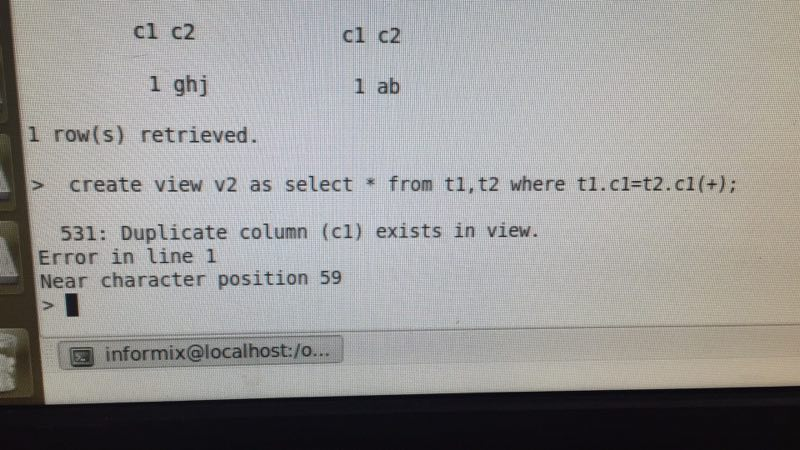

2017-05¶
2017-05-02¶
2017-05-03¶
2017-05-04¶
| 2017-05-04 09:18:47 | 你 | 晓亮说要把java的事情闹大 |
| 2017-05-04 09:19:02 | 你 | 争取把这件事推给DGD |
| 2017-05-04 09:19:18 | 你 | 他的理由是王旭水平太差 |
| 2017-05-04 09:19:35 | 我 | 嗯嗯，你告诉他让他找老杨，找到老杨就一定能解决 |
| 2017-05-04 09:19:40 | 你 | 让我有心理准备，不是指责咱们 |
| 2017-05-04 09:34:25 | 你 | @李辉 @田志敏 等下针对52号需求讨论一下 |
| 2017-05-04 09:36:04 | 你 | 我不想跟他们说话 |
| 2017-05-04 09:36:06 | 你 | 你去吧 |
| 2017-05-04 09:36:11 | 我 | 嗯 |
| 2017-05-04 09:36:19 | 你 | 反正这件事你都知道 |
| 2017-05-04 09:36:32 | 我 | 好的 |
| 2017-05-04 09:38:40 | 你 | [链接] 李辉和Yunming的聊天记录 |
| 2017-05-04 09:39:12 | 你 | 有什么指示吗 |
| 2017-05-04 09:39:56 | 我 | 应该是CDC，你顺着王总说就行 |
| 2017-05-04 09:40:03 | 你 | 好 |
| 2017-05-04 09:46:09 | 你 | 王总让你来的吗？ |
| 2017-05-04 09:46:24 | 我 | 是的 |
| 2017-05-04 09:55:03 | 我 | 我觉得我应该和王总对调，我当部门经理，他当研发经理 |
| 2017-05-04 09:55:13 | 你 | 是 |
| 2017-05-04 09:55:16 | 我 | 他太喜欢干预研发了 |
| 2017-05-04 10:03:22 | 你 | 是 |
| 2017-05-04 10:13:05 | 我 | 应该是高杰 |
| 2017-05-04 10:13:22 | 你 | 是 |
| 2017-05-04 10:23:26 | 我 | 廖爱福回你微信了吗 |
| 2017-05-04 10:23:37 | 你 | 没有啊 |
| 2017-05-04 10:23:41 | 你 | 回什么 |
| 2017-05-04 10:23:54 | 我 | 为啥提前开 |
| 2017-05-04 10:24:15 | 你 | 不知道 |
| 2017-05-04 10:24:39 | 你 | 你不是在这个群里呢么 要不把王总也拉进来 |
| 2017-05-04 10:24:46 | 你 | 我看王总是参与感太低了 |
| 2017-05-04 10:24:56 | 我 | 先别拉 |
| 2017-05-04 10:25:04 | 你 | OK |
| 2017-05-04 10:26:57 | 你 | 你俩聊啥呢 王总还在回邮件 |
| 2017-05-04 10:30:54 | 你 | 怎么回复廖爱福啊 |
| 2017-05-04 10:32:15 | 我 | 你说不知道 |
| 2017-05-04 10:33:28 | 我 | 讨论ef6的事情呢 |
| 2017-05-04 10:35:02 | 你 | 廖爱福一直催 |
| 2017-05-04 10:35:25 | 我 | 你就说领导开会 |
| 2017-05-04 10:35:35 | 我 | 就是讨论CDC的事情呢 |
| 2017-05-04 10:35:48 | 你 | 你快点吧 这事不太好弄 |
| 2017-05-04 10:36:07 | 你 | 现在廖爱福牵头解决 我这不参会 耽误了时间 会怪咱们DTD的 |
| 2017-05-04 10:36:15 | 你 | 孙国荣也发邮件了 |
| 2017-05-04 10:36:54 | 我 | 我看看 |
| 2017-05-04 10:49:36 | 你 | 杨总介入了 |
| 2017-05-04 10:50:42 | 我 | 嗯嗯，我知道 |
| 2017-05-04 11:58:36 | 我 | 亲，看着你好心疼 |
| 2017-05-04 12:16:25 | 我 | 严丹还问28的事情呢，我把黄军雷骂了一顿 |
| 2017-05-04 12:28:15 | 你 | 嗯嗯 |
| 2017-05-04 12:29:41 | 你 | 你看到王总回的邮件了吗 |
| 2017-05-04 12:37:08 | 我 | 看见了，王总被老杨忽悠了 |
| 2017-05-04 12:37:40 | 我 | 咱们不是纠结数据类型，是java代码 |
| 2017-05-04 12:37:52 | 我 | 你看这里面根本就没有java的事情 |
| 2017-05-04 12:38:36 | 我 | 数据类型的事情我们也没有推给别的部门，这个就是咱们做 |
| 2017-05-04 12:39:17 | 你 | 就是呗 |
| 2017-05-04 12:39:34 | 你 | 他根本不了解情况，就瞎说 |
| 2017-05-04 12:39:38 | 我 | 忽视他就完了 |
| 2017-05-04 12:39:44 | 你 | 就是 |
| 2017-05-04 12:39:49 | 你 | 就别管他了 |
| 2017-05-04 12:39:52 | 你 | 无所谓 |
| 2017-05-04 12:39:56 | 我 | 是 |
| 2017-05-04 12:40:04 | 你 | 别管他 |
| 2017-05-04 12:40:10 | 我 | 嗯嗯 |
| 2017-05-04 12:40:15 | 我 | 你吃完了吗 |
| 2017-05-04 12:40:34 | 你 | 晓亮还跟我说，看王总回得邮件是咱们接了 |
| 2017-05-04 12:40:37 | 你 | 吃完了 |
| 2017-05-04 12:40:47 | 我 | 嗯，睡会吧 |
| 2017-05-04 12:41:04 | 你 | 咱们就咬定非java的咱们做就行了 |
| 2017-05-04 12:41:17 | 你 | 让他们给java的人 |
| 2017-05-04 12:44:07 | 我 | 没错 |
| 2017-05-04 14:02:46 | 你 | CDC接口文档描述的需求，会尽快反馈计划，请知悉！ |
| 2017-05-04 14:02:52 | 我 | 亲，我没啥事，你要是没事咱俩聊会天吧 |
| 2017-05-04 14:02:55 | 你 | 这个文档的咱们就接了吧 |
| 2017-05-04 14:02:57 | 你 | 好 |
| 2017-05-04 14:02:59 | 我 | 是 |
| 2017-05-04 14:03:12 | 我 | 就是咱们写 |
| 2017-05-04 14:03:16 | 你 | 好 |
| 2017-05-04 14:17:31 | 我 | 亲，还忙吗 |
| 2017-05-04 14:17:39 | 你 | 不忙了 |
| 2017-05-04 14:17:41 | 你 | 怎么了 |
| 2017-05-04 14:17:47 | 我 | 聊天吧 |
| 2017-05-04 14:19:15 | 你 | 好啊 |
| 2017-05-04 14:19:29 | 你 | 你有什么想说的么 |
| 2017-05-04 14:20:29 | 我 | 还是早上和你说的 |
| 2017-05-04 14:20:55 | 你 | 恩恩 说吧 |
| 2017-05-04 14:23:26 | 你 | 怎么了 |
| 2017-05-04 14:24:02 | 我 | 王总刚才和孙国荣吵起来了 |
| 2017-05-04 14:24:07 | 我 | 不理他们 |
| 2017-05-04 14:24:48 | 我 | 我今天中午想了想，感觉你现在面对的压力可能和李杰很相似 |
| 2017-05-04 14:25:40 | 你 | 嗯嗯 |
| 2017-05-04 14:25:43 | 你 | 你说说 |
| 2017-05-04 14:26:22 | 我 | 就是同事之间和办公室政治这块 |
| 2017-05-04 14:27:28 | 你 | 恩 |
| 2017-05-04 14:27:47 | 我 | 我想了一下，发现可能李杰比你先面对这些 |
| 2017-05-04 14:28:02 | 我 | 而且可能比你的程度更深 |
| 2017-05-04 14:28:22 | 我 | 所以才导致了她更偏激 |
| 2017-05-04 14:28:42 | 你 | 有可能 |
| 2017-05-04 14:28:51 | 你 | 我其实已经比最开始变多了 |
| 2017-05-04 14:28:55 | 你 | 但是变得还不够 |
| 2017-05-04 14:29:01 | 你 | 但是李杰是没有变的 |
| 2017-05-04 14:30:24 | 我 | 嗯嗯 |
| 2017-05-04 14:30:40 | 我 | 李杰可能确实是缺少一个人带她 |
| 2017-05-04 14:31:02 | 你 | 回复下群里的消息 |
| 2017-05-04 14:31:14 | 你 | 我待你开吧 |
| 2017-05-04 14:31:27 | 你 | 老田不去的话就等等 |
| 2017-05-04 14:31:40 | 我 | 嗯嗯 |
| 2017-05-04 14:33:06 | 我 | 咱们接着说吧 |
| 2017-05-04 14:33:12 | 你 | 好 |
| 2017-05-04 14:35:19 | 我 | 你觉得呢 |
| 2017-05-04 14:35:33 | 你 | 是 |
| 2017-05-04 14:35:50 | 你 | 这里边的弯弯绕 我俩其实都很不了解 |
| 2017-05-04 14:36:01 | 我 | 所以想想李杰更可怜 |
| 2017-05-04 14:36:02 | 你 | 而且我俩从小就被洗脑了 |
| 2017-05-04 14:36:05 | 你 | 是啊 |
| 2017-05-04 14:36:07 | 我 | 没错 |
| 2017-05-04 14:36:08 | 你 | 他多可怜 |
| 2017-05-04 14:36:17 | 我 | 李杰太正直了 |
| 2017-05-04 14:36:22 | 你 | 对 |
| 2017-05-04 14:36:26 | 你 | 就是太正直了 |
| 2017-05-04 14:36:41 | 我 | 我看你这几天都心疼死了 |
| 2017-05-04 14:36:42 | 你 | 而且他还没到被坑的地步 |
| 2017-05-04 14:36:48 | 我 | 是 |
| 2017-05-04 14:36:54 | 你 | 邱总最开始还是护着他的 |
| 2017-05-04 14:37:09 | 你 | 邱总一走她就暴露了 |
| 2017-05-04 14:37:37 | 我 | 是，估计她当时一定过的很难受 |
| 2017-05-04 14:37:50 | 你 | 都哭过好多次了 |
| 2017-05-04 14:37:59 | 你 | 那家伙 都不亚于失恋 |
| 2017-05-04 14:38:14 | 我 | 说实话我都没想到会有这么严重 |
| 2017-05-04 14:38:22 | 你 | 去年我们去西安的时候 闹得正厉害 |
| 2017-05-04 14:38:28 | 我 | 之前我对你也没有想到会这样 |
| 2017-05-04 14:38:32 | 你 | 特别特别严重 |
| 2017-05-04 14:38:36 | 我 | 嗯嗯 |
| 2017-05-04 14:38:37 | 你 | 是 |
| 2017-05-04 14:38:43 | 你 | 我比她好很多 |
| 2017-05-04 14:38:49 | 我 | 你昨天问我为啥发脾气 |
| 2017-05-04 14:38:54 | 你 | 嗯嗯 |
| 2017-05-04 14:38:58 | 我 | 我昨天回去想了想 |
| 2017-05-04 14:39:36 | 我 | 很大一部分是因为我看见你受气了，我就不知不觉就生气 |
| 2017-05-04 14:39:54 | 我 | 昨天黄军雷德邮件是一个导火索 |
| 2017-05-04 14:40:04 | 你 | 哈哈 |
| 2017-05-04 14:40:10 | 你 | 不知不觉生气 |
| 2017-05-04 14:40:14 | 你 | 哈哈 |
| 2017-05-04 14:40:20 | 我 | 真的 |
| 2017-05-04 14:40:54 | 你 | 嗯嗯 黄军雷是挺让人生气的 |
| 2017-05-04 14:41:00 | 你 | 但是没想到会那么气 |
| 2017-05-04 14:41:07 | 我 | 我自己都没有意识到，后来才发现 |
| 2017-05-04 14:41:19 | 你 | 你一拍桌子 我的心 登一下 就跳到嗓子眼了 |
| 2017-05-04 14:41:30 | 我 | 还是因为你在我心里的位置太重要 |
| 2017-05-04 14:41:47 | 我 | 所以才会导致我自己控制不住 |
| 2017-05-04 14:41:52 | 你 | 估计是 |
| 2017-05-04 14:42:11 | 你 | 嗯嗯 |
| 2017-05-04 14:42:26 | 我 | 所以今天早上我才会和你说这些 |
| 2017-05-04 14:42:45 | 你 | 恩 |
| 2017-05-04 14:42:57 | 我 | 然后恰好CDC的事情 |
| 2017-05-04 14:43:07 | 你 | 是呢 |
| 2017-05-04 14:43:10 | 你 | 太应景了 |
| 2017-05-04 14:43:17 | 我 | 我觉得我还是应该教你战术 |
| 2017-05-04 14:43:34 | 你 | 恩 |
| 2017-05-04 14:43:40 | 我 | 而且最重要的是帮你跨过心理的那道坎 |
| 2017-05-04 14:44:32 | 我 | 上午我吃饭前看你的状态，心疼死了 |
| 2017-05-04 14:44:52 | 我 | 以前我一直护着你，你也接触不到这些 |
| 2017-05-04 14:44:57 | 你 | 是呢 |
| 2017-05-04 14:44:58 | 你 | 真的 |
| 2017-05-04 14:45:03 | 我 | 不过对你也不是太好 |
| 2017-05-04 14:45:04 | 你 | 我现在才知道自己多幸福 |
| 2017-05-04 14:45:42 | 我 | 以后我会让你接触一些，你要是有压力就立刻和我说 |
| 2017-05-04 14:46:02 | 我 | 我也会教你很多的战术 |
| 2017-05-04 14:46:31 | 你 | 好 |
| 2017-05-04 14:46:52 | 你 | 这个我可能会犯错 |
| 2017-05-04 14:47:00 | 你 | 我不希望你责怪我 |
| 2017-05-04 14:47:05 | 你 | 我特别怕让你失望 |
| 2017-05-04 14:47:10 | 我 | 你放心 |
| 2017-05-04 14:47:25 | 我 | 我不会责怪你，也不会对你失望 |
| 2017-05-04 14:47:40 | 我 | 我让你去做就是会出错 |
| 2017-05-04 14:49:20 | 你 | 稍等 |
| 2017-05-04 14:53:34 | 你 | 『我让你去做就是会出错』？ |
| 2017-05-04 14:54:35 | 我 | 我是想说我知道你会出错 |
| 2017-05-04 14:54:55 | 你 | 老王 你知道吗 我今早上听到你说你信任我 以及刚才说你太在意我 我真的特别特别开心 |
| 2017-05-04 14:54:56 | 我 | 本来也是想通过出错暴露一些问题 |
| 2017-05-04 14:55:05 | 我 | 嗯嗯 |
| 2017-05-04 14:55:10 | 你 | 其实你最了解我了 |
| 2017-05-04 14:55:20 | 我 | 是 |
| 2017-05-04 14:55:21 | 你 | 我早就信任你了 |
| 2017-05-04 14:55:31 | 我 | 嗯嗯，我知道 |
| 2017-05-04 14:55:36 | 你 | 而且我一直突破不了的底线就是忠诚 |
| 2017-05-04 14:55:41 | 你 | 道德底线吧 |
| 2017-05-04 14:55:53 | 我 | 嗯 |
| 2017-05-04 14:55:55 | 你 | 我觉得背叛是不可接受的 |
| 2017-05-04 14:56:01 | 我 | 这个不是问题 |
| 2017-05-04 14:56:24 | 我 | 我现在关注的是你在这种丛林法则环境下的反应 |
| 2017-05-04 14:56:25 | 你 | 那接着说你的问题 |
| 2017-05-04 14:56:31 | 你 | 嗯嗯 |
| 2017-05-04 14:56:38 | 我 | 咱俩之间的事情都好说 |
| 2017-05-04 14:56:51 | 你 | 现在的状况和最开始需求的时候有相似之处 |
| 2017-05-04 14:57:08 | 我 | 比那时候要恶劣的多 |
| 2017-05-04 14:57:28 | 你 | 但是不同的是我犯的错你是否兜得住 |
| 2017-05-04 14:57:31 | 你 | 对 |
| 2017-05-04 14:57:36 | 你 | 也就是你说的恶劣 |
| 2017-05-04 14:57:49 | 你 | 我特别怕给你闯祸 |
| 2017-05-04 14:57:59 | 你 | 其实我都不在意是否得罪王总 |
| 2017-05-04 14:58:10 | 你 | 因为我对他够不成威胁 |
| 2017-05-04 14:58:19 | 我 | 我知道，所以我才说要教你战术 |
| 2017-05-04 14:58:32 | 你 | 好 |
| 2017-05-04 14:59:56 | 我 | 今天上午你也感觉到了工作中的道德底线的问题 |
| 2017-05-04 15:00:05 | 你 | 恩 |
| 2017-05-04 15:00:28 | 我 | 你首先要能突破这个 |
| 2017-05-04 15:00:35 | 你 | 恩 |
| 2017-05-04 15:00:53 | 我 | 我会重点教给你这个 |
| 2017-05-04 15:01:02 | 你 | 嗯嗯 |
| 2017-05-04 15:01:04 | 你 | 好 |
| 2017-05-04 15:01:23 | 我 | 如何在降低道德底线的前提下维持自己的心态 |
| 2017-05-04 15:01:32 | 你 | 是 |
| 2017-05-04 15:02:45 | 我 | 你最近也需要多自省 |
| 2017-05-04 15:03:00 | 我 | 咱们也可以每天讨论一下你的自省 |
| 2017-05-04 15:03:01 | 你 | 嗯嗯 |
| 2017-05-04 15:03:13 | 你 | 我好累啊 亲爱的 |
| 2017-05-04 15:03:18 | 我 | 我知道 |
| 2017-05-04 15:03:36 | 你 | 我现在每天晚上都在干活 |
| 2017-05-04 15:03:39 | 你 | 我尽量吧 |
| 2017-05-04 15:03:42 | 我 | 所以以前我一直犹豫 |
| 2017-05-04 15:03:53 | 你 | 大不了再晚要一年宝宝 |
| 2017-05-04 15:04:00 | 我 | 你的工作我可以帮你做 |
| 2017-05-04 15:04:09 | 你 | 啊？ |
| 2017-05-04 15:04:22 | 我 | 这样你就可以专心了 |
| 2017-05-04 15:04:54 | 你 | 可是我又不想麻烦你 |
| 2017-05-04 15:05:20 | 我 | 不要这么想，你的成长才是最重要的 |
| 2017-05-04 15:05:35 | 我 | 特别是现在时间非常紧张的情况下 |
| 2017-05-04 15:06:08 | 你 | 好吧 |
| 2017-05-04 15:06:24 | 你 | 我把工作重心稍微调整下 |
| 2017-05-04 15:06:34 | 我 | 嗯嗯 |
| 2017-05-04 15:06:53 | 我 | 其实你现在工作出一些问题也不大 |
| 2017-05-04 15:07:04 | 你 | 是啊 |
| 2017-05-04 15:07:11 | 你 | 我怕我做错了需求啥的 |
| 2017-05-04 15:08:03 | 我 | 没事的，你怕错还是因为你的道德水平太高 |
| 2017-05-04 15:08:11 | 我 | 对自己要求高 |
| 2017-05-04 15:08:17 | 你 | 是 |
| 2017-05-04 15:08:23 | 你 | 有关系 |
| 2017-05-04 15:08:44 | 我 | 你需要做一些改变 |
| 2017-05-04 15:08:56 | 我 | 放下一些 |
| 2017-05-04 15:09:06 | 你 | 恩 |
| 2017-05-04 15:09:23 | 你 | 我试着放下些 |
| 2017-05-04 15:09:41 | 我 | 嗯嗯 |
| 2017-05-04 15:10:35 | 你 | 好难 |
| 2017-05-04 15:10:49 | 你 | 现在你让我做的事都好难 |
| 2017-05-04 15:10:51 | 我 | 亲，别怕，有我呢 |
| 2017-05-04 15:10:56 | 我 | 是 |
| 2017-05-04 15:11:09 | 你 | 嗯嗯，我都快愁哭了 |
| 2017-05-04 15:11:15 | 我 | 以前就是因为心疼你，我才舍不得让你去做 |
| 2017-05-04 15:11:23 | 你 | 嗯嗯 |
| 2017-05-04 15:11:26 | 我 | 千万别，有我在 |
| 2017-05-04 15:11:43 | 我 | 我一定会让你平平安安的 |
| 2017-05-04 15:11:53 | 我 | 一定让你快快乐乐的 |
| 2017-05-04 15:11:55 | 你 | 嗯嗯 |
| 2017-05-04 15:11:58 | 你 | 好 |
| 2017-05-04 15:12:09 | 你 | 第一个就是你别跟我嚷嚷 |
| 2017-05-04 15:12:28 | 你 | 你跟我沟通，没必要嚷嚷 |
| 2017-05-04 15:12:54 | 你 | 你也看出来了，咱俩嚷嚷也解决不了啥问题 |
| 2017-05-04 15:13:02 | 我 | 嗯嗯 |
| 2017-05-04 15:13:10 | 我 | 我嚷嚷是我不对 |
| 2017-05-04 15:13:29 | 我 | 把情绪带给你了 |
| 2017-05-04 15:14:42 | 你 | 就是 |
| 2017-05-04 15:15:09 | 我 | [动画表情] |
| 2017-05-04 15:15:24 | 你 | 哈哈 |
| 2017-05-04 15:18:47 | 我 | 心情好点吗 |
| 2017-05-04 15:19:10 | 你 | 没事了 |
| 2017-05-04 15:19:14 | 你 | 没事 |
| 2017-05-04 15:19:28 | 我 | 嗯嗯 |
| 2017-05-04 15:22:38 | 我 | 完事了 |
| 2017-05-04 15:22:44 | 你 | 好 |
| 2017-05-04 15:23:17 | 我 | 真讨厌，王总不走 |
| 2017-05-04 15:23:27 | 你 | 为啥不走啊 |
| 2017-05-04 15:24:02 | 我 | 不知道，我出来了 |
| 2017-05-04 15:24:08 | 你 | 恩 |
| 2017-05-04 15:24:20 | 我 | 我去找趟刘辉 |
| 2017-05-04 15:24:26 | 你 | 恩 |
| 2017-05-04 16:50:27 | 我 | 亲，有事吗 |
| 2017-05-04 16:50:43 | 你 | 东东要上4天夜班 |
| 2017-05-04 16:50:49 | 我 | 啊 |
| 2017-05-04 16:50:56 | 我 | 还要上夜班 |
| 2017-05-04 16:51:06 | 我 | 怎么这么恐怖 |
| 2017-05-04 16:51:07 | 你 | 我周五晚上要住阿娇家里去 |
| 2017-05-04 16:51:10 | 你 | 是呢 |
| 2017-05-04 16:51:17 | 你 | 这个单位特别恐怖 |
| 2017-05-04 16:51:24 | 我 | 唉 |
| 2017-05-04 16:51:33 | 你 | 特别忙 |
| 2017-05-04 16:51:51 | 你 | 陪他陪的我都快吐了 |
| 2017-05-04 16:52:00 | 我 | 唉 |
| 2017-05-04 16:52:02 | 我 | 好心疼 |
| 2017-05-04 16:52:15 | 你 | 你说怎么就不能让我省点心呢 |
| 2017-05-04 16:52:25 | 我 | 唉 |
| 2017-05-04 16:52:28 | 你 | 而且他们这边工资不高 |
| 2017-05-04 16:52:36 | 你 | 加班也没有加班费 |
| 2017-05-04 16:52:37 | 我 | 比原来高吗 |
| 2017-05-04 16:52:43 | 你 | 这还是国企吗 |
| 2017-05-04 16:52:55 | 你 | 他原来是6000，现在是5600 |
| 2017-05-04 16:53:15 | 你 | 没我高[偷笑] |
| 2017-05-04 17:59:14 | 你 | 我要下班了 |
| 2017-05-04 17:59:25 | 你 | 我明天早上8：00从家走 |
| 2017-05-04 17:59:28 | 你 | 不早来了 |
| 2017-05-04 17:59:33 | 你 | 东东晚上上夜班 |
| 2017-05-04 17:59:43 | 我 | 哦 |
| 2017-05-04 18:02:19 | 我 | 你晚上一个人吗 |
| 2017-05-04 18:02:38 | 你 | 恩 |
| 2017-05-04 18:02:46 | 你 | 等我找你吧 |
| 2017-05-04 18:02:54 | 我 | 👌 |
| 2017-05-04 22:15:36 | 你 | 睡了吗 |
| 2017-05-04 22:16:01 | 我 | 没有呢 |
| 2017-05-04 22:16:13 | 你 | 恩 |
| 2017-05-04 22:16:18 | 你 | 聊天吧 |
| 2017-05-04 22:16:26 | 我 | 嗯嗯 |
| 2017-05-04 22:16:33 | 我 | 你累吗 |
| 2017-05-04 22:16:53 | 你 | 还好，反正不轻松，心累 |
| 2017-05-04 22:17:21 | 我 | 是，最近这几天太乱了 |
| 2017-05-04 22:17:31 | 我 | 感觉王总回来就没好事 |
| 2017-05-04 22:18:00 | 你 | 恩 |
| 2017-05-04 22:18:04 | 你 | 是 |
| 2017-05-04 22:18:22 | 你 | 你又瞎联系 |
| 2017-05-04 22:18:31 | 我 | 不是呀 |
| 2017-05-04 22:18:50 | 我 | 其实你看，他回来尽添乱了 |
| 2017-05-04 22:18:58 | 你 | 那倒是 |
| 2017-05-04 22:19:15 | 我 | 现在反倒把团建放到第一位了 |
| 2017-05-04 22:19:26 | 你 | 呵呵 |
| 2017-05-04 22:19:32 | 我 | 其实我觉得现在这个时间去团建不好 |
| 2017-05-04 22:19:41 | 你 | 是 |
| 2017-05-04 22:19:48 | 我 | 给武总的印象不好 |
| 2017-05-04 22:19:55 | 你 | 我都没心情 |
| 2017-05-04 22:20:12 | 你 | 刚来就团建 |
| 2017-05-04 22:20:23 | 我 | 还有就是昨天bug处理的事情，根本就是添乱嘛 |
| 2017-05-04 22:20:52 | 我 | 不过现在至少王志暂时不会和研发一心了 |
| 2017-05-04 22:20:59 | 你 | 而且你看他天天的说不同意加班，让陪家人，这种理念在中国根本行不通 |
| 2017-05-04 22:21:04 | 你 | 哈哈 |
| 2017-05-04 22:21:40 | 你 | 跟你语音方便吗 |
| 2017-05-04 22:21:47 | 你 | 你收拾完了吗？ |
| 2017-05-04 22:22:00 | 我 | 稍等一下 |
| 2017-05-04 22:25:53 | 我 | 完事了，我打给你吧 |
| 2017-05-04 22:50:54 | 我 | [电话] |
| 2017-05-04 22:53:06 | 我 | 听见了 |
| 2017-05-04 23:33:22 | 你 | [电话] |
2017-05-05¶

2017-05-06¶
| 2017-05-06 08:51:53 | 我 | 你们到哪了 |
| 2017-05-06 08:52:12 | 你 | 等继展的车呢 |
| 2017-05-06 08:52:36 | 我 | 哦，还没出来呢 |
| 2017-05-06 08:53:02 | 你 | 你们到了？ |
| 2017-05-06 08:53:12 | 我 | 快了 |
| 2017-05-06 08:53:20 | 我 | 10分钟吧 |
| 2017-05-06 08:53:48 | 你 | 坐上车了 |
| 2017-05-06 08:53:53 | 我 | 嗯嗯 |
| 2017-05-06 13:27:19 | 我 | 你俩去哪了 |
| 2017-05-06 13:34:56 | 你 | 卫生间 |
| 2017-05-06 13:35:02 | 你 | 现在在车上了 |
| 2017-05-06 13:35:25 | 我 | 嗯嗯 |
| 2017-05-06 13:35:30 | 我 | 我们先走了 |
| 2017-05-06 13:35:38 | 你 | 恩 |
| 2017-05-06 13:35:48 | 我 | 晚上能聊天吗 |
| 2017-05-06 13:36:24 | 你 | 应该能 |
| 2017-05-06 13:36:54 | 我 | 嗯嗯，我等你 |
| 2017-05-06 13:37:54 | 你 | 好 |
| 2017-05-06 13:38:08 | 你 | 先不聊了，一会东东接我来 |
| 2017-05-06 13:38:20 | 我 | [动画表情] |
| 2017-05-06 20:21:54 | 你 | 亲， |
| 2017-05-06 20:22:00 | 你 | 下午睡觉了吗 |
| 2017-05-06 20:22:13 | 我 | 睡了 |
| 2017-05-06 20:22:18 | 我 | 你睡了吗 |
| 2017-05-06 20:22:21 | 你 | 我也睡了 |
| 2017-05-06 20:22:27 | 我 | 嗯嗯 |
| 2017-05-06 20:22:28 | 你 | 你儿子走了吗 |
| 2017-05-06 20:22:32 | 你 | 顺利不 |
| 2017-05-06 20:22:39 | 我 | 刚走，挺顺利 |
| 2017-05-06 20:22:52 | 你 | 这么晚才走的。 |
| 2017-05-06 20:22:57 | 你 | ！ |
| 2017-05-06 20:22:58 | 我 | 是 |
| 2017-05-06 20:23:04 | 你 | 嗯嗯 |
| 2017-05-06 20:23:09 | 我 | 得9.30到 |
| 2017-05-06 20:23:34 | 你 | 哦 |
| 2017-05-06 20:23:36 | 你 | 好 |
| 2017-05-06 20:23:58 | 你 | 我也睡了，好像没睡着 |
| 2017-05-06 20:25:05 | 我 | 累吗 |
| 2017-05-06 20:25:34 | 你 | 还行 |
| 2017-05-06 20:25:36 | 你 | 没事 |
| 2017-05-06 20:26:00 | 我 | 今天玩的高兴吗 |
| 2017-05-06 20:26:02 | 你 | 我得把衣服跑上去 |
| 2017-05-06 20:26:11 | 你 | 抹上西瓜汤了 |
| 2017-05-06 20:26:18 | 你 | 而且都是味 |
| 2017-05-06 20:26:22 | 我 | 去吧 |
| 2017-05-06 20:26:23 | 你 | 头发也是 |
| 2017-05-06 20:26:30 | 你 | 还行吧，没感觉 |
| 2017-05-06 20:26:44 | 你 | |
| 2017-05-06 20:26:52 | 你 | |
| 2017-05-06 20:27:16 | 我 | 😄 |
| 2017-05-06 20:30:09 | 你 | |
| 2017-05-06 20:30:32 | 我 | 陪你聊天呀 |
| 2017-05-06 20:30:41 | 我 | 我很专心的 |
| 2017-05-06 20:32:58 | 你 | |
| 2017-05-06 20:33:12 | 你 | |
| 2017-05-06 20:33:28 | 我 | 是的 |
| 2017-05-06 20:33:43 | 我 | 就是我的反省 |
| 2017-05-06 20:33:53 | 你 | |
| 2017-05-06 20:34:13 | 我 | 下午我说我错了是非常认真的 |
| 2017-05-06 20:34:24 | 我 | 随你，我都行 |
| 2017-05-06 20:34:29 | 你 | |
| 2017-05-06 20:34:40 | 你 | |
| 2017-05-06 20:34:42 | 我 | 我打字，你语音吧 |
| 2017-05-06 20:34:47 | 你 | |
| 2017-05-06 20:35:57 | 我 | 我理解你说的，你没有理解我说的错了是什么意思 |
| 2017-05-06 20:36:20 | 我 | 我是说我自己的心态错了 |
| 2017-05-06 20:36:53 | 你 | |
| 2017-05-06 20:37:22 | 我 | 我和你说哪些话的时候，其实是作为一个领导 家长 长辈 老师 这类这样的心态 |
| 2017-05-06 20:37:52 | 我 | 有一种语重心长的感觉 |
| 2017-05-06 20:38:09 | 我 | 也就是说当时我没有把你当成朋友 |
| 2017-05-06 20:38:33 | 你 | |
| 2017-05-06 20:38:37 | 我 | 是以一种教育你的方式和你沟通 |
| 2017-05-06 20:39:50 | 我 | 现在说的是我，和你当时的反应没有关系 |
| 2017-05-06 20:40:22 | 我 | 我是想和你说说我自己，你不是想了解我吗 |
| 2017-05-06 20:40:36 | 你 | |
| 2017-05-06 20:40:46 | 你 | |
| 2017-05-06 20:41:34 | 我 | 我和你在一起的时候一般有两种角色 |
| 2017-05-06 20:41:49 | 我 | 一种类似导师，一种类似朋友 |
| 2017-05-06 20:42:12 | 我 | 作为导师我经常指出你的不足 |
| 2017-05-06 20:42:28 | 我 | 作为朋友我经常包容你的不足 |
| 2017-05-06 20:43:09 | 我 | 这两种角色我自己也没有分得太清楚 |
| 2017-05-06 20:43:12 | 你 | 恩 |
| 2017-05-06 20:43:32 | 你 | 恩 |
| 2017-05-06 20:43:47 | 我 | 大部分情况下都没有关系 |
| 2017-05-06 20:43:55 | 你 | 是 |
| 2017-05-06 20:44:10 | 你 | 我自己也分不开领导和朋友了 |
| 2017-05-06 20:44:21 | 我 | 有问题的就是你需要的角色我没有给你 |
| 2017-05-06 20:44:45 | 你 | 就是我需要朋友的时候你表现的是领导的嘴脸 |
| 2017-05-06 20:44:48 | 你 | [调皮] |
| 2017-05-06 20:45:03 | 我 | 是的 |
| 2017-05-06 20:45:57 | 你 | |
| 2017-05-06 20:46:12 | 你 | |
| 2017-05-06 20:46:32 | 你 | |
| 2017-05-06 20:47:04 | 我 | 亲，咱们说的是我，不是你 |
| 2017-05-06 20:47:22 | 我 | 你说的是你自己 |
| 2017-05-06 20:47:51 | 你 | |
| 2017-05-06 20:48:01 | 我 | 这个不是说我必须宠着你让着你哄着你的事情 |
| 2017-05-06 20:48:23 | 你 | |
| 2017-05-06 20:48:51 | 我 | 我现在说的是我对自己的反思，而不是咱俩之间的关系 |
| 2017-05-06 20:49:04 | 你 | |
| 2017-05-06 20:49:28 | 我 | 这两者之间是有区别的 |
| 2017-05-06 20:49:43 | 我 | 还是先说我比较简单 |
| 2017-05-06 20:50:22 | 我 | 我后来就在想我以前什么时候是领导的角色什么时候是朋友的角色 |
| 2017-05-06 20:51:08 | 你 | 恩 |
| 2017-05-06 20:51:13 | 我 | 发现大多数是工作上，有其他人的时候我是领导 |
| 2017-05-06 20:52:13 | 我 | 咱俩单独在一起，特别是在车里的时候是朋友居多 |
| 2017-05-06 20:53:19 | 我 | 因此我就分析自己，发现我心里其实也是有一道坎 |
| 2017-05-06 20:53:22 | 你 | 是 |
| 2017-05-06 20:53:29 | 你 | 什么坎 |
| 2017-05-06 20:54:41 | 我 | 就是把工作和感情分得太清楚 |
| 2017-05-06 20:55:04 | 我 | 工作的时候特别特别理性 |
| 2017-05-06 20:55:25 | 你 | 这样不对吗 |
| 2017-05-06 20:55:38 | 我 | 理性到了我对你的错误总是想让你改正的地步 |
| 2017-05-06 20:55:57 | 你 | |
| 2017-05-06 20:56:01 | 我 | 其实没有对错可言 |
| 2017-05-06 20:56:06 | 你 | |
| 2017-05-06 20:56:22 | 你 | |
| 2017-05-06 20:56:31 | 你 | |
| 2017-05-06 20:56:50 | 我 | 有关系 |
| 2017-05-06 20:57:04 | 我 | 还有一种可能是我着急了 |
| 2017-05-06 20:57:06 | 你 | |
| 2017-05-06 20:57:12 | 你 | |
| 2017-05-06 20:57:15 | 我 | 因为我觉得时间不够了 |
| 2017-05-06 20:57:23 | 你 | |
| 2017-05-06 20:57:34 | 你 | |
| 2017-05-06 20:57:46 | 你 | |
| 2017-05-06 20:57:57 | 你 | |
| 2017-05-06 20:58:23 | 我 | 😄 |
| 2017-05-06 20:59:06 | 我 | 说实话，我很享受作为朋友的感觉 |
| 2017-05-06 21:00:30 | 你 | |
| 2017-05-06 21:00:38 | 你 | |
| 2017-05-06 21:00:49 | 你 | |
| 2017-05-06 21:01:54 | 我 | 我才不想批评你呢 |
| 2017-05-06 21:02:09 | 我 | 我只是想教你东西 |
| 2017-05-06 21:02:15 | 我 | 只是比较着急 |
| 2017-05-06 21:02:22 | 你 | |
| 2017-05-06 21:02:29 | 我 | 我现在是真舍不得说你 |
| 2017-05-06 21:02:34 | 你 | |
| 2017-05-06 21:03:09 | 我 | 对呀对呀，所以我才反思 |
| 2017-05-06 21:03:21 | 我 | 我才发现问题在哪 |
| 2017-05-06 21:03:58 | 我 | 当我自己是领导的角色时，自己心理上就觉得站在道德的制高点了 |
| 2017-05-06 21:04:38 | 我 | 就是那种你错了，我说你是帮助你，你应该垂耳聆听 |
| 2017-05-06 21:04:54 | 我 | 所以你就不爽啦 |
| 2017-05-06 21:04:55 | 你 | |
| 2017-05-06 21:05:02 | 你 | |
| 2017-05-06 21:05:20 | 我 | 是的 |
| 2017-05-06 21:05:38 | 你 | |
| 2017-05-06 21:05:48 | 你 | |
| 2017-05-06 21:06:02 | 我 | 是的 |
| 2017-05-06 21:17:27 | 你 | [电话] |
| 2017-05-06 21:17:42 | 我 | 稍等，我接电话 |
| 2017-05-06 21:17:49 | 你 | 恩 |
| 2017-05-06 21:38:40 | 我 | 没事了，我打给你吧 |
| 2017-05-06 21:39:14 | 你 | 
|
| 2017-05-06 22:06:56 | 我 | [电话] |
| 2017-05-06 22:30:01 | 你 | [电话] |
| 2017-05-06 22:30:45 | 我 | ？ |
| 2017-05-06 22:34:57 | 你 | 李杰电话 |
| 2017-05-06 22:35:06 | 我 | 嗯，等你 |
| 2017-05-06 22:37:26 | 你 | [电话] |
| 2017-05-06 23:47:26 | 我 | [电话] |
2017-05-07¶
| 2017-05-07 20:00:24 | 你 | 东东今天在家，明天见吧，早点休息，别回了 |
2017-05-08¶
| 2017-05-08 09:27:43 | 我 | 狗咬狗 |
| 2017-05-08 09:27:52 | 我 | 都说的不对 |
| 2017-05-08 09:27:57 | 你 | 哈哈 |
| 2017-05-08 09:28:11 | 我 | 研发的是给测试看的 |
| 2017-05-08 09:28:29 | 我 | 文档是看测试的结论 |
| 2017-05-08 09:28:42 | 你 | 哈哈 |
| 2017-05-08 09:30:00 | 我 | 这些东西就是刘畅自己想要 |
| 2017-05-08 09:30:39 | 你 | 你先别说话 |
| 2017-05-08 09:30:42 | 你 | 是 |
| 2017-05-08 09:50:56 | 我 | 刘畅不想参加晨会了 |
| 2017-05-08 09:51:38 | 你 | 为啥啊 |
| 2017-05-08 09:52:19 | 我 | 她说晨会她不受重视 |
| 2017-05-08 09:52:37 | 我 | 特别是主持人经常把她忘了 |
| 2017-05-08 09:52:45 | 你 | 哈哈 |
| 2017-05-08 09:53:00 | 你 | 支持人经常把我也忘了 把你还忘了呢 |
| 2017-05-08 09:53:02 | 你 | 哈哈 |
| 2017-05-08 09:53:05 | 我 | 是 |
| 2017-05-08 09:53:36 | 你 | 太玻璃心了 |
| 2017-05-08 09:54:06 | 我 | 她就是权力欲望太强 |
| 2017-05-08 10:00:07 | 你 | 你怎么跟他说的啊 |
| 2017-05-08 10:01:19 | 我 | 我就告诉她，她来不来是态度问题，来了就算没事，也是代表着质控，否则就相当于少了一个职责，那样以后大家就更不会重视她了 |
| 2017-05-08 10:01:34 | 你 | 恩 |
| 2017-05-08 10:01:41 | 你 | 是 |
| 2017-05-08 10:02:17 | 你 | 你会shell吗 |
| 2017-05-08 10:02:26 | 我 | 会 |
| 2017-05-08 10:02:46 | 你 | 你帮我写短代码 生成4000个字符 |
| 2017-05-08 10:02:59 | 你 | 打印4000个字符 |
| 2017-05-08 10:03:16 | 你 | 不能有换行符 |
| 2017-05-08 10:03:21 | 我 | 是放在文件里面吗 |
| 2017-05-08 10:03:47 | 你 | 你最好是在我的电脑上写 |
| 2017-05-08 10:03:56 | 我 | 好的 |
| 2017-05-08 10:04:27 | 你 | 我就是想values(‘ ‘)的单引号里是4000个字符 |
| 2017-05-08 10:04:38 | 你 | 但是这个用例需要在保密上跑 |
| 2017-05-08 10:04:43 | 你 | 你有空的时候弄吧 |
| 2017-05-08 10:05:01 | 我 | 嗯嗯 |
| 2017-05-08 10:05:04 | 你 | 不着急 |
| 2017-05-08 10:06:53 | 你 | 你没写吧 |
| 2017-05-08 10:06:58 | 你 | 没写的话别写了 |
| 2017-05-08 10:07:02 | 你 | 不需要了 |
| 2017-05-08 10:07:12 | 我 | 你找到了？ |
| 2017-05-08 10:07:20 | 你 | 嗯嗯 我找到证据了 |
| 2017-05-08 10:07:27 | 你 | 不测了 |
| 2017-05-08 10:07:32 | 我 | 👌 |
| 2017-05-08 10:10:28 | 你 | 通过这种方式往clob字段直接插入超过4000字节的字符串，会导致缓冲区满报错. |
| 2017-05-08 10:10:43 | 你 | 我查了论坛上也说 这种方式Oracle的边界就是4000 |
| 2017-05-08 10:10:59 | 我 | 嗯嗯 |
| 2017-05-08 10:30:16 | 你 | 你干嘛呢 |
| 2017-05-08 10:30:29 | 我 | 没啥事情 |
| 2017-05-08 10:30:38 | 我 | 有事吗 |
| 2017-05-08 10:30:50 | 你 | 没事 |
| 2017-05-08 10:30:56 | 你 | 我写需求文档呢 |
| 2017-05-08 10:31:05 | 你 | 随便问问你 |
| 2017-05-08 10:31:07 | 我 | 嗯嗯 |
| 2017-05-08 10:31:22 | 你 | 早上胖子带的排骨还显摆下 我带的牛肉 |
| 2017-05-08 10:31:29 | 我 | 😁 |
| 2017-05-08 10:31:30 | 你 | 昨天老公炖了一下午 哼 |
| 2017-05-08 10:31:38 | 我 | 他就爱显摆 |
| 2017-05-08 10:31:43 | 你 | 就是 |
| 2017-05-08 10:32:01 | 你 | 跟个小孩一样 |
| 2017-05-08 10:32:04 | 你 | 不成熟 |
| 2017-05-08 10:32:07 | 我 | 是 |
| 2017-05-08 10:32:22 | 你 | 你忙吧 我写文档了 |
| 2017-05-08 10:32:37 | 我 | 嗯，我没事，随时等你 |
| 2017-05-08 10:32:46 | 你 | 嗯嗯 |
| 2017-05-08 11:33:16 | 你 | 我写完了 |
| 2017-05-08 11:33:20 | 你 | 先去吃饭 |
| 2017-05-08 11:33:25 | 我 | 嗯 |
| 2017-05-08 14:38:23 | 我 | 开会了 |
| 2017-05-08 14:40:42 | 我 | 205 |
| 2017-05-08 15:46:48 | 你 | 1、现场的 Hibernate,Mybatis框架版本？方言包的版本？ 2、由于Hibernate,Mybatis框架版本较低，导致原来的适配8t的blob、clob字段不可用的原因可否描述一下？ |
| 2017-05-08 15:46:56 | 你 | 这两个问题行吗？ |
| 2017-05-08 15:47:04 | 你 | 那个方言包指啥啊 |
| 2017-05-08 15:48:40 | 我 | 指的是和哪个数据库适配，Oracle 的就叫 Oracle 方言包（Oracle dialect） |
| 2017-05-08 15:49:31 | 我 | Hibernate有 Informix 的方言包，但是支持的 server 的版本太低了 |
| 2017-05-08 15:49:48 | 你 | 哦 |
| 2017-05-08 15:50:17 | 你 | 你想知道的是 informix方言包的版本以及适配的Server版本吗 |
| 2017-05-08 15:50:24 | 你 | Server用的国网版本 |
| 2017-05-08 15:51:17 | 我 | 有最好，我主要是想策划以后 Hibernate 适配用，这个项目不一定用 |
| 2017-05-08 15:52:11 | 我 | https://github.com/hibernate/hibernate-orm/tree/master/hibernate-core/src/main/java/org/hibernate/dialect 这里面是 Hibernate 支持的方言包，Informix 只支持到10 |
| 2017-05-08 16:19:00 | 你 | 这个简历太丰富了 |
| 2017-05-08 16:19:21 | 我 | 是，感觉还可以，这个是李迎推荐的 |
| 2017-05-08 16:19:29 | 我 | 是和她一个小区 |
| 2017-05-08 16:19:39 | 你 | 嗯嗯 |
| 2017-05-08 16:36:27 | 你 | 技术支持的肯定也整天骂研发的你信不 |
| 2017-05-08 16:36:51 | 我 | 当然啦 |
| 2017-05-08 16:36:57 | 你 | 哈哈 |
| 2017-05-08 16:58:53 | 你 | 肖峰回邮件了 |
| 2017-05-08 16:59:34 | 你 | 高杰最近是不是没事干了 |
| 2017-05-08 16:59:35 | 我 | 嗯 |
| 2017-05-08 16:59:46 | 我 | 不知道 |
| 2017-05-08 17:21:24 | 你 | 我的意思是 你这样特别爷们 特霸气 |
| 2017-05-08 17:21:43 | 我 | 😁 |
| 2017-05-08 17:21:56 | 我 | 你喜欢哪样的 |
| 2017-05-08 17:22:12 | 你 | 这样挺帅的啊 |
| 2017-05-08 17:22:19 | 你 | 就是偶尔就行 |
| 2017-05-08 17:22:22 | 你 | 别总这样 |
| 2017-05-08 17:22:25 | 我 | 哦，我以为你不喜欢这样呢 |
| 2017-05-08 17:22:36 | 你 | 这样很帅 很霸气 但是不绅士 |
| 2017-05-08 17:22:40 | 我 | 嗯嗯 |
| 2017-05-08 17:22:44 | 你 | 你平时都是绅士风 |
| 2017-05-08 17:22:49 | 你 | 没有啊 我很喜欢啊 |
| 2017-05-08 17:38:11 | 你 | 你又干啥呢 |
| 2017-05-08 17:38:19 | 我 | 现在没事了 |
| 2017-05-08 17:39:26 | 你 | 我也没事了 |
| 2017-05-08 17:39:36 | 我 | 嗯嗯，你几点下班 |
| 2017-05-08 17:39:38 | 你 | 那个用需你还有别的问题吗？ |
| 2017-05-08 17:39:49 | 你 | 肖峰给回邮件了 你看了吗 |
| 2017-05-08 17:40:03 | 你 | 技术支持的都是头痛医头脚痛医脚 |
| 2017-05-08 17:40:06 | 我 | 看了，没看明白 |
| 2017-05-08 17:40:11 | 我 | 等我晚上回家看看吧 |
| 2017-05-08 17:40:17 | 你 | 好 |
| 2017-05-08 17:40:35 | 你 | 『具体是不是因为框架版本低导致的，我也不敢肯定。』 |
| 2017-05-08 17:40:44 | 你 | 就是并没有定论 |
| 2017-05-08 17:40:49 | 我 | 是的 |
| 2017-05-08 17:40:58 | 我 | 这又是因为用户不配合导致的 |
| 2017-05-08 17:41:33 | 我 | 而且这么看，他应该用的是 Informix 10的方言包 |
| 2017-05-08 17:41:39 | 我 | 咱们现在应该是12了吧 |
| 2017-05-08 17:41:45 | 你 | 是 |
| 2017-05-08 17:41:55 | 你 | 但是咱们那个12是哪来的你知道吗 |
| 2017-05-08 17:42:02 | 你 | 跟10是对应的吗 |
| 2017-05-08 17:42:14 | 我 | 咱们没有12的 |
| 2017-05-08 17:42:28 | 我 | 王总想让咱们开发一个12的 |
| 2017-05-08 17:42:37 | 你 | 8t不都是12吗 |
| 2017-05-08 17:42:49 | 我 | 我是说方言包 |
| 2017-05-08 17:42:54 | 我 | 方言包版本太低了 |
| 2017-05-08 17:42:57 | 你 | 你说的12是server版本还是 H的版本啊 |
| 2017-05-08 17:43:01 | 你 | 哦哦 |
| 2017-05-08 17:43:07 | 你 | sorry |
| 2017-05-08 17:43:17 | 我 | 咋了 |
| 2017-05-08 17:43:25 | 你 | 没事 我理解错了 |
| 2017-05-08 17:43:46 | 我 | 没事，这里面技术太深 |
| 2017-05-08 17:44:00 | 我 | 我也不是特别清楚，这些东西都是 java 的，老田他们清楚 |
| 2017-05-08 17:44:32 | 你 | 嗯嗯 |
| 2017-05-08 17:44:53 | 你 | 你看cdc打架的 打架打了2天 干活就用了1天 |
| 2017-05-08 17:44:55 | 你 | 也是醉了 |
| 2017-05-08 17:45:10 | 我 | 对呀 |
| 2017-05-08 17:45:25 | 我 | 可是如果不打架，最后都是咱的事情 |
| 2017-05-08 17:45:42 | 你 | 主要咱们干不出来啊 |
| 2017-05-08 17:45:57 | 我 | 对呀 |
| 2017-05-08 17:49:17 | 我 | 主要还是因为职责不清 |
| 2017-05-08 17:49:19 | 你 | 我的电脑开始热了 |
| 2017-05-08 17:50:02 | 我 | 今天干活太多了，而且天气有点热，我的电脑也热 |
| 2017-05-08 17:52:51 | 你 | 我得考虑买个电脑指甲 |
| 2017-05-08 17:52:54 | 你 | 支架 |
| 2017-05-08 17:53:01 | 我 | 不用的 |
| 2017-05-08 17:53:08 | 我 | Mac 用不到 |
| 2017-05-08 17:53:14 | 我 | 你的风扇启动了吗 |
| 2017-05-08 17:53:16 | 你 | 啊 |
| 2017-05-08 17:53:20 | 我 | 应该还没启动呢 |
| 2017-05-08 17:53:21 | 你 | 没有呢 |
| 2017-05-08 17:53:24 | 你 | 没有 |
| 2017-05-08 17:53:33 | 我 | 所以支架也没有用 |
| 2017-05-08 17:53:53 | 我 | 你今天晚上关机，明天来就好了 |
| 2017-05-08 17:54:38 | 你 | 嗯嗯 |
| 2017-05-08 17:54:50 | 我 | 你下班就回家吗 |
| 2017-05-08 17:55:09 | 你 | 是啊 |
| 2017-05-08 17:55:16 | 你 | 不然呢 今天有事吗 |
| 2017-05-08 17:55:23 | 我 | 没事，就是问问你 |
| 2017-05-08 17:55:29 | 我 | 你要是晚走我就陪你会 |
| 2017-05-08 17:55:34 | 你 | 我这个鼠标垫特别热 |
| 2017-05-08 17:55:37 | 你 | 嗯嗯 |
| 2017-05-08 17:55:43 | 你 | 可能性比较大 |
| 2017-05-08 17:56:16 | 你 | 我又理解错了 |
| 2017-05-08 17:56:26 | 你 | 几点下班我还不知道呢 |
| 2017-05-08 17:56:32 | 我 | 哈哈 |
| 2017-05-08 17:57:24 | 你 | 我明天不打球了 |
| 2017-05-08 17:57:31 | 我 | 嗯 |
| 2017-05-08 18:18:29 | 你 | 这屋除了咱俩还有别人吗 |
| 2017-05-08 18:18:38 | 我 | 没注意 |
| 2017-05-08 18:48:11 | 你 | 你快回家吧 |
| 2017-05-08 18:48:23 | 我 | 没事，陪着你呀 |
| 2017-05-08 18:48:31 | 你 | 不用 |
| 2017-05-08 18:48:33 | 我 | 省得你寂寞 |
2017-05-09¶
| 2017-05-09 08:24:18 | 我 | 今天你有啥事吗 |
| 2017-05-09 08:24:25 | 你 | 没事 |
| 2017-05-09 08:24:40 | 我 | 那今天有空聊天吧 |
| 2017-05-09 08:24:50 | 你 | 现在看没事干 |
| 2017-05-09 08:24:56 | 你 | 可以聊天啊 |
| 2017-05-09 08:25:00 | 你 | 正不知道干啥呢 |
| 2017-05-09 08:25:48 | 我 | 今天东东还会加班吗 |
| 2017-05-09 08:25:54 | 你 | 不知道啊 |
| 2017-05-09 08:25:59 | 你 | 可能性很大 |
| 2017-05-09 08:53:05 | 你 | 咱们说好的聊天啊 |
| 2017-05-09 08:53:10 | 你 | 不然我会无聊死的 |
| 2017-05-09 08:53:23 | 我 | 聊呀，接着刚才的聊 |
| 2017-05-09 08:54:27 | 你 | 我可以回忆回忆我小时候的事 跟你说说 |
| 2017-05-09 08:54:33 | 我 | 嗯嗯 |
| 2017-05-09 08:54:45 | 你 | 没准你会分析出东西来 |
| 2017-05-09 08:54:51 | 我 | 我是想通过了解这些去了解你 |
| 2017-05-09 08:55:03 | 我 | 这样可以更多帮你制定战术 |
| 2017-05-09 08:55:20 | 你 | 我知道 |
| 2017-05-09 08:55:31 | 你 | 我真知道，你相信我 |
| 2017-05-09 08:55:40 | 我 | 我当然相信你啦 |
| 2017-05-09 08:56:31 | 你 | 不是说你不相信我 我只是想让你知道 我知道你想了解我的目的 |
| 2017-05-09 08:56:45 | 你 | 我也在很积极的配合你啊 |
| 2017-05-09 08:56:52 | 你 | 先说说温暖的事 |
| 2017-05-09 08:56:53 | 我 | 嗯嗯 |
| 2017-05-09 08:57:16 | 你 | 当时我说你总是给我很温暖和踏实的感觉 |
| 2017-05-09 08:57:52 | 你 | 这个说法是很感性很真实的 |
| 2017-05-09 08:58:27 | 你 | 不是发自于激情或者某一件事的感动 更像是细水长流 平平淡淡中感受到的 |
| 2017-05-09 08:58:38 | 我 | 嗯嗯 |
| 2017-05-09 08:58:55 | 你 | 先开会 |
| 2017-05-09 08:59:01 | 我 | 嗯 |
| 2017-05-09 09:04:02 | 你 | 看出他蠢了吧 |
| 2017-05-09 09:04:14 | 我 | 是 |
| 2017-05-09 09:11:09 | 我 | 你的鞋很漂亮 |
| 2017-05-09 09:53:37 | 你 | 恩 |
| 2017-05-09 10:03:07 | 我 | 亲，干啥呢 |
| 2017-05-09 10:05:55 | 你 | 无聊 |
| 2017-05-09 10:06:02 | 我 | 聊天呀 |
| 2017-05-09 10:06:09 | 你 | 我现在穿的衣服是不是特别老气啊 |
| 2017-05-09 10:06:32 | 我 | 是不如昨天的好看，有点太普通了 |
| 2017-05-09 10:06:43 | 你 | 昨天的好看？ |
| 2017-05-09 10:06:53 | 你 | 昨天不是更老 |
| 2017-05-09 10:06:54 | 我 | 好看呀 |
| 2017-05-09 10:06:59 | 我 | 没有啦 |
| 2017-05-09 10:07:01 | 你 | 最近穿的衣服都很老气 |
| 2017-05-09 10:07:23 | 我 | 没有，你这么漂亮 |
| 2017-05-09 10:07:28 | 我 | 怎么会老气呢 |
| 2017-05-09 10:07:40 | 你 | 别安慰我 |
| 2017-05-09 10:07:47 | 我 | 没有安慰你呀 |
| 2017-05-09 10:07:55 | 你 | 我最近穿的衣服越来越成熟了 |
| 2017-05-09 10:08:26 | 我 | 你今天的这件暗底碎花的就是太普通了，都衬不出你漂亮了 |
| 2017-05-09 10:08:35 | 我 | 昨天的衣服就很好 |
| 2017-05-09 10:08:40 | 你 | 啊？ |
| 2017-05-09 10:08:54 | 我 | 昨天的有点类似职业装 |
| 2017-05-09 10:09:04 | 我 | 但是也很休闲 |
| 2017-05-09 10:09:26 | 你 | 我带没觉得这件普通 只是感觉办公室穿成这样也挺奇怪的 |
| 2017-05-09 10:09:30 | 你 | 大花布 |
| 2017-05-09 10:09:32 | 你 | 哈哈 |
| 2017-05-09 10:09:47 | 我 | 嗯嗯 |
| 2017-05-09 10:09:57 | 你 | 你喜欢昨天那样式的啊 |
| 2017-05-09 10:10:04 | 你 | 我以为你喜欢今天这个呢 |
| 2017-05-09 10:10:31 | 我 | 哦，为啥我会喜欢今天这件 |
| 2017-05-09 10:10:56 | 你 | 比较热情 |
| 2017-05-09 10:11:07 | 你 | 昨天那个有点素 |
| 2017-05-09 10:11:25 | 我 | 😁，关键是要和你配 |
| 2017-05-09 10:11:31 | 我 | 这件衣服配不上你 |
| 2017-05-09 10:11:32 | 你 | 主要这种套外套的 会显老 |
| 2017-05-09 10:11:46 | 你 | 好吧 |
| 2017-05-09 10:11:54 | 你 | 你竟然这么不喜欢这个 |
| 2017-05-09 10:12:36 | 我 | 你还是没有搞明白，我不是不喜欢这件衣服，是我觉得这件衣服配不上你 |
| 2017-05-09 10:12:56 | 你 | 为啥配不上呢 |
| 2017-05-09 10:12:58 | 你 | 说说 |
| 2017-05-09 10:13:09 | 你 | 是气质不搭 还是风格不搭 |
| 2017-05-09 10:13:25 | 我 | 你的气质本身就是很阳光很向上那种 |
| 2017-05-09 10:14:00 | 我 | 这件衣服是暗色调，碎花，表现的是一种稳重 |
| 2017-05-09 10:14:22 | 我 | 而且它的款式本身也是很传统的那种 |
| 2017-05-09 10:14:37 | 我 | 这也是为啥你觉得显老的原因 |
| 2017-05-09 10:15:17 | 你 | 嗯嗯 |
| 2017-05-09 10:15:27 | 你 | 有可能 |
| 2017-05-09 10:15:32 | 你 | 昨天那个不老么 |
| 2017-05-09 10:16:09 | 我 | 不显呀 |
| 2017-05-09 10:16:30 | 我 | 昨天你的裙子类似职业装，显得很精干 |
| 2017-05-09 10:16:58 | 我 | 衣服是休闲的风格，也不会显老呀 |
| 2017-05-09 10:17:07 | 你 | 你还是比较喜欢干练型的 |
| 2017-05-09 10:17:33 | 我 | 是，我本身会偏向干练的 |
| 2017-05-09 10:17:43 | 你 | 我印象中那种碎花衬衣 都是我妈妈穿的 |
| 2017-05-09 10:17:49 | 我 | 嗯 |
| 2017-05-09 10:17:52 | 你 | 是我自己变老了 嘻嘻 |
| 2017-05-09 10:18:00 | 你 | 我倒不怎么担心我自己老 |
| 2017-05-09 10:18:10 | 我 | 😁 |
| 2017-05-09 10:18:18 | 你 | 其实我也是 |
| 2017-05-09 10:18:26 | 你 | 你早上说你不穿T恤 |
| 2017-05-09 10:18:35 | 你 | 我也特比少穿 |
| 2017-05-09 10:20:02 | 你 | 你知道咱们讨论过一个问题 |
| 2017-05-09 10:20:28 | 你 | 就是到底女为悦己者容 还是为己悦者容 |
| 2017-05-09 10:21:47 | 我 | 嗯 |
| 2017-05-09 10:25:17 | 我 | ？接着说呀 |
| 2017-05-09 10:25:28 | 你 | 我等着你说呢 |
| 2017-05-09 10:25:32 | 你 | 怕你不想聊 |
| 2017-05-09 10:25:40 | 我 | 不会呀 |
| 2017-05-09 10:25:57 | 我 | 你自己认为是哪种 |
| 2017-05-09 10:26:08 | 你 | 我认为是第二种 |
| 2017-05-09 10:26:29 | 我 | 😁，我就说你不一样 |
| 2017-05-09 10:26:42 | 我 | 你知道大部分女人都是第一种 |
| 2017-05-09 10:27:17 | 你 | 这跟我追东东是一回事 |
| 2017-05-09 10:27:34 | 你 | 大部分人都是第一种ma |
| 2017-05-09 10:27:45 | 你 | 说实话我觉得第二种才对啊 |
| 2017-05-09 10:28:08 | 我 | 你觉得大部分都是女追男吗？ |
| 2017-05-09 10:28:50 | 你 | 这个不是吧 |
| 2017-05-09 10:29:03 | 我 | 对吧 |
| 2017-05-09 10:29:14 | 我 | 所以大多数女人都是等人追的 |
| 2017-05-09 10:30:25 | 你 | 是吗 |
| 2017-05-09 10:30:34 | 你 | 我比较怪 |
| 2017-05-09 10:30:39 | 我 | 所谓等人追，就是悦己，这里的“自己”是“被悦”的 |
| 2017-05-09 10:31:11 | 你 | 恩 |
| 2017-05-09 10:31:12 | 我 | 就像早上我说过的，你不是怪，是你小时候的经历导致的 |
| 2017-05-09 10:31:32 | 我 | 就是在长时间的潜移默化中形成的这个性格 |
| 2017-05-09 10:32:00 | 你 | 恩 |
| 2017-05-09 10:32:18 | 你 | 可是你说要是我喜欢的人都不喜欢我 我不是要孤独终老了 |
| 2017-05-09 10:32:45 | 我 | 是 |
| 2017-05-09 10:32:59 | 你 | 啊 |
| 2017-05-09 10:33:16 | 你 | 那那些等着别人追的 要是没人追 也会孤独终老 |
| 2017-05-09 10:33:35 | 我 | 是 |
| 2017-05-09 10:33:50 | 我 | 但是女人不会没人追的 |
| 2017-05-09 10:34:00 | 你 | 啊？ |
| 2017-05-09 10:34:08 | 我 | 只是自己的条件会不断的降低的 |
| 2017-05-09 10:34:31 | 你 | 啊 |
| 2017-05-09 10:34:36 | 你 | 是吧 |
| 2017-05-09 10:34:57 | 我 | 你看很多大龄的最后就比较随便的找一个，就是这个原因 |
| 2017-05-09 10:35:20 | 你 | 我姐现在身边有两个大龄剩女 |
| 2017-05-09 10:35:29 | 你 | 刘杰也是 |
| 2017-05-09 10:35:35 | 你 | 这样的女人多悲哀 |
| 2017-05-09 10:35:51 | 我 | 其实即使是你，有可能也会降低标准 |
| 2017-05-09 10:36:06 | 你 | 那倒是 |
| 2017-05-09 10:36:12 | 你 | 这个确实是 |
| 2017-05-09 10:36:33 | 你 | 那咱们说说悦己者容人的心里 |
| 2017-05-09 10:36:36 | 你 | 心理 |
| 2017-05-09 10:36:50 | 我 | 之所以大部分女人是悦己，是因为两条 |
| 2017-05-09 10:36:59 | 你 | 跟你说的 所谓的女人要依附男人有关吗 |
| 2017-05-09 10:37:05 | 我 | 一条是传统教育里面，女人是弱势 |
| 2017-05-09 10:37:11 | 我 | 当然有关了 |
| 2017-05-09 10:37:22 | 我 | 比如说女人要矜持 |
| 2017-05-09 10:37:31 | 我 | 女人要含蓄 |
| 2017-05-09 10:37:44 | 我 | 等等诸如此类的东西 |
| 2017-05-09 10:37:45 | 你 | 恩 |
| 2017-05-09 10:38:07 | 你 | 那女人为什么要矜持含蓄呢 |
| 2017-05-09 10:40:28 | 我 | 这个就是传统教育的核心，是儒家思想里面的重男轻女 |
| 2017-05-09 10:40:44 | 你 | 那你是重男轻女吗 |
| 2017-05-09 10:40:52 | 我 | 不是呀 |
| 2017-05-09 10:40:53 | 你 | 这个重男轻女怎么来的我知道 |
| 2017-05-09 10:42:28 | 你 | 第二条呢 |
| 2017-05-09 10:43:27 | 我 | 第二条就是女人被人追的时候是处于优势地位 |
| 2017-05-09 10:43:40 | 你 | 哦 确实是 |
| 2017-05-09 10:43:47 | 你 | 这个我就没想到 |
| 2017-05-09 10:44:26 | 我 | 因为你潜意识里面，你不去主动要的东西就不会是你的 |
| 2017-05-09 10:45:00 | 你 | 这个有可能 |
| 2017-05-09 10:45:10 | 你 | 但是只是这个就造就我这样吗 |
| 2017-05-09 10:45:41 | 我 | 这个是主要因素 |
| 2017-05-09 10:45:55 | 我 | 肯定还有其他原因 |
| 2017-05-09 10:46:11 | 你 | 恩 |
| 2017-05-09 10:46:18 | 我 | 而且这个因素应该是在你比较小的时候就已经影响你了 |
| 2017-05-09 10:46:32 | 你 | 说实话 『你不去主动要的东西就不会是你的』这个观点我还得想想是不是对的 |
| 2017-05-09 10:46:44 | 我 | 按照心理学的说法，越是小时候的事情影响越大 |
| 2017-05-09 10:46:50 | 你 | 这个我相信 |
| 2017-05-09 10:49:14 | 我 | 你先想想吧，这个理解起来会很难的，因为你需要去挖掘你的潜意识 |
| 2017-05-09 10:49:25 | 你 | 恩 |
| 2017-05-09 11:17:56 | 你 | 王总回邮件了 |
| 2017-05-09 11:17:59 | 你 | 你看了吗 |
| 2017-05-09 11:18:36 | 我 | 没有我吧 |
| 2017-05-09 11:18:51 | 你 | cdc的 |
| 2017-05-09 11:18:55 | 你 | 对着你发的 |
| 2017-05-09 11:19:04 | 我 | 看见了 |
| 2017-05-09 11:59:45 | 你 | 王总回来了 |
| 2017-05-09 12:01:07 | 我 | 哦 |
| 2017-05-09 12:01:32 | 你 | 刚才在楼道碰到他 |
| 2017-05-09 12:01:38 | 你 | 说了两句话 |
| 2017-05-09 12:01:51 | 我 | 嗯 |
| 2017-05-09 12:01:54 | 你 | 说昨天5点就起来了 |
| 2017-05-09 12:02:01 | 你 | 我看不怎么满意啊 |
| 2017-05-09 12:02:15 | 我 | 不满意什么 |
| 2017-05-09 12:02:39 | 你 | 王总，对自己现在的处境啊 |
| 2017-05-09 12:02:41 | 你 | 哈哈 |
| 2017-05-09 12:02:51 | 你 | 老是出差 |
| 2017-05-09 12:02:52 | 我 | 😀 |
| 2017-05-09 12:03:09 | 我 | 他是想干研发 |
| 2017-05-09 12:03:16 | 你 | 是 |
| 2017-05-09 12:03:25 | 你 | 刚来还新鲜 |
| 2017-05-09 12:03:34 | 你 | 而且去的石家庄 |
| 2017-05-09 12:03:35 | 我 | 可是公司请他就是要去出差呀 |
| 2017-05-09 12:03:39 | 你 | 挺远的 |
| 2017-05-09 12:03:49 | 你 | 我知道，但是他不一定知道 |
| 2017-05-09 12:04:22 | 我 | 他就是一直没有摆正自己的位置 |
| 2017-05-09 12:04:44 | 你 | 是 |
| 2017-05-09 12:04:58 | 你 | 所以他也很痛苦 |
| 2017-05-09 12:05:33 | 我 | 是 |
| 2017-05-09 12:05:36 | 你 | 说白了他也不知道会这样，他也没在高层干过 |
| 2017-05-09 12:05:55 | 我 | 没错 |
| 2017-05-09 12:06:01 | 你 | 嗯嗯 |
| 2017-05-09 12:06:30 | 你 | 你说他自己在二楼也挺痛苦的哈 |
| 2017-05-09 12:06:49 | 我 | 是 |
| 2017-05-09 12:06:50 | 你 | 王胜利触发器那个一个研究不出来怎么不找他呢 |
| 2017-05-09 12:07:07 | 我 | 应该是找过了 |
| 2017-05-09 12:07:25 | 我 | 我估计王总也不懂 |
| 2017-05-09 12:07:32 | 你 | 哈哈 |
| 2017-05-09 12:08:08 | 你 | 方案这种东西，需要认真琢磨啊 |
| 2017-05-09 12:08:21 | 我 | 没错 |
| 2017-05-09 12:08:25 | 你 | 你说他这么大岁数，总出差能行吗 |
| 2017-05-09 12:08:50 | 我 | 崔总比他大，还经常出差呢 |
| 2017-05-09 12:09:02 | 你 | 那倒是 |
| 2017-05-09 12:09:41 | 我 | 这次国网方案我就打算好好评评他们 |
| 2017-05-09 12:10:42 | 你 | 动力不一样啊 |
| 2017-05-09 12:10:49 | 你 | 使劲评 |
| 2017-05-09 12:11:08 | 你 | 现在需求和设计的双重角度 |
| 2017-05-09 12:11:25 | 我 | 嗯嗯 |
| 2017-05-09 13:21:23 | 你 | 刚才高杰说 王总要求的下午开周会 |
| 2017-05-09 13:21:28 | 你 | 昨天他没参与 |
| 2017-05-09 13:21:33 | 你 | 呵呵 |
| 2017-05-09 13:21:49 | 我 | 嗯，那就让他开呗 |
| 2017-05-09 13:22:02 | 你 | 恩 |
| 2017-05-09 13:48:29 | 你 | release note这事刘畅给王总发信 跟你说了吗 |
| 2017-05-09 13:49:04 | 我 | 没有 |
| 2017-05-09 13:53:46 | 我 | 我可以给你换背景呀 |
| 2017-05-09 13:53:57 | 你 | 是吗？ |
| 2017-05-09 13:54:05 | 你 | 不知道你有这技能 |
| 2017-05-09 13:54:06 | 你 | 哈哈 |
| 2017-05-09 13:54:13 | 你 | 给你个赞 |
| 2017-05-09 13:54:20 | 我 | 不是什么高深的 |
| 2017-05-09 13:54:51 | 你 | 刘畅发的这是啥啊 这丫头权力欲望这么重 |
| 2017-05-09 13:55:37 | 我 | 你说 release note 吗 |
| 2017-05-09 13:55:42 | 你 | 是啊 |
| 2017-05-09 13:55:47 | 你 | 还跑去跟王总说 |
| 2017-05-09 13:56:00 | 我 | 不就是昨天周会上我说的事情吗 |
| 2017-05-09 13:56:23 | 我 | 你知道她现在就是玩这一手 |
| 2017-05-09 13:57:03 | 我 | 我这边布置的任务，他跑去告诉王总，就好像和我没什么关系 |
| 2017-05-09 13:57:14 | 你 | 对啊 |
| 2017-05-09 13:57:19 | 你 | 而且你已经安排了 |
| 2017-05-09 13:57:31 | 你 | 他有必要跑去跟王总说么 |
| 2017-05-09 13:58:09 | 我 | 这些显得他重要呀 |
| 2017-05-09 14:25:01 | 你 | 恩 |
| 2017-05-09 14:25:44 | 你 | 谁说咱俩脸不大的，绝对眼瞎 |
| 2017-05-09 14:26:03 | 我 | ？你发错了吧 |
| 2017-05-09 14:26:22 | 你 | 没有 这句话是李杰给我发的 |
| 2017-05-09 14:26:27 | 我 | 哈哈 |
| 2017-05-09 14:26:29 | 你 | 逗你开心下 |
| 2017-05-09 14:26:37 | 你 | 笑了吧 |
| 2017-05-09 14:26:38 | 你 | 哈哈 |
| 2017-05-09 14:26:41 | 我 | 是 |
| 2017-05-09 14:26:58 | 我 | 李杰的脸比你的大 |
| 2017-05-09 14:27:12 | 你 | 我转发给李杰 |
| 2017-05-09 14:27:20 | 我 | 😁 |
| 2017-05-09 14:27:21 | 你 | 他估计恨死你了 |
| 2017-05-09 14:27:32 | 我 | 你这是坑我呢[流泪] |
| 2017-05-09 14:27:37 | 你 | 哈哈 |
| 2017-05-09 14:27:47 | 你 | 你俩在我这都喷了 |
| 2017-05-09 14:28:04 | 你 | 主要我容貌变了 |
| 2017-05-09 14:28:10 | 你 | 我妈妈都说我 |
| 2017-05-09 14:28:14 | 我 | 嗯 |
| 2017-05-09 14:28:43 | 你 | [链接] 李辉和李杰的聊天记录 |
| 2017-05-09 14:28:54 | 你 | 变美了 |
| 2017-05-09 14:29:04 | 我 | 嗯嗯 |
| 2017-05-09 14:29:15 | 你 | 李杰说我丑了29年 第30个年头逆袭了 |
| 2017-05-09 14:29:26 | 我 | 哈哈 |
| 2017-05-09 14:50:34 | 你 | 干嘛呢 |
| 2017-05-09 14:50:38 | 你 | 一直敲键盘 |
| 2017-05-09 14:50:49 | 我 | 改程序呢 |
| 2017-05-09 14:51:18 | 你 | 改吧 |
| 2017-05-09 14:51:29 | 我 | 你忙完了吗 |
| 2017-05-09 14:52:41 | 你 | 我没忙啊 |
| 2017-05-09 14:53:41 | 我 | 你不是忙你填表的事情吗 |
| 2017-05-09 14:53:56 | 你 | 早填完了 |
| 2017-05-09 15:09:10 | 我 | 给你看个好玩的事 |
| 2017-05-09 15:10:18 | 你 | 嗯嗯 |
| 2017-05-09 15:10:34 | 我 | [链接] 王雪松和倾心蓝鸟的聊天记录 |
| 2017-05-09 15:14:04 | 你 | 真有意思 |
| 2017-05-09 15:14:12 | 我 | 是吧 |
| 2017-05-09 15:14:25 | 我 | 我觉得王总是在是太理想主义了 |
| 2017-05-09 15:14:33 | 你 | 是啊 |
| 2017-05-09 15:14:56 | 你 | 你看人家Oracle的网站 得多少人维护着 |
| 2017-05-09 15:20:39 | 我 | 今天开会看看怎么回事吧 |
| 2017-05-09 15:20:53 | 我 | 刘畅的话也不可全信 |
| 2017-05-09 15:22:14 | 你 | 刘畅是典型的不知道自己干什么的 这样的活 要是我 肯定推了 不过她那样的就想讨好领导 |
| 2017-05-09 15:22:21 | 你 | 那舍得拒绝他啊 |
| 2017-05-09 15:23:25 | 我 | 没错 |
| 2017-05-09 15:23:54 | 我 | 所以我让她自己去和王总交流，我就不参合了 |
| 2017-05-09 15:24:29 | 你 | 是 |
| 2017-05-09 15:25:59 | 你 | 你说王总就不能干点有意义的事 |
| 2017-05-09 15:26:25 | 你 | 非得在这零零脚脚的琢磨 |
| 2017-05-09 15:26:36 | 我 | 他就这点本事了 |
| 2017-05-09 15:26:44 | 你 | 是 |
| 2017-05-09 15:26:45 | 我 | 我觉得他去做售前比较合适 |
| 2017-05-09 15:27:06 | 你 | 是 |
| 2017-05-09 15:27:15 | 你 | 反正不适合坐镇研发 |
| 2017-05-09 15:27:26 | 你 | 太浮了 |
| 2017-05-09 15:27:35 | 我 | 就是 |
| 2017-05-09 15:29:21 | 你 | 来了个新问题 |
| 2017-05-09 15:29:29 | 我 | 我看看 |
| 2017-05-09 15:30:50 | 我 | 你是自己从网站上看到的吗 |
| 2017-05-09 15:31:02 | 你 | 是啊 |
| 2017-05-09 15:31:08 | 你 | rd |
| 2017-05-09 15:31:17 | 我 | 他们 L2从来不加 watcher，我都没有收到邮件 |
| 2017-05-09 15:31:27 | 你 | 我也是 |
| 2017-05-09 15:31:31 | 你 | 这个太不好了 |
| 2017-05-09 15:31:39 | 你 | 我总是收不到邮件 |
| 2017-05-09 15:32:00 | 你 | 还有一个问题啊 |
| 2017-05-09 15:32:01 | 我 | 对呀，没有邮件哪能及时响应 |
| 2017-05-09 15:32:52 | 你 | 你说向金航数码这类的insert 支持text的需求 我用需写完了 不评审（研发的说没时间）我没办法跟用需做需求确认啊 |
| 2017-05-09 15:33:10 | 你 | 这样的话 我必须跟客户问这个需求的优先级 |
| 2017-05-09 15:33:28 | 你 | 这是个POC项目 理论上肯定是比较急的 |
| 2017-05-09 15:33:32 | 我 | 是 |
| 2017-05-09 15:33:39 | 我 | 现在只能这样 |
| 2017-05-09 15:33:41 | 你 | 我一旦问了 又怕一线的说记着要 |
| 2017-05-09 15:33:51 | 我 | 没事 |
| 2017-05-09 15:34:26 | 我 | 你的角色就决定了，你要利用一线压研发，利用研发压一线 |
| 2017-05-09 15:34:39 | 你 | 是呢 |
| 2017-05-09 15:34:52 | 我 | 如果你自己把这些都揽过来，你的压力就大了 |
| 2017-05-09 15:34:59 | 你 | 所以我一直纠结要不要跟一线的问这个需求的优先情况 |
| 2017-05-09 15:35:10 | 你 | 开发的必须要 对项目影响程度 |
| 2017-05-09 15:35:11 | 我 | 你就问吧，再说还有我呢 |
| 2017-05-09 15:35:30 | 我 | 不行我出面和一线沟通，就像 CDC 的事情 |
| 2017-05-09 15:35:40 | 你 | 行吧 |
| 2017-05-09 15:35:45 | 你 | 那我就问问 |
| 2017-05-09 15:35:53 | 你 | 要是不着急 可以缓缓 |
| 2017-05-09 15:35:57 | 我 | 嗯，你现在问，待会会上正好提 |
| 2017-05-09 15:36:02 | 你 | 恩 |
| 2017-05-09 15:41:52 | 你 | 问了 说不着急 |
| 2017-05-09 15:42:00 | 我 | 那就这样 |
| 2017-05-09 15:42:01 | 你 | 往后排 |
| 2017-05-09 15:42:06 | 我 | 嗯嗯 |
| 2017-05-09 15:42:27 | 你 | 今天早上康学霞回复的那个邮件 看上去应该是个新需求 |
| 2017-05-09 15:42:38 | 你 | 我看爱福已经让她走流程了 |
| 2017-05-09 15:42:40 | 我 | 说实话，我没有看懂 |
| 2017-05-09 15:43:08 | 你 | 一句话就是用text字段的内容给varchar字段赋值 |
| 2017-05-09 15:43:19 | 你 | 属于隐式转换那一类的 |
| 2017-05-09 15:43:36 | 你 | 跟insert这个没关系 |
| 2017-05-09 15:43:48 | 我 | 哦 |
| 2017-05-09 15:43:54 | 我 | 那就是一个新需求 |
| 2017-05-09 15:44:06 | 你 |
|
| 2017-05-09 15:44:17 | 你 | 先给变量赋值 |
| 2017-05-09 15:44:33 | 你 | 然后再把变量的值插入到varchar字段中 |
| 2017-05-09 15:44:55 | 我 | 嗯 |
| 2017-05-09 15:54:02 | 你 | 李辉，有空请来我这一下 |
| 2017-05-09 15:54:04 | 你 | 王总发的 |
| 2017-05-09 15:54:11 | 你 | 他不会把这活交给我吧 |
| 2017-05-09 15:54:25 | 我 | 那你就说你只懂需求，不懂研发 |
| 2017-05-09 15:54:29 | 我 | 不过我觉得不是 |
| 2017-05-09 15:54:38 | 你 | 嗯嗯 我先装不知道 |
| 2017-05-09 15:54:42 | 我 | 有可能是周报或者 Oracle 兼容性 |
| 2017-05-09 15:54:44 | 我 | 嗯嗯 |
| 2017-05-09 15:54:46 | 你 | 嗯嗯 |
| 2017-05-09 15:54:49 | 我 | 你去吧 |
| 2017-05-09 16:49:14 | 你 | 就是说人力分解的事 |
| 2017-05-09 16:49:23 | 你 | 王总在隔壁屋呢 |
| 2017-05-09 16:49:29 | 你 | 说在隔壁开会 |
| 2017-05-09 16:49:50 | 我 | 好 |
| 2017-05-09 16:50:13 | 你 | 问调薪有没有意见啥的 |
| 2017-05-09 16:50:28 | 你 | 说有主管跟他要加薪了 |
| 2017-05-09 16:55:12 | 我 | 哈哈 |
| 2017-05-09 17:01:08 | 我 | 周报有结果吗 |
| 2017-05-09 17:06:34 | 你 | 就是做，让高杰做 |
| 2017-05-09 17:07:13 | 我 | 太好了 |
| 2017-05-09 17:24:27 | 我 | 你看王总多宠着研发 |
| 2017-05-09 17:25:23 | 你 | Yes |
| 2017-05-09 17:30:34 | 你 | 王总老看你 |
| 2017-05-09 17:31:03 | 我 | 他习惯看别人 |
| 2017-05-09 17:40:55 | 我 | 王胜利就是在找茬 |
| 2017-05-09 18:13:20 | 我 | 你不该向着一线说话 |
| 2017-05-09 18:13:51 | 你 | 恩，确实是 |
| 2017-05-09 18:13:54 | 你 | 不说了 |
| 2017-05-09 18:13:59 | 我 | 让高杰去得罪人 |
| 2017-05-09 18:14:00 | 你 | 言多必失 |
| 2017-05-09 18:14:38 | 我 | 王总对你很信任，你没有必要通过这种方式获得他的信任 |
| 2017-05-09 18:15:49 | 你 | 恩 |
2017-05-10¶
| 2017-05-10 10:00:14 | 我 | 我去开会 |
| 2017-05-10 10:52:12 | 我 | 亲，干啥呢 |
| 2017-05-10 11:10:29 | 我 | 你咋了 |
| 2017-05-10 11:10:48 | 你 | 没事 有点困 |
| 2017-05-10 11:11:42 | 我 | 睡一会吧，马上该去吃饭了，中午回来睡觉 |
| 2017-05-10 11:16:38 | 我 | 是不是还在生我的气呢 |
| 2017-05-10 11:17:23 | 你 | 只是有些想不明白 |
| 2017-05-10 11:17:32 | 你 | 别问了 我不想说话 |
| 2017-05-10 11:17:42 | 你 | 等我想说的时候会跟你说的[微笑] |
| 2017-05-10 11:18:02 | 我 | 哦 |
| 2017-05-10 11:18:09 | 我 | 别想了 |
| 2017-05-10 11:18:23 | 你 | 这个必须我自己想 |
| 2017-05-10 11:18:35 | 我 | 什么事情 |
| 2017-05-10 11:19:27 | 你 | 别问了 我不想说[微笑] |
| 2017-05-10 11:19:37 | 你 | 你先当我不在 |
| 2017-05-10 11:19:40 | 你 | 别搭理我 |
| 2017-05-10 11:20:27 | 我 | 😭 |
| 2017-05-10 12:34:28 | 我 | 亲，你睡觉吗 |
| 2017-05-10 12:34:50 | 我 | 你要是不睡我想和你说件事情 |
| 2017-05-10 13:06:19 | 我 | 昨天的事情，是我自己太敏感了。人力分解的事情确实是像你说的那样，没有那么大影响。我之所以敏感是另外一件事情导致的。上周老陈找我谈话，告诉了我一个消息，我一直不敢告诉你。我有可能调离 DTD。我曾经和你说过，我和王总提过让他想办法把 mpp 放在DTD，但是老陈告诉我，王总想把 mpp 推出去，想让我带两个人去 DMD，说是武总的想法。上次我找王总的时候王总也提到要做 mpp 就用8t 自己的技术，不用 MySQL 的技术。这事情已经折磨我一周了，每天脑子里面都是这件事情。我一想到我会离开你，我就快要发疯了。以至于我现在连 mpp 都没有心情管了。周一之所以陪你那么久，也是心里想多和你待会。所以我现在特别敏感，特别是对这种涉及到管理的事情，就像 buglist 这样的东西，我以前是不会管的，现在我就管的很多。说实话，王总并不蠢，他这一手玩的很漂亮，目前他就是在我走之前搭建自己的管理团队，而我则是要想办法留在 DTD。 对不起，昨天的事情是我的不对。我一直纠结是不是和你说这件事情。我原来是想自己把这件事情摆平，这样也就不用你担心了。可是我自己没能控制好自己，光想着这件事情不想让你知道，结果就被迫找了好多其他似是而非的借口，伤害到你了。 我知道你今天想要搞明白是什么，所以我还是决定告诉你这件事情。如果你还是生我的气，我也理解。只是希望你不要再这么难受。 我知道你是真心实意的对我，这次是我不够坦诚。 |
| 2017-05-10 13:26:48 | 你 | 这件事情太大了 |
| 2017-05-10 13:27:03 | 你 | 我都不知道说什么好 |
| 2017-05-10 13:28:52 | 你 | 这信息也太多了 |
| 2017-05-10 13:29:05 | 你 | 其实你应该告诉我 |
| 2017-05-10 13:29:16 | 我 | 是，所以我没敢第一时间告诉你 |
| 2017-05-10 13:29:29 | 我 | 怕对你打击太大 |
| 2017-05-10 13:29:44 | 你 | 其实不至于 |
| 2017-05-10 13:30:03 | 你 | 对我来说不是打击 |
| 2017-05-10 13:30:11 | 你 | 我们可以想办法啊 |
| 2017-05-10 13:30:24 | 你 | 我说的是一起想办法 |
| 2017-05-10 13:30:53 | 你 | 就像当初跟老杨一样 |
| 2017-05-10 13:31:21 | 我 | 嗯嗯 |
| 2017-05-10 13:31:22 | 你 | 这里边有几个问题啊 |
| 2017-05-10 13:31:34 | 你 | 为什么这个消息是老陈告诉你的呢？ |
| 2017-05-10 13:32:25 | 你 | 其次，你没想过带我走吗 |
| 2017-05-10 13:32:31 | 我 | 这个是研发月会上的事情，老陈去参加了这个会 |
| 2017-05-10 13:32:36 | 你 | 为什么要忍气吞声的留在DTD |
| 2017-05-10 13:32:37 | 我 | 当然想过了 |
| 2017-05-10 13:32:57 | 你 | 这个会咱们部门没有人参加么 |
| 2017-05-10 13:33:07 | 我 | 我现在还不知道是去哪，而且我觉得王总不会放你 |
| 2017-05-10 13:33:08 | 你 | 高杰去的》 |
| 2017-05-10 13:33:18 | 我 | 我不知道，我什么都不知道 |
| 2017-05-10 13:33:26 | 我 | 我甚至都不知道开过这个会 |
| 2017-05-10 13:33:38 | 你 | 研发怎么会出现个什么月会ne |
| 2017-05-10 13:33:45 | 我 | 是老陈告诉我开了一个会，他也以为我去了，我说我没去 |
| 2017-05-10 13:34:09 | 我 | 不知道，这个应该是最近才改的 |
| 2017-05-10 13:34:27 | 我 | 有可能是因为武总管销售没有时间管研发，才改成月会的 |
| 2017-05-10 13:34:47 | 你 | 那咱们没人参加吗？ |
| 2017-05-10 13:34:54 | 你 | 高杰没单独不来过啊 |
| 2017-05-10 13:35:05 | 我 | 咱们应该就王总一个人去了 |
| 2017-05-10 13:35:07 | 你 | 有可能王总自己去的 |
| 2017-05-10 13:35:09 | 你 | 对 |
| 2017-05-10 13:35:11 | 我 | 高杰应该没去 |
| 2017-05-10 13:35:17 | 你 | 这个事要不问问老杨 |
| 2017-05-10 13:35:22 | 你 | 坐实一下 |
| 2017-05-10 13:35:27 | 我 | 先不要问 |
| 2017-05-10 13:35:33 | 你 | 恩 |
| 2017-05-10 13:35:37 | 我 | 我再想想这事 |
| 2017-05-10 13:35:48 | 我 | 要问也得我自己亲自去问 |
| 2017-05-10 13:35:50 | 你 | 这个关键是王总和武总大态度 |
| 2017-05-10 13:36:01 | 我 | 这个态度我知道 |
| 2017-05-10 13:36:04 | 你 | 王总想把 mpp 推出去，想让我带两个人去 DMD，说是武总的想法。 |
| 2017-05-10 13:36:17 | 我 | 王总是不想要我，武总是乐见其成 |
| 2017-05-10 13:36:20 | 你 | 这个究竟是谁的想法 |
| 2017-05-10 13:36:57 | 我 | 现在我还不确定，因为只有老陈一个信息源 |
| 2017-05-10 13:36:58 | 你 | 不过王总不用你这个已经很明显了 |
| 2017-05-10 13:37:01 | 你 | 他太怕你了 |
| 2017-05-10 13:37:13 | 我 | 其实就算是武总的想法，我也可以找借口不去 |
| 2017-05-10 13:37:19 | 你 | 是啊 |
| 2017-05-10 13:37:23 | 你 | 我也是这个意见 |
| 2017-05-10 13:37:44 | 你 | 要是武总的想法 可以试着驳回 但是王总就不行了 |
| 2017-05-10 13:37:55 | 你 | 武总至少比较开明 |
| 2017-05-10 13:38:04 | 我 | 没错 |
| 2017-05-10 13:38:07 | 你 | 王总这是嫉贤妒能 |
| 2017-05-10 13:38:14 | 你 | 武总肯定不怕你能 |
| 2017-05-10 13:38:37 | 我 | 其实王总在开会的第二天，我去找他的时候他曾经非常隐晦的和我提过这件事 |
| 2017-05-10 13:38:54 | 我 | 但是他问 mpp 怎么样，然后说不应该用 MySQL |
| 2017-05-10 13:39:23 | 我 | 后来还问有几个人，什么时候能释放，还说把阿娇给我行不行 |
| 2017-05-10 13:39:44 | 你 | 把阿娇给你？？？ |
| 2017-05-10 13:39:51 | 我 | 当时我都没有想到，现在回想起来这都是王总在安排 |
| 2017-05-10 13:39:54 | 我 | 对 |
| 2017-05-10 13:40:13 | 你 | 那就是他打算让你带阿娇走？？？？？？？ |
| 2017-05-10 13:40:31 | 我 | 是的 |
| 2017-05-10 13:40:35 | 你 | 真够狠啊 |
| 2017-05-10 13:40:59 | 我 | 你现在知道我为啥这几天失常了吧 |
| 2017-05-10 13:41:18 | 你 | 恩 |
| 2017-05-10 13:41:21 | 你 | 明白了 |
| 2017-05-10 13:41:40 | 你 | 那你昨天那些冠冕堂皇的理由都有说法了 |
| 2017-05-10 13:42:16 | 我 | 嗯，所以我昨天特别关注王总在想什么 |
| 2017-05-10 13:42:27 | 你 | 恩 |
| 2017-05-10 13:44:38 | 你 | 要要做打算啊 |
| 2017-05-10 13:45:00 | 你 | 其实可以想想去DMD会怎样 |
| 2017-05-10 13:45:05 | 我 | 我现在有两套方案 |
| 2017-05-10 13:45:19 | 你 | 你要走了我肯定不在DTDA |
| 2017-05-10 13:45:24 | 我 | 一套是如果去 DMD，那就带上你 |
| 2017-05-10 13:45:38 | 你 | 王总不让我走我也走 |
| 2017-05-10 13:45:43 | 你 | 我自己跟他说去 |
| 2017-05-10 13:46:17 | 我 | 这个方案的要点是我去那边到底是干什么，如果是研发，那么你就会归到张绍勇，如果是做产品，那么你就会跟着我 |
| 2017-05-10 13:46:30 | 我 | 所以我要先想办法调研清楚这个 |
| 2017-05-10 13:46:36 | 你 | 对 |
| 2017-05-10 13:46:46 | 你 | 这套方案关键点是你做什么 |
| 2017-05-10 13:46:55 | 你 | 而不是跟王总要我 |
| 2017-05-10 13:47:07 | 我 | 第二个方案是我留下，这个要点是我能不能推辞掉武总 |
| 2017-05-10 13:47:09 | 你 | 我非得走他肯定就不住啊对吧 |
| 2017-05-10 13:47:44 | 我 | 我想以我身体不适合研发为由辞去 mpp 的开发，让旭明去负责 |
| 2017-05-10 13:47:46 | 你 | 我反倒觉得是王总，不是武总 |
| 2017-05-10 13:48:40 | 我 | 我觉得王总不会明着说不要我，否则他在公司再要人就不好使唤了 |
| 2017-05-10 13:48:48 | 你 | 辞去的话留在这边，王总要还是对你这样呢 |
| 2017-05-10 13:48:52 | 我 | 他现在一定以为我会跟着 mpp 走 |
| 2017-05-10 13:49:11 | 我 | 其实我无所谓，我关注的是你，不是我自己 |
| 2017-05-10 13:49:30 | 我 | 而且我自己也有能力有办法去夺权 |
| 2017-05-10 13:49:57 | 你 | 很有可能 |
| 2017-05-10 13:50:03 | 你 | 你这个逻辑是对的 |
| 2017-05-10 13:50:13 | 你 | 但是我怕你太委屈 |
| 2017-05-10 13:50:35 | 我 | 我没事，比这大的委屈我都受过。 |
| 2017-05-10 13:50:47 | 你 | 真的啊 |
| 2017-05-10 13:51:09 | 你 | 我现在都觉得你可憋屈了 |
| 2017-05-10 13:51:36 | 我 | 你知道，我心里在乎的只是你 |
| 2017-05-10 13:52:10 | 我 | 如果不是想去争这个部门经理，我才不会在乎他们这些事情呢 |
| 2017-05-10 13:52:17 | 我 | 都是雕虫小技 |
| 2017-05-10 13:52:59 | 你 | 恩 |
| 2017-05-10 14:34:06 | 我 | 孙国荣在这屋 |
| 2017-05-10 14:34:19 | 你 | 我听见你说了 |
| 2017-05-10 14:34:23 | 你 | 怎么了 |
| 2017-05-10 14:34:27 | 你 | 那先别说了 |
| 2017-05-10 15:03:24 | 我 | 没看见孙国荣，结果自投罗网了 |
| 2017-05-10 15:03:41 | 你 | 咋了 |
| 2017-05-10 15:03:59 | 我 | 提 mpp 缺少功能，我答应他去做了 |
| 2017-05-10 15:04:08 | 我 | 到也没啥事情 |
| 2017-05-10 15:04:12 | 你 | 恩 |
| 2017-05-10 15:04:25 | 你 | 张道山好强势啊 |
| 2017-05-10 15:04:37 | 我 | 对呀，我刚想说呢 |
| 2017-05-10 15:04:46 | 我 | 不知道和谁吵呢 |
| 2017-05-10 15:04:50 | 你 | 是 |
| 2017-05-10 15:07:47 | 我 | 亲，干啥呢 |
| 2017-05-10 15:08:03 | 你 | 我总结下8t的这几种加载方式 |
| 2017-05-10 15:08:12 | 我 | 嗯嗯 |
| 2017-05-10 15:08:14 | 你 | 一会我想写（+）的软需了 |
| 2017-05-10 15:09:43 | 我 | 嗯嗯 |
| 2017-05-10 15:09:51 | 我 | 待会培训 |
| 2017-05-10 15:10:10 | 你 | 哦 忘了 |
| 2017-05-10 15:10:30 | 你 | 东东今天加班 我去食堂吃晚饭 |
| 2017-05-10 15:10:41 | 我 | 嗯 |
| 2017-05-10 16:04:18 | 你 | 咱们部门的这些人真无语了 |
| 2017-05-10 16:04:30 | 我 | 是 |
| 2017-05-10 16:08:38 | 你 | 不行就开始吧 |
| 2017-05-10 16:10:44 | 你 | 我给王总打电话了 |
| 2017-05-10 16:10:51 | 你 | 王总说他说一下 |
| 2017-05-10 16:10:53 | 我 | 他来吗 |
| 2017-05-10 16:10:57 | 你 | 他说他一会也来 |
| 2017-05-10 16:11:14 | 你 | 你看高杰就不动 |
| 2017-05-10 16:11:22 | 我 | 嗯 |
| 2017-05-10 16:11:24 | 你 | 这事就是该她管的 |
| 2017-05-10 16:11:28 | 你 | 有病 |
| 2017-05-10 16:11:45 | 我 | 要是她自己培训就不会是这样 |
| 2017-05-10 16:11:54 | 你 | 是呗 |
| 2017-05-10 16:11:59 | 我 | 肯定早就崔催大家来了 |
| 2017-05-10 16:12:10 | 你 | 真够丢人的 |
| 2017-05-10 16:12:19 | 你 | 这群研发的 |
| 2017-05-10 16:14:26 | 你 | 别着急 |
| 2017-05-10 16:16:13 | 我 | 吓唬他们呢 |
| 2017-05-10 16:54:31 | 你 | 又给我扔包袱 |
| 2017-05-10 16:54:32 | 我 | 是 |
| 2017-05-10 17:34:08 | 你 | 研发测试不是利益相关者 |
| 2017-05-10 17:34:19 | 我 | 对 |
| 2017-05-10 17:34:21 | 你 | 这个利益相关者概念有点错误 |
| 2017-05-10 17:34:26 | 我 | 他说错了 |
| 2017-05-10 17:35:08 | 我 | 利益相关者主要是用户 领导 一线 支持 |
| 2017-05-10 17:35:17 | 你 | 对 |
| 2017-05-10 18:18:34 | 你 | 今天的培训太到位了 |
| 2017-05-10 18:18:39 | 你 | 管他对的错的吧 |
| 2017-05-10 18:21:40 | 你 | 我要是跟杨总一说 他又一本正经给我解释 这那的 你信不 |
| 2017-05-10 18:21:46 | 你 | 他就是一点不幽默 |
| 2017-05-10 18:21:51 | 我 | 嗯嗯 |
| 2017-05-10 18:21:53 | 你 | 总是把天聊死 |
| 2017-05-10 18:21:59 | 我 | 😁 |
| 2017-05-10 18:43:26 | 我 | 我有事，先走了 |
2017-05-11¶
| 2017-05-11 08:41:48 | 我 | 昨天你和我说的是什么事情，我让你今天晨会上提一下 |
| 2017-05-11 08:42:09 | 你 | Default的bug是吗 |
| 2017-05-11 08:42:21 | 我 | 对 |
| 2017-05-11 08:44:19 | 你 | 没问题 |
| 2017-05-11 08:44:32 | 我 | 
|
| 2017-05-11 08:48:32 | 你 | 哈哈 |
| 2017-05-11 08:48:37 | 你 | 小可爱 |
| 2017-05-11 08:48:43 | 你 | 今天东东生日 |
| 2017-05-11 08:48:55 | 我 | 嗯，你们中午去吃饭吗 |
| 2017-05-11 08:51:44 | 你 | 不吃 |
| 2017-05-11 08:52:02 | 我 | 那就是晚上回家庆祝啦 |
| 2017-05-11 08:52:19 | 你 | 人家说不过 |
| 2017-05-11 08:52:33 | 你 | 他们家都不过成日 |
| 2017-05-11 08:52:34 | 我 | 啊，为啥呀 |
| 2017-05-11 08:52:36 | 你 | 生日 |
| 2017-05-11 08:52:38 | 你 | 特好玩 |
| 2017-05-11 08:52:45 | 我 | 是 |
| 2017-05-11 08:52:49 | 你 | 然后我问他 那我生日怎么办啊 |
| 2017-05-11 08:53:04 | 你 | 他说：我老婆生日是我一年中最重要的日子 |
| 2017-05-11 08:53:05 | 你 | 哈哈 |
| 2017-05-11 08:53:08 | 我 | 😁 |
| 2017-05-11 08:53:15 | 我 | 这样才对嘛 |
| 2017-05-11 08:53:16 | 你 | 笑死我了 |
| 2017-05-11 08:54:04 | 你 | 今早上我问他 老公我这衣服好看吗 |
| 2017-05-11 08:54:09 | 你 | 他说 好看 |
| 2017-05-11 08:54:15 | 你 | 我说 你还没夸我呢 |
| 2017-05-11 08:54:29 | 你 | 他说 不是夸了吗 白蛾蝴蝶 |
| 2017-05-11 08:54:33 | 你 | 多好笑 |
| 2017-05-11 08:54:38 | 我 | 😁 |
| 2017-05-11 08:54:41 | 你 | 当时他那个神态才好玩呢 |
| 2017-05-11 08:54:49 | 我 | 嗯嗯 |
| 2017-05-11 09:33:32 | 你 | |
| 2017-05-11 09:48:04 | 我 | 你不知道，咱们的设计文档也没有按照模板走 |
| 2017-05-11 09:48:34 | 你 | 嗯嗯 |
| 2017-05-11 09:48:47 | 你 | 本身咱们设计文档也咩要求过模板啊 |
| 2017-05-11 09:49:04 | 你 | 王胜利不是对需求模板有意见吗 怎么变成设计的了 |
| 2017-05-11 09:49:18 | 我 | 让我带的呀[偷笑] |
| 2017-05-11 09:49:47 | 我 | 我给刘畅发了需求和设计的模板，然后让她推行，特意让她推行设计的 |
| 2017-05-11 09:49:58 | 你 | 哦 |
| 2017-05-11 09:50:17 | 我 | 她又让王总去看了一下，结果就成这样了 |
| 2017-05-11 09:50:33 | 你 | 哈哈 |
| 2017-05-11 09:50:35 | 你 | 好吧 |
| 2017-05-11 09:50:44 | 你 | 反正这个跟咱们也没关系 |
| 2017-05-11 09:50:57 | 你 | 评就评 |
| 2017-05-11 09:51:11 | 我 | 对呀，其实要是王胜利不搅和，我也不会这么折腾他们 |
| 2017-05-11 10:02:40 | 你 | 是 |
| 2017-05-11 10:26:00 | 我 | 亲，干啥呢 |
| 2017-05-11 10:26:18 | 你 | 想（+）的软需呢 |
| 2017-05-11 10:26:28 | 我 | 嗯 |
| 2017-05-11 10:47:25 | 你 | 我准备写个PPT 等季度会的时候讲一下需求 |
| 2017-05-11 10:47:55 | 你 | 也算是总结下自己吧 为几年后的任职资格做储备 |
| 2017-05-11 10:48:04 | 你 | 升级！！！！！！ |
| 2017-05-11 10:48:12 | 我 | 说实话，我不是太建议你在季度会上讲 |
| 2017-05-11 10:48:32 | 你 | 那找个周三培训的时候讲 |
| 2017-05-11 10:48:42 | 我 | 因为最近大家的焦点都集中在需求上，而且刚让洪越讲完 |
| 2017-05-11 10:48:52 | 你 | 嗯嗯 |
| 2017-05-11 10:48:55 | 你 | 沉沉 |
| 2017-05-11 10:49:07 | 我 | 最好等大家注意力都转移了再说 |
| 2017-05-11 10:49:09 | 你 | 肯定得过段时间讲 |
| 2017-05-11 10:49:10 | 你 | 是 |
| 2017-05-11 10:49:23 | 你 | 等大家快忘得时候讲 |
| 2017-05-11 10:49:31 | 我 | 没错 |
| 2017-05-11 10:49:45 | 你 | 我想着现在不忙 先写写 |
| 2017-05-11 10:49:54 | 我 | 可以 |
| 2017-05-11 10:50:05 | 你 | 我也不能轻易讲 一讲就得讲的精彩 镇住他们 |
| 2017-05-11 10:50:12 | 你 | 跟你讲软件工程似的 |
| 2017-05-11 10:50:14 | 我 | 没错 |
| 2017-05-11 10:50:44 | 你 | 昨天旭明跟我说 让我讲去 |
| 2017-05-11 10:50:51 | 你 | 我也跟他说了 这个时机不好 |
| 2017-05-11 10:51:03 | 我 | 嗯嗯 |
| 2017-05-11 10:51:38 | 你 | 现在这是互相挑刺的时候 一旦问住了 还显得我不够专业 |
| 2017-05-11 10:51:53 | 你 | 即使你帮我也不好 |
| 2017-05-11 10:52:19 | 你 | 得达到一讲就立住的效果才行 |
| 2017-05-11 10:52:39 | 我 | 没错 |
| 2017-05-11 11:09:42 | 我 | 我把活都安排出去了 |
| 2017-05-11 11:09:51 | 我 | 你干啥呢 |
| 2017-05-11 11:09:55 | 你 | 恩 安排呗 |
| 2017-05-11 11:10:04 | 你 | 我看有效用例呢 |
| 2017-05-11 11:10:12 | 你 | （+）那个也不是特别难 |
| 2017-05-11 11:10:15 | 你 | 就是点太多了 |
| 2017-05-11 11:10:35 | 我 | 嗯嗯 |
| 2017-05-11 11:10:44 | 你 | 他们写啥呢 |
| 2017-05-11 11:11:04 | 你 | 你又跟杨丽颖有分歧了？ |
| 2017-05-11 11:11:16 | 我 | 是 |
| 2017-05-11 11:11:30 | 你 | 别想了 |
| 2017-05-11 11:11:35 | 我 | 最近都没法和她说话了 |
| 2017-05-11 11:11:38 | 你 | 要拥抱分歧 |
| 2017-05-11 11:11:50 | 我 | 每次都是呛茬 |
| 2017-05-11 11:12:00 | 你 | 昨天不是好好的么 |
| 2017-05-11 11:13:18 | 你 | 用例，做为规范行为的契约，捕获了与满足项目相关人员利益相关的所有行为 |
| 2017-05-11 11:13:26 | 你 | 这句话我开始好像理解错了 |
| 2017-05-11 11:13:35 | 你 | 你不搭理我了！！！！！！！！！！！！！！！！！！ |
| 2017-05-11 11:13:40 | 我 | 你是怎么理解的 |
| 2017-05-11 11:13:47 | 我 | 我正在找 mpp 的资料 |
| 2017-05-11 11:13:52 | 你 | 那你找吧 |
| 2017-05-11 11:13:55 | 我 | 不会不理你的 |
| 2017-05-11 11:14:02 | 我 | 你说吧，我想和你聊天呢 |
| 2017-05-11 11:14:14 | 你 | 你先找吧 我再想想 |
| 2017-05-11 11:14:22 | 我 | 嗯 |
| 2017-05-11 11:14:25 | 你 | 等我想的差不多再跟你说 |
| 2017-05-11 11:14:36 | 我 | |
| 2017-05-11 11:49:01 | 我 | 又来事了 |
| 2017-05-11 11:49:42 | 我 | 刚才刘辉给我打电话，说要给咱提一个Java的需求 |
| 2017-05-11 11:50:27 | 我 | 前一阵刘辉是找dsd的人支持的，人家不配合，刘辉实在推不动了 |
| 2017-05-11 11:51:02 | 我 | 昨天晚上他们吃饭，刘辉和王总提了，王总说让他提需求 |
| 2017-05-11 12:18:03 | 我 | 我让刘辉改成问题了 |
| 2017-05-11 12:22:51 | 你 | 恩，好 |
| 2017-05-11 12:43:08 | 你 | 你把我吵醒了 |
| 2017-05-11 12:43:12 | 你 | 真讨厌 |
| 2017-05-11 12:43:32 | 我 | sorry |
| 2017-05-11 12:43:38 | 我 | 我不说话了 |
| 2017-05-11 13:45:04 | 我 | 亲，干啥呢 |
| 2017-05-11 13:45:16 | 你 | 没干啥 |
| 2017-05-11 13:45:24 | 我 | 上午的想好了吗 |
| 2017-05-11 13:45:48 | 你 | 哦 我想起来我干啥呢 |
| 2017-05-11 13:45:50 | 你 | 生你气呢 |
| 2017-05-11 13:46:06 | 我 | 啊，因为我说话吵到你了？ |
| 2017-05-11 13:46:12 | 你 | 对 |
| 2017-05-11 13:46:24 | 我 | 我后来就不敢说了 |
| 2017-05-11 13:46:32 | 你 | 后来我就没睡着 |
| 2017-05-11 13:46:44 | 我 | 对不起 |
| 2017-05-11 13:46:53 | 我 | 以后中午我就不说话了 |
| 2017-05-11 13:47:25 | 你 | 你爱说不说 反正吵我了 我就得说你 |
| 2017-05-11 13:47:51 | 我 | 嗯嗯，你教育的对 |
| 2017-05-11 13:48:15 | 你 | 你俩刚开始说 我也没在意 一会不说了 我正好睡着了 不知道突然又说了 一下子我就醒了 |
| 2017-05-11 13:48:20 | 你 | 现在头还疼呢 |
| 2017-05-11 13:48:57 | 我 | 哎呀，心疼死了 |
| 2017-05-11 13:49:02 | 我 | 再歇会吧 |
| 2017-05-11 13:49:21 | 你 | 怎么睡啊 |
| 2017-05-11 13:49:24 | 你 | 大家都干活了 |
| 2017-05-11 13:49:31 | 你 | 有什么好说的 |
| 2017-05-11 13:49:40 | 你 | 非得大家睡觉的时候说话 |
| 2017-05-11 13:49:52 | 我 | 嗯嗯，是我不对 |
| 2017-05-11 13:50:57 | 我 | 对不起，别生气了 |
| 2017-05-11 14:27:30 | 我 | 亲，头还疼吗 |
| 2017-05-11 14:50:52 | 你 | 不疼了，还有点跳 |
| 2017-05-11 14:51:06 | 我 | 嗯嗯，评审怎么样 |
| 2017-05-11 14:52:12 | 你 | 这个版本合了好几个rd上的问题 |
| 2017-05-11 14:52:16 | 你 | 我怎么不知道 |
| 2017-05-11 14:52:44 | 我 | 好像是有，但是我也不清楚 |
| 2017-05-11 14:53:47 | 我 | 测试方案里面没有吧 |
| 2017-05-11 14:58:47 | 你 | 没有 |
| 2017-05-11 14:59:10 | 我 | 那就是说测试方案里面缺东西？ |
| 2017-05-11 15:00:45 | 你 | 大家不知道发版计划这个版本包含什么 |
| 2017-05-11 15:01:20 | 我 | 是28s 的 xp32吧 |
| 2017-05-11 15:01:49 | 我 | 应该就是windows 的安装界面，没有其他的吧 |
| 2017-05-11 15:02:03 | 我 | 其他的应该是研发自己加的 |
| 2017-05-11 15:02:22 | 你 | 是的 |
| 2017-05-11 15:02:52 | 我 | 行吧，你先记下来，等你回来咱们讨论 |
| 2017-05-11 15:36:37 | 你 | 你又找刘辉去了啊 |
| 2017-05-11 15:37:33 | 我 | 是，还是今天中午说的那个问题，刘辉都快疯了 |
| 2017-05-11 15:37:44 | 你 | 咋了 |
| 2017-05-11 15:37:56 | 你 | 不是王总接了活了吗 |
| 2017-05-11 15:38:33 | 我 | 是，我现安排王旭看看吧 |
| 2017-05-11 15:38:52 | 你 | 我觉得你等着王总安排也行 |
| 2017-05-11 15:38:56 | 你 | rd上提了吗 |
| 2017-05-11 15:40:54 | 我 | 还没有 |
| 2017-05-11 15:41:03 | 你 | 提了 我刚看到了 |
| 2017-05-11 15:41:23 | 你 | 不过明天王志也会汇报的 |
| 2017-05-11 15:41:31 | 你 | 这个王志应该搞不定吧 |
| 2017-05-11 15:42:32 | 我 | 搞不定 |
| 2017-05-11 15:43:01 | 你 | 他们用的是哪个版本 |
| 2017-05-11 15:43:07 | 你 | 是国网版本吗 |
| 2017-05-11 15:43:20 | 我 | 不是 |
| 2017-05-11 15:46:36 | 我 | 我安排王旭去看 mybatis 了 |
| 2017-05-11 15:46:44 | 你 | 嗯嗯 |
| 2017-05-11 15:46:56 | 我 | 你们那没什么事情吧 |
| 2017-05-11 15:47:26 | 你 | 没有 |
| 2017-05-11 15:47:34 | 我 | 嗯嗯 |
| 2017-05-11 15:49:25 | 你 | 这次的测试方案是按照变更前的写的 |
| 2017-05-11 15:49:27 | 你 | 哈 |
| 2017-05-11 15:50:01 | 我 | 哈哈 |
| 2017-05-11 15:50:17 | 你 | 而且测试方案比需求还简单 |
| 2017-05-11 15:50:26 | 你 | 一点内容都没有 |
| 2017-05-11 15:50:32 | 你 | 振鹏挺上火的 |
| 2017-05-11 15:50:45 | 我 | 他自己没看吧 |
| 2017-05-11 15:51:04 | 你 | 这个 我就不知道了 |
| 2017-05-11 16:02:54 | 你 | 我跟你说 你不知道 测试的都不知道需求变更后还有新的需求文档 都是按照第一版写的 这个跟当初修改后文档确认只指定张杰自己 很有关系 要是所有评审都审核 没准就不会这样了 |
| 2017-05-11 16:03:15 | 我 | 你说的没错 |
| 2017-05-11 16:03:33 | 我 | 这个回来要在流程上面加强控制 |
| 2017-05-11 16:04:01 | 你 | 这个我原来跟刘畅提过 他说这样他的工作量太大 |
| 2017-05-11 16:04:47 | 你 | 当时振鹏可上火了 |
| 2017-05-11 16:04:53 | 你 | 我也没多说啥 |
| 2017-05-11 16:05:04 | 我 | 唉，这个丫头什么都不懂，该严格的不严格，不该严格的瞎严格 |
| 2017-05-11 16:05:16 | 你 | 不许你跟他叫丫头 |
| 2017-05-11 16:05:24 | 我 | 啊，为啥呀 |
| 2017-05-11 16:05:42 | 你 | 你说呢 |
| 2017-05-11 16:05:48 | 你 | 又气我 |
| 2017-05-11 16:06:16 | 你 | 太亲密了 |
| 2017-05-11 16:06:21 | 我 | 没有没有，应该是咱俩对丫头的理解不一样，你说不让叫我就不叫 |
| 2017-05-11 16:06:32 | 我 | 以后我叫你丫头行吗 |
| 2017-05-11 16:06:44 | 你 | 不行 |
| 2017-05-11 16:06:54 | 我 | 嗯嗯，遵命 |
| 2017-05-11 16:07:03 | 你 | 反正不许跟他叫丫头 |
| 2017-05-11 16:07:13 | 我 | 嗯嗯，一切都听你的 |
| 2017-05-11 16:08:19 | 你 | [抓狂][抓狂][抓狂][抓狂][抓狂][抓狂] |
| 2017-05-11 16:08:24 | 你 | [大哭][大哭][大哭][大哭][大哭] |
| 2017-05-11 16:08:35 | 我 | 亲，我不是故意的 |
| 2017-05-11 16:08:46 | 我 | 以后我喊她死老太婆 |
| 2017-05-11 16:09:17 | 你 | 别 |
| 2017-05-11 16:09:24 | 你 | 这个更不行了 |
| 2017-05-11 16:09:33 | 你 | 你就叫刘畅呗 |
| 2017-05-11 16:10:24 | 我 | 嗯嗯 |
| 2017-05-11 16:10:28 | 我 | 听你的 |
| 2017-05-11 16:12:58 | 我 | 张振鹏是因为啥上火？是他们测试没有按照更改的写，还是测试不知道更改？ |
| 2017-05-11 16:13:20 | 你 | 许慧熙说不知道有变更这事 |
| 2017-05-11 16:13:40 | 我 | 哦，这就是问题了 |
| 2017-05-11 16:14:13 | 你 | 这个需求变更会是振鹏和张春雨参加的 |
| 2017-05-11 16:14:18 | 我 | 这次先这样吧。按照质控，应该去追溯这个原因，是张振鹏没有通知，还是测试自己忽略了 |
| 2017-05-11 16:14:19 | 你 | 许慧熙根本没参加 |
| 2017-05-11 16:14:25 | 你 | 但是张春雨也不记得了 |
| 2017-05-11 16:14:32 | 我 | 那就是张振鹏的管理问题了 |
| 2017-05-11 16:14:40 | 你 | 是 |
| 2017-05-11 16:14:50 | 你 | 张振鹏都记不清了 |
| 2017-05-11 16:15:12 | 你 | 他们本地都没有我的文档 现从邮件里找出来的 |
| 2017-05-11 16:15:18 | 我 | 嗯 |
| 2017-05-11 16:15:24 | 你 | 写测试方案怎么可能不看需求呢 |
| 2017-05-11 16:16:08 | 你 | 而且 即使是变更前的写的 这次的测试方案写的也很烂 |
| 2017-05-11 16:16:36 | 我 | 是的 |
| 2017-05-11 16:24:41 | 我 | [链接] 8t mpp 沟通的聊天记录 |
| 2017-05-11 16:24:42 | 我 | 老杨又给你找活了[呲牙] |
| 2017-05-11 16:25:50 | 你 | 是 |
| 2017-05-11 16:25:56 | 你 | 他是时刻也忘不了我 |
| 2017-05-11 16:26:15 | 我 | 嗯 |
| 2017-05-11 16:48:58 | 我 | [链接] 8t mpp 沟通的聊天记录 |
| 2017-05-11 16:48:59 | 我 | 你看看，有什么感想 |
| 2017-05-11 16:50:30 | 你 | 『@Yunming 那尽快请产品经理采集需求吧，请指定一下人员负责，多谢。』 |
| 2017-05-11 16:50:43 | 你 | 还不如说 李辉采集需求巴拉巴拉的呢 |
| 2017-05-11 16:50:50 | 你 | 你看老杨有后台就是硬气 |
| 2017-05-11 16:50:58 | 你 | 随随便便给王总派活 |
| 2017-05-11 16:51:13 | 我 | 哈哈 |
| 2017-05-11 16:51:44 | 你 | @王雪松 请和国荣联系了解一下目前的mpp需求 |
| 2017-05-11 16:51:53 | 你 | 这个你打算让我去吗 |
| 2017-05-11 16:51:56 | 我 | 不过这也是老杨给王总挖的坑 |
| 2017-05-11 16:52:09 | 你 | 你有什么感想啊 |
| 2017-05-11 16:52:14 | 我 | 对呀，正好名正言顺的让你介入 mpp |
| 2017-05-11 16:52:35 | 你 | 嗯嗯嗯嗯恩恩恩恩恩额 |
| 2017-05-11 16:52:36 | 你 | 哈哈 |
| 2017-05-11 16:53:59 | 我 | 这个事情实在是太复杂 |
| 2017-05-11 16:54:06 | 你 | 怎么了 说说 |
| 2017-05-11 16:54:08 | 我 | 复杂到一两句说不清楚 |
| 2017-05-11 16:54:13 | 你 | 我对MPP一点不了解啊 |
| 2017-05-11 16:54:20 | 我 | 和 mpp 没有关系 |
| 2017-05-11 16:54:34 | 我 | 记得早上咱俩说的事情吧 |
| 2017-05-11 16:56:52 | 你 | 恩 |
| 2017-05-11 16:57:00 | 你 | MPP看来很重要啊 |
| 2017-05-11 16:57:12 | 你 | 要是老杨能管8tMPP就好了 |
| 2017-05-11 16:58:55 | 我 | 我觉得孙国荣提这个不是真正想用 mpp，是想把现在这个 mpp 否定掉 |
| 2017-05-11 16:59:10 | 我 | 换成他和王总主张的基于8t 的 mpp |
| 2017-05-11 16:59:18 | 我 | 这是一个信息点 |
| 2017-05-11 17:00:10 | 你 | 恩 |
| 2017-05-11 17:00:13 | 你 | 有可能 |
| 2017-05-11 17:00:42 | 我 | 第二个信息点是老杨其实知道现在这个 mpp 只是一个农行测试专版，但是他这么一说就把 mpp 变成了一个正式的产品了，所以孙国荣提的所有的东西都是合理的，但是现在研发又一定做不出来，那么他就可以指责研发了 |
| 2017-05-11 17:01:02 | 我 | 我猜这个是赵总安排的大战略 |
| 2017-05-11 17:03:13 | 你 | 这个他指谁？ |
| 2017-05-11 17:03:23 | 你 | 老杨是吗？ |
| 2017-05-11 17:03:30 | 我 | 对呀 |
| 2017-05-11 17:03:51 | 你 | 为啥想指责研发呢 |
| 2017-05-11 17:04:09 | 你 | 我看老杨就是想做成本核算啊 |
| 2017-05-11 17:04:56 | 我 | 不是的，他要金额的目的是说如果金额大那么这个就必须支持，如果金额不大，那么他们就不提这件事情了 |
| 2017-05-11 17:05:08 | 你 | 对啊 |
| 2017-05-11 17:05:11 | 我 | 这个和成本核算其实关系不大 |
| 2017-05-11 17:05:25 | 你 | 如果金额不大就没事了吧 |
| 2017-05-11 17:06:00 | 我 | 我觉得最近老杨对王总就是不停的提要求，提 deadline，然后让王总出错 |
| 2017-05-11 17:06:19 | 你 | 哦哦 这个说中要点了哦 |
| 2017-05-11 17:06:25 | 我 | 这个和当初过来的时候我和你讲赵总对王总的态度有关 |
| 2017-05-11 17:06:44 | 我 | 很可能是赵总授意的 |
| 2017-05-11 17:06:58 | 你 | 这个很有可能 |
| 2017-05-11 17:07:11 | 你 | 现在杨总指定是不怎么看好王总的 |
| 2017-05-11 17:07:23 | 我 | 对 |
| 2017-05-11 17:07:27 | 你 | 这个还在观望 但是悲观的成分更大 |
| 2017-05-11 17:07:42 | 你 | 很多事都没有达到杨总 甚至赵总的预期 |
| 2017-05-11 17:07:54 | 我 | 因为王总现在这个位置是王总从赵总手里抢来的 |
| 2017-05-11 17:08:03 | 你 | 而且赵总对孙国荣应该挺失望的 对王总应该也没报太大希望 |
| 2017-05-11 17:08:07 | 你 | 是吧 |
| 2017-05-11 17:08:15 | 我 | 你说的对 |
| 2017-05-11 17:08:34 | 我 | 这其实是涉及到武总和赵总在公司内部势力划分的问题 |
| 2017-05-11 17:08:44 | 你 | 哦哦 |
| 2017-05-11 17:08:46 | 你 | 是 |
| 2017-05-11 17:08:52 | 你 | 王总这个位置好尴尬啊 |
| 2017-05-11 17:09:13 | 我 | 所以现在老杨提的任何东西我都不去反对，都让王总出面 |
| 2017-05-11 17:09:17 | 你 | 不上不下 不左不右 |
| 2017-05-11 17:09:25 | 你 | 嗯嗯 对的呢 |
| 2017-05-11 17:09:33 | 你 | 而且 老杨都是直接提给王总的 |
| 2017-05-11 17:09:55 | 你 | 王总要是不给你安排 你就当不知道 杨总问起来 就说没布置 |
| 2017-05-11 17:10:04 | 我 | 没错，所以他说的那句让产品经理收集需求，其实是故意模糊的 |
| 2017-05-11 17:10:23 | 你 | 杨总知道你的为人 |
| 2017-05-11 17:10:42 | 你 | 这件事如果一旦没推进 肯定问题出在王总那 而不是你 |
| 2017-05-11 17:10:47 | 我 | 也就是老杨不是直接给我派活，他只是非常官方的要求王总去做 |
| 2017-05-11 17:11:11 | 你 | 这样做 也不是不对 |
| 2017-05-11 17:11:29 | 你 | 毕竟他不能越过王总指使你啊 |
| 2017-05-11 17:15:41 | 我 | 嗯嗯 |
| 2017-05-11 17:16:04 | 我 | 现在我是把这件事情放在我和你未来去向的层次去看的 |
| 2017-05-11 17:16:20 | 你 | 嗯嗯 我知道 |
| 2017-05-11 17:16:43 | 你 | 我觉得最近老杨对王总就是不停的提要求，提 deadline，然后让王总出错 |
| 2017-05-11 17:16:50 | 你 | 我还是觉得这句话说的有道理 |
| 2017-05-11 17:16:58 | 我 | 现在这种情况表面上看对我非常不利，如果我做不大那就完了。其实不然 |
| 2017-05-11 17:17:16 | 你 | 我想到的是老杨 赵总肯定是在观察王总 但是我不知道他们用什么方法做这件事 |
| 2017-05-11 17:17:36 | 我 | 现在这种情况下，咱俩都不一定会分开了 |
| 2017-05-11 17:17:38 | 你 | 其实是在试探王总，对吗 |
| 2017-05-11 17:17:56 | 我 | 我觉得赵总这个人根本就不会去试探王总 |
| 2017-05-11 17:18:05 | 我 | 他就是要王总出错 |
| 2017-05-11 17:18:15 | 你 | 哦哦 |
| 2017-05-11 17:18:30 | 我 | 这样明年就可以向崔总证明王总能力不行，至少不能当部门经理 |
| 2017-05-11 17:18:54 | 你 | 恩 |
| 2017-05-11 17:19:46 | 你 | 嗯嗯 |
| 2017-05-11 17:19:49 | 你 | 再看看 |
| 2017-05-11 17:19:56 | 我 | 对 |
| 2017-05-11 17:20:11 | 我 | 对于咱们来说，在一起才是最重要的 |
| 2017-05-11 17:20:13 | 你 | 这个都好难啊 我想不到捏 |
| 2017-05-11 17:20:18 | 你 | 那肯定的 |
| 2017-05-11 17:20:24 | 你 | 不管去哪 |
| 2017-05-11 17:20:41 | 我 | 嗯嗯，你想不到没事的，有我呢 |
| 2017-05-11 17:20:54 | 我 | 问你个问题，我是不是太算计了 |
| 2017-05-11 17:21:46 | 你 | 这个问题 从我角度来看 确实是。但是从事情角度看 不是。 |
| 2017-05-11 17:22:13 | 你 | 我肯定没你想那么多 事情来了 就应付 但是总会有lose control的时候 |
| 2017-05-11 17:22:14 | 我 | 我只是担心你会不喜欢我算计 |
| 2017-05-11 17:22:19 | 你 | 你不一样啊 |
| 2017-05-11 17:22:21 | 你 | 不会啊 |
| 2017-05-11 17:22:28 | 我 | 你自己本身是一个很耿直的人 |
| 2017-05-11 17:22:37 | 你 | 你不算计我就行 |
| 2017-05-11 17:22:42 | 我 | 应该说你是会比较讨厌我这种会算计的人 |
| 2017-05-11 17:22:50 | 我 | 我怎么可能算计你呢 |
| 2017-05-11 17:23:05 | 你 | 我怎么能看出别人算计我呢 我这么笨 |
| 2017-05-11 17:23:15 | 你 | 最起码你这么高级的算计 我看不出来 |
| 2017-05-11 17:23:16 | 我 | 怎么不会呢 |
| 2017-05-11 17:23:19 | 你 | 还有 |
| 2017-05-11 17:23:44 | 你 | 人力分解那事 我真的觉得你是在算计我 或者攻击我 因为疑点太多了 |
| 2017-05-11 17:23:54 | 你 | 当时我对你太失望 |
| 2017-05-11 17:24:11 | 我 | 嗯嗯 |
| 2017-05-11 17:24:20 | 你 | 那天晚上 我想了一晚上你说的话 来来回回 我觉得没有一点逻辑是通的 |
| 2017-05-11 17:24:28 | 你 | 我都气哭了在家 |
| 2017-05-11 17:24:44 | 我 | 唉，真对不起，我真的不该瞒着你 |
| 2017-05-11 17:25:03 | 你 | 然后我觉得你把那些诡辩术啊 偷换概念啊 转移话题啊这些招数都使我身上了 |
| 2017-05-11 17:25:09 | 你 | 我当时都被气死了 |
| 2017-05-11 17:25:19 | 我 | 嗯嗯，我知道 |
| 2017-05-11 17:25:24 | 你 | 关键是我不知道你在掩饰什么 |
| 2017-05-11 17:25:29 | 我 | 是 |
| 2017-05-11 17:25:36 | 我 | 第二天我看见你心疼死了 |
| 2017-05-11 17:25:45 | 你 | 直到你中午跟我说那些我才反应过来 |
| 2017-05-11 17:29:24 | 我 | 嗯嗯 |
| 2017-05-11 17:30:23 | 我 | 这个刘畅，我算是服他了 |
| 2017-05-11 17:30:35 | 我 | 没事就往流程里面添加东西 |
| 2017-05-11 17:30:44 | 你 | 是呢 |
| 2017-05-11 17:31:02 | 我 | 他就不明白，流程里面的东西都是要证据的 |
| 2017-05-11 17:31:21 | 你 | 唉 |
| 2017-05-11 17:31:53 | 我 | 这下这个就不应该只是邮件了，应该有申请文档，然后审批等等等等，麻烦死了 |
| 2017-05-11 17:32:20 | 你 | 哈哈 |
| 2017-05-11 17:32:49 | 我 | 否则我们要流程干啥，就显得她有事干？简直了 |
| 2017-05-11 17:33:18 | 你 | 这个按照流程应该是开会讨论对吧 |
| 2017-05-11 17:33:27 | 我 | 不一定 |
| 2017-05-11 17:33:52 | 我 | 就是研发要发出一个申请，说那些 bug 需要在哪个版本里面发版 |
| 2017-05-11 17:34:11 | 你 | 研发依据什么做判断呢？ |
| 2017-05-11 17:34:18 | 我 | 然后产品经理会去审批这个申请，审批通过后按照流程通知各个相关人员 |
| 2017-05-11 17:34:24 | 你 | 嗯嗯 |
| 2017-05-11 17:34:32 | 我 | 研发就是依据自己的研发情况 |
| 2017-05-11 17:35:03 | 我 | 产品经理会根据时间、版本情况去决定这个是不是放在版本里面 |
| 2017-05-11 17:35:06 | 你 | 就是通常情况下是这样 要是有优先级高的bug呢 |
| 2017-05-11 17:35:18 | 我 | 也就是研发提的产品经理不一定批准 |
| 2017-05-11 17:35:19 | 你 | 对啊 |
| 2017-05-11 17:35:24 | 你 | 明白了 |
| 2017-05-11 17:35:34 | 我 | 所以这个流程上是需要有记录的 |
| 2017-05-11 17:35:42 | 我 | 什么批准了，什么没有批准 |
| 2017-05-11 17:36:05 | 你 | 呵呵 王胜利 |
| 2017-05-11 17:36:10 | 我 | 哈哈 |
| 2017-05-11 17:36:40 | 我 | 估计是他们季度奖的奖金 |
| 2017-05-11 17:36:51 | 你 | 咱们接着说和bug的事 |
| 2017-05-11 17:37:06 | 我 | 嗯嗯 |
| 2017-05-11 17:37:32 | 你 | 这个本质和需求没区别啊 |
| 2017-05-11 17:37:38 | 我 | 其实是有的 |
| 2017-05-11 17:37:39 | 你 | 都那点事嘛对吧 |
| 2017-05-11 17:37:44 | 你 | 哪有 |
| 2017-05-11 17:39:56 | 我 | 需求一般都是产品经理排版本计划 |
| 2017-05-11 17:40:27 | 我 | 现场重大 bug 也是由产品经理负责排版本计划 |
| 2017-05-11 17:41:00 | 我 | 一般的低优先的 bug 产品经理就不会特别关注了，这时候就是研发自己决定了 |
| 2017-05-11 17:41:15 | 你 | 恩 明白了 |
| 2017-05-11 17:41:38 | 我 | 所以才有研发向产品经理申请这么一个动作 |
| 2017-05-11 17:41:46 | 你 | 恩 |
| 2017-05-11 17:41:49 | 你 | 知道了 |
| 2017-05-11 17:57:59 | 我 | 亲，我再和你说说 mpp 这件事情吧 |
| 2017-05-11 17:58:05 | 你 | 好 |
| 2017-05-11 17:58:42 | 我 | 我原来不打算告诉你，就是想万一等到今天这样的情况转折，你就不用跟我一样担心了，所以我当时就没有想告诉你 |
| 2017-05-11 17:58:59 | 我 | 毕竟这件事确实太大，你也无能为力 |
| 2017-05-11 17:59:03 | 你 | 恩 |
| 2017-05-11 17:59:58 | 我 | 以后这些事情我会和你说，但是你得答应我不要瞎担心 |
| 2017-05-11 18:00:08 | 你 | 嗯嗯 |
| 2017-05-11 18:00:11 | 你 | 好 |
| 2017-05-11 18:00:17 | 你 | 我答应你 |
| 2017-05-11 18:00:21 | 我 | 嗯嗯 |
| 2017-05-11 18:22:02 | 你 | 你要想走就先回去吧 |
| 2017-05-11 18:48:09 | 我 | 我先回去了 |
| 2017-05-11 18:48:13 | 你 | 恩 |
| 2017-05-11 18:52:23 | 我 | 我走了 |
| 2017-05-11 18:52:44 | 我 | 明天早上我等你 |
| 2017-05-11 18:53:01 | 你 | 行 |
2017-05-12¶
| 2017-05-12 08:10:40 | 你 | 你今天回家吗 |
| 2017-05-12 08:11:09 | 我 | 不回家，我周日直接去石家庄 |
| 2017-05-12 08:11:29 | 你 | 那你周日当天回来吗 |
| 2017-05-12 08:11:38 | 我 | 是的 |
| 2017-05-12 08:12:07 | 你 | 够累的 |
| 2017-05-12 08:12:13 | 你 | 我公公周末来我家 |
| 2017-05-12 08:12:22 | 我 | 还行吧 |
| 2017-05-12 08:12:24 | 你 | 东东周六加班 |
| 2017-05-12 08:12:33 | 我 | 哦 |
| 2017-05-12 08:19:47 | 你 | |
| 2017-05-12 08:22:10 | 我 | 亲，聊会天吧，心情会好点的 |
| 2017-05-12 08:22:47 | 你 | 恩 |
| 2017-05-12 08:22:56 | 你 | 聊啥啊 |
| 2017-05-12 08:23:03 | 我 | 啥都行呀 |
| 2017-05-12 08:23:19 | 你 | 我就是心情不好 没原因的 |
| 2017-05-12 08:23:21 | 我 | 聊聊李杰吧，她最近怎么样了 |
| 2017-05-12 08:23:39 | 我 | 前两天不是说她没事了吗 |
| 2017-05-12 08:25:18 | 你 | 是啊 |
| 2017-05-12 08:25:21 | 你 | 没事了 |
| 2017-05-12 08:25:34 | 我 | 最近也没看她找咱俩聊天 |
| 2017-05-12 08:25:43 | 你 | 据说是没人给她派活了 |
| 2017-05-12 08:26:15 | 我 | 嗯 |
| 2017-05-12 08:26:42 | 你 | 她的原话是这么说的 |
| 2017-05-12 08:26:45 | 我 | 现在她是不是也不心烦了 |
| 2017-05-12 08:26:50 | 你 | 关于提高工作认知的聊天内容，她都不想聊， |
| 2017-05-12 08:26:59 | 你 | 她现在只关注宝宝 |
| 2017-05-12 08:27:03 | 我 | 她现在肯定的 |
| 2017-05-12 08:27:05 | 你 | [偷笑] |
| 2017-05-12 08:27:08 | 我 | 到时候你也一样 |
| 2017-05-12 08:27:13 | 你 | 是 |
| 2017-05-12 08:27:29 | 你 | 一聊就心烦 |
| 2017-05-12 08:27:45 | 你 | 心有余力不足 |
| 2017-05-12 08:27:52 | 你 | 所以还不如不想 |
| 2017-05-12 08:27:56 | 你 | 确实是 |
| 2017-05-12 08:28:22 | 我 | 嗯嗯 |
| 2017-05-12 08:28:25 | 你 | 她说她现在可爱烦了， |
| 2017-05-12 08:28:33 | 你 | 一人多就心烦 |
| 2017-05-12 08:28:37 | 我 | 是，就是宝宝闹的 |
| 2017-05-12 08:28:46 | 我 | 等生出来就好多了 |
| 2017-05-12 08:29:05 | 你 | 上周有个以前合租的看她去了，她就觉得很烦 |
| 2017-05-12 08:29:13 | 你 | 闹腾一天 |
| 2017-05-12 08:29:26 | 你 | 我端午节一定得去看她 |
| 2017-05-12 08:29:46 | 我 | 是，也就你去了她会好点 |
| 2017-05-12 08:29:48 | 你 | 得帮着他剪脚指甲 |
| 2017-05-12 08:29:51 | 你 | 是 |
| 2017-05-12 08:29:59 | 你 | 她可粘着我了 |
| 2017-05-12 08:30:07 | 我 | 我在想她生的时候你是不是请假 |
| 2017-05-12 08:30:08 | 你 | 还可以帮她洗澡[呲牙] |
| 2017-05-12 08:30:13 | 我 | 嗯嗯 |
| 2017-05-12 08:30:17 | 你 | 我想请几天 |
| 2017-05-12 08:30:28 | 我 | 嗯，请吧 |
| 2017-05-12 08:30:44 | 你 | 我妈妈到时候也去，估计去一周左右 |
| 2017-05-12 08:30:53 | 你 | 我的话3天吧 |
| 2017-05-12 08:30:56 | 我 | 嗯嗯 |
| 2017-05-12 08:31:01 | 你 | 看能不能赶上周末 |
| 2017-05-12 08:31:55 | 我 | 赶不上也没事 |
| 2017-05-12 08:32:05 | 我 | 就是你比较辛苦一些 |
| 2017-05-12 08:34:56 | 你 | 没事 |
| 2017-05-12 08:34:59 | 你 | 我还好 |
| 2017-05-12 08:37:04 | 我 | 亲，我想问你一个问题 |
| 2017-05-12 08:37:29 | 我 | 我把一部分产品经理的职责转给你行不行 |
| 2017-05-12 08:37:46 | 你 | 行啊 你觉得我能做的了么 |
| 2017-05-12 08:38:28 | 你 | 我今天是不是又跟你发脾气了 |
| 2017-05-12 08:38:34 | 我 | 不能呀，所以才转给你做呀 |
| 2017-05-12 08:38:39 | 我 | 没有啦 |
| 2017-05-12 08:38:41 | 你 | 把坏情绪带给你了 |
| 2017-05-12 08:38:50 | 我 | 没有 |
| 2017-05-12 08:39:04 | 我 | 你把情绪发出来心情就好了 |
| 2017-05-12 08:39:12 | 你 | 那倒是 |
| 2017-05-12 08:39:21 | 你 | 东东对我挺好的 |
| 2017-05-12 08:39:22 | 你 | 真的 |
| 2017-05-12 08:39:26 | 我 | 我知道 |
| 2017-05-12 08:39:29 | 你 | 是我最近老心烦 |
| 2017-05-12 08:39:33 | 我 | 他也有他的难处 |
| 2017-05-12 08:39:36 | 你 | 是 |
| 2017-05-12 08:39:49 | 我 | 所以我就多照顾你一点，让你心情好点 |
| 2017-05-12 08:40:19 | 你 | 恩 你就给我个耳朵 听我说就好 |
| 2017-05-12 08:40:28 | 你 | 也没有什么大事 |
| 2017-05-12 08:40:39 | 我 | 嗯嗯 |
| 2017-05-12 08:41:45 | 你 | 接着说：我把一部分产品经理的职责转给你行不行 |
| 2017-05-12 08:41:55 | 你 | 你是突发奇想 还是想过一阵了 |
| 2017-05-12 08:42:21 | 我 | 想过一阵了 |
| 2017-05-12 08:42:41 | 我 | 你知道我一直给你锻炼的机会 |
| 2017-05-12 08:42:49 | 你 | 恩 |
| 2017-05-12 08:43:07 | 你 | 我知道 |
| 2017-05-12 08:43:08 | 我 | 虽然从你目前的能力来说，离产品经理还有距离 |
| 2017-05-12 08:43:16 | 你 | 恩 |
| 2017-05-12 08:43:21 | 我 | 我想让你多锻炼锻炼 |
| 2017-05-12 08:43:26 | 我 | 这样成长的比较快 |
| 2017-05-12 08:43:40 | 我 | 而且有我在，也不会出什么大错误 |
| 2017-05-12 08:43:57 | 你 | 恩 |
| 2017-05-12 08:44:11 | 我 | 像昨天评审的事情，你不就搞明白 bug 该怎么处理了 |
| 2017-05-12 08:44:21 | 你 | 是 |
| 2017-05-12 08:44:26 | 我 | 这些事情不去经历是没有办法体会的 |
| 2017-05-12 08:44:42 | 我 | 所以我才想是不是把一部分责任给你，让你去体验一下 |
| 2017-05-12 08:44:56 | 你 | 可以啊 |
| 2017-05-12 08:45:00 | 你 | 我当然愿意了 |
| 2017-05-12 08:45:24 | 你 | 你看用需这部分 以前我接触的也不全面 所以我的认识也是碎片的 |
| 2017-05-12 08:45:30 | 你 | 连不起来 |
| 2017-05-12 08:45:43 | 你 | 做过一阵以后 就练起来了 |
| 2017-05-12 08:45:57 | 你 | 都是很多细节 |
| 2017-05-12 08:46:06 | 我 | 没错 |
| 2017-05-12 08:46:23 | 我 | 我还是希望你能多锻炼，快一点成长 |
| 2017-05-12 08:46:36 | 你 | 恩恩 |
| 2017-05-12 08:46:43 | 我 | 这样等你怀孕的时候就不会耽误太多了 |
| 2017-05-12 08:46:50 | 你 | 恩 好 |
| 2017-05-12 08:46:58 | 你 | 我有什么想不明白的 可以问你 |
| 2017-05-12 08:47:02 | 我 | 嗯嗯 |
| 2017-05-12 09:54:13 | 我 | 亲，听你心情很好呀 |
| 2017-05-12 09:54:23 | 你 | 还行吧 |
| 2017-05-12 09:54:30 | 你 | 好多了 |
| 2017-05-12 09:54:35 | 我 | 嗯嗯 |
| 2017-05-12 09:54:41 | 你 | 我写文档呢 所以比较专注 |
| 2017-05-12 09:55:01 | 我 | 嗯，你写吧。我没啥事了 |
| 2017-05-12 10:00:07 | 你 | 我可以跟你聊天 |
| 2017-05-12 10:00:11 | 你 | 不耽误我写文档 |
| 2017-05-12 10:00:17 | 我 | 嗯嗯 |
| 2017-05-12 10:01:57 | 我 | 这个 join 的用例是不是特别难写 |
| 2017-05-12 10:02:06 | 你 | 是呢 |
| 2017-05-12 10:02:09 | 你 | 真的很难写 |
| 2017-05-12 10:02:26 | 我 | 我觉得你可以考虑换一种形式 |
| 2017-05-12 10:02:34 | 你 | 主要是这种用例的写法不好用 |
| 2017-05-12 10:02:37 | 你 | 不换了 |
| 2017-05-12 10:02:56 | 我 | 用例这种形式描述用户操作还好，像这种涉及到规则的就不好写了 |
| 2017-05-12 10:03:10 | 你 | 难写我也得写出来 不然研发又开始跳了 |
| 2017-05-12 10:03:13 | 你 | 是滴是滴 |
| 2017-05-12 10:03:30 | 我 | 洪越的 PPT 里面也说了，不是只有用例一种形式 |
| 2017-05-12 10:04:36 | 你 | 这个用xmind图画 纬度会清晰点 |
| 2017-05-12 10:04:43 | 我 | 嗯嗯 |
| 2017-05-12 10:04:48 | 我 | 这是一个好主意 |
| 2017-05-12 10:04:52 | 你 | 但是规则还是得描述 |
| 2017-05-12 10:05:00 | 我 | 我都没有想到 |
| 2017-05-12 10:05:17 | 我 | 你可以用单独一章去描述规则 |
| 2017-05-12 10:05:23 | 你 | 你没想到啥？xmind吗 |
| 2017-05-12 10:05:24 | 我 | 这样你的用例写起了就比较简单了 |
| 2017-05-12 10:05:29 | 我 | 是的 |
| 2017-05-12 10:05:38 | 你 | 那肯定的 |
| 2017-05-12 10:05:55 | 我 | 用例里面直接引用规则的章节号就可以了 |
| 2017-05-12 10:06:19 | 你 | (+)规则：sql语句中带有(+)的字段补空，不带(+)的字段全部显示。Where条件句中未涉及的中间表与等值join条件句的结果集做cross连接。 |
| 2017-05-12 10:06:24 | 我 | 其实很多都可以采用这种形式，比如说正则表达式 |
| 2017-05-12 10:06:40 | 你 | 这些规则性的描述语言 好多段呢 我现在都分散到每个用例去了 |
| 2017-05-12 10:06:48 | 我 | 没错 |
| 2017-05-12 10:06:53 | 我 | 所以应该集中 |
| 2017-05-12 10:06:59 | 你 | 就是涉及规则的用例都不好使 |
| 2017-05-12 10:07:08 | 我 | 嗯 |
| 2017-05-12 10:09:42 | 你 | 我先写完一个完整的用例 你帮我看下 觉得很乱的话 我再考虑换 |
| 2017-05-12 10:10:09 | 你 | xmind那种 我得自己设计一套类似模板的东西 也挺烦的 |
| 2017-05-12 10:10:15 | 我 | 嗯嗯 |
| 2017-05-12 10:54:18 | 你 | 咋了 |
| 2017-05-12 10:54:49 | 我 | 要总结以前OEM 的经验，要马上开会 |
| 2017-05-12 10:55:07 | 你 | 啊！！！！以前8a的是吗 |
| 2017-05-12 10:55:13 | 我 | 对呀 |
| 2017-05-12 10:56:04 | 我 | 我先去开会 |
| 2017-05-12 11:19:05 | 我 | 又是一个扯皮的会 |
| 2017-05-12 11:19:19 | 我 | 无聊呀 |
| 2017-05-12 11:19:38 | 你 | 不是总结经验么 |
| 2017-05-12 11:19:42 | 你 | 怎么又扯皮了 |
| 2017-05-12 11:25:47 | 我 | 唉，别提了 |
| 2017-05-12 11:26:35 | 我 | 现在OEM不是DMD接了吗 |
| 2017-05-12 11:27:10 | 我 | 今天是要提出谈判时要控制的事项 |
| 2017-05-12 11:27:25 | 我 | dmd基本上不说什么 |
| 2017-05-12 11:28:17 | 我 | 老田老是问咱们，其实他要的东西早就给过他了 |
| 2017-05-12 11:47:18 | 我 | 完事了，有流程就是好，他们要的东西我们早就给力，没咱们什么事情 |
| 2017-05-12 11:55:09 | 你 | 嗯嗯 |
| 2017-05-12 11:57:59 | 我 | 吃完了吗 |
| 2017-05-12 11:59:32 | 你 | [链接] 李辉和倾心蓝鸟的聊天记录 |
| 2017-05-12 12:00:21 | 你 | 不知道给她回什么 |
| 2017-05-12 12:01:19 | 我 | 你就说这个是专项，不过需求 |
| 2017-05-12 12:02:57 | 我 | 咱们不是所有的都过需求，这种临时的poc测试是不用过需求的 |
| 2017-05-12 12:04:00 | 我 | 过需求的是要做成产品的 |
| 2017-05-12 12:14:48 | 你 | 刘畅这是给我打抱不平呢 |
| 2017-05-12 12:15:06 | 你 | 意思是需求的事，高杰怎么插嘴了 |
| 2017-05-12 12:15:16 | 我 | 我知道，所以说她不懂 |
| 2017-05-12 12:15:56 | 我 | 这个测试毛病这么多，我怎么舍得让你来冒险 |
| 2017-05-12 12:16:20 | 你 | 我知道 |
| 2017-05-12 12:16:32 | 你 | 不管他了 |
| 2017-05-12 12:16:48 | 我 | 嗯嗯 |
| 2017-05-12 12:17:47 | 你 | 高杰最近又得罪刘畅了吗 |
| 2017-05-12 12:18:20 | 我 | 不知道 |
| 2017-05-12 14:19:55 | 你 | 你干啥呢 |
| 2017-05-12 14:21:04 | 我 | 给孙国荣 |
| 2017-05-12 14:21:09 | 我 | 打电话 |
| 2017-05-12 14:21:36 | 我 | 暂时用不上你了 |
| 2017-05-12 14:21:45 | 你 | 哦 |
| 2017-05-12 14:43:45 | 我 | 你听歌呢吗 |
| 2017-05-12 14:43:57 | 我 | 刚才我喊你你没理我 |
| 2017-05-12 14:44:22 | 你 | 我没听见你喊我 |
| 2017-05-12 14:45:01 | 我 | 干啥呢？那么专注 |
| 2017-05-12 15:14:13 | 我 | 亲，歇会吧 |
| 2017-05-12 16:26:31 | 我 | 亲，你一下午都没理我 |
| 2017-05-12 16:29:27 | 你 | 没什么事要说 |
| 2017-05-12 16:29:38 | 我 | 哦 |
| 2017-05-12 16:29:47 | 我 | 生我气呢？ |
| 2017-05-12 16:29:53 | 你 | 没有啊 |
| 2017-05-12 16:29:56 | 你 | 为什么生你气 |
| 2017-05-12 16:30:09 | 我 | 因为你上次生我气也是这样的 |
| 2017-05-12 16:30:24 | 你 | 是？ |
| 2017-05-12 16:30:28 | 你 | 啥样啊？ |
| 2017-05-12 16:30:42 | 我 | 就是不想理我，不和我说话呀 |
| 2017-05-12 16:31:37 | 你 | 你太敏感了 |
| 2017-05-12 16:31:48 | 我 | 哈哈 |
| 2017-05-12 16:32:06 | 我 | 谁让你一下午都没理我 |
| 2017-05-12 16:32:15 | 我 | 我当然就担心啦 |
| 2017-05-12 16:32:23 | 我 | 是不是哪又惹你生气了 |
| 2017-05-12 16:32:36 | 我 | 我还想呢，今天中午我都没敢说话 |
| 2017-05-12 16:34:13 | 你 | 你也没少说 |
| 2017-05-12 16:34:29 | 你 | 没生你气啦 |
| 2017-05-12 16:34:30 | 你 | 真的 |
| 2017-05-12 16:34:36 | 我 | 好吧 |
| 2017-05-12 16:34:49 | 你 | 要说生气 中午的时候 看你没在 |
| 2017-05-12 16:34:57 | 你 | 挺生气的 |
| 2017-05-12 16:35:07 | 我 | 啊，为啥呀 |
| 2017-05-12 16:40:40 | 你 | 你猜猜 |
| 2017-05-12 16:41:48 | 你 | 王胜利这纯粹是刷存在感 |
| 2017-05-12 16:41:52 | 你 | 真恶心 |
| 2017-05-12 16:42:02 | 我 | 咋了 |
| 2017-05-12 16:42:16 | 你 | [链接] 国调项目内部汇报讨论群的聊天记录 |
| 2017-05-12 16:42:39 | 我 | 呵呵 |
| 2017-05-12 16:43:23 | 你 | 国网的事 我告诉晓亮别找我 |
| 2017-05-12 16:43:33 | 我 | 找你管用呀 |
| 2017-05-12 16:43:41 | 我 | 就像现在刘辉找我一样 |
| 2017-05-12 16:44:00 | 你 | 哦 |
| 2017-05-12 16:44:05 | 你 | 我不管 |
| 2017-05-12 16:44:06 | 我 | rd 72他不就找我，然后我就给他解决了 |
| 2017-05-12 16:44:11 | 你 | 是 |
| 2017-05-12 16:44:21 | 我 | 唉，就这样吧 |
| 2017-05-12 16:44:34 | 我 | 至少混个人缘好，以后好办事 |
| 2017-05-12 16:44:53 | 你 | 我跟晓亮很好 |
| 2017-05-12 16:45:01 | 你 | 我告诉他别找我 |
| 2017-05-12 16:45:05 | 我 | 额嗯 |
| 2017-05-12 16:55:03 | 你 | [链接] 李辉和孙晓亮的聊天记录 |
| 2017-05-12 16:55:48 | 我 | 呵呵 |
| 2017-05-12 16:56:17 | 你 | [链接] 李辉和孙晓亮的聊天记录 |
| 2017-05-12 16:56:54 | 我 | 估计是，不过咱们真够呛 |
| 2017-05-12 16:58:29 | 我 | 你们说谁呢 |
| 2017-05-12 16:58:42 | 你 | rd对头的 |
| 2017-05-12 16:59:05 | 我 | 廖爱福？ |
| 2017-05-12 16:59:23 | 你 | 史立鹏 |
| 2017-05-12 17:00:26 | 我 | 哦 |
| 2017-05-12 17:00:44 | 我 | 上次他们说的会怎么不开了 |
| 2017-05-12 17:08:08 | 你 | 他刚来的 |
| 2017-05-12 17:08:19 | 我 | 嗯嗯 |
| 2017-05-12 17:09:14 | 你 | [链接] 李辉和孙晓亮的聊天记录 |
| 2017-05-12 17:09:51 | 我 | 呵呵 |
| 2017-05-12 17:10:08 | 我 | 如果真的是被买通了，咱们就悬了 |
| 2017-05-12 17:10:15 | 你 | 是 |
| 2017-05-12 17:56:44 | 我 | 王总来说啥了 |
| 2017-05-12 17:57:03 | 你 | 就问国网牟魏说的那事 |
| 2017-05-12 17:57:17 | 我 | 嗯，没啥事情 |
| 2017-05-12 18:02:36 | 我 | 干啥呢 |
| 2017-05-12 18:20:34 | 你 | 无聊呢 |
| 2017-05-12 18:20:52 | 我 | 几点下班呀 |
| 2017-05-12 18:20:57 | 你 | 不知道 |
| 2017-05-12 18:21:07 | 我 | 聊会吧 |
| 2017-05-12 18:21:16 | 你 | 没啥聊的啊 |
| 2017-05-12 18:22:08 | 我 | 随便聊呀 |
| 2017-05-12 18:22:22 | 我 | 说说你的花吧 |
| 2017-05-12 18:22:35 | 你 | 我啥花啊 |
| 2017-05-12 18:22:44 | 我 | 你家里养了多少呀 |
| 2017-05-12 18:22:53 | 你 | 很多啊 |
| 2017-05-12 18:23:05 | 你 | 大部分都是从老家拉过来的 |
| 2017-05-12 18:23:08 | 我 | 我就看你晒过多肉 |
| 2017-05-12 18:23:29 | 你 | 没有吧 |
| 2017-05-12 18:27:05 | 我 | 明天你干啥 |
| 2017-05-12 18:27:14 | 你 | 收拾屋子吧 |
| 2017-05-12 18:27:26 | 你 | 明天晚上来客人 |
| 2017-05-12 18:27:31 | 我 | 嗯嗯 |
| 2017-05-12 18:27:35 | 我 | 别累着 |
| 2017-05-12 18:27:45 | 你 | 恩 |
| 2017-05-12 18:28:31 | 我 | 你的头发还是别染了 |
| 2017-05-12 18:28:58 | 我 | 你的头发特别好，染了就干了 |
| 2017-05-12 18:29:50 | 你 | 不好看啊 |
| 2017-05-12 18:29:57 | 你 | 我喜欢有颜色的头发 |
| 2017-05-12 18:30:17 | 你 | 准备端午节去北京的时候弄 |
| 2017-05-12 18:30:18 | 我 | 你看你今天梳头发，发梢都很硬了 |
| 2017-05-12 18:30:27 | 你 | 发梢头发很烂 |
| 2017-05-12 18:30:38 | 我 | 应该就是染的闹得 |
| 2017-05-12 18:30:39 | 你 | 等再长点 剪了 |
| 2017-05-12 18:30:46 | 你 | 是上次烫闹得 |
| 2017-05-12 18:30:52 | 我 | 嗯 |
| 2017-05-12 18:30:53 | 你 | 然也会 |
| 2017-05-12 18:31:05 | 我 | 修剪一下 |
| 2017-05-12 18:32:32 | 你 | 你不下班吗 |
| 2017-05-12 18:33:37 | 我 | 待会，现在走人多，得站一路 |
| 2017-05-12 18:33:52 | 你 | 哦 |
| 2017-05-12 18:33:59 | 我 | 你去吃饭吗 |
| 2017-05-12 18:34:10 | 你 | 不去 我回家吃 |
| 2017-05-12 18:37:11 | 我 | 和你说话，好 happy 呀 |
| 2017-05-12 18:37:42 | 你 | 是？ |
| 2017-05-12 18:37:45 | 你 | 没看出来啊 |
| 2017-05-12 18:38:00 | 我 | 我一直在压抑激动的心情 |
| 2017-05-12 18:38:15 | 你 | 哦 是啊 |
| 2017-05-12 18:38:19 | 你 | 我没看出来 |
| 2017-05-12 18:38:43 | 我 | 嗯嗯，关键是我要是让你看出来了，别人也就知道了 |
| 2017-05-12 18:38:54 | 你 | 是 |
| 2017-05-12 18:39:02 | 我 | 😊😊😊😊😊😊😊😊😊😊😊😊😊😊😊😊😊 |
| 2017-05-12 18:39:31 | 你 | 我还以为你心情不咋好呢 |
| 2017-05-12 18:39:38 | 我 | 你和我说话之前是心情不好 |
| 2017-05-12 18:39:48 | 你 | 有事吗 |
| 2017-05-12 18:40:00 | 我 | 没事，就是因为你没理我，我心情就不好了 |
| 2017-05-12 18:40:18 | 你 | 啊！！！！！！！！我看你没闲着呢啊 |
| 2017-05-12 18:40:25 | 你 | 还以为你很忙呢 |
| 2017-05-12 18:40:37 | 我 | 没有啦，只是给自己找点事情做 |
| 2017-05-12 18:40:53 | 你 | 唉 |
| 2017-05-12 18:41:04 | 你 | （+）的需求我写的差不多了 |
| 2017-05-12 18:41:14 | 我 | 是不是很累呀 |
| 2017-05-12 18:41:28 | 你 | 但是还得过2遍 细节太多了 |
| 2017-05-12 18:42:03 | 我 | 你先发给我吧 |
| 2017-05-12 18:42:07 | 我 | 我给你看看 |
| 2017-05-12 18:42:18 | 我 | 说实话这种需求就是很难写 |
| 2017-05-12 18:42:55 | 你 | 太琐碎 有些说辞我还没斟酌好 |
| 2017-05-12 18:42:58 | 你 | 等下周吧 |
| 2017-05-12 18:43:10 | 我 | 先发给我吧 |
| 2017-05-12 18:43:50 | 我 | 先不要在意这些细节 |
| 2017-05-12 18:44:03 | 你 | 好吧 |
| 2017-05-12 18:44:09 | 我 | 我也是想看看这种需求要怎么写 |
| 2017-05-12 18:45:09 | 你 | 好吧 |
| 2017-05-12 18:45:55 | 你 | 我刚写完 |
| 2017-05-12 18:46:08 | 你 | 一遍还没过呢 可能有笔误的错误 |
| 2017-05-12 18:46:10 | 我 | 没事 |
| 2017-05-12 18:46:21 | 我 | 我知道，我也不会在意这些小错误 |
| 2017-05-12 18:47:16 | 你 | 恩 |
| 2017-05-12 18:48:01 | 你 | |
| 2017-05-12 18:48:19 | 你 | 下次这幅图是我构思的图 你参考下 我怕你看晕了 |
| 2017-05-12 18:48:22 | 我 | 哇 |
| 2017-05-12 18:48:27 | 我 | 你好厉害呀 |
| 2017-05-12 18:48:42 | 你 | 哪厉害了 |
| 2017-05-12 18:49:13 | 我 | 说实话我已经晕了，你还不厉害 |
| 2017-05-12 18:49:14 | 你 | 你看的时候 不必在意我纬度找得对不对 只需要看有没有漏就行 |
| 2017-05-12 18:49:25 | 你 | 我就说你会晕 |
| 2017-05-12 18:49:40 | 你 | 这个要是有图 就不会晕 |
| 2017-05-12 18:49:46 | 我 | 关键还有反着的[呲牙] |
| 2017-05-12 18:49:52 | 你 | 哈哈 |
| 2017-05-12 18:50:04 | 你 | 我给你讲下呗 你听听 |
| 2017-05-12 18:50:07 | 你 | 有空吗 |
| 2017-05-12 18:50:09 | 我 | 好呀好呀 |
| 2017-05-12 19:02:12 | 你 | 你根本就没人真听 |
| 2017-05-12 19:02:18 | 你 | 下次不跟你说了 |
| 2017-05-12 19:02:29 | 你 | 听我说着还瞄着杨丽颖 |
| 2017-05-12 19:02:36 | 你 | 生怕人家不跟你一起了 |
| 2017-05-12 19:02:43 | 我 | 谁说的 |
| 2017-05-12 19:02:51 | 你 | 你告诉我的 |
| 2017-05-12 19:02:54 | 我 | 我一直认真听呢 |
| 2017-05-12 19:03:00 | 我 | 我发誓绝没有 |
| 2017-05-12 19:03:12 | 我 | 我的脑子全在你身上 |
| 2017-05-12 19:03:25 | 我 | 脑子被你带着走 |
| 2017-05-12 19:04:16 | 我 | 我集中精神的时候眼睛会乱看 |
| 2017-05-12 19:04:23 | 我 | 真的，不骗你 |
| 2017-05-12 19:15:46 | 我 | 别太晚了 |
| 2017-05-12 19:16:00 | 你 | 我也不想啊 |
| 2017-05-12 19:16:33 | 你 | 本来想自己出去走走，结果被你叫住问来问去，又剩下我自己l |
| 2017-05-12 19:17:28 | 你 | 我老公来了 |
| 2017-05-12 19:17:32 | 我 | 外面有蚊子，会咬你 |
| 2017-05-12 19:17:36 | 我 | 嗯嗯 |
2017-05-14¶
| 2017-05-14 22:42:54 | 你 | |
| 2017-05-14 22:42:55 | 你 | |
| 2017-05-14 22:43:01 | 你 | 别回了 |
2017-05-15¶
| 2017-05-15 08:53:22 | 你 | 不好意思 一大早起给你这么多负能量 |
| 2017-05-15 08:53:32 | 我 | 没有呀 |
| 2017-05-15 08:53:54 | 我 | 我觉得挺好的，你说出来就好了 |
| 2017-05-15 08:54:04 | 你 | 是 |
| 2017-05-15 08:54:06 | 我 | 看你好了，我也高兴 |
| 2017-05-15 08:54:19 | 你 | 恩 |
| 2017-05-15 08:54:42 | 我 | 你多负的能量给我都没事的 |
| 2017-05-15 08:54:56 | 你 | 哈哈 |
| 2017-05-15 09:50:51 | 我 | 我都觉得自己恶心🤢 |
| 2017-05-15 09:51:05 | 你 | 咋了？ |
| 2017-05-15 09:51:15 | 我 | 主管群 |
| 2017-05-15 09:51:24 | 你 | 恩 看到了 |
| 2017-05-15 09:51:44 | 你 | 没事的 |
| 2017-05-15 09:51:50 | 你 | 你不恶心 他恶心 |
| 2017-05-15 09:51:54 | 我 | 嗯 |
| 2017-05-15 09:53:49 | 你 | 王总要集权了 |
| 2017-05-15 09:54:14 | 我 | 是的，他集权比高杰集权强 |
| 2017-05-15 09:54:21 | 你 | 恩 |
| 2017-05-15 09:54:34 | 我 | 你看看今天晨会，我还没有问完工作，就把我给岔开了 |
| 2017-05-15 09:54:43 | 你 | 我看见了 |
| 2017-05-15 09:54:55 | 你 | 我当然看见了 |
| 2017-05-15 09:54:59 | 我 | 我倒是希望以后晨会王总天天参加 |
| 2017-05-15 09:55:22 | 你 | 恩 |
| 2017-05-15 09:55:26 | 你 | 有可能 |
| 2017-05-15 09:55:40 | 你 | 王总已经迫不及待想搬家了 |
| 2017-05-15 09:55:46 | 我 | 王总集权是躲不开的，他迟早有要做 |
| 2017-05-15 09:56:13 | 我 | 咱们顺其自然，顺势利导 |
| 2017-05-15 09:56:22 | 你 | 是 |
| 2017-05-15 09:56:26 | 你 | 肯定的 |
| 2017-05-15 09:56:38 | 你 | 而且这些权力本来也是他的 |
| 2017-05-15 09:56:42 | 我 | 嗯嗯 |
| 2017-05-15 09:56:49 | 你 | 最起码王总比高杰明白 |
| 2017-05-15 09:57:11 | 我 | 是 |
| 2017-05-15 10:06:35 | 你 | 这跟汇报有神马关系 |
| 2017-05-15 10:25:56 | 我 | 这不是汇报，就是安排工作 |
| 2017-05-15 10:32:22 | 你 | cdc的老田3天前更新rd了 |
| 2017-05-15 10:32:28 | 你 | 你看下怎么回复 |
| 2017-05-15 10:32:32 | 我 | 好 |
| 2017-05-15 10:32:40 | 你 | 52 |
| 2017-05-15 10:36:01 | 我 | 我回复了，让晓亮去推动吧 |
| 2017-05-15 10:36:22 | 你 | 可以 |
| 2017-05-15 10:36:59 | 你 | DSDjava开发人员 这可是老田说的 好像人家DSD的听他的 |
| 2017-05-15 10:37:23 | 我 | 这就是他自己不高明的地方，临死还要拉个垫背的 |
| 2017-05-15 10:43:55 | 你 | （+）那个需求你是怕现在的场景不全 出现跟国网类似的情况对吗？ |
| 2017-05-15 10:44:32 | 我 | 不是，我是给王总打预防针 |
| 2017-05-15 10:44:54 | 我 | 高杰不是说现在的项目没有什么问题嘛 |
| 2017-05-15 10:45:23 | 我 | 我的意思就是这些项目其实都是有问题的，只是高杰没有发现 |
| 2017-05-15 10:45:29 | 你 | 明白了 |
| 2017-05-15 10:45:40 | 你 | 我看你的批注了 |
| 2017-05-15 10:45:47 | 你 | 好像没什么大的问题 |
| 2017-05-15 10:45:55 | 你 | 是吗 还是有大问题 你没写啊 |
| 2017-05-15 10:45:56 | 我 | 然后顺便也帮你甩锅 |
| 2017-05-15 10:46:09 | 你 | 恩 这个我明白 |
| 2017-05-15 10:46:25 | 我 | 主要问题就是有几个不对的，其他的我没发现 |
| 2017-05-15 10:46:39 | 我 | 你再确认一下 |
| 2017-05-15 10:46:48 | 你 | 不对的确实是 我改了 |
| 2017-05-15 10:46:56 | 你 | 我说了没review呢 |
| 2017-05-15 10:47:07 | 你 | 例子都是抄过来 有的改改 有的没改 |
| 2017-05-15 10:47:12 | 我 | 没事，我就是提醒你一下 |
| 2017-05-15 10:47:18 | 你 | 一会刘志增还要提一个需求 |
| 2017-05-15 10:47:23 | 我 | 什么需求 |
| 2017-05-15 10:47:40 | 你 | |
| 2017-05-15 10:48:34 | 我 | 这又是什么个破需求 |
| 2017-05-15 10:48:41 | 你 | 不知道 |
| 2017-05-15 10:48:44 | 你 | 赵益提的 |
| 2017-05-15 10:48:45 | 我 | 要是做了这个，咱们就不是数据库了 |
| 2017-05-15 10:48:56 | 我 | 还不得让人笑掉大牙 |
| 2017-05-15 10:49:02 | 你 | 这群人就是没底线 |
| 2017-05-15 10:49:16 | 我 | 让他们提吧，大不了告诉他做不了 |
| 2017-05-15 10:49:24 | 你 | 读提交不锁表！！！！！ |
| 2017-05-15 10:49:26 | 你 | 哈哈 |
| 2017-05-15 10:49:30 | 你 | 那还叫读提交吗 |
| 2017-05-15 10:49:34 | 我 | 对呀 |
| 2017-05-15 10:49:35 | 你 | 没事 分析呗 |
| 2017-05-15 10:49:42 | 我 | 嗯嗯 |
| 2017-05-15 10:49:47 | 你 | 没准刘志增写的也不对 |
| 2017-05-15 10:49:57 | 你 | 等我分析分析 他们到底要啥 |
| 2017-05-15 10:50:03 | 你 | 用户到底啥问题 |
| 2017-05-15 10:50:13 | 你 | 给的都是解决方案 |
| 2017-05-15 10:50:16 | 你 | 不是需求 |
| 2017-05-15 10:50:26 | 我 | 嗯嗯 |
| 2017-05-15 12:28:33 | 你 | 我电脑老是无缘无故黑屏 |
| 2017-05-15 12:28:54 | 我 | 就是休眠了吧 |
| 2017-05-15 12:28:55 | 你 | 就是进入黑屏的屏保模式 我把near lock关了也不行 |
| 2017-05-15 12:29:01 | 你 | 是 |
| 2017-05-15 12:29:07 | 你 | 应该是休眠状态 |
| 2017-05-15 12:29:25 | 我 | 你吧屏幕休眠的时间调大点 |
| 2017-05-15 12:29:29 | 你 | 可是鼠标没去角落里啊 我把触发角改了 |
| 2017-05-15 12:29:43 | 我 | 应该是在节能里面 |
| 2017-05-15 12:30:02 | 我 | 有一个时间的限制 |
| 2017-05-15 12:30:12 | 我 | 大概是几分钟吧 |
| 2017-05-15 12:30:13 | 你 | 设置里吗 |
| 2017-05-15 12:30:19 | 我 | 是 |
| 2017-05-15 12:30:20 | 你 | 不是屏保吧 |
| 2017-05-15 12:30:26 | 我 | 节能 |
| 2017-05-15 12:30:27 | 你 | 屏保的我设置的：永不 |
| 2017-05-15 12:30:51 | 你 | 我睡觉了 |
| 2017-05-15 12:30:58 | 我 | 恩 |
| 2017-05-15 12:30:59 | 你 | 等下午在弄吧 |
| 2017-05-15 13:29:26 | 你 | DMD入职了个需求的 |
| 2017-05-15 13:31:30 | 你 | ？ |
| 2017-05-15 13:31:42 | 你 | 于雅洁的邮件 |
| 2017-05-15 13:31:48 | 我 | 我看看 |
| 2017-05-15 13:32:20 | 我 | 是，太丑了 |
| 2017-05-15 13:32:47 | 你 | 看来开发中心的模式 要在公司铺开了 |
| 2017-05-15 13:32:48 | 你 | 哈哈 |
| 2017-05-15 13:33:04 | 你 | 我也算需求分析工程师的老一辈哈 |
| 2017-05-15 13:33:22 | 我 | 嗯嗯 |
| 2017-05-15 13:33:37 | 你 | 上次小强还跟我要软需的模板呢 |
| 2017-05-15 13:34:03 | 我 | 嗯嗯 |
| 2017-05-15 13:34:24 | 你 | 主管群里那个solaris的事你知道吗 |
| 2017-05-15 14:35:20 | 你 | 有事吗 |
| 2017-05-15 14:35:43 | 我 | 有，没大事 |
| 2017-05-15 14:35:49 | 你 | 恩 |
| 2017-05-15 14:36:00 | 我 | 一个是历史版本的功能 |
| 2017-05-15 14:36:22 | 我 | 一个是国网南瑞的问题 |
| 2017-05-15 14:37:42 | 你 | 国网的优先级又上来了？ |
| 2017-05-15 14:40:32 | 我 | 也不是。就是唐骞叫唤 |
| 2017-05-15 14:40:48 | 我 | 大概六月底吧 |
| 2017-05-15 14:53:08 | 我 | 今天会上最后又冒出来华库，李海骏现在负责华库 |
| 2017-05-15 14:53:29 | 你 | 华库是啥 |
| 2017-05-15 14:53:39 | 我 | 南京那家公司 |
| 2017-05-15 14:53:53 | 你 | 有过需求或者问题吗 |
| 2017-05-15 14:53:54 | 我 | 对的是专用事业部 |
| 2017-05-15 14:54:03 | 我 | 未来负责 J 口 |
| 2017-05-15 14:54:08 | 你 | 哦 |
| 2017-05-15 14:54:22 | 我 | 28s 应该就属于他们，只是现在还是由南大通用负责 |
| 2017-05-15 14:55:00 | 我 | 上次老陈和我聊天的时候就提到了华库，现在华库正在建立独立的研发团队，正在南京招人呢 |
| 2017-05-15 14:55:16 | 你 | 李海珺跳到华库了？ |
| 2017-05-15 14:55:23 | 我 | 老陈担心以后华库成立以后，他们就没有活干了 |
| 2017-05-15 14:55:25 | 我 | 是的 |
| 2017-05-15 14:55:33 | 我 | 现在他代表华库 |
| 2017-05-15 14:55:53 | 我 | 是华库研发团队的筹备负责人 |
| 2017-05-15 14:56:02 | 你 | 华库是另一家有informix源码的公司是吗 |
| 2017-05-15 14:56:07 | 我 | 不是 |
| 2017-05-15 14:56:18 | 我 | 华库原来是咱们的子公司，现在独立了 |
| 2017-05-15 14:56:26 | 我 | 就好像咱们从创元独立一样 |
| 2017-05-15 14:56:53 | 你 | 哦 |
| 2017-05-15 14:57:16 | 你 | 成竞争对手了么？ |
| 2017-05-15 14:57:26 | 你 | 还是依附于咱们 |
| 2017-05-15 14:58:10 | 我 | 不是，主要因为 J 口的项目要单独进行安全审计，原来咱们公司做过，成本太高了。而且会影响咱们8a，所以就单独成立一个公司做这个事情 |
| 2017-05-15 14:58:30 | 你 | 哦 |
| 2017-05-15 14:58:39 | 我 | 现在咱们内网不让插 U 盘就是那时候做安全审计的时候的规定 |
| 2017-05-15 14:58:50 | 你 | 哦 原来是这样啊 |
| 2017-05-15 14:59:00 | 我 | 那时候，每个月我们的机器还要做一次安全扫描 |
| 2017-05-15 14:59:07 | 你 | 恩 |
| 2017-05-15 15:04:03 | 你 | 你这个猪[猪头] |
| 2017-05-15 15:04:09 | 我 | 啊 |
| 2017-05-15 15:04:12 | 我 | 咋了 |
| 2017-05-15 15:04:20 | 你 | 没事 |
| 2017-05-15 15:04:25 | 你 | 逗你玩呢 |
| 2017-05-15 15:04:30 | 我 | 对不起，是不是我没有看着你呀 |
| 2017-05-15 15:04:31 | 你 | [愉快] |
| 2017-05-15 15:04:56 | 你 | 没事 你不是忙么 是我汇报的不是时候 |
| 2017-05-15 15:04:59 | 我 | 你先等我一会，我把这份分档先发出去 |
| 2017-05-15 15:05:04 | 你 | 嗯嗯 |
| 2017-05-15 15:05:05 | 我 | 这个是大崔要的 |
| 2017-05-15 15:05:06 | 你 | 你忙吧 |
| 2017-05-15 15:35:40 | 我 | 怎么了，你冷了？ |
| 2017-05-15 15:35:49 | 你 | 是 有点 |
| 2017-05-15 15:36:03 | 我 | 把窗户关上吧 |
| 2017-05-15 15:36:17 | 你 | 不用 |
| 2017-05-15 15:36:21 | 你 | 没事 |
| 2017-05-15 15:36:30 | 我 | 嗯嗯 |
| 2017-05-15 15:36:45 | 我 | 我先写完文档，然后给你讲一个刘畅的八卦 |
| 2017-05-15 15:37:00 | 你 | 嗯嗯 先写吧 |
| 2017-05-15 15:48:53 | 我 | 胖子又欺负你了？ |
| 2017-05-15 15:49:00 | 你 | 没有 |
| 2017-05-15 15:49:05 | 你 | 说说八卦 |
| 2017-05-15 15:49:19 | 我 | 你知道刘畅老公吗 |
| 2017-05-15 15:49:30 | 你 | 不知道啊 |
| 2017-05-15 15:49:32 | 你 | 咋了 |
| 2017-05-15 15:49:33 | 我 | 原来 DMD的，后来辞职了 |
| 2017-05-15 15:49:39 | 你 | 啊 |
| 2017-05-15 15:49:47 | 你 | 然后呢 去华库了 |
| 2017-05-15 15:49:48 | 我 | 刘畅就是他老公介绍来了 |
| 2017-05-15 15:49:53 | 你 | 哦 |
| 2017-05-15 15:49:55 | 你 | 这样啊 |
| 2017-05-15 15:49:59 | 我 | 不是，不知道去哪个公司了 |
| 2017-05-15 15:51:04 | 我 | 今天刘畅和我打电话的时候说，王总找他的时候嘱咐她，说有人告诉王总她老公的公司和咱们公司是竞争关系，让她注意保密 |
| 2017-05-15 15:51:32 | 我 | 其实他老公好像做的是防火墙之类的 |
| 2017-05-15 15:51:44 | 我 | 不知道是谁提的这件事情 |
| 2017-05-15 15:51:59 | 你 | 哦哦 |
| 2017-05-15 15:52:15 | 你 | 王总这是个个击破了啊 |
| 2017-05-15 15:52:25 | 我 | 就是 |
| 2017-05-15 15:52:45 | 你 | A跟他说B B 跟他说C |
| 2017-05-15 15:52:48 | 你 | 哈哈 |
| 2017-05-15 15:52:57 | 你 | 幸好咱们的人嘴严 |
| 2017-05-15 15:53:08 | 我 | 也不一定呢 |
| 2017-05-15 15:53:11 | 你 | 关键是高杰 刘畅 都是这样的 |
| 2017-05-15 15:53:18 | 你 | 王总也是 |
| 2017-05-15 15:53:25 | 我 | 没错 |
| 2017-05-15 15:53:42 | 你 | 刘畅得多恶心王总 |
| 2017-05-15 15:53:44 | 你 | 你信不 |
| 2017-05-15 15:53:51 | 我 | 是 |
| 2017-05-15 15:54:10 | 你 | 王总是用着人家 还防着人家 而且是当面说哈 |
| 2017-05-15 15:54:32 | 我 | 刘畅估计气坏了 |
| 2017-05-15 15:55:16 | 你 | 刘畅给你打电话 特意说这个事？ |
| 2017-05-15 15:55:22 | 你 | 太精彩 |
| 2017-05-15 15:55:27 | 我 | 不是，先说的工作 |
| 2017-05-15 15:55:34 | 我 | 最后说的这件事情 |
| 2017-05-15 15:55:38 | 你 | 嗯嗯 |
| 2017-05-15 15:56:20 | 我 | 说实话，你看看这些就会发现研发一组算是最纯洁的了啦[呲牙] |
| 2017-05-15 15:56:29 | 你 | 是 |
| 2017-05-15 15:56:47 | 你 | 都是领导的责任 |
| 2017-05-15 15:57:05 | 你 | 你说要是王总这么带下去 整个公司都会是八卦满天飞 |
| 2017-05-15 15:57:07 | 我 | 没催 |
| 2017-05-15 15:57:15 | 我 | 是呀 |
| 2017-05-15 15:57:18 | 你 | 如果王总带一个公司的话 |
| 2017-05-15 15:57:20 | 你 | 你信不 |
| 2017-05-15 15:57:28 | 我 | 当然信啦 |
| 2017-05-15 15:57:36 | 你 | 你看杨总啥时候单独找过下边的某个人谈话 |
| 2017-05-15 15:57:43 | 你 | 这可凑好 |
| 2017-05-15 15:57:52 | 你 | 天天单个人单个人的找 |
| 2017-05-15 15:58:03 | 我 | 他单独找每个人，就是给别人机会打小报告 |
| 2017-05-15 15:58:15 | 你 | 是呗 那还能有啥 |
| 2017-05-15 15:58:34 | 我 | 不管他是不是主观上故意的，至少客观上大家都这么认为 |
| 2017-05-15 15:58:46 | 我 | 他自己又不制止 |
| 2017-05-15 15:58:59 | 你 | 他希望听这些 |
| 2017-05-15 15:59:00 | 你 | 真的 |
| 2017-05-15 15:59:13 | 我 | 没错 |
| 2017-05-15 15:59:18 | 你 | 就说interval这事 其实上周晓亮跟我说过 我说没参与 我让他找胜利去 结果唐骞跟他提了 你看他重视的 |
| 2017-05-15 15:59:26 | 你 | 其实就没什么大事 |
| 2017-05-15 15:59:46 | 你 | 现在反倒是20X比较重要 |
| 2017-05-15 15:59:54 | 你 | 咱们接着说小报告这事 |
| 2017-05-15 16:00:00 | 我 | 嗯嗯 |
| 2017-05-15 16:00:13 | 你 | 你看 大家都有所谓的政敌 所以不可能指向某一个人 |
| 2017-05-15 16:00:21 | 你 | 就是八卦嘛 有的没的 |
| 2017-05-15 16:00:33 | 你 | 道听途说 |
| 2017-05-15 16:00:58 | 你 | 就说加薪这事 别人还没传呢 他搞得大家都知道了 |
| 2017-05-15 16:01:37 | 我 | 嗯嗯 |
| 2017-05-15 16:02:48 | 我 | 其实领导就应该保持一种神秘感，他可倒好，把内部矛盾都公开化了 |
| 2017-05-15 16:02:59 | 你 | 是啊 |
| 2017-05-15 16:03:01 | 我 | 不知道美国是不是就是这种管理文化 |
| 2017-05-15 16:03:10 | 你 | 谁知道呢 |
| 2017-05-15 16:03:23 | 你 | 他那个人 到哪都是琪琪咕咕的 |
| 2017-05-15 16:03:27 | 你 | 搞个人主义 |
| 2017-05-15 16:03:55 | 我 | 没错 |
| 2017-05-15 16:04:13 | 你 | 反正我是一点看不上他 |
| 2017-05-15 16:04:19 | 你 | 开个会嘻嘻哈哈的 |
| 2017-05-15 16:04:24 | 我 | 哈哈 |
| 2017-05-15 16:04:27 | 你 | 还跟咱们分享那些破事 |
| 2017-05-15 16:05:04 | 我 | 你说会不会是他媳妇给他出的馊主意呀 |
| 2017-05-15 16:05:16 | 你 | 你指什么 |
| 2017-05-15 16:05:21 | 你 | 他媳妇是个家庭主妇 |
| 2017-05-15 16:05:43 | 我 | 就是涨薪这件事情，他当着所有主管的面说 |
| 2017-05-15 16:05:51 | 你 | 我觉得不是 |
| 2017-05-15 16:06:21 | 你 | 我觉得是他心里憋不住事 |
| 2017-05-15 16:06:26 | 你 | 见谁谁说 |
| 2017-05-15 16:06:35 | 我 | 嗯嗯 |
| 2017-05-15 16:08:17 | 我 | 我给你装 Oracle 吧 |
| 2017-05-15 16:08:27 | 你 | 好啊 |
| 2017-05-15 16:08:44 | 你 | 下班装也行 |
| 2017-05-15 16:09:20 | 我 | 你今天几点下班 |
| 2017-05-15 16:09:28 | 你 | 不知道 得看东东 |
| 2017-05-15 16:09:59 | 我 | 嗯嗯 |
| 2017-05-15 16:10:39 | 我 | 那就等快下班的时候我去给你装吧 |
| 2017-05-15 16:11:02 | 你 | 嗯嗯 |
| 2017-05-15 16:11:04 | 你 | 我说也是 |
| 2017-05-15 16:28:07 | 你 | 干嘛呢 |
| 2017-05-15 16:28:20 | 我 | 给你准备东西呢 |
| 2017-05-15 16:28:31 | 你 | 啥东西啊 |
| 2017-05-15 16:28:37 | 你 | 给你看看我跟李杰的记录 |
| 2017-05-15 16:28:48 | 我 | 就是要装 Oracle 的东西 |
| 2017-05-15 16:28:52 | 你 | 哦 |
| 2017-05-15 16:28:55 | 我 | 嗯嗯 |
| 2017-05-15 16:29:24 | 你 | [链接] 李辉和李杰的聊天记录 |
| 2017-05-15 16:29:55 | 你 | 李杰跟他婆婆的问题就没断过 |
| 2017-05-15 16:30:38 | 我 | 哦 |
| 2017-05-15 16:31:33 | 我 | 这个确实没有什么办法 |
| 2017-05-15 16:31:37 | 你 | 是 |
| 2017-05-15 16:35:34 | 我 | 有空吗，聊会天吧 |
| 2017-05-15 16:35:40 | 你 | 聊 |
| 2017-05-15 16:35:47 | 你 | 我都懒得跟李杰聊了 |
| 2017-05-15 16:35:51 | 你 | 说他也不听 |
| 2017-05-15 16:35:53 | 我 | 咋了 |
| 2017-05-15 16:36:10 | 我 | 她现在怀孕呢，当然是说啥都不听啦 |
| 2017-05-15 16:36:19 | 你 | 就她婆婆 |
| 2017-05-15 16:36:43 | 你 | 她婆婆特别懒 老是使唤我姐夫 她不乐意 |
| 2017-05-15 16:37:29 | 我 | 你姐夫是啥态度 |
| 2017-05-15 16:37:36 | 你 | 我不知道 |
| 2017-05-15 16:37:38 | 你 | 他没说 |
| 2017-05-15 16:37:50 | 我 | 如果你姐夫不当个事，这个李杰就不应该说 |
| 2017-05-15 16:37:54 | 你 | 是 |
| 2017-05-15 16:38:06 | 你 | 我觉得当不当一回事 她都不该说 |
| 2017-05-15 16:38:17 | 我 | 不一定 |
| 2017-05-15 16:38:24 | 我 | 我和你说说这个道理 |
| 2017-05-15 16:38:31 | 你 | 恩 |
| 2017-05-15 16:38:47 | 我 | 首先李杰现在怀孕，是需要照顾的时候，最好的人选当然是你姐夫了 |
| 2017-05-15 16:38:55 | 你 | 恩 |
| 2017-05-15 16:39:19 | 我 | 所以让你姐夫干活本身也会影响到李杰 |
| 2017-05-15 16:39:32 | 你 | 啊？ |
| 2017-05-15 16:41:09 | 我 | 举个例子，你姐夫干活干累了，就不能很好的照顾李杰了 |
| 2017-05-15 16:41:21 | 我 | 所以这里面的关键还是你姐夫自己 |
| 2017-05-15 16:41:38 | 你 | 是 |
| 2017-05-15 16:41:46 | 我 | 如果你姐夫多干点活没有问题，那么李杰就不该在意这个 |
| 2017-05-15 16:41:55 | 我 | 如果有问题，李杰在意这个就是对的 |
| 2017-05-15 16:41:57 | 你 | 那我姐看着丈夫一直干活 婆婆不干 心疼丈夫也是自然的吧 |
| 2017-05-15 16:42:10 | 我 | 所以要分清楚 |
| 2017-05-15 16:43:00 | 你 | 而且她婆婆一天天的没事干 我姐夫每天还得上班 |
| 2017-05-15 16:43:16 | 你 | 你忙吧先 |
| 2017-05-15 16:44:55 | 我 | 我知道，如果只是李杰心疼，你姐夫没有事情，那么李杰就不该在意 |
| 2017-05-15 16:48:58 | 你 | 这种事一定赶快堵嘴 |
| 2017-05-15 16:49:02 | 我 | 没错 |
| 2017-05-15 16:49:06 | 你 | 孙国荣那嘴太大了 |
| 2017-05-15 16:49:17 | 你 | 到处嚷嚷 |
| 2017-05-15 16:49:30 | 我 | 是 |
| 2017-05-15 16:49:35 | 我 | 咱俩接着说李杰吧 |
| 2017-05-15 16:49:50 | 你 | 恩 |
| 2017-05-15 16:50:37 | 我 | 其实李杰应该和你姐夫沟通一下，心疼老公是一种情况，她可能没有考虑到，你姐夫这么做对他自己来说很可能是最后的情况 |
| 2017-05-15 16:51:19 | 我 | 毕竟你姐夫是夹在他妈和他老婆之间 |
| 2017-05-15 16:51:21 | 你 | 最后的情况？ |
| 2017-05-15 16:51:26 | 你 | 最坏的情况吧 |
| 2017-05-15 16:51:49 | 我 | 如果他能多做一点让两边都顺心，他一定会去做的 |
| 2017-05-15 16:51:59 | 我 | 总比听两边抱怨强 |
| 2017-05-15 16:52:14 | 你 | 哈哈 |
| 2017-05-15 16:52:24 | 我 | 而且李杰婆婆这件事情也得你姐夫去说 |
| 2017-05-15 16:52:36 | 我 | 我觉得李杰还是没有看透事情 |
| 2017-05-15 16:52:59 | 你 | 是 |
| 2017-05-15 16:53:20 | 我 | 其实就一点，让你姐夫能够照顾好李杰就行 |
| 2017-05-15 16:53:26 | 我 | 其他的都可以不管 |
| 2017-05-15 16:53:35 | 你 | 唉 |
| 2017-05-15 16:53:51 | 你 | 谁知道呢 |
| 2017-05-15 16:54:12 | 我 | 这个就是一个慢慢磨合的过程 |
| 2017-05-15 16:54:34 | 你 | 是呗 |
| 2017-05-15 16:54:37 | 我 | 女人其实很难了解男人的心思 |
| 2017-05-15 16:54:46 | 你 | 是 我觉得也是 |
| 2017-05-15 16:55:02 | 我 | 有时候男人宁可多受累，只要耳根子清净就好 |
| 2017-05-15 16:55:07 | 你 | 哈哈 |
| 2017-05-15 16:55:15 | 你 | 可是女人就是喜欢唠叨 |
| 2017-05-15 16:55:22 | 我 | 是 |
| 2017-05-15 16:55:39 | 你 | 偏偏这样的还得在一起 |
| 2017-05-15 16:55:46 | 我 | 男人不喜欢唠叨，喜欢的是把问题解决了 |
| 2017-05-15 16:56:05 | 你 | 是 |
| 2017-05-15 16:56:14 | 我 | 你唠叨多了，男人就该觉得问题一大堆，都解决不了了 |
| 2017-05-15 16:56:37 | 你 | 问你个事哈 说实话 你是喜欢搂着你媳妇睡觉 还是喜欢自己一个人 |
| 2017-05-15 16:56:57 | 我 | 当然是搂着我媳妇睡啦 |
| 2017-05-15 16:57:07 | 你 | 可是东东喜欢一个人睡 |
| 2017-05-15 16:57:40 | 你 | 每次都是我蹭过去 人家心情好的时候搂着我 心情不好就直接表现出来 |
| 2017-05-15 16:57:47 | 我 | 唉 |
| 2017-05-15 16:57:48 | 你 | 不 想 搂 着 |
| 2017-05-15 16:57:57 | 我 | 这个人和人差距很大 |
| 2017-05-15 16:58:16 | 我 | 其实每次都是我媳妇嫌喘不过气自己跑了 |
| 2017-05-15 16:58:34 | 你 | 哦 |
| 2017-05-15 16:58:49 | 你 | 是搂太紧了吗？ |
| 2017-05-15 16:58:57 | 你 | 我们都是我贴这他 哈哈 |
| 2017-05-15 16:59:01 | 我 | 是呀 |
| 2017-05-15 16:59:14 | 你 | 那你到底是想不想搂啊 |
| 2017-05-15 16:59:27 | 我 | 当然想啦 |
| 2017-05-15 16:59:34 | 我 | 我媳妇也想 |
| 2017-05-15 16:59:42 | 你 | 且 |
| 2017-05-15 16:59:46 | 你 | 秀恩爱 死的快 |
| 2017-05-15 17:00:05 | 我 | 每次都是先搂着紧紧的，然后待会她就觉得喘不上气了 |
| 2017-05-15 17:00:15 | 我 | 哈哈 |
| 2017-05-15 17:00:19 | 你 | 停！！！！！！！！！！ |
| 2017-05-15 17:00:25 | 你 | no 细节 |
| 2017-05-15 17:00:35 | 我 | 其实我想告诉你的是，这个就是两个人的磨合 |
| 2017-05-15 17:00:50 | 我 | 我比较心细，所以就会多包容我媳妇 |
| 2017-05-15 17:00:59 | 我 | 她喜欢搂着，我就搂着 |
| 2017-05-15 17:01:09 | 你 | 东东也心细 但是不够包容 |
| 2017-05-15 17:01:18 | 我 | 她喜欢自己睡，我就让她自己睡 |
| 2017-05-15 17:01:37 | 你 | 他觉得搂着我睡 不舒服 |
| 2017-05-15 17:01:44 | 你 | 喜欢一个人 |
| 2017-05-15 17:01:47 | 我 | 慢慢来吧，他还不懂什么是幸福 |
| 2017-05-15 17:02:02 | 我 | 让自己所爱的人快乐才是真正的幸福 |
| 2017-05-15 17:02:06 | 你 | 是呗 |
| 2017-05-15 17:02:30 | 你 | 可能他不爱我 |
| 2017-05-15 17:02:33 | 你 | 哈哈 |
| 2017-05-15 17:02:37 | 我 | 不会吧 |
| 2017-05-15 17:02:49 | 你 | 不会的 |
| 2017-05-15 17:03:04 | 我 | 不过你追的他和他追的你确实会有点区别 |
| 2017-05-15 17:03:23 | 你 | 有可能 |
| 2017-05-15 17:03:54 | 我 | 东东应该是喜欢那种小女人 |
| 2017-05-15 17:04:00 | 你 | 是 |
| 2017-05-15 17:04:02 | 我 | 温柔听话的那种 |
| 2017-05-15 17:04:25 | 你 | 是 |
| 2017-05-15 17:04:34 | 你 | 男人都喜欢那种吧 |
| 2017-05-15 17:04:47 | 我 | 不是呀 |
| 2017-05-15 17:06:33 | 我 | 一般男人都会主事，所以会比较喜欢听话的 |
| 2017-05-15 17:06:42 | 你 | 恩 是 |
| 2017-05-15 17:07:54 | 你 | 那要是男人的方案不好 还不能说么 |
| 2017-05-15 17:08:17 | 我 | 方案？ |
| 2017-05-15 17:08:24 | 你 | 主事 |
| 2017-05-15 17:08:32 | 我 | 明白了 |
| 2017-05-15 17:08:55 | 我 | 这个其实很难说，一般男人都要面子，你要是不给他面子，那估计是不让说 |
| 2017-05-15 17:09:06 | 我 | 要是硬说，估计就会打架了 |
| 2017-05-15 17:09:41 | 你 | 恩 |
| 2017-05-15 17:09:58 | 你 | 我在想我是不是太有主见了 |
| 2017-05-15 17:10:23 | 我 | 你还记得我前几天和你提过这个事情 |
| 2017-05-15 17:10:35 | 你 | 不过东东一般不跟我争 我都是给他建议 |
| 2017-05-15 17:10:41 | 我 | 就是你总是把自己的命运把握在自己手里 |
| 2017-05-15 17:10:47 | 你 | 恩 |
| 2017-05-15 17:10:59 | 我 | 其实这也没什么不好 |
| 2017-05-15 17:11:13 | 我 | 至少西方的女性都是这样的 |
| 2017-05-15 17:11:19 | 我 | 所以西方的女强人也多 |
| 2017-05-15 17:11:26 | 你 | 是 |
| 2017-05-15 17:13:20 | 我 | 其实我觉得主要还是中国的男人太玻璃心了 |
| 2017-05-15 17:13:46 | 我 | 很多男人的自尊心需要从自己媳妇身上找 |
| 2017-05-15 17:13:51 | 你 | 是 |
| 2017-05-15 17:13:55 | 你 | 我觉得也是 |
| 2017-05-15 17:13:59 | 你 | 就是自己不够强大 |
| 2017-05-15 17:14:03 | 你 | 欺负女人 |
| 2017-05-15 17:14:04 | 我 | 没错 |
| 2017-05-15 17:14:16 | 你 | 还非得女人给他面子 |
| 2017-05-15 17:14:21 | 你 | 面子不是自己争取的么 |
| 2017-05-15 17:14:25 | 我 | 是 |
| 2017-05-15 17:14:42 | 你 | 做到那份上了 面子自然有了 |
| 2017-05-15 17:14:50 | 我 | 可是由于这个社会大环境就是如此 |
| 2017-05-15 17:15:02 | 你 | 是 |
| 2017-05-15 17:15:05 | 我 | 所以女人需要更多的付出 |
| 2017-05-15 17:15:11 | 你 | 是 |
| 2017-05-15 17:15:18 | 我 | 聪明的女人就会比较有技巧 |
| 2017-05-15 17:15:24 | 你 | 是 |
| 2017-05-15 17:15:32 | 我 | 愚蠢的女人就是靠暴力了 |
| 2017-05-15 17:15:41 | 我 | 包括语言暴力 |
| 2017-05-15 17:15:45 | 你 | 嗯嗯 |
| 2017-05-15 17:15:52 | 你 | 精神攻击 |
| 2017-05-15 17:16:19 | 你 | 暴力是女人对男人施暴吗 |
| 2017-05-15 17:16:36 | 我 | 不是 |
| 2017-05-15 17:16:42 | 我 | 比如说抱怨 |
| 2017-05-15 17:16:49 | 我 | 整天的抱怨 |
| 2017-05-15 17:16:58 | 我 | 其实就是一种语言暴力 |
| 2017-05-15 17:17:00 | 你 | 跟我似的[难过] |
| 2017-05-15 17:17:09 | 你 | 我今早给你施暴了 |
| 2017-05-15 17:17:15 | 我 | 小傻瓜，你才不是呢 |
| 2017-05-15 17:17:47 | 我 | 我说的抱怨是不停的抓住男人的错误说个不停，反复提 |
| 2017-05-15 17:18:18 | 我 | 或者说男人做不到 balabala 的 |
| 2017-05-15 17:30:02 | 我 | 你笑啥呢 |
| 2017-05-15 17:30:25 | 你 | 笑旭明呢 |
| 2017-05-15 17:33:54 | 我 | 我给你装 Oracle 吧 |
| 2017-05-15 17:34:08 | 你 | 等会 |
| 2017-05-15 17:34:21 | 你 | 咱们搬家坐座位的话 坐哪啊 |
| 2017-05-15 17:34:44 | 我 | 先去外屋吧，好像测试先不上来 |
| 2017-05-15 17:35:08 | 你 | 咱们搬外屋去？ |
| 2017-05-15 17:35:13 | 你 | 我晕 |
| 2017-05-15 17:35:27 | 我 | 等608装修好了，咱们再搬过去 |
| 2017-05-15 17:35:49 | 你 | 还要搬外屋去吗 |
| 2017-05-15 17:35:54 | 你 | 我有个问题啊 |
| 2017-05-15 17:36:30 | 你 | 以后旭明 杨丽颖他们都不和咱们在一屋 你会经常来这屋找他们吗 |
| 2017-05-15 17:36:52 | 我 | 要是工作我肯定得过来呀 |
| 2017-05-15 17:37:21 | 我 | 现在 mpp 明显王总不管，交给旭明我又不放心 |
| 2017-05-15 17:37:30 | 我 | 而且目前 mpp 还都是找我的麻烦 |
| 2017-05-15 17:38:04 | 我 | 我现在倒是想如果 mpp 去 DMD正好，我就再也不用管这些乱七八糟的了 |
| 2017-05-15 17:38:19 | 你 | 哦 |
| 2017-05-15 17:38:38 | 我 | 你没看见706这次测试，胖子表现太差劲了 |
| 2017-05-15 17:38:50 | 你 | 恩 |
| 2017-05-15 17:38:56 | 我 | 都让人家抓住把柄了还不当回事 |
| 2017-05-15 17:39:37 | 我 | 我现在也是在逐渐的脱离 mpp |
| 2017-05-15 17:39:46 | 我 | 省得最后缠住我 |
| 2017-05-15 17:40:00 | 你 | 哦 |
| 2017-05-15 17:41:10 | 你 | 你给我装Oracle来吧 |
| 2017-05-15 17:41:15 | 我 | 👌 |
| 2017-05-15 17:41:19 | 你 | 还有薄荷糖吗 |
| 2017-05-15 17:41:24 | 我 | 有 |
| 2017-05-15 17:41:33 | 你 | 我吃了颗糖 喉死了 |
| 2017-05-15 18:29:43 | 我 | |
| 2017-05-15 18:46:04 | 你 | 你不回家吗 |
| 2017-05-15 18:46:06 | 你 | 回去吧 |
| 2017-05-15 18:46:17 | 我 | 多陪你一会 |
| 2017-05-15 18:46:46 | 我 | 今天我妹没事，我可以晚点回家 |
| 2017-05-15 18:46:51 | 你 | 反正还有别人在 |
| 2017-05-15 18:47:05 | 你 | 你妹没事跟你回家有啥关系 |
| 2017-05-15 18:47:18 | 我 | 我妹看着我姥姥 |
| 2017-05-15 18:47:29 | 我 | 她没空就得我去了 |
| 2017-05-15 18:47:32 | 你 | 哦 |
| 2017-05-15 18:47:50 | 我 | 岁数大了，家里没人不放心 |
| 2017-05-15 18:48:07 | 你 | 我今天开车了，送你去地铁站吧 |
| 2017-05-15 18:48:18 | 我 | 东东呢 |
| 2017-05-15 18:48:21 | 你 | 然后再去东东他们单位接他 |
| 2017-05-15 18:48:26 | 我 | 哈哈 |
| 2017-05-15 18:48:32 | 你 | 今天早上迟到了， |
| 2017-05-15 18:48:37 | 我 | 不用了 |
| 2017-05-15 18:48:47 | 我 | 我自己走还锻炼身体 |
| 2017-05-15 18:48:48 | 你 | 所以他让我把车开过来 |
| 2017-05-15 18:48:52 | 你 | 好吧 |
| 2017-05-15 18:49:04 | 你 | 反正你也不担心高跟鞋的问题 |
| 2017-05-15 18:54:07 | 你 | 你不回去吗 |
| 2017-05-15 18:54:16 | 我 | 陪你 |
| 2017-05-15 18:54:23 | 你 | 好吧 |
| 2017-05-15 18:54:39 | 我 | 我陪你你是不是高兴呀 |
| 2017-05-15 18:54:44 | 你 | 明天我打球 |
| 2017-05-15 18:54:47 | 你 | 当然了 |
| 2017-05-15 18:54:51 | 你 | 高兴啊 |
| 2017-05-15 18:54:58 | 你 | 要是没有别人就好了 |
| 2017-05-15 18:55:01 | 我 | 所以我就要陪你呀 |
| 2017-05-15 18:55:11 | 我 | 是，两个大灯泡 |
| 2017-05-15 18:55:17 | 你 | 你看我状态比早上是不是好点了 |
| 2017-05-15 18:55:25 | 我 | 是，好多了 |
| 2017-05-15 18:55:36 | 你 | 王志又该瞎琢磨了 |
| 2017-05-15 18:55:46 | 我 | 让他们琢磨吧 |
| 2017-05-15 18:55:47 | 你 | 我可能是困的 |
| 2017-05-15 18:55:57 | 我 | 是，今天早点睡 |
| 2017-05-15 18:55:58 | 你 | 中午休息完，心情好了很多 |
| 2017-05-15 18:56:10 | 我 | 你还是缺觉 |
| 2017-05-15 18:56:18 | 你 | 是 |
| 2017-05-15 18:56:19 | 我 | 脸色还是不好 |
| 2017-05-15 18:56:34 | 你 | 是不是很显老 |
| 2017-05-15 18:56:39 | 我 | 不是 |
| 2017-05-15 18:56:46 | 我 | 就是暗 |
| 2017-05-15 18:56:59 | 你 | 我今天早上跟你抱怨的太多 |
| 2017-05-15 18:57:08 | 我 | 没有啦 |
| 2017-05-15 18:57:20 | 我 | 你说出来不就好了吗 |
| 2017-05-15 18:57:22 | 你 | 我以前没这么厉害过 |
| 2017-05-15 18:57:44 | 你 | 肯定的，说出来好很多 |
| 2017-05-15 18:57:54 | 我 | 而且你说出来咱俩还能分析一下 |
| 2017-05-15 18:57:55 | 你 | 都七点了 |
| 2017-05-15 18:58:00 | 你 | 是 |
| 2017-05-15 18:58:07 | 你 | 你回去吧 |
| 2017-05-15 18:58:32 | 我 | 你自己呆着多无聊呀 |
| 2017-05-15 18:58:36 | 你 | 要不咱们溜达溜达去 |
| 2017-05-15 18:58:50 | 你 | 有点晚了 |
| 2017-05-15 18:59:01 | 我 | 不好，有蚊子 |
| 2017-05-15 18:59:17 | 你 | 哦，今天有点冷 |
| 2017-05-15 18:59:35 | 我 | 等咱们搬家就好礼了 |
| 2017-05-15 18:59:43 | 你 | 为啥 |
| 2017-05-15 18:59:59 | 我 | 608就咱俩晚走 |
| 2017-05-15 19:19:47 | 你 | 不好意思啊 |
| 2017-05-15 19:19:54 | 你 | 害你晚回 |
| 2017-05-15 19:19:55 | 我 | 没事 |
| 2017-05-15 19:20:06 | 你 | 我还得先走 |
| 2017-05-15 19:20:08 | 我 | 今天早点睡 |
| 2017-05-15 19:20:17 | 我 | 我这也就走了 |
| 2017-05-15 19:20:18 | 你 | 恩，我也希望 |
| 2017-05-15 19:20:20 | 你 | 嗯嗯 |
2017-05-16¶
| 2017-05-16 07:02:54 | 你 | 九点到 |
| 2017-05-16 09:50:10 | 我 | 今天东东怎么上班的 |
| 2017-05-16 09:51:21 | 你 | 我早上没起来 东东搭他同事的车走的 |
| 2017-05-16 09:51:37 | 我 | 你休息好了吗 |
| 2017-05-16 09:52:21 | 你 | 还行吧 一直做梦 |
| 2017-05-16 09:52:39 | 我 | 唉，要连着睡几天了 |
| 2017-05-16 09:53:07 | 你 | 没事 |
| 2017-05-16 09:53:11 | 你 | 就这样吧 |
| 2017-05-16 09:55:09 | 我 | 75 这个需求你看了吗 |
| 2017-05-16 09:55:16 | 我 | 里面有点矛盾 |
| 2017-05-16 09:55:22 | 你 | 看了 |
| 2017-05-16 09:55:59 | 我 | 他说不要 ODBC，但是又要 CSDK |
| 2017-05-16 09:56:16 | 你 | 这个不就是我昨天跟你说来着么 |
| 2017-05-16 09:56:25 | 我 | 嗯嗯 |
| 2017-05-16 09:56:37 | 我 | 这个刘畅1对8t 还是比较熟悉的 |
| 2017-05-16 09:56:40 | 你 | 我不知道CSDK是啥 我问他 既不要J,也不要O，怎么连数据库啊 |
| 2017-05-16 09:56:48 | 我 | 上次我出差就是和他一起的 |
| 2017-05-16 09:56:56 | 你 | 说话有点娘 |
| 2017-05-16 09:57:03 | 我 | 没错 |
| 2017-05-16 09:57:34 | 你 | 他说用socket连得 socket是实际连接方法 J、O是接口对吧 |
| 2017-05-16 09:57:40 | 你 | 那就是用CSDK呗 |
| 2017-05-16 09:57:49 | 我 | 明白了 |
| 2017-05-16 09:57:59 | 我 | 那就有问题了，CSDK 包括 ODBC |
| 2017-05-16 09:58:09 | 我 | 好像不能拆开 |
| 2017-05-16 09:58:23 | 我 | 不过无所谓了，ODBC 应该也没有多大 |
| 2017-05-16 09:58:24 | 你 | 他之所以不要 是为了让包小点 |
| 2017-05-16 09:58:28 | 你 | 就是 |
| 2017-05-16 09:58:31 | 你 | 没事的 |
| 2017-05-16 09:58:38 | 我 | 嗯嗯 |
| 2017-05-16 09:58:45 | 你 | 这个需求并不着急 |
| 2017-05-16 10:05:55 | 我 | 你比昨天白多了 |
| 2017-05-16 10:06:05 | 我 | 明显气色好了 |
| 2017-05-16 10:07:09 | 你 | 恩 睡觉很重要 口红也很重要 |
| 2017-05-16 10:09:21 | 我 | 嗯嗯 |
| 2017-05-16 10:10:42 | 你 | 诗诗说了，出门的时候 几乎不化妆 只涂点口红即可 |
| 2017-05-16 10:11:06 | 我 | 😄 |
| 2017-05-16 10:11:53 | 你 | 每次都特别喜欢跟你讨论问题 |
| 2017-05-16 10:12:02 | 你 | 思路清楚 |
| 2017-05-16 10:12:06 | 我 | 恩 |
| 2017-05-16 10:12:10 | 我 | 我也喜欢 |
| 2017-05-16 10:12:17 | 你 | 且 |
| 2017-05-16 10:12:21 | 我 | 可以一直盯着你看 |
| 2017-05-16 10:12:35 | 你 | 用心不纯 |
| 2017-05-16 10:13:18 | 我 | 我很纯呀，就是欣赏你呀 |
| 2017-05-16 10:13:32 | 我 | 最近越来越喜欢看你 |
| 2017-05-16 10:13:57 | 我 | 怎么看都漂亮[偷笑] |
| 2017-05-16 10:14:22 | 你 | 真的假的 |
| 2017-05-16 10:14:27 | 你 | 突然嘴这么甜 |
| 2017-05-16 10:14:43 | 我 | 当然是真的啦 |
| 2017-05-16 10:29:56 | 你 | 爱福怎么这么天真呢 |
| 2017-05-16 10:29:58 | 你 | 唉 |
| 2017-05-16 10:30:24 | 我 | 也没准是孙国荣提的 |
| 2017-05-16 10:30:31 | 我 | 咱们就看着吧 |
| 2017-05-16 10:30:38 | 你 | 恩 |
| 2017-05-16 10:31:12 | 我 | 我感觉孙国荣也是一个什么都插手什么都想管的人 |
| 2017-05-16 10:31:27 | 你 | 恩 |
| 2017-05-16 10:31:35 | 你 | 应该是 |
| 2017-05-16 10:31:39 | 我 | 他没事总是指导研发工作 |
| 2017-05-16 10:32:13 | 你 | 是 |
| 2017-05-16 10:32:21 | 你 | 不知道自己干啥 |
| 2017-05-16 10:32:55 | 我 | 赵益的需求是你昨天说的那个吗 |
| 2017-05-16 10:34:17 | 你 | 应该是 |
| 2017-05-16 10:34:44 | 我 | 那就让他们去讨论吧 |
| 2017-05-16 10:34:59 | 你 | 那个需求根本不对 |
| 2017-05-16 10:35:24 | 我 | 是 |
| 2017-05-16 10:35:38 | 你 | 刘志增跟我说他也觉得不对，但是赵益非得提，估计被爱福拦下了 |
| 2017-05-16 10:36:15 | 你 | 跟咱们关系不是很大，等着吧 |
| 2017-05-16 10:36:27 | 我 | 嗯嗯 |
| 2017-05-16 11:06:18 | 你 | 昨天咱俩说的(+)改写的问题 可能你会有点失望 |
| 2017-05-16 11:06:37 | 我 | 咋了 |
| 2017-05-16 11:07:00 | 你 | 这个规则脱离了场景 特别少 |
| 2017-05-16 11:07:09 | 你 | 而且 非常不好描述 |
| 2017-05-16 11:07:18 | 我 | 是 |
| 2017-05-16 11:07:28 | 你 | 我先写一版 场景-规则 的 |
| 2017-05-16 11:07:31 | 你 | 你先看看 |
| 2017-05-16 11:07:36 | 我 | 嗯嗯 |
| 2017-05-16 11:07:39 | 你 | 然后我再跟你说说我的问题 |
| 2017-05-16 11:07:42 | 我 | 你先写吧 |
| 2017-05-16 12:11:20 | 你 | 你们没吃饭吗 |
| 2017-05-16 12:11:35 | 我 | 吃完了，在对面吃的 |
| 2017-05-16 12:12:25 | 你 | 真快 |
| 2017-05-16 12:12:36 | 我 | 嗯 |
| 2017-05-16 12:16:13 | 我 | 你听见王胜利的电话了吗 |
| 2017-05-16 12:16:22 | 你 | 听见了 |
| 2017-05-16 12:16:23 | 我 | 王总给他打的 |
| 2017-05-16 12:16:27 | 你 | 又是王总 |
| 2017-05-16 12:16:30 | 你 | 是 |
| 2017-05-16 12:16:42 | 我 | 刚才我让旭明找王总要人，要尹志军 |
| 2017-05-16 12:16:51 | 你 | 哦 |
| 2017-05-16 12:16:54 | 我 | 结果王总给王胜利打电话 |
| 2017-05-16 12:17:01 | 你 | 呵呵 |
| 2017-05-16 12:17:44 | 你 | 这说明啥 |
| 2017-05-16 12:18:17 | 我 | 说明 mpp 已经被王总视为异己了 |
| 2017-05-16 12:22:08 | 你 | 说说 |
| 2017-05-16 12:22:34 | 你 | 要是他不视为异己 该怎么做 |
| 2017-05-16 12:22:43 | 我 | 应该还是我上次说的那件事件 |
| 2017-05-16 12:23:18 | 你 | 他会不会因为不知道尹志军干啥呢 所以才问问 但是 他应该跟旭明问啊 |
| 2017-05-16 12:23:20 | 我 | 如果不是异己，那么就不会去问王胜利，而是直接给我或者旭明打电话了解情况 |
| 2017-05-16 12:23:28 | 我 | 你说的没错 |
| 2017-05-16 12:23:29 | 你 | 是的 |
| 2017-05-16 12:23:41 | 你 | 怎么会跟王胜利打电话呢 |
| 2017-05-16 12:23:54 | 我 | 现在他应该是担心将来 mpp 走的事情 |
| 2017-05-16 12:24:02 | 我 | 怕 mpp 带走的人多 |
| 2017-05-16 12:24:06 | 你 | 嗯嗯 |
| 2017-05-16 12:24:14 | 你 | 牵涉的人越少越好 |
| 2017-05-16 12:24:19 | 我 | 没错 |
| 2017-05-16 12:25:15 | 我 | 你赶紧睡觉吧 |
| 2017-05-16 12:25:25 | 你 | 王胜利个傻冒 还在咱们屋说 |
| 2017-05-16 12:25:33 | 我 | 是 |
| 2017-05-16 12:25:37 | 我 | 他什么都不懂 |
| 2017-05-16 12:25:41 | 你 | 恩 睡会 |
| 2017-05-16 12:25:48 | 你 | 等醒了再聊 |
| 2017-05-16 12:25:52 | 我 | 嗯嗯 |
| 2017-05-16 13:28:36 | 我 | 你醒了 |
| 2017-05-16 13:28:56 | 你 | 恩 醒了 |
| 2017-05-16 13:28:58 | 你 | 你睡了吗 |
| 2017-05-16 13:29:02 | 我 | 没有 |
| 2017-05-16 13:29:05 | 我 | 今天不困 |
| 2017-05-16 13:29:08 | 你 | 不困？ |
| 2017-05-16 13:29:10 | 你 | 恩 |
| 2017-05-16 13:29:39 | 我 | 我昨天睡的早，不到10点 |
| 2017-05-16 13:29:55 | 你 | 是挺早的 |
| 2017-05-16 13:30:57 | 你 | 我想跟你说说MPP的事 |
| 2017-05-16 13:31:42 | 我 | 嗯嗯 |
| 2017-05-16 13:32:20 | 你 | 你真的打算把旭明放走 你留在DMD吗 |
| 2017-05-16 13:32:49 | 我 | 对呀，我留在 DTD |
| 2017-05-16 13:32:59 | 我 | 怎么了，亲 |
| 2017-05-16 13:33:15 | 你 | 我写错了 |
| 2017-05-16 13:33:22 | 你 | 我只是觉得你牺牲太多了 |
| 2017-05-16 13:33:30 | 我 | 😁，没有啦 |
| 2017-05-16 13:33:31 | 你 | 而且旭明对于你 真的很重要 |
| 2017-05-16 13:33:42 | 我 | 你对我才是最重要的 |
| 2017-05-16 13:33:52 | 我 | 你知道我这个人已经看透了 |
| 2017-05-16 13:34:02 | 我 | 世俗的这些对我没有吸引力 |
| 2017-05-16 13:34:25 | 你 | 我是怕你一时冲动 |
| 2017-05-16 13:34:30 | 我 | 嗯 |
| 2017-05-16 13:34:37 | 你 | 而且在王总这边 难免会受气 |
| 2017-05-16 13:34:43 | 我 | 没事的 |
| 2017-05-16 13:34:48 | 我 | 这些我都思考过了 |
| 2017-05-16 13:35:01 | 我 | 我认为你是我生命中非常重要的人 |
| 2017-05-16 13:35:14 | 你 | 他是个阴险的小人 |
| 2017-05-16 13:35:18 | 我 | 所以我这么做不算牺牲 |
| 2017-05-16 13:35:30 | 你 | 我看到你受气 心里会很难受 |
| 2017-05-16 13:48:45 | 我 | 嗯嗯 |
| 2017-05-16 13:48:58 | 你 | 比我自己受气还难受 |
| 2017-05-16 13:49:01 | 我 | 我知道，但是你想想我和你在一起的时候有多快乐 |
| 2017-05-16 13:49:19 | 我 | 所以受点气也就没啥了 |
| 2017-05-16 13:49:40 | 你 | 我刚才睡觉的时候想 |
| 2017-05-16 13:51:16 | 你 | 等会 |
| 2017-05-16 13:51:20 | 我 | 嗯 |
| 2017-05-16 13:51:33 | 你 | 现在我是在你眼皮子底下 要是有一天 你不是我领导了 咱们不在一个部门，那我得多惨啊 |
| 2017-05-16 13:51:48 | 你 | 说话冲 爱得罪人 |
| 2017-05-16 13:52:16 | 我 | 所以呀，我才舍不得离开你呢，那我得多担心你呀 |
| 2017-05-16 13:53:14 | 你 | 可是 这样的话 你牺牲太多了 我也会有负罪感的 |
| 2017-05-16 13:53:51 | 我 | 亲，你知道咱俩之间的关系非比寻常 |
| 2017-05-16 13:54:05 | 我 | 所以也不能以常理去推断 |
| 2017-05-16 13:54:26 | 我 | 你看见的是我的牺牲，我看见的是我获得的快乐 |
| 2017-05-16 13:54:33 | 你 | 我是不了解你的承受能力 |
| 2017-05-16 13:54:47 | 你 | 我觉得如果我是你 肯定受不了 |
| 2017-05-16 13:55:22 | 你 | 你看连我这么大点 看着王总就懒得搭理他 现在还要你委身于他 多恶心 |
| 2017-05-16 13:55:33 | 我 | 人生在世，总会有不如意，与其我们躲避或者修正不如意，还不如去追求我们可以得到的快乐 |
| 2017-05-16 13:55:46 | 我 | 我知道你的感受 |
| 2017-05-16 13:56:08 | 你 | 最开始 你选择做产总的时候 我都很担心 |
| 2017-05-16 13:56:10 | 我 | 所以从心理上我把对王总的感觉最小化，把对你的感觉最大化 |
| 2017-05-16 13:56:45 | 你 | 你本来技术这么好 做研发 肯定很快乐 |
| 2017-05-16 13:57:04 | 我 | 哈哈，你有点小看我了 |
| 2017-05-16 13:57:32 | 你 | 杨总都说过 你是专注技术 |
| 2017-05-16 13:57:43 | 我 | 我承认做技术肯定比做产品经理更快乐，但是比起和你在一起的快乐，那就差的太多了 |
| 2017-05-16 13:57:44 | 你 | 结果 duang 你做了产品经理 |
| 2017-05-16 13:58:05 | 我 | 你知道我做产品经理是想更专注于你 |
| 2017-05-16 13:58:14 | 你 | 我知道啊 |
| 2017-05-16 13:58:18 | 你 | 太牺牲了 |
| 2017-05-16 13:58:50 | 我 | 做产总其实并不需要我去学习什么，这样我就有精力专注于你了 |
| 2017-05-16 13:59:05 | 我 | 没什么牺牲的，这只不过是一种选择而已 |
| 2017-05-16 13:59:15 | 我 | 人生就是各种不同的选择 |
| 2017-05-16 13:59:25 | 我 | 给你做个类比 |
| 2017-05-16 14:00:08 | 我 | 如果我当初不离开我第一个单位的话，我现在应该是副厂长或者副总工程师，至少管理几十个人 |
| 2017-05-16 14:00:24 | 你 | 恩 |
| 2017-05-16 14:00:29 | 我 | 也会有一堆人在我身后给我拍马屁 |
| 2017-05-16 14:00:54 | 我 | 但是我就是走了，走之前我就知道是什么后果，这是我自己的选择 |
| 2017-05-16 14:01:02 | 我 | 我选择的是让我自己快乐 |
| 2017-05-16 14:01:25 | 你 | 恩 |
| 2017-05-16 14:01:43 | 我 | 其实技术只是让能让我快乐的东西，就好像钱一样能让我快乐。但是我不能被它们绑架 |
| 2017-05-16 14:02:03 | 你 | 我只是不能了解 你面对选择的时候 是否能够非常清晰的知道 自己该怎么选择 |
| 2017-05-16 14:02:09 | 你 | 很多人不知道啊 |
| 2017-05-16 14:02:15 | 我 | 嗯嗯 |
| 2017-05-16 14:02:42 | 你 | 就好比 当初我是留在开发中心 还是来DTD一样 |
| 2017-05-16 14:02:45 | 我 | 是的 |
| 2017-05-16 14:02:47 | 你 | 也是选择 |
| 2017-05-16 14:03:06 | 你 | 就像当初我是留在水表厂 还是另找工作一样 |
| 2017-05-16 14:03:11 | 你 | 多是选择 |
| 2017-05-16 14:03:24 | 你 | 面对选择的时候 很多人都会很纠结 |
| 2017-05-16 14:04:08 | 我 | 是的 |
| 2017-05-16 14:04:20 | 我 | 所以最重要的是要知道自己要什么 |
| 2017-05-16 14:04:22 | 你 | 有的还会后悔 |
| 2017-05-16 14:04:25 | 你 | 是 |
| 2017-05-16 14:04:46 | 你 | 反正我是很纠结 |
| 2017-05-16 14:04:57 | 你 | 我不想让你走 也不想让旭明离开你 |
| 2017-05-16 14:05:06 | 我 | 我知道 |
| 2017-05-16 14:05:26 | 我 | 不过没事的，我还可以培养别人 |
| 2017-05-16 14:05:40 | 我 | 旭明能有今天也是因为我 |
| 2017-05-16 14:05:51 | 我 | 我能带出一个旭明，就一定能带出另一个 |
| 2017-05-16 14:06:22 | 你 | 那倒是 |
| 2017-05-16 14:06:27 | 你 | 这个我肯定相信 |
| 2017-05-16 14:06:34 | 我 | 所以没事的 |
| 2017-05-16 14:06:38 | 你 | 恩 |
| 2017-05-16 14:08:50 | 你 | 你看看我给你发的表格 |
| 2017-05-16 14:08:59 | 我 | 嗯，正在看 |
| 2017-05-16 14:09:03 | 你 | 这个就是把用例那些繁琐的步骤省去了 |
| 2017-05-16 14:09:10 | 你 | 例子你就别看了 |
| 2017-05-16 14:09:23 | 你 | 等我回头check一遍 一会我找你说下 |
| 2017-05-16 14:09:38 | 我 | 好的 |
| 2017-05-16 14:15:09 | 你 | 你说这种申请版本号的 就不能私聊吗 |
| 2017-05-16 14:15:15 | 你 | 非得在群里说 |
| 2017-05-16 14:15:38 | 我 | 他们是生怕王总不知道 |
| 2017-05-16 14:16:10 | 我 | 8t 的人都是说的比做的多 |
| 2017-05-16 14:16:21 | 你 | 嗯嗯 是 |
| 2017-05-16 14:16:22 | 你 | 真的 |
| 2017-05-16 14:16:26 | 你 | 不停的说 |
| 2017-05-16 14:16:42 | 你 | 关键是王总吃这套 |
| 2017-05-16 14:16:50 | 我 | 没错 |
| 2017-05-16 16:19:22 | 你 | 需要我把你拉到国网那个群里吗 |
| 2017-05-16 16:19:28 | 我 | 这个需求确认是什么意思 |
| 2017-05-16 16:19:29 | 你 | 现在没啥事呢 |
| 2017-05-16 16:19:35 | 我 | 先别拉我 |
| 2017-05-16 16:19:41 | 你 | 关键是大小写的功能 |
| 2017-05-16 16:19:58 | 你 | 现在D5000要上线了 |
| 2017-05-16 16:20:03 | 我 | 我看见了，是不是说用户那边已经认可了二期这个样子 |
| 2017-05-16 16:20:08 | 你 | 是 |
| 2017-05-16 16:20:28 | 你 | 但是二期是啥样子 没有什么文档记录 |
| 2017-05-16 16:20:44 | 我 | 哦 |
| 2017-05-16 16:20:51 | 你 | 我刚才问胜利 大小写回退到哪个版本 他说77版 |
| 2017-05-16 16:20:56 | 你 | 其实是57版 |
| 2017-05-16 16:21:26 | 我 | 呵呵 |
| 2017-05-16 16:22:30 | 你 | 赵益说JDBC连数据库的时候 不稳定 压力测试的时候老抛AF文件 |
| 2017-05-16 16:23:15 | 我 | 让研发去看吧，没有什么办法。我觉得王胜利他们开发就是凑活事 |
| 2017-05-16 16:23:53 | 你 | 恩 我觉得你该关注的信息是 D5000要上线了 |
| 2017-05-16 16:24:06 | 你 | 一旦上线 可能会有问题爆发 |
| 2017-05-16 16:24:17 | 我 | 嗯嗯 |
| 2017-05-16 16:24:40 | 我 | 我和你说实话，我倒是希望他爆发问题，这样王总就该有压力了 |
| 2017-05-16 16:25:05 | 我 | 如果上线啥事没有，王总和王胜利他们还是会坚持现在的做法 |
| 2017-05-16 16:25:30 | 你 | 很有可能 |
| 2017-05-16 16:25:53 | 你 | 现在活越多 越乱 王总越会出错 |
| 2017-05-16 16:26:00 | 你 | 关键是他水平不高 |
| 2017-05-16 16:26:36 | 你 | @董颖 董总，我的党员关系本来在咱们公司，但是会后来因为拖欠党费，就知道最新状态了，最近一次交党费，我补上了，我的关系在公司么？ |
| 2017-05-16 16:26:58 | 我 | ？ |
| 2017-05-16 16:27:08 | 你 | 老田在党员那群里发的 |
| 2017-05-16 16:27:11 | 你 | 多丢人 |
| 2017-05-16 16:27:19 | 你 | 还部门经理呢 |
| 2017-05-16 16:27:46 | 我 | 哈哈 |
| 2017-05-16 16:28:24 | 我 | 他不是因为咱们交钱多还想迁走吗 |
| 2017-05-16 16:28:36 | 你 | 错别字连天 |
| 2017-05-16 16:28:41 | 你 | 还拖欠党费 |
| 2017-05-16 16:28:45 | 你 | 真丢人 |
| 2017-05-16 16:33:23 | 我 | 你听见刚才高杰和我说什么了吗 |
| 2017-05-16 16:33:30 | 你 | 没有 |
| 2017-05-16 16:34:17 | 我 | 刚才赵益打电话给高杰，说20X 测试出一个问题，已经给 L2提了，但是孙总说要研发派人去给支持 |
| 2017-05-16 16:34:27 | 我 | 高杰就让我去派人 |
| 2017-05-16 16:34:53 | 你 | 呵呵 |
| 2017-05-16 16:34:56 | 我 | 我说王总在大会小会上反复强调所有问题都要上rd |
| 2017-05-16 16:38:10 | 你 | 怎么说的 |
| 2017-05-16 16:39:04 | 我 | 我说让他们私底下来找人，我们去看看没有问题，要是这么正式的那就不行了，怎么也得照顾一下王总的面子吧 |
| 2017-05-16 16:39:28 | 我 | 结果刚才不是赵益上来了吗 |
| 2017-05-16 16:39:45 | 你 | en |
| 2017-05-16 16:39:54 | 我 | 这个高杰，简直了 |
| 2017-05-16 16:40:09 | 你 | 而且还找你 |
| 2017-05-16 16:40:16 | 你 | 直接找胜利去不就得了 |
| 2017-05-16 16:40:50 | 我 | 说实话，我这是没想害她，要不我就让他直接去请示王总了 |
| 2017-05-16 16:41:01 | 你 | 恩 |
| 2017-05-16 16:41:49 | 你 | 我觉得国网这个项目 王总并不重视流程 |
| 2017-05-16 16:41:53 | 你 | 他是个墙头草 |
| 2017-05-16 16:42:00 | 你 | 没主见 |
| 2017-05-16 16:42:07 | 你 | 错了 20x |
| 2017-05-16 16:42:17 | 我 | 是 |
| 2017-05-16 16:42:26 | 我 | 他就是太软了 |
| 2017-05-16 16:42:32 | 你 | 是 |
| 2017-05-16 16:42:35 | 我 | 或者说胆子太小 |
| 2017-05-16 16:42:37 | 你 | 没原则 |
| 2017-05-16 16:42:39 | 我 | 怕得罪人 |
| 2017-05-16 16:42:43 | 你 | 是 |
| 2017-05-16 16:42:57 | 你 | 没准拿人好处了呢 |
| 2017-05-16 16:43:26 | 你 | 上次国网 被唐骞他们那帮人给灌了不知道多少迷魂汤 |
| 2017-05-16 16:43:39 | 我 | 哈哈 |
| 2017-05-16 16:43:48 | 我 | 你忙啥呢 |
| 2017-05-16 16:44:31 | 你 | 没啥 |
| 2017-05-16 16:44:41 | 你 | 过过国网的这些需求 |
| 2017-05-16 16:44:46 | 你 | 看刘诗诗饿 |
| 2017-05-16 16:44:55 | 我 | 嗯嗯 |
| 2017-05-16 16:45:00 | 我 | 今天晚上能早走吗 |
| 2017-05-16 16:45:16 | 你 | 我打球 |
| 2017-05-16 16:45:39 | 我 | 几点去 |
| 2017-05-16 16:46:10 | 你 | 6：30 |
| 2017-05-16 16:46:21 | 我 | 嗯 |
| 2017-05-16 16:46:25 | 我 | 聊会天吧 |
| 2017-05-16 16:46:31 | 我 | 我也不想干活了 |
| 2017-05-16 16:46:36 | 你 | 好啊 |
| 2017-05-16 16:47:32 | 我 | 今天和你聊了这么多需求的东西，你有什么感想 |
| 2017-05-16 16:48:13 | 你 | 难 |
| 2017-05-16 16:48:23 | 你 | 而且另一个就是 |
| 2017-05-16 16:48:27 | 我 | 啊 |
| 2017-05-16 16:48:35 | 你 | 理论和实践差距巨大 |
| 2017-05-16 16:48:46 | 你 | 但是思路还是很清楚的 |
| 2017-05-16 16:49:10 | 我 | 😁 |
| 2017-05-16 16:49:30 | 我 | 那你说说思路 |
| 2017-05-16 16:49:37 | 我 | 怎么个清晰法 |
| 2017-05-16 16:49:56 | 你 | 我们是从一个具体的需求开始说的 |
| 2017-05-16 16:50:09 | 你 | 整个都很少设计需求本身的内容 |
| 2017-05-16 16:50:30 | 你 | 都是抽象一层的 关于需求的理论的东西 |
| 2017-05-16 16:50:36 | 我 | 嗯 |
| 2017-05-16 16:51:19 | 你 | 先说需求的理论，再把需求作为一个实例抽象出来的高于需求的规则（理论）， |
| 2017-05-16 16:51:27 | 你 | 一层层抽象的 |
| 2017-05-16 16:51:31 | 我 | 是 |
| 2017-05-16 16:51:52 | 你 | 中间说了很对乱七八糟的 |
| 2017-05-16 16:51:59 | 你 | 但是思路应该是这样的 |
| 2017-05-16 16:52:07 | 你 | 后来就回归到产品上 |
| 2017-05-16 16:52:14 | 你 | 这部分我觉得是最难得 |
| 2017-05-16 16:52:43 | 你 | 前边那写不断抽象的规则 我的体会是： 理论和实践差距大 |
| 2017-05-16 16:52:55 | 你 | 产品那块我的体会是：难 |
| 2017-05-16 16:53:12 | 我 | 差距大 是什么意思 |
| 2017-05-16 16:53:15 | 你 | 为什么说理论和实践差距大呢 |
| 2017-05-16 16:54:09 | 你 | 理论是你说的理论 沿着你的思路想的时候 真的是会有万物归宗的感觉 不骗你，很多没有关系的事 都能类比在一起 都符合更高层次的规律 |
| 2017-05-16 16:54:39 | 你 | 像数据库的三范式和用例写法的关系 |
| 2017-05-16 16:54:48 | 你 | 这是理论 |
| 2017-05-16 16:55:06 | 你 | 实践是我自己把这些理论运用起来 |
| 2017-05-16 16:55:30 | 你 | 你记得我问过你一个问题 在你带我的那三个月 你是不是很多理论都跟我说过 |
| 2017-05-16 16:55:49 | 你 | 也就是说很多理论我都接触过 但是实践的时候 很难结合起来 |
| 2017-05-16 16:56:01 | 你 | 学以致用 举一反三嘛 |
| 2017-05-16 16:56:05 | 你 | 很难 |
| 2017-05-16 16:56:06 | 我 | 嗯嗯 |
| 2017-05-16 16:56:11 | 我 | 你知道问题所在吗 |
| 2017-05-16 16:56:33 | 你 | 应该是对理论的理解不够透彻 还有就是思考太少 |
| 2017-05-16 16:56:54 | 我 | 没说到根上 |
| 2017-05-16 16:57:19 | 你 | 没掌握本质？ |
| 2017-05-16 16:57:32 | 我 | 有点靠谱了 |
| 2017-05-16 16:57:50 | 我 | 有点虚，再具体一点 |
| 2017-05-16 16:58:52 | 你 | 是没有掌握规律也有规律这个道吗？ |
| 2017-05-16 16:58:56 | 你 | 我想不出来了 |
| 2017-05-16 16:59:12 | 我 | 我换个问题问 |
| 2017-05-16 16:59:27 | 我 | 你认为造成这种情况的主因是什么 |
| 2017-05-16 16:59:58 | 你 | 实践太少 |
| 2017-05-16 17:00:06 | 你 | 这是客观原因吧 |
| 2017-05-16 17:00:10 | 我 | 对 |
| 2017-05-16 17:00:27 | 你 | 就我自己而言 |
| 2017-05-16 17:00:49 | 你 | 我觉得是我思考的不够 |
| 2017-05-16 17:00:56 | 你 | 联系的不够 |
| 2017-05-16 17:01:21 | 我 | 嗯 |
| 2017-05-16 17:01:28 | 我 | 但是还是不够 |
| 2017-05-16 17:01:42 | 我 | 你为啥会思考的不够 |
| 2017-05-16 17:02:35 | 你 | 太懒了？ |
| 2017-05-16 17:02:45 | 我 | 不是 |
| 2017-05-16 17:02:49 | 你 | 还是不会思考 |
| 2017-05-16 17:02:53 | 你 | 找不到方向 |
| 2017-05-16 17:03:08 | 我 | 是，但是为什么会不会思考 |
| 2017-05-16 17:04:08 | 你 | 不知道 肯定是有一窍没开 |
| 2017-05-16 17:04:28 | 我 | 哈哈 |
| 2017-05-16 17:04:41 | 我 | 我告诉你吧 |
| 2017-05-16 17:05:07 | 我 | 你还是没有能够去提炼抽象模型 |
| 2017-05-16 17:05:22 | 我 | 或者说你没有真正的站在上帝视角 |
| 2017-05-16 17:05:41 | 我 | 这个和你自身的认识相关 |
| 2017-05-16 17:06:28 | 你 | 恩 |
| 2017-05-16 17:06:43 | 你 | 其实抽象提炼模型才是所有的根本 |
| 2017-05-16 17:06:49 | 你 | 或者是方法论 |
| 2017-05-16 17:06:51 | 我 | 你说的对 |
| 2017-05-16 17:06:52 | 你 | 对吗 |
| 2017-05-16 17:06:56 | 我 | 这个是方法论 |
| 2017-05-16 17:07:01 | 你 | 是 |
| 2017-05-16 17:07:06 | 你 | 这个是方法论 |
| 2017-05-16 17:07:08 | 我 | 但是光有方法论是不够的 |
| 2017-05-16 17:07:22 | 你 | 就像我去构建（+）的需求模型一样 |
| 2017-05-16 17:07:24 | 你 | 对不对 |
| 2017-05-16 17:07:39 | 你 | 我明白了 |
| 2017-05-16 17:07:41 | 你 | 哈哈 |
| 2017-05-16 17:07:42 | 我 | 对 |
| 2017-05-16 17:07:45 | 你 | 你接着说 |
| 2017-05-16 17:07:54 | 我 | 这么说吧，你有心障 |
| 2017-05-16 17:08:02 | 你 | 啊? |
| 2017-05-16 17:08:10 | 我 | 这种心障阻碍你看见世界的本质 |
| 2017-05-16 17:08:23 | 我 | 其实心障和心魔大概是一个意思 |
| 2017-05-16 17:08:29 | 我 | 我先给你举个例子 |
| 2017-05-16 17:08:32 | 你 | 好 |
| 2017-05-16 17:08:46 | 我 | 就像刚才说的，研发也是利益相关者 |
| 2017-05-16 17:08:56 | 我 | 这个结论是怎么推理出来的呢 |
| 2017-05-16 17:09:10 | 我 | 我是从两个组织的关系开始推理的 |
| 2017-05-16 17:09:19 | 你 | 恩 |
| 2017-05-16 17:09:23 | 你 | 然后呢 |
| 2017-05-16 17:09:40 | 我 | 没有然后啦，后面的推理你自己也可以做 |
| 2017-05-16 17:09:52 | 我 | 关键是你没有看见两个组织的关系 |
| 2017-05-16 17:09:57 | 你 | 这跟心魔有什么关系 |
| 2017-05-16 17:10:02 | 我 | 你为啥没有看见两个组织呢 |
| 2017-05-16 17:10:03 | 你 | 这个我知道 |
| 2017-05-16 17:10:15 | 你 | 说实话我不知道 |
| 2017-05-16 17:10:19 | 你 | 我就是没想到 |
| 2017-05-16 17:10:39 | 我 | 因为你已经习惯了具体的人或者事 |
| 2017-05-16 17:11:11 | 我 | 或者这么说吧，有很多讲需求的书和文章，他们说利益相关者就是具体的角色 |
| 2017-05-16 17:11:44 | 你 | 这个我知道 |
| 2017-05-16 17:11:49 | 你 | 是很狭义的 |
| 2017-05-16 17:11:57 | 我 | 在我给你讲组织这个概念之前，你自己已经有了一定的模型，就是利益相关者就是用户相关的 |
| 2017-05-16 17:12:09 | 你 | 或者说 只是站在需求这个点上说的 |
| 2017-05-16 17:12:20 | 我 | 从某种程度上说，你已经被这种概念洗脑了 |
| 2017-05-16 17:12:30 | 你 | 饿 |
| 2017-05-16 17:12:36 | 你 | 至少我没怀疑过 |
| 2017-05-16 17:12:38 | 我 | 所以我说这是一种心障 |
| 2017-05-16 17:12:48 | 我 | 就是在心理上的障碍 |
| 2017-05-16 17:13:02 | 我 | 这种障碍阻止了你去进一步探究真相 |
| 2017-05-16 17:13:28 | 你 | 我觉得我是认为这是真相了 |
| 2017-05-16 17:13:34 | 我 | 你说的没错 |
| 2017-05-16 17:13:37 | 你 | 没想过还有别的真相 |
| 2017-05-16 17:14:22 | 你 | 那你是对一切都抱着怀疑的态度去接受的吗 |
| 2017-05-16 17:14:39 | 我 | 你要记住，我们无时无刻不是被自己的心障所禁锢 |
| 2017-05-16 17:14:58 | 你 | 恩 |
| 2017-05-16 17:14:59 | 我 | 其实不是怀疑，而是不轻易相信 |
| 2017-05-16 17:15:26 | 我 | 就算我现在相信，我自己也一定有所保留，因为我知道自己是会有心障的 |
| 2017-05-16 17:15:56 | 我 | 就算我告诉你了关于组织的概念，没准哪天我自己还会扬弃这个概念 |
| 2017-05-16 17:16:08 | 你 | 恩 |
| 2017-05-16 17:16:12 | 我 | 这有点类似自我否定 |
| 2017-05-16 17:16:16 | 你 | 恩 |
| 2017-05-16 17:16:26 | 我 | 我其实想和你说的是自我否定 |
| 2017-05-16 17:16:36 | 你 | 这个吧 我觉得是要用发展的眼光看问题 |
| 2017-05-16 17:16:52 | 我 | 哈哈 |
| 2017-05-16 17:16:53 | 你 | 自我否定？ |
| 2017-05-16 17:16:59 | 你 | 你笑啥 |
| 2017-05-16 17:17:01 | 我 | 你说的这个恰恰是一种借口 |
| 2017-05-16 17:17:11 | 你 | 这世界上唯有真理是一成不变的 |
| 2017-05-16 17:17:32 | 我 | 你知道吗，否定自己是这个世界上最难的事情 |
| 2017-05-16 17:17:37 | 你 | 这是自我否定的一个借口？ |
| 2017-05-16 17:17:41 | 我 | 甚至比自杀还难 |
| 2017-05-16 17:17:43 | 你 | 什么的借口？ |
| 2017-05-16 17:17:52 | 我 | 不进行自我否定的借口 |
| 2017-05-16 17:18:42 | 我 | 这么说吧，当人们认定一个概念的时候，大多数人都会自觉或者不自觉的去维护这个概念 |
| 2017-05-16 17:19:00 | 你 | 是 |
| 2017-05-16 17:19:01 | 我 | 而且会把这个概念和自我联系起来 |
| 2017-05-16 17:19:13 | 我 | 当概念被否定的时候，感觉就是自我被否定了 |
| 2017-05-16 17:19:29 | 我 | 正是这种心理作用，导致很多人无原则的吵架 |
| 2017-05-16 17:19:37 | 你 | 恩 |
| 2017-05-16 17:20:01 | 我 | 还是返回来说需求这件事 |
| 2017-05-16 17:20:25 | 你 | 恩 |
| 2017-05-16 17:20:26 | 我 | 正是因为你认可了狭义的利益相关者的概念 |
| 2017-05-16 17:20:50 | 我 | 所以当我说研发也是的时候，你自己很难去把他们纳入 |
| 2017-05-16 17:21:09 | 你 | 恩 |
| 2017-05-16 17:21:32 | 我 | 因为在那个语境下，纳入研发会导致这个概念被否定 |
| 2017-05-16 17:22:25 | 我 | 说实话，只是因为纳入研发是我说的，如果是其他人说的，比如张杰，那么你就可能会直接反对了，然后举出非常多的例子说这个是错误的 |
| 2017-05-16 17:22:38 | 我 | 你之所以能去思考，是你对我的信任 |
| 2017-05-16 17:22:55 | 你 | 恩 |
| 2017-05-16 17:23:05 | 你 | 不单单是对你信任 |
| 2017-05-16 17:23:10 | 你 | 我只是觉得你说的不错 |
| 2017-05-16 17:23:40 | 你 | 你说的逻辑上是通的 |
| 2017-05-16 17:23:48 | 你 | 而且跟我的认识不冲突 |
| 2017-05-16 17:24:02 | 我 | 不是，我说的不是这个意思 |
| 2017-05-16 17:24:27 | 我 | 我说的是，如果一开始我只是提出来研发也是，但是不给你任何解释的情况 |
| 2017-05-16 17:24:54 | 你 | 那我肯定会追问你的理由 |
| 2017-05-16 17:25:15 | 你 | 我知道你想表达什么 |
| 2017-05-16 17:25:33 | 你 | 就自我否定来说 这个例子不是很充分 |
| 2017-05-16 17:25:35 | 你 | 感觉 |
| 2017-05-16 17:25:37 | 我 | 哈哈 |
| 2017-05-16 17:25:43 | 我 | 换个例子 |
| 2017-05-16 17:25:49 | 你 | 或者说 自我否定是为了什么 |
| 2017-05-16 17:25:54 | 你 | 为什么做自我否定 |
| 2017-05-16 17:25:56 | 我 | 你还记得 default 评审吗 |
| 2017-05-16 17:26:01 | 你 | 是为了促发自己的思考 |
| 2017-05-16 17:26:03 | 你 | 对吗 |
| 2017-05-16 17:26:08 | 我 | 对 |
| 2017-05-16 17:26:09 | 你 | 我明白你说的了 |
| 2017-05-16 17:26:13 | 你 | 哈哈 |
| 2017-05-16 17:26:34 | 你 | 你是在教我 不知道思考的方向的时候 怎么让对话继续下去 |
| 2017-05-16 17:26:35 | 你 | 哈哈 |
| 2017-05-16 17:26:37 | 你 | 对不对 |
| 2017-05-16 17:26:41 | 你 | 我真是太聪明了 |
| 2017-05-16 17:26:53 | 我 | 不对 |
| 2017-05-16 17:27:20 | 我 | 我是在教你如何去发现心障 |
| 2017-05-16 17:27:49 | 我 | 这是一个非常高层次的东西了，几乎涉及到你的方方面面的东西 |
| 2017-05-16 17:28:06 | 你 | 自我否定是克服心障的方法对吗 |
| 2017-05-16 17:28:22 | 我 | 是发现心障的一种方法 |
| 2017-05-16 17:28:31 | 你 | 啊？？？ |
| 2017-05-16 17:28:35 | 你 | 我晕了 |
| 2017-05-16 17:28:38 | 我 | 克服心障需要其他方法 |
| 2017-05-16 17:29:13 | 我 | 简单说你的思想被禁锢了，但是你自己没有办法发现 |
| 2017-05-16 17:29:23 | 我 | 因为心障就是让你觉得理所应当 |
| 2017-05-16 17:29:30 | 你 | 恩 |
| 2017-05-16 17:29:43 | 我 | 如何发现这些心障，自我否定是一种方法 |
| 2017-05-16 17:29:54 | 你 | 哦 |
| 2017-05-16 17:30:35 | 我 | 自我否定是一面照妖镜，可以让心障现出原形 |
| 2017-05-16 17:30:50 | 我 | 否则你就会一直被心障所蒙蔽 |
| 2017-05-16 17:30:52 | 你 | 啊 |
| 2017-05-16 17:31:10 | 你 | 这个否定需要很多基础知识的 |
| 2017-05-16 17:31:20 | 我 | 和基础知识无关 |
| 2017-05-16 17:31:28 | 我 | 和你的心理素质有关 |
| 2017-05-16 17:31:34 | 我 | 就是你敢不敢否定自己 |
| 2017-05-16 17:31:47 | 你 | 什么是自我否定啊 |
| 2017-05-16 17:31:52 | 你 | 觉得自己想的是错的 |
| 2017-05-16 17:32:02 | 我 | 我再给你举个例子吧 |
| 2017-05-16 17:32:08 | 你 | 好 |
| 2017-05-16 17:32:29 | 我 | 就是 default 评审 |
| 2017-05-16 17:32:41 | 我 | 你和张杰争论的很凶 |
| 2017-05-16 17:32:58 | 我 | 我给你说一下我当时的心理活动 |
| 2017-05-16 17:33:52 | 我 | 我当时是想帮你，因为不管你是否错了，我都会倾向你 |
| 2017-05-16 17:34:10 | 我 | 这是我自己的心理状态，就是 李辉就是对的 |
| 2017-05-16 17:34:40 | 我 | 所以当时你应该发现了，我很长时间不说话 |
| 2017-05-16 17:35:01 | 你 | 恩 |
| 2017-05-16 17:35:03 | 你 | 是 |
| 2017-05-16 17:35:19 | 我 | 这个时候我就是在做自我否定，就是说暗示我自己 李辉就是做错了 |
| 2017-05-16 17:35:37 | 我 | 自我否定是很困难的，所以我花了些时间 |
| 2017-05-16 17:35:48 | 你 | 恩 |
| 2017-05-16 17:36:18 | 我 | 当我确立了你是错的这个基础之后，我就开始想你错在哪了 |
| 2017-05-16 17:36:44 | 我 | 然后从你的文档里面去找 |
| 2017-05-16 17:37:09 | 我 | 说实话，这个过程其实是挺痛苦的，因为有好几次我都忍不住回去 |
| 2017-05-16 17:37:18 | 你 | 那倒是 |
| 2017-05-16 17:37:22 | 我 | 我就不觉得你错了 |
| 2017-05-16 17:38:12 | 我 | 后来我逐渐发现你文档中的一些东西缺少证据，这时候我就找到了关键了 |
| 2017-05-16 17:38:34 | 你 | 恩 |
| 2017-05-16 17:38:44 | 我 | 然后我很快分析了一下，就决定以 oracle 兼容性为借口，这样对你的伤害是最小的 |
| 2017-05-16 17:38:54 | 你 | 恩 |
| 2017-05-16 17:39:02 | 我 | 否则就有可能会导致否定你写的文档 |
| 2017-05-16 17:39:24 | 我 | 总结一下 |
| 2017-05-16 17:39:37 | 你 | 恩 |
| 2017-05-16 17:39:38 | 你 | 是 |
| 2017-05-16 17:40:04 | 我 | 我和你的关系很亲密，所以必然就会倾向你。这个就是我自己的心障 |
| 2017-05-16 17:40:24 | 我 | 他会引导我的判断 |
| 2017-05-16 17:40:34 | 你 | 是 |
| 2017-05-16 17:41:25 | 我 | 我通过自我否定发现我在评审会上想维护你 |
| 2017-05-16 17:41:58 | 你 | 恩 |
| 2017-05-16 17:42:30 | 你 | 嗯嗯 |
| 2017-05-16 17:42:37 | 我 | 当我发现这个心障之后，后面的事情就比较清晰了 |
| 2017-05-16 17:42:39 | 你 | 这个是个自我否定的例子 |
| 2017-05-16 17:43:05 | 我 | 所以从这件事情上看，最重要的是发现心障 |
| 2017-05-16 17:43:33 | 你 | 先克服心理那关 |
| 2017-05-16 17:43:35 | 我 | 如果我当时没有发现，那么可能在会上就会直接说张杰，结果张杰也不一定服气 |
| 2017-05-16 17:43:49 | 我 | 没错 |
| 2017-05-16 17:46:22 | 你 | 是 |
| 2017-05-16 17:46:27 | 你 | 这正是我说的 |
| 2017-05-16 17:47:10 | 你 | 你知道我怎么想你的么 |
| 2017-05-16 17:47:20 | 我 | 你说说 |
| 2017-05-16 17:47:27 | 你 | 很多时候，这个思维过程应该是无意识的吧 |
| 2017-05-16 17:47:40 | 我 | 是的 |
| 2017-05-16 17:48:22 | 你 | 我想的是你只是找了个这种的处理方法而已 |
| 2017-05-16 17:48:28 | 你 | 折中的 |
| 2017-05-16 17:48:31 | 你 | 错别字 |
| 2017-05-16 17:48:47 | 我 | 继续说 |
| 2017-05-16 17:48:57 | 你 | 而产品经理很多时候都在干这件事 |
| 2017-05-16 17:49:05 | 你 | 所以就该你定 |
| 2017-05-16 17:49:14 | 你 | 我没想过你是怎么想出来的 |
| 2017-05-16 17:49:18 | 你 | 根本没想过 |
| 2017-05-16 17:49:19 | 你 | 嘻嘻 |
| 2017-05-16 17:49:42 | 我 | 我知道你一定是这么想的 |
| 2017-05-16 17:51:11 | 我 | 没啦？ |
| 2017-05-16 17:51:18 | 你 | 没啦 |
| 2017-05-16 17:51:30 | 你 | 我哪能想到你的思维过程啊 |
| 2017-05-16 17:51:33 | 你 | 太难了 |
| 2017-05-16 17:52:00 | 我 | (ノへ￣、)捂脸 |
| 2017-05-16 17:52:05 | 你 | 哈哈 |
| 2017-05-16 17:53:21 | 我 | 你先想想吧，以后我再和你聊这个话题 |
| 2017-05-16 17:53:56 | 你 | 恩 我正看记录呢 |
| 2017-05-16 17:54:00 | 我 | 我的经验：人生的进步中的主要阻力就来自于心障 |
| 2017-05-16 17:54:21 | 我 | 我待会就把聊天记录传上去 |
| 2017-05-16 17:54:33 | 你 | 恩 |
| 2017-05-16 18:15:01 | 你 | 你今天早点回去吧 |
| 2017-05-16 18:15:07 | 你 | 好好休息休息、 |
| 2017-05-16 18:15:10 | 我 | 嗯嗯 |
| 2017-05-16 18:25:30 | 我 | 传上去了 |
2017-05-17¶
| 2017-05-17 08:26:16 | 你 | 这个王志真烦人 |
| 2017-05-17 08:26:47 | 我 | 咋啦，大灯泡？ |
| 2017-05-17 08:26:53 | 你 | 是啊 |
| 2017-05-17 08:26:58 | 你 | 每天都来这么早 |
| 2017-05-17 08:27:07 | 我 | 是 |
| 2017-05-17 08:55:50 | 你 | GCI：redmine反馈南瑞D5000-DCI结果集较大时出现coredump：昨天冷卫杰已经提交QA测试,，今天开始GCI测试，预计本周五（5.19）之前发布新版本；–王胜利、葛娜 |
| 2017-05-17 08:55:54 | 你 | 这个问题你知道吗 |
| 2017-05-17 08:56:33 | 我 | 知道，昨天他们提了 |
| 2017-05-17 08:56:49 | 你 | 这个是rd上的么 |
| 2017-05-17 08:57:19 | 我 | 是，71 |
| 2017-05-17 10:23:51 | 我 | 亲，干啥呢 |
| 2017-05-17 10:24:07 | 你 | 做测试呢 |
| 2017-05-17 10:24:17 | 我 | +？ |
| 2017-05-17 10:24:23 | 你 | 不是 |
| 2017-05-17 10:25:45 | 我 | 我的本正在恢复，上午没法干活了 |
| 2017-05-17 10:25:56 | 我 | 还有4个小时 |
| 2017-05-17 10:26:36 | 你 | 哦 那看会手机 |
| 2017-05-17 10:26:48 | 我 | 是 |
| 2017-05-17 11:31:14 | 我 | 你比昨天白多了 |
| 2017-05-17 13:08:50 | 我 | 睡了吗 |
| 2017-05-17 13:19:08 | 我 | 亲，去哪了 |
| 2017-05-17 13:23:10 | 你 | 杨总把他养的花给我了 |
| 2017-05-17 13:23:16 | 你 | 说他没时间弄了 |
| 2017-05-17 13:23:46 | 我 | 哦，拿来了吗 |
| 2017-05-17 13:23:55 | 你 | 拿来了 |
| 2017-05-17 13:23:59 | 你 | 你看看去 |
| 2017-05-17 13:24:09 | 你 | 我放外屋了 |
| 2017-05-17 13:24:10 | 我 | 嗯嗯，放哪了 |
| 2017-05-17 13:36:59 | 你 | 2个需求 |
| 2017-05-17 13:37:06 | 你 | 一个用需 一个软需 |
| 2017-05-17 13:37:15 | 我 | 嗯 |
| 2017-05-17 13:37:31 | 我 | 都是28s 的吗 |
| 2017-05-17 13:37:59 | 你 | windows UI的测试方案 竟然让张振鹏做的确认 你这个质控的人 我也是服了 |
| 2017-05-17 13:38:08 | 我 | 哈哈 |
| 2017-05-17 13:38:09 | 你 | 她到底是不是质控的 |
| 2017-05-17 13:38:57 | 我 | 这些问题，等流程都推行起来以后，我就着手解决 |
| 2017-05-17 13:39:08 | 你 | 好吧 |
| 2017-05-17 13:39:09 | 我 | 现在还得靠她去得罪人 |
| 2017-05-17 13:41:59 | 你 | 同行评审是你让刘畅弄的么 |
| 2017-05-17 13:42:02 | 我 | 是 |
| 2017-05-17 13:42:06 | 你 | 嗯嗯 |
| 2017-05-17 13:42:14 | 我 | 但是她给我嚷嚷出来了 |
| 2017-05-17 13:42:28 | 我 | 我的意思你悄悄的办不就得了 |
| 2017-05-17 13:42:36 | 你 | 就是呗 |
| 2017-05-17 13:42:39 | 我 | 这家伙，恨不得全世界都知道 |
| 2017-05-17 13:42:48 | 你 | 当时候 叫上旭明不就得了 |
| 2017-05-17 13:42:52 | 你 | 真蠢 |
| 2017-05-17 13:42:57 | 我 | 幸亏当初讲9000的时候我曾经提了这个 |
| 2017-05-17 13:43:03 | 你 | 全世界都知道 她是专家 |
| 2017-05-17 13:43:11 | 我 | 就是 |
| 2017-05-17 13:43:55 | 我 | 这就叫猪队友[捂脸] |
| 2017-05-17 13:45:38 | 你 | 他真是蠢到没朋友 |
| 2017-05-17 13:45:45 | 我 | 是 |
| 2017-05-17 13:46:05 | 你 | 昨天问我国网三期包括什么功能 我告诉他了 我说国网版本不好弄 发版的话 咨询下你 |
| 2017-05-17 13:46:29 | 你 | 人家给我来了一大桶的责任论 说什么 这个不管怎么着 也不可能让我担责任 |
| 2017-05-17 13:46:46 | 我 | 呵呵 |
| 2017-05-17 13:46:50 | 你 | 简直傻的冒烟 |
| 2017-05-17 13:46:57 | 你 | 这跟责任有啥关系 |
| 2017-05-17 13:46:58 | 我 | 就是呀 |
| 2017-05-17 13:47:07 | 你 | 然后我就没理她 |
| 2017-05-17 13:47:32 | 你 | 你说谁会把这种人当朋友 |
| 2017-05-17 13:48:00 | 我 | 只有蠢人会把她当朋友 |
| 2017-05-17 13:48:20 | 你 | 而且发版这事 你都跟他说过多少次了 有什么版 发什么版 把需求弄清楚 把我们有的跟人家说清楚 每天晨会都说一次 她还记不住 |
| 2017-05-17 13:48:29 | 你 | 总觉得一线要啥 我们就得给啥 |
| 2017-05-17 13:48:46 | 我 | 这样才显得她重要 |
| 2017-05-17 13:49:04 | 你 | 要是真那样的话 我们还卖什么产品 卖解决方案 服务得了呗 |
| 2017-05-17 13:49:13 | 我 | 嗯 |
| 2017-05-17 13:57:51 | 你 | 财政部一键安装的那个 要发内测版给技术支持刘畅吗 |
| 2017-05-17 13:58:16 | 你 | 你说这个是不是要写个使用手册啥的 |
| 2017-05-17 13:58:25 | 我 | 你是说现在这个 Windows 版吗 |
| 2017-05-17 13:58:36 | 你 | 是 昨天送测的 |
| 2017-05-17 13:58:39 | 我 | 是应该写，但是太麻烦了 |
| 2017-05-17 13:58:59 | 你 | 就怕一线的不会用 到时候都问我 |
| 2017-05-17 13:59:05 | 我 | 可以，你和技术支持说一下吧 |
| 2017-05-17 13:59:11 | 你 | 恩 |
| 2017-05-17 13:59:18 | 你 | 那我联系一下他 |
| 2017-05-17 13:59:37 | 你 | 然后让他跟郑源要吗？ |
| 2017-05-17 13:59:43 | 你 | 还是刘畅 |
| 2017-05-17 13:59:58 | 我 | 应该是找刘畅 |
| 2017-05-17 14:00:00 | 你 | 现在受控库里肯定是有了 |
| 2017-05-17 14:00:09 | 你 | 让刘畅找刘畅 哈哈 |
| 2017-05-17 14:00:16 | 我 | 或者你让他直接找我也行 |
| 2017-05-17 14:00:18 | 我 | 他知道我 |
| 2017-05-17 14:00:23 | 你 | 好 |
| 2017-05-17 14:00:26 | 你 | 那更好了 |
| 2017-05-17 14:02:21 | 你 | 太娘了他 |
| 2017-05-17 14:02:26 | 我 | 是 |
| 2017-05-17 14:02:27 | 你 | 请告诉我他是个帅哥 |
| 2017-05-17 14:02:38 | 你 | 我让他找你了 |
| 2017-05-17 14:02:39 | 我 | 还行吧 |
| 2017-05-17 14:13:33 | 我 | 问你个事情，你早上说你和东东商量上下班的问题了，后来商量出结果了吗 |
| 2017-05-17 14:16:40 | 你 | 以后我可能自己开车 他搭同事的车 每个月给那个同事车费 |
| 2017-05-17 14:16:49 | 你 | 还不知道呢 |
| 2017-05-17 14:16:50 | 我 | 哦 |
| 2017-05-17 14:17:03 | 我 | 有点难为你们了 |
| 2017-05-17 14:17:04 | 你 | 我是希望他能每天别那么加班 这样我俩一起走 |
| 2017-05-17 14:17:11 | 我 | 是 |
| 2017-05-17 14:17:24 | 我 | 他必须要加班吗 |
| 2017-05-17 14:17:30 | 我 | 他们怎么会这么忙 |
| 2017-05-17 14:17:33 | 你 | 早起点也没事 主要晚上每天那么加班 我实在受不了 |
| 2017-05-17 14:17:37 | 你 | 谁知道呢 |
| 2017-05-17 14:17:47 | 你 | 我特怕 他成了别人上位的垫脚石 |
| 2017-05-17 14:18:20 | 你 | 阿娇给我的破袜子难穿死了 |
| 2017-05-17 14:18:47 | 我 | 我还说呢，你今天的袜子和平时不一样 |
| 2017-05-17 14:18:52 | 我 | 原来是阿娇给你的 |
| 2017-05-17 14:20:16 | 你 | 他穿着小 给我了 |
| 2017-05-17 14:20:23 | 你 | 我穿着也很难受 |
| 2017-05-17 14:20:29 | 你 | 不是小 |
| 2017-05-17 14:20:38 | 我 | 我知道，是不习惯 |
| 2017-05-17 14:20:47 | 你 | 这个袜袜 边缘一圈跟果冻似的东西 不透气 |
| 2017-05-17 14:23:09 | 你 | 上次我的泡 就是没穿袜袜闹得 |
| 2017-05-17 14:23:15 | 你 | 所以这次乖乖的穿上了 |
| 2017-05-17 14:23:20 | 我 | 嗯嗯 |
| 2017-05-17 15:05:54 | 你 | 刚才高杰说啥 |
| 2017-05-17 15:06:08 | 我 | 就是更新 rd 的事情 |
| 2017-05-17 15:06:10 | 你 | 你让王志跟他说去呗 反正主管会 王志也没参与 |
| 2017-05-17 15:06:40 | 我 | 上次会议不是说要研发在 mantis 上更新，L3去抄吗 |
| 2017-05-17 15:06:56 | 我 | 高杰给变成了让王志去问冷卫杰 |
| 2017-05-17 15:07:10 | 我 | 哪能让她随便改 |
| 2017-05-17 15:07:18 | 你 | rd指给谁谁更新啊 |
| 2017-05-17 15:07:22 | 我 | 那不就成了她说啥是啥了 |
| 2017-05-17 15:07:23 | 你 | 别搭理她 |
| 2017-05-17 15:07:32 | 你 | 那指给谁了 |
| 2017-05-17 15:07:39 | 我 | 上次开会不是这么说的 |
| 2017-05-17 15:07:49 | 我 | 王总说研发只对 mantis |
| 2017-05-17 15:08:00 | 我 | L3负责 rd |
| 2017-05-17 15:08:06 | 你 | 哦 |
| 2017-05-17 15:08:11 | 我 | 不过 L3只是负责抄 |
| 2017-05-17 15:08:17 | 你 | 我明白了 |
| 2017-05-17 15:08:31 | 你 | 就是研发在m上更新 王志抄到r上 |
| 2017-05-17 15:08:35 | 我 | 让高杰一说就变成了 L3要负责填写 |
| 2017-05-17 15:08:39 | 我 | 没错 |
| 2017-05-17 15:08:57 | 你 | 对 是这么说的 |
| 2017-05-17 15:08:59 | 我 | 现在研发不去更新 m，凭什么让王志自己去问老冷 |
| 2017-05-17 15:09:08 | 你 | 抄和写肯定是有区别的 |
| 2017-05-17 15:09:13 | 我 | 对呀 |
| 2017-05-17 15:09:14 | 你 | 就是 |
| 2017-05-17 15:09:24 | 你 | 他不更 那r也不更呗 |
| 2017-05-17 15:09:32 | 你 | 指给冷卫杰 |
| 2017-05-17 15:09:37 | 我 | 我说也是 |
| 2017-05-17 15:09:51 | 我 | 好像是今天会议纪要的事情 |
| 2017-05-17 15:10:53 | 你 | Redmine反馈GCILogoff返回错误信息问题，今天请王志与冷卫杰沟通，把由于技术支持使用错误造成的问题原因通过redmine反馈给技术支持；–王胜利 |
| 2017-05-17 15:11:03 | 我 | 嗯嗯，就是这个 |
| 2017-05-17 15:11:56 | 你 | 笨的 |
| 2017-05-17 15:12:03 | 我 | 是 |
| 2017-05-17 15:12:09 | 我 | 别理他 |
| 2017-05-17 15:13:08 | 你 | 我回答的他不够清楚吗？ |
| 2017-05-17 15:13:16 | 你 | 我真是多事 |
| 2017-05-17 15:13:37 | 我 | 他不是想知道能不能支持，他是想让别人告诉他怎么做 |
| 2017-05-17 15:13:58 | 你 | 他问的是支不支持啊 |
| 2017-05-17 15:42:21 | 我 | [链接] 王雪松和倾心蓝鸟的聊天记录 |
| 2017-05-17 15:51:03 | 你 | 评审你可以不去 |
| 2017-05-17 15:51:08 | 你 | 你去吗 |
| 2017-05-17 15:51:19 | 我 | 我尽量去 |
| 2017-05-17 15:51:25 | 你 | 随你 |
| 2017-05-17 15:51:30 | 我 | 嗯嗯 |
| 2017-05-17 15:51:38 | 你 | 设计你得去吧 |
| 2017-05-17 15:51:57 | 我 | 对 |
| 2017-05-17 15:55:31 | 你 | 你看看这个刘畅 |
| 2017-05-17 15:55:42 | 你 | 环境还得我准备 他还命令我 |
| 2017-05-17 15:55:47 | 你 | 真是气死我了 |
| 2017-05-17 15:56:07 | 我 | 我就说过，他们这几个人就是想使唤别人 |
| 2017-05-17 15:56:18 | 我 | 想当领导想疯了 |
| 2017-05-17 15:56:22 | 你 | 说的可真好 看人家想的多周到 |
| 2017-05-17 15:56:26 | 你 | 气死我了 |
| 2017-05-17 15:56:30 | 我 | 不放过任何一次机会 |
| 2017-05-17 15:56:36 | 我 | 你就当做没有看见 |
| 2017-05-17 15:56:43 | 你 | 我说他两句行吗 |
| 2017-05-17 15:56:44 | 你 | 气死我了 |
| 2017-05-17 15:56:51 | 我 | 行 |
| 2017-05-17 15:57:04 | 你 | 我就不去 |
| 2017-05-17 15:57:08 | 你 | 爱弄不弄 |
| 2017-05-17 15:57:15 | 你 | 惯他个毛病 |
| 2017-05-17 15:57:21 | 你 | 这么使唤我 |
| 2017-05-17 15:57:38 | 我 | 对呀 |
| 2017-05-17 15:58:03 | 我 | 不能惯他毛病 |
| 2017-05-17 16:21:02 | 我 | 我来的是不是正好 |
| 2017-05-17 16:23:53 | 你 | 是的 |
| 2017-05-17 16:23:59 | 你 | 来的正好 |
| 2017-05-17 17:19:34 | 你 | 高杰多向着胜利 |
| 2017-05-17 17:20:07 | 我 | 没错，想把水搅浑 |
| 2017-05-17 17:26:12 | 我 | 你没问到点上 |
| 2017-05-17 18:04:25 | 你 | 我头发太脏 |
| 2017-05-17 18:04:48 | 我 | 还好了 |
| 2017-05-17 18:41:34 | 我 | 亲，你几点下班 |
| 2017-05-17 18:41:42 | 你 | 不知道 |
| 2017-05-17 18:41:47 | 我 | 唉 |
| 2017-05-17 18:52:25 | 我 | 明天你还得早来吗 |
| 2017-05-17 18:53:56 | 你 | 是 |
| 2017-05-17 18:54:05 | 我 | 那我也早来 |
| 2017-05-17 18:54:20 | 我 | 还能和你聊天[耶] |
| 2017-05-17 18:54:44 | 你 | 你看你自己呗 |
| 2017-05-17 18:54:54 | 你 | 不用老是跟着我 |
| 2017-05-17 18:55:32 | 你 | 我有个问题 |
| 2017-05-17 18:55:34 | 我 | 哈哈，让你说的我成了你的跟屁虫了😅 |
| 2017-05-17 18:55:40 | 我 | 说 |
| 2017-05-17 18:55:50 | 你 | 你态度好点 |
| 2017-05-17 18:56:02 | 你 | 为什么现在需求的问题这么多 |
| 2017-05-17 18:56:03 | 我 | 请您说 |
| 2017-05-17 18:56:07 | 我 | 我洗耳恭听 |
| 2017-05-17 18:56:23 | 你 | 设计评审都会出现确认需求的情况 |
| 2017-05-17 18:56:30 | 我 | 哦 |
| 2017-05-17 18:56:31 | 你 | 以前开发中心没有过啊 |
| 2017-05-17 18:56:36 | 我 | 正常，以前也有 |
| 2017-05-17 18:56:44 | 我 | 只不过我和洪越就摆平了 |
| 2017-05-17 18:56:52 | 你 | 如何避免呢？ |
| 2017-05-17 18:56:59 | 我 | 我俩私下一商量就办了 |
| 2017-05-17 18:57:02 | 你 | 哦 我是怕我需求做的不对 |
| 2017-05-17 18:57:04 | 我 | 很难 |
| 2017-05-17 18:57:10 | 你 | 哦 原来是这样啊 |
| 2017-05-17 18:57:11 | 我 | 没有啦 |
| 2017-05-17 18:57:19 | 我 | 我一直帮你看着呢 |
| 2017-05-17 18:57:40 | 你 | 我当然知道你是帮着我 |
| 2017-05-17 18:58:06 | 你 | 但是我怕需求评审怎么每次都得你参加 |
| 2017-05-17 18:58:29 | 我 | 先这样吧，反正我参加也可以增加我的权威 |
| 2017-05-17 18:58:43 | 你 | 好吧 |
| 2017-05-17 19:03:32 | 我 | 我得回家了 |
| 2017-05-17 19:03:46 | 你 | 恩 |
| 2017-05-17 19:06:15 | 我 | 我走了 |
| 2017-05-17 19:06:25 | 你 | en |
2017-05-18¶
| 2017-05-18 08:46:44 | 你 | 小强跟谁 |
| 2017-05-18 08:46:49 | 你 | 这是咋的了 |
| 2017-05-18 08:47:04 | 我 | 好像是余庆 |
| 2017-05-18 08:47:08 | 我 | 不知道啥事 |
| 2017-05-18 09:01:03 | 我 | 昨天评审我不是说了高杰，不让组员来开会 |
| 2017-05-18 09:01:19 | 我 | 今天就直接喊了 |
| 2017-05-18 09:07:19 | 你 | 我建议你说下 |
| 2017-05-18 09:07:28 | 你 | 等冷走后 |
| 2017-05-18 09:07:32 | 你 | 她故意的 |
| 2017-05-18 09:07:49 | 我 | 我今天不说了 |
| 2017-05-18 09:16:08 | 你 | 看着高杰就来气 |
| 2017-05-18 09:16:16 | 你 | 真恶心死人了 |
| 2017-05-18 09:16:26 | 我 | 是 |
| 2017-05-18 09:25:05 | 你 | 王胜利把人家测试的人都用上了 |
| 2017-05-18 09:25:26 | 我 | 他就是想当研发经理 |
| 2017-05-18 09:25:53 | 我 | 这几个人的权力欲望都特别大 |
| 2017-05-18 09:25:58 | 你 | 恩 |
| 2017-05-18 09:50:38 | 你 | 高杰还想让所有人参会呢 还要控制时间 |
| 2017-05-18 09:50:51 | 我 | 其实就是想当家 |
| 2017-05-18 09:51:40 | 你 | 是 |
| 2017-05-18 09:51:45 | 你 | 都不让别人说话了 |
| 2017-05-18 09:51:57 | 我 | 就是 |
| 2017-05-18 10:26:56 | 你 | 你昨天测试的：delete from t1,t2 where t1.c1=t2.c2(+) Oracle没报错吗 |
| 2017-05-18 10:27:05 | 你 | 我今天测试Oracle也报错了 |
| 2017-05-18 10:27:21 | 我 | 我是在我的机器上测试的 |
| 2017-05-18 10:27:29 | 你 | 但是：delete from 表a where name in(select name from 表b) 这句话 Oracle没报错，出结果了 8t报错 |
| 2017-05-18 10:27:37 | 你 | update的Oracle 8t都报错了 |
| 2017-05-18 10:27:53 | 我 | 嗯 |
| 2017-05-18 10:39:38 | 你 | oracle没有match语法 |
| 2017-05-18 10:40:02 | 我 | 哈哈，这下有乐了 |
| 2017-05-18 10:40:17 | 我 | 需要我们自己判断了 |
| 2017-05-18 10:41:48 | 你 | 是否向下兼容对吧 |
| 2017-05-18 10:41:59 | 我 | 对 |
| 2017-05-18 10:42:15 | 你 | 28s的应该不会有delete 以及update中含有（+）的情况 |
| 2017-05-18 10:42:24 | 我 | 等下午我回来咱俩再讨论一下 match 的事情 |
| 2017-05-18 10:42:28 | 你 | 因为28s的应用场景是构建视图 |
| 2017-05-18 10:42:31 | 你 | 好 |
| 2017-05-18 10:42:34 | 我 | 嗯嗯 |
| 2017-05-18 10:42:38 | 你 | 我会上说下结论 |
| 2017-05-18 10:42:45 | 我 | 👌 |
| 2017-05-18 10:42:52 | 你 | 还有跟客户联系下用不用match吗 |
| 2017-05-18 10:43:07 | 我 | 我觉得不用了 |
| 2017-05-18 10:43:15 | 我 | 因为 Oracle 没有 |
| 2017-05-18 10:43:34 | 你 | 目前肯定是没有 |
| 2017-05-18 10:43:40 | 你 | 应用中没有 |
| 2017-05-18 10:44:05 | 我 | 是，所以就这样吧，反正他们已经送测了，改也来不及了 |
| 2017-05-18 10:44:29 | 你 | 那肯定的 |
| 2017-05-18 10:44:47 | 你 | 这不就你说了算么 |
| 2017-05-18 10:44:54 | 我 | 是 |
| 2017-05-18 10:45:13 | 你 | 你说match向下兼容 他们就得改 |
| 2017-05-18 10:45:21 | 我 | 是 |
| 2017-05-18 10:45:22 | 你 | 这个就这样吧 |
| 2017-05-18 10:45:25 | 你 | 别改了 |
| 2017-05-18 10:45:28 | 我 | 嗯 |
| 2017-05-18 10:45:44 | 你 | 你看到没 他们DSD的汇报方面不知道汇报啥 |
| 2017-05-18 10:46:01 | 你 | 很多事都自作主张 每天汇报些无关痛痒的问题 |
| 2017-05-18 10:46:14 | 我 | 没错 |
| 2017-05-18 10:46:22 | 你 | 哈哈 典型无组织无纪律 |
| 2017-05-18 10:46:41 | 你 | GCI的那个 非得让他们求着咱们 |
| 2017-05-18 10:46:44 | 你 | 否则不管 |
| 2017-05-18 10:46:45 | 我 | 这就是只重形式不重内容的结果 |
| 2017-05-18 10:46:52 | 我 | 嗯嗯 |
| 2017-05-18 10:47:21 | 你 | 对 你看王胜利 天天的第一第二的写汇报 结果出这么多事 |
| 2017-05-18 10:47:39 | 你 | 国网的 不过我 你都别管 |
| 2017-05-18 10:47:44 | 我 | 嗯嗯 |
| 2017-05-18 10:47:47 | 你 | 让王胜利去 |
| 2017-05-18 10:47:54 | 我 | 是 |
| 2017-05-18 10:48:03 | 你 | 上了线 问题多着呢 |
| 2017-05-18 10:49:27 | 我 | 肯定的 |
| 2017-05-18 10:51:23 | 你 | 给你看个好玩的 |
| 2017-05-18 10:52:27 | 我 | 嗯 |
| 2017-05-18 10:53:22 | 我 | 我先去培训 |
| 2017-05-18 10:53:33 | 你 | 恩 |
| 2017-05-18 10:54:15 | 你 |  |
| 2017-05-18 10:56:57 | 你 | 我知道为什么28s投影列不能为空了 |
| 2017-05-18 10:57:09 | 你 | 错了 投影列不能为* |
| 2017-05-18 11:20:25 | 你 | 咱们这个项管 真是闲自己手不够长啊 |
| 2017-05-18 11:32:35 | 你 | [链接] 李辉和Yunming的聊天记录 |
| 2017-05-18 11:35:21 | 你 | 你看这个老狐狸 |
| 2017-05-18 11:57:07 | 我 | 呵呵 |
| 2017-05-18 12:29:11 | 我 | 这种细节就让他去吧，现在的形势已经非常明显了。王总不会用老杨的人，我怀疑高杰应该是有投名状，所以王总很信任她。她也利用王总的信任在部门内专权 |
| 2017-05-18 12:29:42 | 我 | 我觉得你有你和老杨聊天可以考虑往这个方向上引导 |
| 2017-05-18 12:31:12 | 你 | 嗯嗯 这个需要你多跟我说说 |
| 2017-05-18 12:32:05 | 你 | 说实话 我自己并没有发现到 我只知道他很信任王总 但我不知道高杰拦了咱们什么路 |
| 2017-05-18 12:32:49 | 我 | 嗯，简单点说，高杰采用的策略是温水煮青蛙 |
| 2017-05-18 12:33:31 | 我 | 你看在几乎所有的场合都要刷存在感，在很多时候还要表现出一锤定音 |
| 2017-05-18 12:34:15 | 我 | 我给你假设一个场景：高杰告诉你需求该怎么做，你做的不对。你会不会听她的？ |
| 2017-05-18 12:36:53 | 你 | 其一 我强调的就是王总非常信任他 其二 她要专权 |
| 2017-05-18 12:37:38 | 你 | 我睡觉了 |
| 2017-05-18 12:37:55 | 我 | 睡吧 |
| 2017-05-18 13:30:31 | 你 | 亲 你干嘛呢 |
| 2017-05-18 13:30:41 | 我 | 醒盹呢 |
| 2017-05-18 13:30:52 | 我 | 还有就是想你呢 |
| 2017-05-18 13:31:01 | 你 | 又想我什么 |
| 2017-05-18 13:31:07 | 你 | 我最近太浮躁了 |
| 2017-05-18 13:31:20 | 我 | 想你最近又有进步了 |
| 2017-05-18 13:31:25 | 我 | 怎么浮躁了 |
| 2017-05-18 13:32:02 | 你 | 老跟你抱怨 |
| 2017-05-18 13:32:16 | 我 | 这不叫浮躁呀 |
| 2017-05-18 13:32:33 | 我 | 你和我抱怨，我还能想办法帮你 |
| 2017-05-18 13:33:06 | 你 | 说实话，我昨天晚上哭之前，想了很久我俩这件事，虽然想到了是东东态度问题，但比还是没你今早上说的那么透彻 |
| 2017-05-18 13:33:35 | 我 | 嗯 |
| 2017-05-18 13:34:08 | 我 | 所以呀，你应该和我抱怨 |
| 2017-05-18 13:34:32 | 我 | 你要是再不和我抱怨，那你自己该多难受呀 |
| 2017-05-18 13:34:33 | 你 | 你说说 你想我什么呢 |
| 2017-05-18 13:34:57 | 我 | 昨天发的朋友圈呀 |
| 2017-05-18 13:35:13 | 你 | 是吧 |
| 2017-05-18 13:35:25 | 你 | 是不是发的层次高一点了 |
| 2017-05-18 13:35:32 | 我 | 高了好多呀 |
| 2017-05-18 13:35:44 | 我 | 你看看刘畅回的你 |
| 2017-05-18 13:35:49 | 你 | 我看了 |
| 2017-05-18 13:35:53 | 你 | 他胆子真大 |
| 2017-05-18 13:35:59 | 我 | 简直把你当成领导啦 |
| 2017-05-18 13:36:06 | 你 | 哈哈 |
| 2017-05-18 13:36:36 | 我 | 我最喜欢的就是你这点 |
| 2017-05-18 13:36:43 | 我 | 总能自己去努力 |
| 2017-05-18 13:36:53 | 我 | 自己去探寻真理 |
| 2017-05-18 13:36:57 | 你 | 我啥时候自己努力了 |
| 2017-05-18 13:37:18 | 我 | 这次不是我要求你去看的吧 |
| 2017-05-18 13:37:49 | 你 | 可是你让我干的很多活我也没干 |
| 2017-05-18 13:38:22 | 我 | 亲，你一定要看到你自身的闪光点 |
| 2017-05-18 13:38:38 | 你 | 哦哦 好的 |
| 2017-05-18 13:38:42 | 我 | 就像今天早上我给你看的微博，大部分都碌碌无为 |
| 2017-05-18 13:38:58 | 你 | 是 |
| 2017-05-18 13:39:20 | 我 | 当你能从你自己的闪光点中获得快乐的时候，你就有足够的动力去探寻真理 |
| 2017-05-18 13:39:38 | 你 | 那倒是 |
| 2017-05-18 13:39:40 | 我 | 一定要记住，让自己从中获得快乐 |
| 2017-05-18 13:39:49 | 我 | 人永远是快乐驱动的 |
| 2017-05-18 13:39:50 | 你 | 当然 |
| 2017-05-18 13:39:52 | 你 | 我知道 |
| 2017-05-18 13:40:11 | 我 | 所以多给自己一些称赞吧 |
| 2017-05-18 13:40:21 | 你 | 哈哈 |
| 2017-05-18 13:40:22 | 我 | 你也值得这些称赞 |
| 2017-05-18 13:40:27 | 你 | 我本来也挺自恋的 |
| 2017-05-18 13:40:34 | 我 | 😁 |
| 2017-05-18 13:40:46 | 你 | 我给你分享一个我总结的小技巧 |
| 2017-05-18 13:41:08 | 我 | 嗯 |
| 2017-05-18 13:41:43 | 你 | 就是在做工作的时候，我发现很多事都是有解的，不，是可解 |
| 2017-05-18 13:41:53 | 你 | 这个也是我从你那学来的 |
| 2017-05-18 13:42:04 | 我 | 嗯嗯 |
| 2017-05-18 13:42:36 | 你 | 虽然很多角色都是对立的 但是人们通常只关注两个极端面，比如一味的保证质量 或者一味的保证进度 |
| 2017-05-18 13:43:03 | 我 | 哈哈 |
| 2017-05-18 13:43:05 | 你 | 其实完全可以把利益细分 这样就会出现折中的解决方案 |
| 2017-05-18 13:43:24 | 我 | 你说到一半我就知道你懂了 |
| 2017-05-18 13:43:36 | 你 | 而且这个解通常大家都能接受 |
| 2017-05-18 13:43:48 | 你 | 就是达成共识 |
| 2017-05-18 13:43:55 | 我 | 嗯嗯 |
| 2017-05-18 13:44:22 | 你 | 达成共识很容易 关键是要找到共识 |
| 2017-05-18 13:44:32 | 我 | 没错 |
| 2017-05-18 13:44:41 | 你 | 这个共识就是解 |
| 2017-05-18 13:44:50 | 我 | 是 |
| 2017-05-18 13:44:58 | 你 | 之所以大多数人都走极端 原因很简单 |
| 2017-05-18 13:45:01 | 你 | 自私 |
| 2017-05-18 13:45:18 | 你 | 光抱着自己的利益不放手 |
| 2017-05-18 13:45:53 | 你 | 通常这类人 也就是提不出共识的人 最后就会被提出共识的人领导了 |
| 2017-05-18 13:46:16 | 你 | 因为 关键时刻 他提的都是问题 而提共识的人 提的是解决方案 |
| 2017-05-18 13:46:29 | 我 | 嗯嗯 |
| 2017-05-18 13:46:49 | 你 | 我说的对不对 |
| 2017-05-18 13:47:09 | 我 | 说的都对 |
| 2017-05-18 13:49:33 | 你 | 我是不是又打断你了 |
| 2017-05-18 13:49:41 | 你 | 你要说的都说完了吗 |
| 2017-05-18 13:49:43 | 我 | 没有呀 |
| 2017-05-18 13:49:53 | 我 | 说完了 |
| 2017-05-18 13:50:19 | 你 | 你知道吗 我今天早上 突然有种感觉 |
| 2017-05-18 13:50:24 | 你 | 就是开晨会的时候 |
| 2017-05-18 13:50:31 | 我 | 嗯 |
| 2017-05-18 13:50:42 | 你 | 我觉得你对我失去兴趣 不喜欢我了 |
| 2017-05-18 13:50:55 | 我 | 怎么可能呢 |
| 2017-05-18 13:51:02 | 我 | 你说说你为啥是这种感觉 |
| 2017-05-18 13:51:47 | 我 | 是因为晨会的时候我和你说工作的事情，态度不是太好 |
| 2017-05-18 13:51:56 | 你 | 就是我每天跟你抱怨这些事情 又烦又琐碎 |
| 2017-05-18 13:52:14 | 我 | 然后呢 |
| 2017-05-18 13:52:32 | 你 | 完全没有，其实我现在不在乎你在晨会上说我 |
| 2017-05-18 13:52:34 | 你 | 真的 |
| 2017-05-18 13:52:42 | 我 | 嗯嗯，我相信你 |
| 2017-05-18 13:52:47 | 你 | 说我也能让你立威啊 |
| 2017-05-18 13:52:53 | 你 | 我知道你心里的想法 |
| 2017-05-18 13:52:59 | 你 | 跟他们只是演戏而已 |
| 2017-05-18 13:53:15 | 你 | 我接着说 |
| 2017-05-18 13:53:26 | 我 | 嗯嗯 |
| 2017-05-18 13:53:41 | 你 | 这些事 在我看来 就像苍蝇一样在我眼前心头飞来飞去 |
| 2017-05-18 13:53:59 | 你 | 我本身也很讨厌别人跟我说这些事 |
| 2017-05-18 13:54:36 | 你 | 我喜欢咱们两个清清明明的聊一些大话题 |
| 2017-05-18 13:54:51 | 你 | 可是最近这类事太多了 |
| 2017-05-18 13:55:45 | 我 | 嗯，我知道 |
| 2017-05-18 13:56:08 | 我 | 我不烦你说这些事情 |
| 2017-05-18 13:56:17 | 我 | 虽然我不一定能够帮到你 |
| 2017-05-18 13:56:29 | 你 | 我真的怕你烦 |
| 2017-05-18 13:56:34 | 我 | 但是我至少可以给你一个耳朵，去倾听你的诉说 |
| 2017-05-18 13:56:39 | 我 | 我不会烦的 |
| 2017-05-18 13:56:40 | 你 | 可是我现在跟谁也说不上 |
| 2017-05-18 13:56:52 | 你 | 李杰我怕她担心 |
| 2017-05-18 13:56:53 | 我 | 对呀，所以还是和我说吧 |
| 2017-05-18 13:57:07 | 你 | 所以 连东东找工作的事 我都没说 |
| 2017-05-18 13:57:25 | 你 | 东东姐姐吧 毕竟是东东那边的人 从来都是偏袒东东的 |
| 2017-05-18 13:57:33 | 我 | 是 |
| 2017-05-18 14:27:10 | 你 | 我把MAC的桌面换成诗诗啦 哈哈 |
| 2017-05-18 14:46:53 | 我 | 😄 |
| 2017-05-18 15:05:58 | 我 | 亲，干啥呢 |
| 2017-05-18 15:07:22 | 你 | 刚才东东打电话 |
| 2017-05-18 15:07:36 | 你 | 我们车周六就能修了 |
| 2017-05-18 15:07:37 | 我 | 哦，承认错误？ |
| 2017-05-18 15:07:46 | 你 | 修好后我就开车上班 |
| 2017-05-18 15:07:49 | 我 | 不错 |
| 2017-05-18 15:08:03 | 你 | 我可以早回家了 |
| 2017-05-18 15:08:18 | 我 | 嗯嗯 |
| 2017-05-18 15:09:31 | 你 | 我今天做增哥车回去啦 |
| 2017-05-18 15:09:46 | 我 | 好的，今天可以早回家了 |
| 2017-05-18 15:09:49 | 你 | 快看高杰的邮件 |
| 2017-05-18 15:09:56 | 你 | 她是拿了尚方宝剑吗 |
| 2017-05-18 15:10:37 | 你 | 问问老杨忙不忙 把这份纪要发给他 |
| 2017-05-18 15:10:50 | 我 | 嗯，你发吧 |
| 2017-05-18 15:15:55 | 你 | 你看看她这概念偷换的：1、除了‘join+扩展功能’外的需求文档（用需及软需）请李辉争取在5.27之前完成编写及评审工作； |
| 2017-05-18 15:16:15 | 我 | 就是 |
| 2017-05-18 15:16:24 | 你 | 什么时候说评审完啊 再说平补评审好像我说了算似的 |
| 2017-05-18 15:16:36 | 我 | 基本上会议纪要就是按照他的想法写 |
| 2017-05-18 15:16:44 | 我 | 想写成什么样子就什么样子 |
| 2017-05-18 15:16:45 | 你 | 就是呗 这家伙 |
| 2017-05-18 15:16:48 | 你 | 就是 |
| 2017-05-18 15:17:04 | 你 | 与孙晓亮沟通后，能够接受下周二(5.23)下班前发布版本；–高杰 |
| 2017-05-18 15:17:08 | 我 | 你想想王总不参加，光看他的纪要会形成什么印象 |
| 2017-05-18 15:17:14 | 你 | 这跟一线沟通的活 人家也要管 |
| 2017-05-18 15:17:53 | 你 | 记得5月3日的流程宣导会，关于redmine系统提出的产品问题，应该由L3接口人 定期反馈进展，而非研发人员，请刘畅确认一下；–高杰 |
| 2017-05-18 15:17:58 | 你 | 你快看看 |
| 2017-05-18 15:18:10 | 我 | 嗯正在看 |
| 2017-05-18 15:18:15 | 你 | rd是L3 但是研发的得写啊 |
| 2017-05-18 15:19:13 | 我 | 这事先放放，和晓亮沟通的事情，你去问问晓亮是不是有这件事情 |
| 2017-05-18 15:23:16 | 你 | 这个是问题的 |
| 2017-05-18 15:23:20 | 你 | 我不好干预 |
| 2017-05-18 15:23:38 | 我 | 不是，我的意思是你问问晓亮，是不是高杰问的 |
| 2017-05-18 15:23:42 | 你 | 高杰这邮件大的 转发给杨总 杨总说看不了 |
| 2017-05-18 15:23:53 | 你 | 她自己说的他问的 |
| 2017-05-18 15:24:04 | 我 | 我觉得很可能是上午开完会以后她问题的 |
| 2017-05-18 15:31:09 | 我 | 你收一下邮件 |
| 2017-05-18 15:31:20 | 我 | 这个刘畅，我简直是服他了 |
| 2017-05-18 15:31:33 | 你 | 咱们的刘畅吗 |
| 2017-05-18 15:31:39 | 我 | 对呀 |
| 2017-05-18 15:32:22 | 我 | 刚才特意和我打电话，说要 mpp 的资料和发版，我已经和她说了 mpp 不是产品，结果她就把这个放到邮件里面了 |
| 2017-05-18 15:32:34 | 我 | 还说什么个人意见 |
| 2017-05-18 15:32:49 | 我 | 这个东西连受控库里面都没有 |
| 2017-05-18 15:32:51 | 你 | 就是啊 你的个人意见是毛啊 who cares |
| 2017-05-18 15:32:58 | 你 | 就说没有就行了呗 |
| 2017-05-18 15:33:10 | 我 | 对呀，非显呗自己 |
| 2017-05-18 15:33:19 | 你 | 真晕死了 |
| 2017-05-18 15:33:27 | 你 | 这群人都疯了 |
| 2017-05-18 15:33:51 | 我 | 我就差和她说，让她去问武总了 |
| 2017-05-18 15:36:42 | 我 | 刘畅这么蠢，高杰那边狐假虎威，在纪要里面夹杂自己的私活 |
| 2017-05-18 18:04:06 | 我 | 亲呀，你几点下班呀 |
| 2017-05-18 18:04:14 | 你 | 6：20 |
| 2017-05-18 18:04:27 | 我 | 你今天表现的好厉害呀 |
| 2017-05-18 18:04:44 | 你 | 有吗 |
| 2017-05-18 18:04:47 | 你 | 我没怎么说话啊 |
| 2017-05-18 18:04:57 | 你 | 哪厉害了 你说说 |
| 2017-05-18 18:05:13 | 我 | 还没怎么说，光一个流程图就把孙世霖给打败了 |
| 2017-05-18 18:05:39 | 你 | 我是瞎碰上的 |
| 2017-05-18 18:05:45 | 你 | 你看他说的多乱啊 |
| 2017-05-18 18:05:55 | 我 | 是，他是最乱的一个 |
| 2017-05-18 18:06:06 | 你 | 我非常担心啊 |
| 2017-05-18 18:06:09 | 我 | 你知道在一组的时候我最后都不给他派活了 |
| 2017-05-18 18:06:13 | 你 | 是 |
| 2017-05-18 18:06:15 | 我 | 担心什么 |
| 2017-05-18 18:06:51 | 你 | 问题会很多呗 |
| 2017-05-18 18:06:59 | 你 | 不过无所谓了 就这样吧 |
| 2017-05-18 18:07:20 | 你 | 你看他们说的最多的话就是：xxx很复杂 |
| 2017-05-18 18:07:27 | 我 | 就是，不出问题才不好呢 |
| 2017-05-18 18:07:49 | 我 | 让他们先出很多的问题，然后王总就该头疼了 |
| 2017-05-18 18:08:20 | 你 | 你看我跟杨总说的那个行吗 |
| 2017-05-18 18:08:41 | 我 | 可以，说的非常好 |
| 2017-05-18 18:08:55 | 你 | 是真的吗 |
| 2017-05-18 18:09:06 | 我 | 当然啦 |
| 2017-05-18 18:09:24 | 我 | 从老杨的反应看他还不是特别相信你 |
| 2017-05-18 18:09:30 | 你 | 嗯嗯 |
| 2017-05-18 18:09:36 | 我 | 无所谓啦，先给他打打预防针 |
| 2017-05-18 18:09:38 | 你 | 一直说安慰我的话 |
| 2017-05-18 18:09:44 | 你 | 说明不信任我 |
| 2017-05-18 18:09:48 | 我 | 嗯 |
| 2017-05-18 18:10:02 | 你 | 他不可能完全信任我的 我是怕找出我思维的漏洞来 |
| 2017-05-18 18:10:15 | 你 | 不过杨总倒是不怎么防着我 |
| 2017-05-18 18:10:36 | 我 | 嗯嗯 |
| 2017-05-18 18:10:55 | 你 | 你说说有你觉得说的不合适的话吗 |
| 2017-05-18 18:11:02 | 你 | 我跟他说话得特别小心 |
| 2017-05-18 18:11:09 | 你 | 他也是人精 |
| 2017-05-18 18:11:43 | 我 | 没有什么，从他的角度看，你就是有点愤青 |
| 2017-05-18 18:12:05 | 你 | 是 |
| 2017-05-18 18:12:34 | 我 | 这样挺好，而且他不是给你一些管理类的文章吗 |
| 2017-05-18 18:13:01 | 你 | [链接] 杨伟伟和李辉的聊天记录 |
| 2017-05-18 18:13:08 | 你 | 是 |
| 2017-05-18 18:13:27 | 你 | 这是昨天他发给我一篇文章后 我俩讨论的 |
| 2017-05-18 18:13:46 | 我 | 嗯嗯 |
| 2017-05-18 18:14:02 | 你 | 你看 慢慢的转变我在他心中小屁孩的形象 |
| 2017-05-18 18:14:06 | 我 | 以后你和老杨提高杰的时候，就可以说高杰违反了什么什么原则 |
| 2017-05-18 18:14:11 | 我 | 嗯嗯 |
| 2017-05-18 18:14:52 | 你 | 恩 |
| 2017-05-18 18:14:59 | 你 | 我多看看书 |
| 2017-05-18 18:15:27 | 我 | 哈哈，你要看的书不少呢 |
| 2017-05-18 18:15:37 | 你 | 肯定的啊 |
| 2017-05-18 18:15:42 | 你 | 我得慢慢看 |
2017-05-19¶
| 2017-05-19 08:34:26 | 你 | 你今天晚了 |
| 2017-05-19 08:34:34 | 你 | 我刚才睡着了 |
| 2017-05-19 08:35:14 | 我 | 昨天晚上太热，折腾到后半夜我才睡 |
| 2017-05-19 08:35:37 | 我 | 早上就醒不了了 |
| 2017-05-19 08:35:49 | 你 | 恩 你可以再晚点来 |
| 2017-05-19 08:36:00 | 你 | 是不是熊猫眼了？哈哈 |
| 2017-05-19 08:36:01 | 我 | 你昨晚睡好了吗 |
| 2017-05-19 08:36:12 | 你 | 还行 一直做梦 |
| 2017-05-19 08:36:15 | 我 | 有点了 |
| 2017-05-19 08:36:19 | 你 | 但是睡得还不错 |
| 2017-05-19 08:36:23 | 你 | 再歇会吧 |
| 2017-05-19 08:36:38 | 我 | 嗯，你和东东好了吗 |
| 2017-05-19 08:36:44 | 你 | 好了 |
| 2017-05-19 08:37:10 | 我 | 嗯嗯 |
| 2017-05-19 08:39:37 | 你 | 你在看什么 还怕我看 |
| 2017-05-19 08:39:53 | 我 | 没有呀，我正在测我的显示器 |
| 2017-05-19 08:40:11 | 我 | 我的显示器不是有条纹吗，我明天去送修 |
| 2017-05-19 08:40:25 | 我 | 我发现有时候有，有时候就没有，我正在找规律呢 |
| 2017-05-19 08:40:30 | 你 | 哦 |
| 2017-05-19 08:40:50 | 我 | 我用全黑的屏保做背景就很容易出 |
| 2017-05-19 08:41:13 | 我 | 屏幕是白色的时候就看不出来 |
| 2017-05-19 08:41:16 | 你 | 哦 你测吧 |
| 2017-05-19 08:41:23 | 你 | 我只是随便问问 |
| 2017-05-19 11:10:54 | 你 | 这些L3的问题 一旦高杰插手 你hold不住 别怪我没提醒你 |
| 2017-05-19 11:11:04 | 你 | 本来跟晓亮沟通就不是她的事 |
| 2017-05-19 11:11:11 | 你 | 不知道王志和老毛想啥呢 |
| 2017-05-19 11:11:14 | 我 | 我知道 |
| 2017-05-19 11:11:26 | 我 | 这事我来处理吧 |
| 2017-05-19 11:23:29 | 我 | 你看王志，什么都不懂 |
| 2017-05-19 11:25:39 | 我 | 还在那瞎指挥，说实话王志的破坏力比高杰大多了 |
| 2017-05-19 11:26:00 | 你 | 你看他有问题 自己都不分析就开始叨叨 |
| 2017-05-19 11:40:08 | 你 | 我只是习惯性唠叨，没嫌弃你抢我座位 |
| 2017-05-19 11:40:34 | 我 | 嗯嗯 |
| 2017-05-19 14:19:24 | 你 | 这次旭明挺强势的，我建议你别来了 |
| 2017-05-19 14:19:45 | 我 | 嗯嗯 |
| 2017-05-19 14:30:21 | 我 | 你知道吗，高杰换鞋啦😓 |
| 2017-05-19 14:52:42 | 我 | 刚才我去告诉孙世霖你的调研结果。他还和我诉苦呢 |
| 2017-05-19 14:53:27 | 我 | 说好多东西他都汇报了，结果让王胜利给否来了 |
| 2017-05-19 15:03:48 | 你 | 刚才高杰说，今天搬家，王胜利都没通知孙世霖 |
| 2017-05-19 15:04:05 | 我 | 是，高杰也和我说了 |
| 2017-05-19 15:05:21 | 你 | 王胜利和孙他俩，谁知道问题出在哪，不过孙肯定不敢跟你耍心眼，吓死他 |
| 2017-05-19 15:05:36 | 我 | 是的 |
| 2017-05-19 15:06:07 | 我 | 现在孙世霖还觉得我对他不错呢 |
| 2017-05-19 15:09:39 | 你 | 哈哈 |
| 2017-05-19 15:09:46 | 你 | 今天没啥事感觉 |
| 2017-05-19 15:09:53 | 我 | 嗯嗯 |
| 2017-05-19 15:09:57 | 我 | 聊天吧 |
| 2017-05-19 15:10:01 | 你 | 写人力分解周报吧 |
| 2017-05-19 15:10:07 | 我 | 不过这么聊天有点怪 |
| 2017-05-19 15:10:26 | 我 | 张杰的人力分解已经发出来了 |
| 2017-05-19 15:10:49 | 你 | 恩 |
| 2017-05-19 15:10:54 | 你 | 发给我我看看 |
| 2017-05-19 15:10:57 | 我 | 嗯嗯 |
| 2017-05-19 15:11:05 | 你 | 我这有点冷说实话 |
| 2017-05-19 15:11:08 | 你 | 脚冷 |
| 2017-05-19 15:17:50 | 你 | 你看张杰写的这个了么 |
| 2017-05-19 15:18:17 | 我 | 看了 |
| 2017-05-19 15:21:27 | 你 | 能挨着你做 我真是太开心了 |
| 2017-05-19 15:21:29 | 你 | 哈哈 |
| 2017-05-19 15:21:39 | 我 | 是呀，我也很开心呀 |
| 2017-05-19 15:22:11 | 你 | 是真的吗 |
| 2017-05-19 15:22:14 | 你 | 哈哈 |
| 2017-05-19 15:22:19 | 我 | 当然是真的啦 |
| 2017-05-19 15:22:27 | 你 | 嗯嗯 好 |
| 2017-05-19 15:35:39 | 我 | 当初我就说过，隔出一个屋子肯定特别热，高杰不听 |
| 2017-05-19 15:35:57 | 你 | haha |
| 2017-05-19 15:36:18 | 你 | 你刚才说高杰拖鞋了 我都没反应过来 |
| 2017-05-19 15:36:31 | 你 | 我以为你被熏了 |
| 2017-05-19 15:36:38 | 我 | 哈哈 |
| 2017-05-19 15:39:23 | 你 | 这个刘畅 又没写正文 |
| 2017-05-19 15:39:26 | 你 | 气死我了 |
| 2017-05-19 15:39:48 | 我 | 哈哈，别生气了，要不会被她气死的 |
| 2017-05-19 15:40:04 | 你 | 不行我跟他单独说下 |
| 2017-05-19 15:40:25 | 我 | 你说吧，不过我估计下次她还是不会改 |
| 2017-05-19 17:10:11 | 你 | 文档这个很难啊 |
| 2017-05-19 17:10:25 | 我 | 所以不能答应他 |
| 2017-05-19 17:10:47 | 我 | 看看张道山怎么说 |
| 2017-05-19 17:10:59 | 你 | 恩 |
| 2017-05-19 17:11:07 | 我 | 我们就模糊处理，坚持release notes |
| 2017-05-19 17:11:23 | 我 | 正式手册再说 |
| 2017-05-19 17:11:26 | 你 | 好 |
| 2017-05-19 17:14:48 | 我 | 让他们吵吧 |
| 2017-05-19 17:14:57 | 我 | 反正没咱们事情 |
| 2017-05-19 17:16:03 | 你 | 恩 |
| 2017-05-19 17:42:59 | 你 | AR3MQ3RCF4IWFILX4TGCILLRBG6DKYIL2 |
| 2017-05-19 17:46:14 | 你 | 我现在老是能看到你的侧脸 |
| 2017-05-19 17:46:23 | 你 | 各种萌萌的表情包 |
| 2017-05-19 17:46:26 | 我 | 哈哈 |
2017-05-22¶

{kind=link}
{kind=link}
{kind=link}
{kind=link}
{kind=link}
{kind=link}
{kind=link}
{kind=link}
{kind=link}
{kind=link}
{kind=link}
{kind=link}
{kind=link}
{kind=link}
{kind=link}
2017-05-23¶
| 2017-05-23 08:29:01 | 我 | 探索新生事物的过程中，「被否定的痛苦」，才是真正的核心竞争力。痛苦是不可复制的，哪怕是我们在学习别人总结经验、路径形成的方法论。方法论的复制，也是建立在海量的痛苦当中。我们都知道找到实现目标的路径很关键，但是没有人会告诉你路径在哪里，只有靠自己去摸索。 |
| 2017-05-23 08:29:10 | 我 | 微博上看来的 |
| 2017-05-23 08:30:26 | 我 | 我想他说的最后一句不对，路径我会告诉你，但是也得靠你自己。 |
| 2017-05-23 09:46:13 | 你 | GBase 8t安装后，除将文件复制到安装路径外，会写注册表并生成windows的service，还有一些账户授权，并创建一个实例。 如果将extend和jre目录等删除，另外删除oninit.pcb和plugins等文件和文件夹，其余文件压缩后会小于100M（不含storage目录），我机器的8t8.7和CSDK（3.50 32位）按这样处理后为69M。 那么如果能做一个执行程序，执行写注册表、生成windows的service、账户授权，并创建实例，压缩包和这个程序可以构成GBase 8t绿色版，通过对压缩包的定制可满足不同用户的要求，如大小小于100M。 关于GBase 8t安装包简化问题，如果评估认为不可行，能否请研发评估绿色版的可行性？ |
| 2017-05-23 09:49:46 | 你 | 用得着准备这么充分吗 |
| 2017-05-23 09:50:15 | 我 | 你是说李杰吗 |
| 2017-05-23 09:50:23 | 你 | 是啊 |
| 2017-05-23 09:50:56 | 我 | 她还是想能够得到重视 |
| 2017-05-23 10:21:49 | 你 | 研发的干活，借口多的啊 |
| 2017-05-23 10:21:56 | 你 | 无穷无尽 |
| 2017-05-23 10:22:12 | 我 | [动画表情] |
| 2017-05-23 10:55:58 | 你 | 这是说给你听呢 |
| 2017-05-23 10:56:51 | 我 | 没错 |
| 2017-05-23 10:57:17 | 你 | 研发的那么多人，就盯着mpp的 |
| 2017-05-23 10:57:22 | 你 | 简直了 |
| 2017-05-23 10:57:50 | 我 | 就是，现在东江其实都没事干了 |
| 2017-05-23 10:58:01 | 我 | mpp这边都快忙死了 |
| 2017-05-23 10:58:09 | 你 | 王总现在对研发的跟软柿子一样 |
| 2017-05-23 10:58:13 | 你 | 就这力度 |
| 2017-05-23 10:58:33 | 你 | 千行率都质疑 |
| 2017-05-23 10:58:39 | 你 | 一群猪 |
| 2017-05-23 10:58:46 | 你 | 说的全是空话 |
| 2017-05-23 10:58:48 | 我 | 就是 |
| 2017-05-23 10:59:28 | 我 | 你看看王总 |
| 2017-05-23 10:59:41 | 你 | 我都觉得他恶心 |
| 2017-05-23 10:59:56 | 我 | 现在哪个功能投入了三个人 |
| 2017-05-23 11:00:51 | 你 | nqa啊，要把稳定性么， |
| 2017-05-23 11:00:59 | 你 | 真晕 |
| 2017-05-23 11:01:14 | 我 | 是 |
| 2017-05-23 11:14:09 | 我 | 高杰的腿才叫白呢 |
| 2017-05-23 12:17:15 | 你 | 你的快递给你拿上来了 |
| 2017-05-23 12:17:37 | 我 | 谢谢 |
| 2017-05-23 13:13:57 | 你 | 我知道你对张杰的策略了 |
| 2017-05-23 13:14:11 | 我 | 嗯嗯 |
| 2017-05-23 13:33:44 | 你 | 我跟高杰抱怨研发呢 |
| 2017-05-23 13:33:51 | 你 | 不是抱怨研发 |
| 2017-05-23 13:33:54 | 你 | 抱怨周会 |
| 2017-05-23 13:33:59 | 我 | 嗯嗯 |
| 2017-05-23 15:29:53 | 我 | 干啥呢 |
| 2017-05-23 16:59:02 | 我 | 你再睡会吧 |
| 2017-05-23 16:59:11 | 你 | 醒了 |
| 2017-05-23 16:59:18 | 你 | 满脸的汗 |
| 2017-05-23 16:59:22 | 我 | 看你很累 |
| 2017-05-23 16:59:31 | 你 | 没有 看英文文档看的困了 |
| 2017-05-23 16:59:44 | 你 | 我睡得时候黄军雷还在呢 醒了不见了 |
| 2017-05-23 16:59:49 | 你 | 看来是睡着了 |
| 2017-05-23 16:59:57 | 我 | 看起来睡得很香 |
| 2017-05-23 17:00:06 | 你 | 啊 |
| 2017-05-23 17:00:10 | 你 | 反正是睡着了 |
| 2017-05-23 17:00:12 | 我 | 活动一下吧，待会还得去打球呢 |
| 2017-05-23 17:00:25 | 你 | 不用了 |
| 2017-05-23 17:00:42 | 我 | 听听你，喘气都粗了 |
| 2017-05-23 17:01:32 | 我 | 没事的，我让东江去看了，回来问东江吧 |
| 2017-05-23 17:01:40 | 我 | 至少东江比孙世霖明白 |
| 2017-05-23 17:01:46 | 你 | 这个就难了啊 |
| 2017-05-23 17:01:49 | 你 | 好吧 |
| 2017-05-23 17:01:57 | 你 | 出了一身汗 |
| 2017-05-23 17:02:01 | 我 | 嗯嗯 |
| 2017-05-23 17:02:15 | 我 | 这个需求我会亲自盯着的 |
| 2017-05-23 17:02:27 | 我 | 过一阵我会去看代码的 |
| 2017-05-23 17:02:41 | 你 | 好吧 |
| 2017-05-23 17:02:46 | 你 | 难为你了 |
| 2017-05-23 17:03:20 | 我 | 没事的，我挺喜欢干的 |
| 2017-05-23 17:03:36 | 我 | 等我看的比他们还明白了，评审的时候就可以说他们了 |
| 2017-05-23 17:03:54 | 我 | 关键是我能比王胜利和张杰清楚 |
| 2017-05-23 17:03:56 | 你 | 那是 |
| 2017-05-23 17:04:05 | 你 | 现在王胜利是不清楚 |
2017-05-24¶
| 2017-05-24 08:12:05 | 你 | |
| 2017-05-24 08:12:17 | 你 | 穿这么短的裙子会不会冷啊 |
| 2017-05-24 08:12:55 | 我 | 有可能，昨天你冷吗 |
| 2017-05-24 08:13:04 | 我 | 今天比昨天热一点 |
| 2017-05-24 08:13:27 | 我 | 不过裙子真好看[偷笑] |
| 2017-05-24 08:52:24 | 你 | 一大早起 高杰就火力这么旺 |
| 2017-05-24 08:52:47 | 我 | 咋啦 |
| 2017-05-24 08:53:22 | 你 | 开空调啊 |
| 2017-05-24 08:53:55 | 我 | 她每天来都开 |
| 2017-05-24 08:54:36 | 我 | 昨天我还开着中央空调，她还开呢 |
| 2017-05-24 08:55:01 | 我 | 她其实不热，就是自己感觉应该开 |
| 2017-05-24 08:55:14 | 你 | 谁知道呢 |
| 2017-05-24 09:06:32 | 我 | GCI这事先就让研发去现场，让他们自己体会一下 |
| 2017-05-24 09:21:13 | 你 | 你听王胜利说话，自己没本事，都推给需求 |
| 2017-05-24 09:21:25 | 你 | 你说是不是 |
| 2017-05-24 09:21:37 | 我 | 是 |
| 2017-05-24 09:21:56 | 你 | 自己拍着胸脯说做，现在又说风险大，当着王总可没见他这么说 |
| 2017-05-24 09:22:10 | 你 | 张杰还帮着他 |
| 2017-05-24 09:22:29 | 我 | 张杰是研发，惺惺相惜 |
| 2017-05-24 09:23:18 | 我 | 张杰原来是王胜利的主管 |
| 2017-05-24 09:23:39 | 你 | 这个事，研发一周后评估结果不可行的话，我推王总给他解释去 |
| 2017-05-24 09:23:45 | 你 | 给流畅 |
| 2017-05-24 09:23:58 | 你 | 别回了，开会吧 |
| 2017-05-24 09:23:59 | 我 | 是 |
| 2017-05-24 09:46:33 | 你 | 你看我今早说话 明显是有后台的 |
| 2017-05-24 09:46:34 | 你 | 哈哈 |
| 2017-05-24 09:46:41 | 你 | 估计研发的都恨死我了 |
| 2017-05-24 10:06:18 | 我 | 今天忘了和你说了。李杰昨天和我说他们也要搞任职资格 |
| 2017-05-24 10:53:04 | 你 | 马总，您好，领导让整理了之前南大通用数据库测试问题： 1. OCILOGON接口参数和oracle/金仓/达梦有所区别，目前无法使用类似tns的别名访问，只能传入真实的数据库名。 2. 调用OCILOGOFF接口登出数据库会报错，原因不明 3. 平台运行一段时间后，发现数据库连接数过多，达到数千，可能和登出接口报错有关。 4. 存储过程无法返回游标，现有查询采样定义等逻辑无法使用，需要通过SQL查询数据库，可能引起效率问题。 5. OCI查询接口中的空值标识指针和Oracle/达梦/金仓有差别，查询有时会引起coredump 6. 目前无兼容oracle exp/imp格式的逻辑备份和恢复工具 麻烦您针对每个问题答复一下能否处理，如果能解决的话给一个完成时间，领导让我这边汇总一下，感谢了！ |
| 2017-05-24 10:54:45 | 你 | [链接] 国调项目内部汇报讨论群的聊天记录 |
| 2017-05-24 10:58:05 | 你 | [链接] 国调项目内部汇报讨论群的聊天记录 |
| 2017-05-24 11:00:11 | 你 | [链接] 国调项目内部汇报讨论群的聊天记录 |
| 2017-05-24 11:00:43 | 你 | [链接] 国调项目内部汇报讨论群的聊天记录 |
| 2017-05-24 11:11:38 | 你 | [链接] 童话镇 |
| 2017-05-24 11:14:13 | 我 | 这帮笨蛋 |
| 2017-05-24 11:14:20 | 我 | 连个硬盘都不会装 |
| 2017-05-24 11:14:28 | 你 | 哈哈 |
| 2017-05-24 11:14:48 | 我 | 今天你还有什么事情吗 |
| 2017-05-24 11:16:04 | 你 | 没什么 |
| 2017-05-24 11:16:15 | 你 | 把（+）的需求发评审 |
| 2017-05-24 11:16:34 | 我 | 嗯嗯，这个评审完了就没有什么着急的了吧 |
| 2017-05-24 11:16:41 | 你 | 没了 |
| 2017-05-24 11:17:06 | 我 | 嗯嗯 |
| 2017-05-24 12:26:44 | 你 | [链接] 国调项目内部汇报讨论群的聊天记录 |
| 2017-05-24 12:27:05 | 你 | 国网的所有事，都别主动管 |
| 2017-05-24 12:27:16 | 你 | 没人找就装不知道 |
| 2017-05-24 12:28:15 | 我 | 嗯嗯 |
| 2017-05-24 13:24:37 | 我 | 你醒的这么早 |
| 2017-05-24 13:25:05 | 你 | 不早了 |
| 2017-05-24 13:25:09 | 你 | 我睡得也早 |
| 2017-05-24 13:25:12 | 你 | 你醒了吗 |
| 2017-05-24 13:25:20 | 我 | 醒了 |
| 2017-05-24 13:25:52 | 你 | 睡着了吧 |
| 2017-05-24 13:25:56 | 你 | 我也睡着了 |
| 2017-05-24 13:26:02 | 我 | 嗯嗯 |
| 2017-05-24 13:26:03 | 你 | 我睡觉特别爱翻身 哈哈 |
| 2017-05-24 13:26:10 | 你 | 连趴着都不放过 |
| 2017-05-24 13:26:19 | 我 | 恩，看出来了 |
| 2017-05-24 13:27:14 | 你 | 听听我分享给你的歌 |
| 2017-05-24 13:27:22 | 你 | 听歌保持创造力 哈哈 |
| 2017-05-24 13:27:34 | 我 | 嗯嗯 |
| 2017-05-24 13:29:54 | 你 | 听呢吗 |
| 2017-05-24 13:30:03 | 我 | 是呀 |
| 2017-05-24 13:30:36 | 我 | 挺好听 |
| 2017-05-24 14:11:53 | 你 | 王旭说他家小时候盖茶壶的布 跟我的半袖一模一样 |
| 2017-05-24 14:11:56 | 你 | 多气人 |
| 2017-05-24 14:28:46 | 我 | 打他 |
| 2017-05-24 14:29:22 | 我 | 王旭就是不长眼 |
| 2017-05-24 14:32:59 | 你 | 王总一上来 感觉浑身不舒服 |
| 2017-05-24 14:33:10 | 我 | 嗯嗯，没事，他老出差 |
| 2017-05-24 14:33:12 | 你 | 我特别怕他出来 还得陪着说话 |
| 2017-05-24 14:33:19 | 我 | 😁 |
| 2017-05-24 14:34:27 | 我 | 你冷不 |
| 2017-05-24 14:34:36 | 你 | 你怎么老出去 |
| 2017-05-24 14:34:39 | 你 | MPP有事吗 |
| 2017-05-24 14:35:15 | 我 | mpp代码 |
| 2017-05-24 15:07:54 | 我 | 我把606路由器拿过来以后，旭明他们就上不了网了 |
| 2017-05-24 15:08:10 | 你 | 哦 |
| 2017-05-24 15:08:19 | 你 | 你不是说他们买个新的么 |
| 2017-05-24 15:08:25 | 我 | 没有呀 |
| 2017-05-24 15:08:42 | 我 | 我原来说是咱们买个新的，结果用的是个旧的 |
| 2017-05-24 15:08:46 | 你 | 那能还回去么 |
| 2017-05-24 15:08:50 | 我 | 我就把606拿过来了 |
| 2017-05-24 15:09:41 | 你 | 那你拿回去呗 |
| 2017-05-24 15:11:46 | 我 | 拿回去咱们不就没有了吗 |
| 2017-05-24 15:13:45 | 你 | 那怎么办啊 |
| 2017-05-24 15:13:56 | 你 | 不是说买个新的咱们用么 |
| 2017-05-24 15:14:34 | 我 | 我和高杰说了，不就给咱一个旧的吗 |
| 2017-05-24 15:14:50 | 你 | 哦 |
| 2017-05-24 17:23:19 | 你 | 高总训人呢，我天 |
| 2017-05-24 17:23:29 | 你 | 刚才寄快递听到的 |
| 2017-05-24 17:43:29 | 我 | 你知道刚才我王总找我第一句说啥吗 |
| 2017-05-24 17:43:44 | 我 | 说有人反映我训人了 |
| 2017-05-24 17:44:34 | 你 | 靠，谁？？？？ |
| 2017-05-24 17:44:43 | 我 | 不知道 |
| 2017-05-24 17:44:45 | 你 | 训死他们 |
| 2017-05-24 17:44:53 | 你 | 你问王总 训人犯法吗 |
| 2017-05-24 17:45:05 | 我 | 就问我是不是前两天训人 |
| 2017-05-24 17:45:15 | 我 | 我怀疑是高杰 |
| 2017-05-24 17:45:24 | 你 | 你训谁了？ |
| 2017-05-24 17:45:29 | 你 | 我觉得也是 |
| 2017-05-24 17:45:35 | 你 | 指定是高杰 |
| 2017-05-24 17:45:53 | 你 | 这个训字 指定时第三者的口吻 |
| 2017-05-24 17:46:06 | 我 | 就是那天咱们评审 |
| 2017-05-24 17:46:27 | 你 | 那可不是训人 那是就事论事啊 |
| 2017-05-24 17:46:43 | 你 | 你怎么说的 |
| 2017-05-24 17:46:51 | 你 | 你怎么老王外跑啊 |
| 2017-05-24 17:46:55 | 我 | 我就说以后注意 |
| 2017-05-24 17:46:59 | 你 | MPP就这么多事吗 |
| 2017-05-24 17:47:02 | 你 | 我晕 |
| 2017-05-24 17:47:04 | 你 | 气死我了 |
| 2017-05-24 17:47:09 | 我 | mpp 代码 |
| 2017-05-24 17:47:17 | 我 | 胖子太笨了 |
| 2017-05-24 17:47:28 | 我 | 害得我亲自写代码 |
| 2017-05-24 17:47:38 | 你 | 这点事都做不好 |
| 2017-05-24 17:48:24 | 你 | [链接] 李辉和九天的聊天记录 |
| 2017-05-24 17:48:44 | 你 | 这是开晨会的时候我跟他说的 |
| 2017-05-24 17:49:06 | 我 | 嗯嗯 |
| 2017-05-24 17:49:13 | 你 | 真不明白他们都想啥呢 |
| 2017-05-24 17:49:20 | 我 | 其实我就是说给高杰听的 |
| 2017-05-24 17:49:31 | 你 | 我知道啊 |
| 2017-05-24 17:49:39 | 你 | 我当然能看出来了 |
| 2017-05-24 17:50:00 | 我 | 嗯嗯，我知道 |
| 2017-05-24 17:50:03 | 你 | 你看l3的，还有旭明，他们的存在感是越来越低了， |
| 2017-05-24 17:50:14 | 我 | 现在看高杰是最坏的 |
| 2017-05-24 17:50:16 | 你 | 是你让他们这样的么 |
| 2017-05-24 17:50:21 | 我 | 不是 |
| 2017-05-24 17:50:30 | 我 | 我让他们高调 |
| 2017-05-24 17:50:34 | 你 | 你看现在项目状态啥的，高杰比他们明白 |
| 2017-05-24 17:50:39 | 我 | 胖子就高调了两天 |
| 2017-05-24 17:50:47 | 你 | 是啊 |
| 2017-05-24 17:50:54 | 你 | 就高调了两天 |
| 2017-05-24 17:50:59 | 你 | 天天在那缩着 |
| 2017-05-24 17:51:02 | 你 | 我真是服了 |
| 2017-05-24 17:51:32 | 你 | 你知道为啥昨天高杰说我泼么 就是因为她插手需求的事 被我说过几次 |
| 2017-05-24 17:51:41 | 你 | 她就不敢了 |
| 2017-05-24 17:51:54 | 你 | 你看现在她明显是想插手L3 |
| 2017-05-24 17:52:19 | 我 | 没错 |
| 2017-05-24 17:52:26 | 你 | 我也不知道 随便吧 我就是看着 晨会的时候 那三个人 觉得一群草包 |
| 2017-05-24 17:52:31 | 你 | 啥也不说 |
| 2017-05-24 17:52:37 | 我 | 我回来得和王志说说 |
| 2017-05-24 17:52:45 | 你 | 王志说半天超图的那些细节 |
| 2017-05-24 17:52:57 | 你 | 项目的事总得知道吧 |
| 2017-05-24 17:53:09 | 你 | 这个问题多紧急 什么时候要版本 |
| 2017-05-24 17:53:18 | 我 | 是 |
| 2017-05-24 17:53:22 | 你 | 我看他们就差 哪个项目提的问题都忘了 |
| 2017-05-24 17:53:24 | 你 | 真服了 |
| 2017-05-24 17:53:51 | 你 | 你还说你没有数据没办法做决策 那L3的都是咱的人 你咋啥也不知道 人家高杰就知道了呢 |
| 2017-05-24 17:54:00 | 你 | 今早上气坏我了 |
| 2017-05-24 17:54:05 | 你 | 我也就是瞎着急 |
| 2017-05-24 17:54:10 | 你 | 爱咋咋地吧 |
| 2017-05-24 17:54:14 | 我 | 嗯嗯 |
| 2017-05-24 17:54:19 | 你 | 我就做好我自己的事就行 |
| 2017-05-24 17:54:21 | 我 | 别生气了 |
| 2017-05-24 17:54:31 | 你 | 我不生气 |
| 2017-05-24 17:54:36 | 你 | 我早就不生气了 |
| 2017-05-24 17:55:25 | 我 | 现在他们都没有你清楚这些道理 |
| 2017-05-24 17:55:39 | 我 | 你看看你这几年成长的多快 |
| 2017-05-24 17:55:52 | 我 | 今天王总也提到你的备份问题了 |
| 2017-05-24 17:56:14 | 我 | 不过也没有什么下文 |
| 2017-05-24 17:56:33 | 我 | 还有张春雨辞职，你知道吗 |
| 2017-05-24 17:56:55 | 你 | 啊？？？？ |
| 2017-05-24 17:57:01 | 你 | 天啊 |
| 2017-05-24 17:57:13 | 你 | 我的备份？是说我生孩子的事？ |
| 2017-05-24 17:57:21 | 我 | 是的 |
| 2017-05-24 17:58:52 | 你 | 还说别的什么事了吗 |
| 2017-05-24 17:59:09 | 你 | 张春雨要辞职了？？？？ |
| 2017-05-24 17:59:10 | 我 | 还有就是他想用8t 自己的技术做 mpp |
| 2017-05-24 17:59:12 | 你 | 唉 |
| 2017-05-24 17:59:34 | 你 | 这事看来成他心头刺了 |
| 2017-05-24 17:59:42 | 我 | 是的 |
| 2017-05-24 17:59:47 | 你 | 一遍遍说 |
| 2017-05-24 18:00:01 | 我 | 至少他现在意识到了 mpp 比较重要了，已经不是完全推出去的感觉 |
| 2017-05-24 18:00:12 | 你 | 哦哦 |
| 2017-05-24 18:00:15 | 我 | 但是他还是想抱着8t |
| 2017-05-24 18:00:28 | 你 | 那肯定的啊 |
| 2017-05-24 18:00:35 | 你 | 没了8t 他啥也不是 |
| 2017-05-24 18:00:36 | 我 | 他实在是看不清形势呀 |
| 2017-05-24 18:00:49 | 你 | 唉 |
| 2017-05-24 18:00:57 | 你 | 说明水平不高 |
| 2017-05-24 18:01:03 | 你 | 否则能没这个魄力 |
| 2017-05-24 18:01:04 | 我 | 是 |
| 2017-05-24 18:01:29 | 你 | 就这眼界的 怎么跻身GMO啊 |
| 2017-05-24 18:01:44 | 我 | 肯定没戏 |
| 2017-05-24 18:01:50 | 你 | 肯定没戏 |
| 2017-05-24 18:02:34 | 你 | 不是 现在部门这么多事 没见他上心 反倒我的备份他提了 |
| 2017-05-24 18:02:37 | 你 | 多奇怪 |
| 2017-05-24 18:02:58 | 你 | 因为张春雨离职 才说起来人的事了吧 |
| 2017-05-24 18:03:08 | 你 | 也可能显摆他深谋远虑呢 |
| 2017-05-24 18:03:11 | 我 | 是 |
| 2017-05-24 18:03:37 | 我 | 你觉得我安排康晓丽做需求怎么样 |
| 2017-05-24 18:04:05 | 你 | 跟他接触不多 |
| 2017-05-24 18:04:25 | 你 | 你决定吧 我都行 |
| 2017-05-24 18:04:34 | 你 | 说实话 我也没什么建议给你 |
| 2017-05-24 18:04:35 | 我 | 她能力肯定不如你 |
| 2017-05-24 18:04:39 | 你 | 我不了解她 |
| 2017-05-24 18:04:53 | 我 | 我想安排一个差劲的，这样就显得你很重要很能干 |
| 2017-05-24 18:05:03 | 你 | 那估计可以 |
| 2017-05-24 18:05:47 | 我 | 而且也杜绝了高杰和王总安排他们自己人 |
| 2017-05-24 18:05:51 | 你 | 看着那小女孩也说话 |
| 2017-05-24 18:05:53 | 你 | 那倒是 |
| 2017-05-24 18:06:09 | 你 | 安排自己人 我也得踩着点 |
| 2017-05-24 18:06:19 | 你 | 不过需求这东西 太容易揪出错了 |
| 2017-05-24 18:06:26 | 我 | 所以呀 |
| 2017-05-24 18:06:37 | 我 | 要找一个差劲的 |
| 2017-05-24 18:06:41 | 你 | 而且还没苦劳 |
| 2017-05-24 18:06:44 | 你 | 我觉得可以 |
| 2017-05-24 18:06:57 | 我 | 说实话，要是王志新那样的，等你回来也会压力很大 |
| 2017-05-24 18:07:03 | 你 | 是呢 |
| 2017-05-24 18:07:05 | 你 | 是的 |
| 2017-05-24 18:07:42 | 你 | 那小女孩也不咋说话 |
| 2017-05-24 18:07:50 | 我 | 是 |
| 2017-05-24 18:08:07 | 你 | 那个高维那倒是很活泼 |
| 2017-05-24 18:08:08 | 我 | 先这么安排着，我找机会看看，没准王总还不同意呢 |
| 2017-05-24 18:08:13 | 你 | 是 |
| 2017-05-24 18:08:21 | 你 | 王总最开始还想让刘畅做需求呢 |
| 2017-05-24 18:08:31 | 我 | 是 |
| 2017-05-24 18:08:58 | 我 | 让她做需求我就死了 |
| 2017-05-24 18:09:11 | 你 | 到处擦屁股 |
| 2017-05-24 18:09:15 | 我 | 对呀 |
| 2017-05-24 18:10:03 | 你 | 她又想找我要需求的计划呢 |
| 2017-05-24 18:10:13 | 你 | 我才不给她写呢 |
| 2017-05-24 18:10:16 | 我 | 对 |
| 2017-05-24 18:10:23 | 我 | 坚决不给他 |
| 2017-05-24 18:10:26 | 你 | 让她自己捣去吧 |
| 2017-05-24 18:10:42 | 我 | 亲，你几点走呀 |
| 2017-05-24 18:10:52 | 你 | 半点左右就走 |
| 2017-05-24 18:10:56 | 我 | 嗯嗯 |
| 2017-05-24 18:11:04 | 你 | 还说别的事了么 |
| 2017-05-24 18:11:11 | 我 | 没有了 |
| 2017-05-24 18:11:15 | 你 | 我有的时候特别搞不懂 |
| 2017-05-24 18:11:19 | 我 | 就这么几件事情 |
| 2017-05-24 18:11:23 | 我 | 咋了 |
| 2017-05-24 18:11:48 | 你 | 说实话 关键是我不知道自己看的对不对 所以也不敢跟你提 |
| 2017-05-24 18:11:55 | 我 | 你说吧 |
| 2017-05-24 18:11:58 | 你 | 而且你总是有理由 |
| 2017-05-24 18:12:03 | 你 | 关于L3的事 |
| 2017-05-24 18:12:13 | 你 | 本身跟一线联系就是L3的事 |
| 2017-05-24 18:12:20 | 我 | 嗯嗯 |
| 2017-05-24 18:12:32 | 你 | 如果他们老不去 老不出头 这事慢慢的就变成高杰的了 |
| 2017-05-24 18:12:43 | 你 | 这件事看上去很小 但是我觉得很大 |
| 2017-05-24 18:12:55 | 你 | 这也是我为啥不让高杰碰需求的原因 |
| 2017-05-24 18:13:19 | 你 | 为啥项管不能一人独大 因为我们的岗位职责 她就是为你 或者为计划服务的 |
| 2017-05-24 18:13:28 | 我 | 嗯嗯 |
| 2017-05-24 18:13:43 | 你 | 你看需求的事 我都不跟她说 虽然邮件都有 但是她还是掌握不到关键信息 |
| 2017-05-24 18:13:55 | 你 | 或者是我故意把关键信息拉掉了 |
| 2017-05-24 18:14:03 | 我 | 嗯嗯 |
| 2017-05-24 18:14:18 | 你 | 这样最起码在王总那 他知道你对需求状态掌握的最好 而不是高杰 |
| 2017-05-24 18:14:34 | 你 | 你看GCI这事 我看到高杰和王总和冷卫杰一起说话来着 |
| 2017-05-24 18:14:45 | 你 | 这里边根本没你的事 也没L3的事 |
| 2017-05-24 18:15:00 | 你 | 可是老这么下去 就都没大家啥事了 |
| 2017-05-24 18:15:07 | 你 | 你看看现在的L3 |
| 2017-05-24 18:15:11 | 我 | 我知道 |
| 2017-05-24 18:15:13 | 你 | 什么都不管 |
| 2017-05-24 18:15:24 | 你 | 而且关键是周会汇报的时候 |
| 2017-05-24 18:15:29 | 我 | 主要是这里面的事情没有那么简单 |
| 2017-05-24 18:15:35 | 你 | 高杰就可以把所有都说了 |
| 2017-05-24 18:15:47 | 你 | 你不用给我解释什么 真的 我也没生气 |
| 2017-05-24 18:15:55 | 你 | 我只是不太明白你打的什么牌 |
| 2017-05-24 18:16:04 | 你 | 你考虑的东西肯定比我多 |
| 2017-05-24 18:16:13 | 我 | 所以我才要告诉你，让你知道我是怎么想的 |
| 2017-05-24 18:16:18 | 你 | 哈哈 |
| 2017-05-24 18:16:28 | 你 | 我都懒得听了 感觉特别费脑子 |
| 2017-05-24 18:16:29 | 你 | 哈哈 |
| 2017-05-24 18:16:37 | 你 | 我就是生气他们 |
| 2017-05-24 18:17:03 | 我 | 你还记得我对王志发火那次吗 |
| 2017-05-24 18:17:16 | 你 | 是需求评审的时候吗 |
| 2017-05-24 18:17:18 | 你 | 哪次啊 |
| 2017-05-24 18:17:20 | 我 | 你没发现他的野心很大，而且也敢做 |
| 2017-05-24 18:17:23 | 我 | 对 |
| 2017-05-24 18:17:30 | 你 | 恩 |
| 2017-05-24 18:17:31 | 我 | 他直接安排版本 |
| 2017-05-24 18:17:38 | 你 | 知道 |
| 2017-05-24 18:17:56 | 我 | 所以对于我来说，王志和高杰是两害相权 |
| 2017-05-24 18:18:21 | 我 | 我不能因为想对付高杰就养虎为患，把王志给放出来 |
| 2017-05-24 18:18:22 | 你 | 恩 |
| 2017-05-24 18:18:29 | 我 | 高杰毕竟是女的，而且不懂技术 |
| 2017-05-24 18:18:30 | 你 | 哦 |
| 2017-05-24 18:18:49 | 我 | 高杰现在之所以这么积极就是因为除了项目管理，她没有其他的能力 |
| 2017-05-24 18:19:13 | 你 | 他没能力也没少干事 |
| 2017-05-24 18:19:14 | 我 | 但是王志不一样，这小子什么都懂一点，很容易唬住领导 |
| 2017-05-24 18:19:21 | 你 | 应该是管事 |
| 2017-05-24 18:19:29 | 我 | 你不知道老杨对王志印象有多好 |
| 2017-05-24 18:19:33 | 你 | 管的不对 这群猪也没人看的出来 |
| 2017-05-24 18:19:44 | 我 | 老杨觉得王志比旭明管理能力强 |
| 2017-05-24 18:20:00 | 你 | 好吧 |
| 2017-05-24 18:20:18 | 我 | 我当初把王志放在我手下就是怕他出来祸害人 |
| 2017-05-24 18:20:29 | 我 | 他出来第一个祸害的就是你 |
| 2017-05-24 18:20:47 | 我 | 你看看之前他安排你干这干那 |
| 2017-05-24 18:20:56 | 你 | 恩 |
| 2017-05-24 18:21:00 | 我 | 要不是我那次训他，他早就上天了 |
| 2017-05-24 18:21:17 | 我 | 高杰这边她只敢打打小报告 |
| 2017-05-24 18:21:19 | 你 | 但是好歹王志你训还听 高杰都不听 |
| 2017-05-24 18:21:38 | 我 | 而且她天生不懂技术，所以绝对没法获得实权 |
| 2017-05-24 18:21:49 | 我 | 这也是王总现在用她的一个原因 |
| 2017-05-24 18:22:08 | 我 | 你记不记得设计评审的时候高杰说她什么都听不懂 |
| 2017-05-24 18:22:15 | 我 | 这是高杰最大的短板 |
| 2017-05-24 18:22:24 | 你 | 恩 |
| 2017-05-24 18:22:46 | 我 | 我只要把事情往技术上带，高杰就没有办法 |
| 2017-05-24 18:22:52 | 你 | 可是你不是说你最担心的是高杰么 |
| 2017-05-24 18:23:05 | 你 | 我好晕呐 |
| 2017-05-24 18:23:36 | 我 | 我的意思是我现在压着王志，所以最担心的是高杰。如果我让王志出来了，我就得担心两个人了 |
| 2017-05-24 18:23:49 | 你 | 恩 |
| 2017-05-24 18:23:59 | 你 | 我下班了 |
| 2017-05-24 18:24:06 | 我 | 而且万一他们两个再结成同盟，我不就惨了 |
| 2017-05-24 18:24:11 | 我 | 嗯嗯，走吧 |
| 2017-05-24 18:24:20 | 你 | 那倒是 |
{kind=link}
2017-05-25¶
| 2017-05-25 09:09:24 | 我 | 我昨天刚说完，你看看王志多来劲 |
| 2017-05-25 09:13:50 | 你 | 看出来了 |
| 2017-05-25 09:13:51 | 你 | 唉，这群人，看着真恶心 |
| 2017-05-25 09:13:52 | 我 | 是的 |
| 2017-05-25 09:17:26 | 我 | 83版是哪个版本 |
| 2017-05-25 09:17:50 | 你 | 现在国网用的版本 |
| 2017-05-25 09:22:07 | 我 | 王胜利开始甩锅了 |
| 2017-05-25 09:22:19 | 你 | 你把衬衣的第一个扣子解开呗 |
| 2017-05-25 09:30:55 | 我 | 今天晨会超时了。看看高杰怎么说 |
| 2017-05-25 09:55:30 | 我 | 10点我去找老杨 |
| 2017-05-25 10:02:32 | 你 | [链接] 李辉和杨伟伟的聊天记录 |
| 2017-05-25 10:04:32 | 我 | 我找不到他了 |
| 2017-05-25 13:26:22 | 你 | 我中午的时候想了想你去MPP的事 不行 你就带着你的精英走吧 [微笑] |
| 2017-05-25 13:27:38 | 你 | 要是没我给你拖后腿 没准你能更早做到部门经理 |
| 2017-05-25 13:28:44 | 我 | 哈哈，恰好中午睡觉前我也想了 |
| 2017-05-25 13:29:01 | 我 | 你猜猜我是怎么想的 |
| 2017-05-25 13:29:09 | 你 | 我不知道啊 |
| 2017-05-25 13:29:15 | 你 | 我跟你很认真的说呢 |
| 2017-05-25 13:29:32 | 我 | 猜一猜嘛，看看你是否能想到我的想法 |
| 2017-05-25 13:29:37 | 我 | 我也是很认真的 |
| 2017-05-25 13:30:14 | 你 | 我不想猜了 我回想下 感觉你还是做研发的时候比较 开心 |
| 2017-05-25 13:32:07 | 你 | 你怎么不说话了 |
| 2017-05-25 13:32:23 | 我 | 我中午就想好了 |
| 2017-05-25 13:32:26 | 你 | 离开你 我也不见得就不开心 |
| 2017-05-25 13:32:37 | 我 | 哦，是真的？ |
| 2017-05-25 13:32:38 | 你 | 老杨都让你走了 |
| 2017-05-25 13:32:49 | 我 | 有点让我伤心💔 |
| 2017-05-25 13:32:53 | 你 | 我说是有这种可能性的 |
| 2017-05-25 13:33:04 | 你 | 我是在成全你 你看不出来吗 |
| 2017-05-25 13:33:11 | 我 | 我做研发快乐 |
| 2017-05-25 13:33:23 | 我 | 我和你一起去修行更快乐 |
| 2017-05-25 13:33:57 | 我 | 修行的层次要比做研发的层次高 |
| 2017-05-25 13:34:01 | 你 | 你说这个高杰 当初把咱们部门的 门禁都设置成三个屋子的不行么 |
| 2017-05-25 13:34:09 | 我 | 你认为我会追求什么 |
| 2017-05-25 13:34:15 | 我 | 对呀 |
| 2017-05-25 13:34:16 | 你 | 非得分这么多等级 |
| 2017-05-25 13:34:31 | 你 | 非得她的能开两个门 我们的只能开一个 |
| 2017-05-25 13:34:35 | 你 | 神经病 |
| 2017-05-25 13:34:43 | 我 | 这就是特权呀 |
| 2017-05-25 13:34:52 | 我 | 小市民的心态 |
| 2017-05-25 13:35:03 | 我 | 简单说就是市侩 |
| 2017-05-25 13:35:11 | 你 | 唉 |
| 2017-05-25 13:35:14 | 我 | 好了，不说她了 |
| 2017-05-25 13:35:18 | 你 | 恩 |
| 2017-05-25 13:35:26 | 我 | 你现在明白我的想法了吗 |
| 2017-05-25 13:35:47 | 你 | 做研发也不是不能修行了啊 |
| 2017-05-25 13:35:52 | 我 | 反正我只能活一次，现在鱼和熊掌 |
| 2017-05-25 13:36:30 | 我 | 你说的对，但是上哪去找你这么有灵性还能和我心有灵犀的对象去 |
| 2017-05-25 13:37:01 | 我 | 反过来，我和一起也不是不能做研发呀 |
| 2017-05-25 13:37:37 | 我 | 更何况我现在关注的前沿技术咱们公司都用不上，在哪边都一样 |
| 2017-05-25 13:38:00 | 你 | 好吧 |
| 2017-05-25 13:38:29 | 你 | 你自己选吧 |
| 2017-05-25 13:38:38 | 你 | 不管你怎么选 我肯定都支持你 |
| 2017-05-25 13:39:19 | 我 | 只是你不要让我太失望😄 |
| 2017-05-25 13:39:30 | 你 | 这个。。。 |
| 2017-05-25 13:39:35 | 你 | 我可不能保证 |
| 2017-05-25 13:39:38 | 我 | 哈哈，逗你呢 |
| 2017-05-25 13:40:04 | 我 | 我肯定会选你，因为咱俩之间的缘分是百年不遇的 |
| 2017-05-25 13:40:26 | 我 | 我真没想过此生还能遇见你这样的 |
| 2017-05-25 13:40:28 | 你 | 你好好想想 |
| 2017-05-25 13:40:33 | 你 | 不着急 |
| 2017-05-25 13:40:41 | 你 | 考虑考虑 考虑清楚 |
| 2017-05-25 13:41:04 | 我 | 我考虑的很清楚了，剩下要考虑的就是战术问题了。 |
| 2017-05-25 13:41:18 | 你 | 恩 |
| 2017-05-25 13:42:11 | 你 | 『只是你不要让我太失望』—对于这点，说实话 我心里真的很没底 |
| 2017-05-25 13:42:23 | 你 | 因为我不知道什么时候你会失望 |
| 2017-05-25 13:42:29 | 你 | 或者我做了什么你会失望 |
| 2017-05-25 13:42:45 | 我 | 嗯嗯 |
| 2017-05-25 13:42:54 | 你 | 你要说我会不会对你真诚、忠诚 |
| 2017-05-25 13:43:04 | 你 | 这个我可以告诉你 你绝对不会失望 |
| 2017-05-25 13:43:11 | 我 | 我说的就是这个 |
| 2017-05-25 13:43:18 | 你 | 但是别的我就不能保证了 |
| 2017-05-25 13:43:45 | 你 | 比如 我会不会在你要求的时候 达到你的要求 |
| 2017-05-25 13:44:02 | 我 | 我不会因为这个失望的 |
| 2017-05-25 13:44:16 | 我 | 你不用担心 |
| 2017-05-25 13:44:36 | 我 | 你已经说了，我绝对不会失望的 |
| 2017-05-25 13:44:45 | 我 | 我非常相信 |
| 2017-05-25 13:44:54 | 你 | 那你干啥那么说 |
| 2017-05-25 13:44:57 | 你 | 吓死我了 |
| 2017-05-25 13:45:02 | 我 | 都说了是逗你呀 |
| 2017-05-25 13:45:05 | 你 | 本来我就压力山大 |
| 2017-05-25 13:45:15 | 你 | 你干嘛非得在这个点上逗我啊 |
| 2017-05-25 13:45:20 | 我 | 对不起，本来是想让你放松一下 |
| 2017-05-25 13:45:38 | 我 | 本来我想你会说 我就是会让你失望 |
| 2017-05-25 13:45:54 | 你 | 你说你怎么着也是为了我牺牲了这么多 要是我让你失望了（关键我不知道什么时候让你失望）我得多难受啊 |
| 2017-05-25 13:45:58 | 我 | 然后我就会求你 千万不要这样呀 不要吓我呀 |
| 2017-05-25 13:46:24 | 你 | 我都跟你说了 我是很认真的再说这件事 |
| 2017-05-25 13:46:26 | 我 | 嗯嗯 |
| 2017-05-25 13:46:30 | 我 | 是我错了 |
| 2017-05-25 13:46:34 | 你 | 不想搭理你了 |
| 2017-05-25 13:46:41 | 我 | 千万不要呀 |
| 2017-05-25 13:47:31 | 我 | 对不起，我真的只是想让你放松一下，不要为这件事太紧张了 |
| 2017-05-25 13:47:43 | 你 | 你说我能不紧张吗 |
| 2017-05-25 13:48:03 | 我 | 放松放松，真的没什么 |
| 2017-05-25 13:51:27 | 你 | exp imp的那个指给胜利了 状态还没改 |
| 2017-05-25 13:52:34 | 你 | 你知道我晨会说这期（+）的研发那个主管负责的时候 是想把胜利拉下水吧？ |
| 2017-05-25 13:52:44 | 你 | 张杰他还冒头 说他负责 |
| 2017-05-25 13:52:46 | 我 | 知道 |
| 2017-05-25 13:52:47 | 你 | 蠢死了 |
| 2017-05-25 13:52:57 | 你 | 而且 这两个人都是王胜利的 |
| 2017-05-25 13:53:00 | 我 | 他哪有那么聪明 |
| 2017-05-25 13:53:25 | 你 | 亲 我心情特别不好 |
| 2017-05-25 13:53:31 | 我 | 啊，为啥呀 |
| 2017-05-25 13:53:35 | 我 | 因为我逗你吗 |
| 2017-05-25 13:53:40 | 你 | 不是 |
| 2017-05-25 13:53:41 | 我 | 真的对不起 |
| 2017-05-25 13:53:44 | 你 | 不是 |
| 2017-05-25 13:53:49 | 我 | 那是因为啥 |
| 2017-05-25 13:55:18 | 我 | rd 87我去改状态吧 |
| 2017-05-25 13:55:26 | 你 | 好 |
| 2017-05-25 17:48:20 | 你 | 你去哪了 |
| 2017-05-25 17:48:35 | 你 | 刚才王总说让我和他去南京 把（+）的需求拒掉 |
| 2017-05-25 17:48:42 | 你 | 真晕 |
| 2017-05-25 17:48:51 | 你 | 他妹的 |
| 2017-05-25 17:48:59 | 我 | 啊 |
| 2017-05-25 17:49:06 | 我 | 开什么玩笑 |
| 2017-05-25 17:49:22 | 我 | 这太不长脑子了吧 |
| 2017-05-25 17:49:26 | 你 | 就这么开 |
| 2017-05-25 17:49:48 | 你 | 要是能拒掉肯定好啊 大家都省事 |
| 2017-05-25 17:50:30 | 你 | 这下研发的有的玩了 让我收集资料 证明这个活不能做 |
| 2017-05-25 17:50:43 | 我 | 呵呵 |
| 2017-05-25 17:50:46 | 你 | 明天晨会的时候 提一句吧 |
| 2017-05-25 17:50:52 | 你 | 我懒得跟他一起去 |
| 2017-05-25 17:50:56 | 你 | 不行让他自己去 |
| 2017-05-25 17:51:08 | 我 | 嗯嗯 |
| 2017-05-25 17:51:12 | 你 | 你去哪了 快点回来 |
| 2017-05-25 17:51:15 | 我 | 让他自己去 |
| 2017-05-25 17:51:18 | 我 | 马上 |
| 2017-05-25 18:07:12 | 我 | 亲，你知道我有多高兴吗，如果按照这个思路去做的话，我就真的和你在一起了，你也没有必要有心理负担了 |
| 2017-05-25 18:08:24 | 你 | enen |
| 2017-05-25 18:08:30 | 你 | 好 |
| 2017-05-25 18:08:37 | 你 | 那旭明是不是不用走了 |
| 2017-05-25 18:08:50 | 你 | 你跟王总说了么 |
| 2017-05-25 18:13:15 | 你 | 看到了吧 |
| 2017-05-25 18:13:19 | 你 | 是不是很坚决 |
| 2017-05-25 18:13:33 | 我 | 是 |
| 2017-05-25 18:16:08 | 你 | 都不让别人说话 |
| 2017-05-25 18:16:13 | 我 | 嗯嗯 |
| 2017-05-25 18:16:20 | 我 | 现在我脑子里面都是你 |
| 2017-05-25 18:16:28 | 你 | 真的假的 |
| 2017-05-25 18:16:32 | 你 | 这都是我命好 |
| 2017-05-25 18:16:33 | 我 | 都是能和你在一起的幸福 |
| 2017-05-25 18:16:36 | 我 | 嗯嗯 |
| 2017-05-25 18:16:42 | 你 | 车到山前必有路 |
| 2017-05-25 18:16:49 | 我 | 嗯嗯 |
2017-05-26¶
| 2017-05-26 09:05:51 | 你 | 咱俩的鞋还挺像 |
| 2017-05-26 09:06:00 | 我 | 嗯嗯 |
| 2017-05-26 09:06:08 | 你 | 我的比你的好看 |
| 2017-05-26 09:56:03 | 我 | 一群蠢猪 |
| 2017-05-26 09:56:09 | 你 | 哈哈 |
| 2017-05-26 09:56:56 | 我 | 这些我都是在胡搅，其实我也不知道 |
| 2017-05-26 10:30:04 | 我 | 你忙啥呢 |
| 2017-05-26 10:30:11 | 你 | 没啥啊 |
| 2017-05-26 10:30:18 | 你 | 我查查（+）的历史 |
| 2017-05-26 10:30:27 | 你 | 王总不是要让我做homework吗 |
| 2017-05-26 10:30:35 | 我 | 嗯嗯 |
| 2017-05-26 10:44:34 | 你 | 你干啥呢 |
| 2017-05-26 10:44:44 | 我 | 帮你查查 |
| 2017-05-26 10:45:10 | 你 | 没事咱俩聊天吧 |
| 2017-05-26 10:45:16 | 我 | 好呀 |
| 2017-05-26 10:45:18 | 我 | 聊天 |
| 2017-05-26 10:45:19 | 你 | 或者你给我讲讲那个mybits |
| 2017-05-26 10:45:55 | 我 | 好 |
| 2017-05-26 10:46:24 | 我 | 你知道 EF6吧，就是 OR Mapping技术 |
| 2017-05-26 10:46:31 | 我 | 对象-关系映射 |
| 2017-05-26 10:46:43 | 你 | 你直接跟我说话就行 |
| 2017-05-26 10:47:12 | 我 | 我还是打字吧 |
| 2017-05-26 10:47:18 | 你 | h |
| 2017-05-26 10:47:32 | 你 | 我知道ormapping |
| 2017-05-26 10:47:56 | 我 | 对象-关系映射是一种技术，mybatis 是实现对象关系映射技术的一个框架 |
| 2017-05-26 10:48:05 | 你 | 哦 |
| 2017-05-26 10:48:07 | 我 | 实现这种技术的框架有很多 |
| 2017-05-26 10:48:18 | 我 | Hibernate 是最著名的一个 |
| 2017-05-26 10:48:24 | 你 | 引入这个是为了隔离吗 |
| 2017-05-26 10:48:29 | 我 | Windows 平台上的就是 EF |
| 2017-05-26 10:48:32 | 你 | 把应用和数据库隔离 |
| 2017-05-26 10:48:34 | 你 | 嗯嗯 |
| 2017-05-26 10:48:37 | 你 | 知道了 |
| 2017-05-26 10:48:39 | 我 | 你说的对 |
| 2017-05-26 10:48:51 | 你 | 哦 哦 |
| 2017-05-26 10:48:55 | 你 | 那我就明白了 |
| 2017-05-26 10:48:57 | 我 | 就是为了降低应用和数据库的耦合度 |
| 2017-05-26 10:49:01 | 你 | 明白了 |
| 2017-05-26 10:49:40 | 我 | 当时的想法就是应用只需要一套对象模型，然后通过 ORM 框架可以自动适配各个数据库 |
| 2017-05-26 10:50:07 | 我 | 这样应用开发的难度就小了很多 |
| 2017-05-26 10:50:17 | 你 | en |
| 2017-05-26 10:50:34 | 你 | 但是给各数据库厂商提出了适配的要求吧 |
| 2017-05-26 10:51:17 | 我 | 这里面其实就是各个方面的利益了 |
| 2017-05-26 10:51:48 | 你 | 恩 |
| 2017-05-26 10:51:49 | 我 | 比如说 Hibernate 比较流行，所以各个数据库厂家就会去支持 |
| 2017-05-26 10:51:58 | 你 | 嗯嗯 |
| 2017-05-26 10:52:07 | 你 | 那咱们说点大的 |
| 2017-05-26 10:52:16 | 我 | 反过来说，Oracle 数据库流行，各个 ORM 厂家就会主动适配 Oracle |
| 2017-05-26 10:52:17 | 你 | 你说创建H的人 是怎么想的 |
| 2017-05-26 10:52:24 | 你 | 哦 哦 |
| 2017-05-26 10:52:31 | 我 | 这个我和你说说吧 |
| 2017-05-26 10:52:34 | 你 | 嗯嗯 |
| 2017-05-26 10:53:24 | 我 | 最早提出 ORM 技术的是 Martin Flow 大牛 |
| 2017-05-26 11:02:04 | 我 | 我接着说 |
| 2017-05-26 11:02:15 | 你 | 好 |
| 2017-05-26 11:02:32 | 我 | 这个大牛提出了很多的 OO 的设计原则和方法 |
| 2017-05-26 11:02:51 | 你 | 嗯嗯 |
| 2017-05-26 11:03:03 | 你 | 单一职责也是oo的吗 |
| 2017-05-26 11:03:09 | 我 | 对 |
| 2017-05-26 11:03:39 | 我 | java 刚开始流行的时候，还没有 ORM，有几个人就想能不能用 java 写一个 ORM |
| 2017-05-26 11:03:49 | 我 | 这就是 Hibernate 的来历 |
| 2017-05-26 11:03:50 | 你 | 哦 |
| 2017-05-26 11:04:02 | 你 | 也是现有了设计思想 |
| 2017-05-26 11:04:09 | 我 | Hibernate 一出现就获得了 java 社区的追捧 |
| 2017-05-26 11:04:13 | 你 | 嗯嗯 |
| 2017-05-26 11:04:19 | 我 | 一下子就成了 ORM 的标准 |
| 2017-05-26 11:04:23 | 你 | 恩 |
| 2017-05-26 11:04:35 | 我 | 其实 Hibernate 的设计不是特别好，很重 |
| 2017-05-26 11:04:37 | 你 | 然后微软才开始做自己的啥的 |
| 2017-05-26 11:04:39 | 你 | 哦 |
| 2017-05-26 11:04:45 | 我 | 但是很快就成了事实标准 |
| 2017-05-26 11:05:36 | 我 | 后来又有些人针对 Hibernate 很重的缺点设计了一些轻量级的框架，这其中最著名的就是 mybatis |
| 2017-05-26 11:05:55 | 你 | 哦 |
| 2017-05-26 11:06:02 | 你 | 原来是这样啊 |
| 2017-05-26 11:06:11 | 我 | 微软一开始没有跟进这个潮流，微软一直不喜欢 java，因为微软没办法控制 java |
| 2017-05-26 11:06:22 | 你 | 恩 |
| 2017-05-26 11:06:29 | 你 | 自己弄了个C# |
| 2017-05-26 11:06:59 | 我 | 直到后来大家都习惯了 ORM，微软才不得不去开发，这才有了 EF |
| 2017-05-26 11:07:24 | 你 | 嗯嗯 |
| 2017-05-26 11:07:27 | 我 | 其实在 EF 之前，微软平台上有一个叫 NHibernate 的框架 |
| 2017-05-26 11:07:43 | 我 | 就是用 C# 重写 Hibernate |
| 2017-05-26 11:07:50 | 你 | 哈哈 |
| 2017-05-26 13:57:35 | 我 | 合算高杰什么都不懂 |
| 2017-05-26 13:57:49 | 你 | 恩 |
| 2017-05-26 14:00:07 | 你 | 王总不在 你定不了 你还面个啥啊 |
| 2017-05-26 14:00:15 | 你 | 难不成王总给三面吗 |
| 2017-05-26 14:00:18 | 你 | 真晕 |
| 2017-05-26 14:00:19 | 我 | 对呀 |
| 2017-05-26 14:00:26 | 我 | 她根本就不知道 |
| 2017-05-26 14:00:46 | 我 | 还想说让我和她去面，这都算啥呀 |
| 2017-05-26 14:01:02 | 你 | 哈哈 |
| 2017-05-26 14:01:12 | 你 | 他觉得自己可专业 可会看人了 |
| 2017-05-26 14:01:29 | 我 | 真没见过这么不自知的人 |
| 2017-05-26 14:01:37 | 你 | en |
| 2017-05-26 15:55:30 | 你 | 我看高杰正在王志那看代码呢 |
| 2017-05-26 15:55:31 | 你 | 呵呵 |
| 2017-05-26 15:55:44 | 我 | 我知道 |
| 2017-05-26 17:35:01 | 我 | mpp 性能慢了1000倍 |
| 2017-05-26 17:35:15 | 你 | 啊？？？ |
| 2017-05-26 17:35:20 | 你 | 怎么会这样啊 |
| 2017-05-26 17:35:24 | 你 | 我还以为超图呢 |
| 2017-05-26 17:35:31 | 我 | 所以我说我有责任 |
| 2017-05-26 17:36:11 | 你 | 那怎么是你的责任了 |
| 2017-05-26 17:36:15 | 你 | 先找原因啊 |
| 2017-05-26 17:36:35 | 我 | 找到原因了 |
| 2017-05-26 17:36:48 | 你 | 你的问题？ |
| 2017-05-26 17:37:06 | 我 | 是的，是技术决策的事情 |
| 2017-05-26 17:37:15 | 你 | 啊 |
| 2017-05-26 17:37:20 | 我 | 技术选型错误了 |
| 2017-05-26 17:37:34 | 你 | 好补救吗 |
| 2017-05-26 17:37:48 | 我 | 没有办法，要推倒重来 |
| 2017-05-26 17:37:54 | 你 | 啊？？？？？ |
| 2017-05-26 17:37:57 | 你 | 怎么这么严重 |
| 2017-05-26 17:38:00 | 你 | 我晕 |
| 2017-05-26 17:38:03 | 我 | 是 |
| 2017-05-26 17:38:12 | 我 | 这就是决策错误导致的 |
| 2017-05-26 17:38:52 | 你 | 这里边的事 我是不知道 但不能都怪你吧 |
| 2017-05-26 17:39:07 | 我 | 肯定是我的责任 |
| 2017-05-26 17:39:25 | 我 | 这种选型都应该是我负责 |
| 2017-05-26 17:39:34 | 你 | 那只要是做就有对有错啊 |
| 2017-05-26 17:39:39 | 我 | 这个不是他们具体干活的能左右的 |
| 2017-05-26 17:39:56 | 我 | 是呀，我现在就是要想对策，看看能不能补救 |
| 2017-05-26 17:40:43 | 我 | 对不起，今天真的没空陪你了 |
| 2017-05-26 17:40:47 | 你 | 那想想办法 |
| 2017-05-26 17:40:54 | 你 | 你忙吧 我没事 |
| 2017-05-26 17:40:59 | 我 | 嗯嗯 |
| 2017-05-26 18:06:41 | 你 | 刚才王总跟王胜利说 你说会给看看yacc那 问你看了吗？ |
| 2017-05-26 18:06:50 | 你 | 王胜利说不是yacc的事 |
| 2017-05-26 18:06:57 | 我 | 嗯嗯 |
| 2017-05-26 18:06:59 | 你 | 报着大名说的 |
| 2017-05-26 18:07:04 | 你 | 王雪松看了吗？ |
| 2017-05-26 18:07:06 | 你 | 哈哈 |
| 2017-05-26 18:07:09 | 我 | 哈哈 |
| 2017-05-26 18:12:20 | 我 | 你要走了吗 |
| 2017-05-26 18:12:44 | 你 | 恩 |
| 2017-05-26 18:13:09 | 我 | 好吧[难过] |
| 2017-05-26 19:52:19 | 你 | 下班了吗 |
| 2017-05-26 20:04:30 | 我 | 是 |
| 2017-05-26 20:49:17 | 你 | 累了吧 |
| 2017-05-26 20:49:51 | 我 | 是，太紧张了 |
| 2017-05-26 20:50:10 | 你 | 怎么样了 |
| 2017-05-26 20:50:22 | 你 | 想好补救措施了吗 |
| 2017-05-26 20:50:45 | 我 | 换方案，待会我试试 |
| 2017-05-26 20:51:05 | 你 | 恩，好 |
| 2017-05-26 20:52:21 | 你 | 你们要加班吗 |
| 2017-05-26 20:53:29 | 你 | 写代码去了？ |
| 2017-05-26 20:53:31 | 我 | 不需要，这个回家也可以干[呲牙] |
| 2017-05-26 20:53:38 | 你 | 哦 |
| 2017-05-26 20:53:42 | 我 | 刚进家门 |
| 2017-05-26 20:53:53 | 你 | 那你歇会吧 |
| 2017-05-26 20:54:52 | 我 | 嗯嗯，你吃饭了吗 |
| 2017-05-26 20:55:02 | 你 | 早吃完了 |
| 2017-05-26 20:56:14 | 我 | 干啥呢 |
| 2017-05-26 20:56:19 | 你 | 躺着呢 |
| 2017-05-26 20:56:22 | 你 | 你吃饭吧 |
| 2017-05-26 20:56:25 | 你 | 我没事 |
| 2017-05-26 20:57:03 | 我 | 我现歇会，聊会吧 |
| 2017-05-26 20:57:32 | 你 | 歇还是聊 |
| 2017-05-26 20:57:52 | 我 | 一边歇着一边聊呀[呲牙] |
| 2017-05-26 20:58:47 | 你 | 恩 |
| 2017-05-26 20:59:13 | 我 | 你今天调研的怎么样 |
| 2017-05-26 20:59:21 | 你 | 我看你一直专注技术决策失误的事 |
| 2017-05-26 20:59:37 | 你 | 怕跟你说话打扰你 |
| 2017-05-26 21:00:04 | 我 | 嗯嗯 |
| 2017-05-26 21:00:53 | 你 | 我主要是看你转给我的继展的邮件， |
| 2017-05-26 21:01:02 | 你 | 我看他写的太浅了， |
| 2017-05-26 21:01:33 | 你 | 我想这个需求要是真做的话，早晚我也躲不开，反正也没事，就做做吧 |
| 2017-05-26 21:02:24 | 我 | 我觉得做的可能性不大 |
| 2017-05-26 21:02:41 | 你 | 这个需求还没搞清楚 |
| 2017-05-26 21:03:37 | 你 | 我想的是，把小亮提的那几个参数功能调研下，要是8t也支持，只是用法不同，没准可做 |
| 2017-05-26 21:03:56 | 你 | 小亮提的需求，不做的可能性不大 |
| 2017-05-26 21:04:15 | 我 | 嗯嗯 |
| 2017-05-26 21:04:39 | 你 | 你忙吧 |
| 2017-05-26 21:04:44 | 你 | 先吃饭吧 |
| 2017-05-26 21:04:57 | 你 | 都累蔫了感觉你 |
| 2017-05-26 21:05:00 | 我 | 吃着呢 |
| 2017-05-26 21:05:08 | 我 | 一边吃一边聊 |
| 2017-05-26 21:05:16 | 你 | 饿～～ |
| 2017-05-26 21:05:38 | 你 | 反正我也没事干，正好给自己找点事做 |
| 2017-05-26 21:06:24 | 我 | 😄 |
| 2017-05-26 21:06:28 | 你 | 而且我下载的那篇文档是oracle最新的导入导出手册，你记得你让我调研过oracle外围的工具吗？ |
| 2017-05-26 21:06:36 | 我 | 记得 |
| 2017-05-26 21:06:37 | 你 | 那里边有好几个的介绍 |
| 2017-05-26 21:07:00 | 你 | 没这些文档，网上找可难找了 |
| 2017-05-26 21:07:26 | 你 | 你看孙世霖写的加号的风险评估了吗 |
| 2017-05-26 21:07:27 | 我 | 你真能干，这都找到了 |
| 2017-05-26 21:07:46 | 你 | 我也是瞎找的 |
| 2017-05-26 21:08:14 | 我 | 看了 |
| 2017-05-26 21:08:29 | 你 | 纯粹是瞎写 |
| 2017-05-26 21:08:46 | 你 | 都是瞎字辈的 |
| 2017-05-26 21:08:48 | 你 | 哈哈 |
| 2017-05-26 21:08:53 | 我 | 你知道我看了什么感觉 |
| 2017-05-26 21:08:58 | 你 | 说说 |
| 2017-05-26 21:09:06 | 你 | 然后我说说我的 |
| 2017-05-26 21:09:27 | 我 | 感觉满篇都在说“我很笨，这个做不了” |
| 2017-05-26 21:09:32 | 你 | 哈哈 |
| 2017-05-26 21:09:34 | 你 | 哈哈 |
| 2017-05-26 21:09:36 | 你 | 哈哈 |
| 2017-05-26 21:09:49 | 你 | 太好笑了 |
| 2017-05-26 21:09:51 | 你 | 哈哈 |
| 2017-05-26 21:10:12 | 你 | 我当时想的没你想的这么好玩， |
| 2017-05-26 21:13:04 | 我 | 你想的是啥 |
| 2017-05-26 21:13:33 | 你 | 我觉得研发怎么就会耍这些小聪明 |
| 2017-05-26 21:13:40 | 你 | 唉 |
| 2017-05-26 21:14:04 | 你 | 跟上次张杰写的好像是一个人写的 |
| 2017-05-26 21:14:41 | 我 | 研发就站在自己的角度看，就只能是这样了 |
| 2017-05-26 21:14:51 | 你 | 现在看张杰比王胜利水平还是高 |
| 2017-05-26 21:15:05 | 你 | 王胜利这样的简直太low了 |
| 2017-05-26 21:15:12 | 我 | 是 |
| 2017-05-26 21:15:23 | 你 | 今天王总问冷啥时候回来 |
| 2017-05-26 21:15:30 | 你 | 人家来个不知道 |
| 2017-05-26 21:15:45 | 你 | 王总说他，你是他的主管，你得问他啊 |
| 2017-05-26 21:15:52 | 我 | 是 |
| 2017-05-26 21:15:58 | 你 | 我估计是冷根本不搭理他 |
| 2017-05-26 21:16:04 | 你 | 你信吗？ |
| 2017-05-26 21:16:10 | 我 | 信 |
| 2017-05-26 21:16:15 | 你 | 估计冷才看不上他呢 |
| 2017-05-26 21:16:21 | 我 | 没错 |
| 2017-05-26 21:16:46 | 你 | 你明天晚点起吧，多睡会 |
| 2017-05-26 21:17:01 | 我 | 恩 |
| 2017-05-26 21:17:16 | 你 | 要是我不在608，你是不是会跟旭明他们做一块啊 |
| 2017-05-26 21:17:26 | 你 | 看你跑来跑去的 |
| 2017-05-26 21:17:29 | 我 | 不会 |
| 2017-05-26 21:17:55 | 我 | 那边他们都没给我留座 |
| 2017-05-26 21:18:13 | 你 | 恩 |
| 2017-05-26 21:18:16 | 我 | 我肯定会跟着你跑 |
| 2017-05-26 21:18:33 | 你 | 今天下午王总挺着急的 |
| 2017-05-26 21:19:10 | 你 | 说销售不厚道，不提前跟客户通气，导致给研发的时间太少 |
| 2017-05-26 21:19:18 | 你 | 说超图的 |
| 2017-05-26 21:19:21 | 我 | 是 |
| 2017-05-26 21:19:50 | 我 | 而且赵总说话也挺不客气的 |
| 2017-05-26 21:19:51 | 你 | 一个tpcc 的问题，搞了一个星期，连原因都没找到 |
| 2017-05-26 21:20:02 | 你 | 赵总说啥了 |
| 2017-05-26 21:20:23 | 你 | 王胜利这个人说话，变来变去，没一个准的， |
| 2017-05-26 21:20:24 | 我 | 就说这个很重要，必须做 |
| 2017-05-26 21:20:37 | 你 | 这个确实是很重要 |
| 2017-05-26 21:21:12 | 你 | 唉，说白了，都是太蠢，用的人蠢，用人的人也蠢 |
| 2017-05-26 21:21:51 | 我 | 没错 |
| 2017-05-26 21:22:06 | 我 | 只有蠢人用蠢人 |
| 2017-05-26 21:22:17 | 你 | 我洗头发去了，一会东东回来了，不聊了 |
| 2017-05-26 21:22:23 | 我 | 嗯 |
| 2017-05-26 21:22:32 | 你 | 你好好休息吧，没什么事，能有啥事啊 |
| 2017-05-26 21:22:41 | 我 | 是 |
2017-05-27¶
| 2017-05-27 08:51:45 | 我 | “假如我们将生命个体想象成机器人，指导其行为的是一组在受精卵形成之际被刷在遗传物质里的程序，那么对于像昆虫这样行为刻板的生物，这些代码终身不变，对行为较灵活的哺乳动物，部分代码会随个体经历而有所改变，而对人类，整套代码被分成了两部分：一部分仍刷在遗传物质里，另一部分则在成长过程中从文化系统中下载。” |
| 2017-05-27 09:57:27 | 我 | 你和高杰说这些是因为研发不发邮件吗 |
| 2017-05-27 09:57:36 | 你 | 不是 |
| 2017-05-27 09:58:08 | 你 | 想让他推研发去 |
| 2017-05-27 09:58:26 | 我 | 说得好，她就是和孙国荣一样 |
| 2017-05-27 09:58:36 | 你 | 是吧 |
| 2017-05-27 09:58:45 | 你 | 我觉得不重要的事 就给她洗脑 |
| 2017-05-27 09:58:50 | 我 | 嗯嗯 |
| 2017-05-27 09:58:59 | 你 | 重要的事 我不会跟她说的 |
| 2017-05-27 09:59:08 | 我 | 嗯嗯 |
| 2017-05-27 09:59:13 | 你 | windows安装包这个已经delay了 |
| 2017-05-27 09:59:15 | 我 | 我今天不想干活 |
| 2017-05-27 09:59:16 | 你 | 我故意没说的 |
| 2017-05-27 09:59:19 | 你 | 那歇会 |
| 2017-05-27 09:59:26 | 我 | 我去给你问季业去 |
| 2017-05-27 09:59:27 | 你 | 我陪你聊会天 |
| 2017-05-27 09:59:34 | 你 | 我才不担心呢 |
| 2017-05-27 09:59:37 | 你 | 别问了 |
| 2017-05-27 09:59:44 | 你 | 就是想逼逼王胜利 |
| 2017-05-27 09:59:46 | 我 | 嗯嗯 |
| 2017-05-27 09:59:57 | 你 | 这个需求已经delay了 |
| 2017-05-27 10:00:13 | 你 | 猴年马月才可能做 |
| 2017-05-27 10:00:41 | 你 | 你咋不想干活了 |
| 2017-05-27 10:00:51 | 我 | 不知道 |
| 2017-05-27 10:00:53 | 你 | 我说陪你聊天 你还没说好呢 |
| 2017-05-27 10:00:58 | 我 | 就是不想干 |
| 2017-05-27 10:01:11 | 我 | 当然好啦 |
| 2017-05-27 10:01:43 | 我 | 现在我就只想和你聊，其他人都太 low 了 |
| 2017-05-27 10:02:13 | 你 | 那感情好 |
| 2017-05-27 10:02:24 | 你 | 我当然喜欢跟你聊了 |
| 2017-05-27 10:02:38 | 我 | 我也喜欢 |
| 2017-05-27 10:02:39 | 你 | 你看我看你昨天那么着急 都没跟你忽略我生气 |
| 2017-05-27 10:02:46 | 你 | 还自己找了点事做 |
| 2017-05-27 10:02:49 | 我 | 嗯嗯 |
| 2017-05-27 10:02:50 | 你 | 我是不是很乖啊 |
| 2017-05-27 10:02:56 | 我 | 非常乖 |
| 2017-05-27 10:03:06 | 你 | 昨晚 还特意关心你 |
| 2017-05-27 10:03:11 | 我 | 嗯嗯 |
| 2017-05-27 10:03:31 | 我 | 现在真的越来越喜欢你了，怎么看你都觉得好 |
| 2017-05-27 10:03:41 | 你 | 真的假的 |
| 2017-05-27 10:03:51 | 你 | 又开始甜言蜜语 糖衣炮弹了 |
| 2017-05-27 10:04:08 | 我 | 才不是呢，说的都是真心话 |
| 2017-05-27 10:04:26 | 我 | 现在每天一回头就可以看见你 |
| 2017-05-27 10:04:34 | 你 | 是 |
| 2017-05-27 10:04:35 | 我 | 好幸福呀 |
| 2017-05-27 10:04:49 | 你 | 哈哈， |
| 2017-05-27 10:04:52 | 你 | 我也是吧 |
| 2017-05-27 10:04:59 | 你 | 我也是啊 |
| 2017-05-27 10:06:26 | 我 | 你周几回来 |
| 2017-05-27 10:06:35 | 你 | 周二 |
| 2017-05-27 10:06:41 | 你 | 周三上班 |
| 2017-05-27 10:06:44 | 我 | 几点的火车？ |
| 2017-05-27 10:06:46 | 你 | 周二下午 |
| 2017-05-27 10:06:51 | 你 | 还没买票呢 |
| 2017-05-27 10:07:02 | 你 | 周三回太累了 |
| 2017-05-27 10:07:48 | 我 | 是，我也是周二回来 |
| 2017-05-27 10:08:06 | 你 | 咱俩没啥话题了 |
| 2017-05-27 10:08:35 | 我 | 看你想聊啥呀，我几乎任何话题都可以聊 |
| 2017-05-27 10:08:48 | 你 | 我不知道聊啥啊 |
| 2017-05-27 10:09:02 | 你 | 对了 那天我带你和杨丽颖去地铁 |
| 2017-05-27 10:09:08 | 你 | 你为啥不让我带呢 |
| 2017-05-27 10:09:09 | 你 | ？ |
| 2017-05-27 10:09:13 | 你 | 好奇怪 |
| 2017-05-27 10:09:19 | 我 | 我没说不让你带呀 |
| 2017-05-27 10:09:34 | 你 | 你开始不是说算了么 |
| 2017-05-27 10:09:38 | 我 | 那是一开始 |
| 2017-05-27 10:09:49 | 你 | 后来在电梯 才说带你俩的 |
| 2017-05-27 10:10:17 | 我 | 我不知道我会不会马上就走，因为我还要过去问问胖子他们情况，没准就被缠住了。怕耽误你时间 |
| 2017-05-27 10:10:39 | 你 | 哦 |
| 2017-05-27 10:10:52 | 你 | 你说咱们三个在一块呆着 多尴尬啊 |
| 2017-05-27 10:11:01 | 我 | 嗯嗯 |
| 2017-05-27 10:11:08 | 我 | 还好时间不长 |
| 2017-05-27 10:11:21 | 你 | 感觉都带着面具 |
| 2017-05-27 10:11:23 | 你 | 假死了 |
| 2017-05-27 10:11:58 | 我 | 其实除了咱俩单独在一起，其他人都是带着面具 |
| 2017-05-27 10:12:18 | 我 | 说的严重一点，有时候和家里人也是戴着面具 |
| 2017-05-27 10:12:25 | 你 | 哦 |
| 2017-05-27 10:12:28 | 你 | 我还不是 |
| 2017-05-27 10:12:48 | 你 | 关键你是很自然的 就带上的 我是被逼的 |
| 2017-05-27 10:12:59 | 我 | 嗯嗯，这就是关键 |
| 2017-05-27 10:13:06 | 你 | 我是希望这辈子都别见到杨丽颖 |
| 2017-05-27 10:13:32 | 我 | 哈哈，那就让她和胖子一起去 DMD |
| 2017-05-27 10:40:02 | 我 | 咱俩继续聊呀 |
| 2017-05-27 10:40:10 | 你 | 好啊 |
| 2017-05-27 10:40:27 | 你 | 我说的不想见到杨丽颖不是因为我跟她有啥深仇大恨 |
| 2017-05-27 10:40:31 | 你 | 或者我讨厌她 |
| 2017-05-27 10:40:36 | 你 | 都不是 |
| 2017-05-27 10:40:52 | 你 | 就是不想见 见到心里就很拧 |
| 2017-05-27 10:40:54 | 我 | 我知道 |
| 2017-05-27 10:41:00 | 你 | 所以不见为妙 |
| 2017-05-27 10:41:05 | 我 | 这种感觉在婆媳之间也会有呀 |
| 2017-05-27 10:41:09 | 我 | 比如李杰 |
| 2017-05-27 10:41:27 | 我 | 这完全是感性的东西 |
| 2017-05-27 10:41:28 | 你 | 我觉得婆媳有讨厌的成分 |
| 2017-05-27 10:41:33 | 你 | 我对她没有 |
| 2017-05-27 10:41:34 | 我 | 所以也没有道理可言 |
| 2017-05-27 10:41:48 | 我 | 不是，我说的是你产生的这种感觉 |
| 2017-05-27 10:41:54 | 我 | 不是说你具体的原因 |
| 2017-05-27 10:41:55 | 你 | 换句话说 气场不对 |
| 2017-05-27 10:41:58 | 我 | 没错 |
| 2017-05-27 10:41:59 | 你 | 恩 |
| 2017-05-27 10:49:03 | 我 | 外地的油票可以用吗 |
| 2017-05-27 10:49:33 | 你 | 不知道 不用你了 没事 |
| 2017-05-27 10:49:42 | 你 | 本来也不多 |
| 2017-05-27 10:49:51 | 我 | 我弟可以开，就是廊坊的 |
| 2017-05-27 10:50:07 | 你 | 不用了 真的 |
| 2017-05-27 10:50:14 | 我 | 嗯嗯 |
| 2017-05-27 10:50:28 | 你 | 我问你个问题啊 |
| 2017-05-27 10:50:29 | 你 | 哈 |
| 2017-05-27 10:50:35 | 我 | 嗯嗯 |
| 2017-05-27 10:50:50 | 你 | 要是mpp分家 旭明也要杨丽颖 你也要 你觉得她会跟谁走 |
| 2017-05-27 10:51:05 | 我 | 不知道，我觉得跟旭明的可能性大 |
| 2017-05-27 10:51:19 | 你 | 为啥 |
| 2017-05-27 10:51:33 | 我 | 这存粹是感觉 |
| 2017-05-27 10:51:37 | 你 | 哦 |
| 2017-05-27 10:51:59 | 我 | 一个原因是他们两个最近半年的关系比以前密切多了 |
| 2017-05-27 10:52:25 | 我 | 另一个就是我和杨丽莹最近在技术问题上的分歧比以前也多了 |
| 2017-05-27 10:52:29 | 你 | 为啥这半年亲密多了 |
| 2017-05-27 10:52:42 | 我 | 原因我不知道，我只是观察出来的 |
| 2017-05-27 10:52:48 | 我 | 给你举个例子 |
| 2017-05-27 10:53:01 | 你 | 你不是说她还跟你说旭明防着她啥的么 |
| 2017-05-27 10:53:28 | 我 | 是呢，所以我也奇怪呢。我先和你说说我看见的吧 |
| 2017-05-27 10:53:39 | 我 | 你知道胖子对女孩子爱动手动脚的 |
| 2017-05-27 10:53:46 | 你 | 恩 |
| 2017-05-27 10:54:14 | 我 | 杨丽莹刚来的时候，胖子也一样对她，她好像和胖子撕破过脸。这是她告诉我的 |
| 2017-05-27 10:54:42 | 我 | 可是最近我看见胖子对她动手动脚，她反而没什么反应，好像还比较开心的 |
| 2017-05-27 10:54:59 | 我 | 另外杨丽莹也喜欢摸胖子的肚子 |
| 2017-05-27 10:55:04 | 你 | 哦 |
| 2017-05-27 10:55:12 | 你 | 那估计是熟了呗 |
| 2017-05-27 10:55:20 | 你 | 这也挺正常的 |
| 2017-05-27 10:56:10 | 我 | 可是之前她还和我说旭明在技术上防着她 |
| 2017-05-27 10:56:20 | 我 | 我也有点不明白 |
| 2017-05-27 10:56:34 | 你 | 搞不懂 |
| 2017-05-27 10:56:38 | 我 | 我想到一种可能性，就是她把工作和感情分开 |
| 2017-05-27 10:57:25 | 你 | 可能 |
| 2017-05-27 10:57:30 | 我 | 她也曾经和我提过，就是她认为人和人之间工作是工作，感情是感情 |
| 2017-05-27 10:57:40 | 你 | 哦 |
| 2017-05-27 10:57:46 | 你 | 你们谈的也不少啊 |
| 2017-05-27 10:58:16 | 我 | 哈哈，这才哪到哪，她和我说这些的时候是因为我们两个有争论 |
| 2017-05-27 10:58:27 | 我 | 就是她不太认可我对世界的看法 |
| 2017-05-27 10:59:38 | 我 | 我一直认为对于一个个人来说，必须是统一的 |
| 2017-05-27 10:59:44 | 你 | 『人和人之间工作是工作，感情是感情』这句话语境不同 可能性太多了 |
| 2017-05-27 10:59:56 | 你 | 其实我对分析她的想法 一点兴趣都没有 |
| 2017-05-27 11:00:13 | 我 | 比如我和你，其实工作和感情分的就不是太明晰 |
| 2017-05-27 11:00:36 | 你 | 你说谁能完全分开啊 我才不信呢 |
| 2017-05-27 11:00:40 | 我 | 因为一个人是没有办法真正的让自己的感性和理性分开，就像大象那本书里面讲的 |
| 2017-05-27 11:00:50 | 你 | 也没准，研发的都那么蠢 能 |
| 2017-05-27 11:01:35 | 我 | 再比如，我不喜欢高杰，原因就是工作上的，但是不喜欢是感性的 |
| 2017-05-27 11:01:50 | 我 | 还有孙世霖，王胜利等等 |
| 2017-05-27 11:02:20 | 我 | 都是因为工作而讨厌他们，如果没有工作，我才不会和他们有关系 |
| 2017-05-27 11:02:33 | 你 | 恩 |
| 2017-05-27 11:03:22 | 我 | 这也是为啥我特别认同大象那本书，就是人是受感性控制的，要想幸福，我们必须用理性去控制感性，然后才是控制住自己 |
| 2017-05-27 11:03:34 | 我 | 理性只是骑象人 |
| 2017-05-27 11:03:44 | 你 | 嗯嗯 |
| 2017-05-27 11:03:53 | 你 | 咱们俩刚才说的是啥事来着 |
| 2017-05-27 11:08:37 | 我 | 杨丽莹呀 |
| 2017-05-27 11:08:46 | 你 | 哦 我都忘了 |
| 2017-05-27 11:08:59 | 我 | 从你对杨丽莹的心理到她会和谁走 |
| 2017-05-27 11:09:12 | 你 | 你的观点是理性感性是对立统一的 她的是对立的 对吗 |
| 2017-05-27 11:09:19 | 我 | 对 |
| 2017-05-27 11:09:48 | 我 | 其实我的观点准确说是感性主导，理性辅导 |
| 2017-05-27 11:09:52 | 你 | 唉 你太不了解 基层人民的心理了 |
| 2017-05-27 11:10:11 | 你 | 这么说也不对 |
| 2017-05-27 11:10:13 | 我 | 没看懂 |
| 2017-05-27 11:10:37 | 你 | 咱们回到刚开始的那个话题的 |
| 2017-05-27 11:10:44 | 我 | 嗯 |
| 2017-05-27 11:10:57 | 你 | 其实我想问的是 在杨心里跟你俩谁更亲 |
| 2017-05-27 11:11:06 | 我 | 我感觉是旭明 |
| 2017-05-27 11:11:23 | 我 | 或者说她一直在变，以前是和我，现在是和旭明 |
| 2017-05-27 11:11:27 | 你 | 你看我跟旭明也很好啊 也很亲啊 但是走的话我肯定跟你走 |
| 2017-05-27 11:12:04 | 我 | 你知道，观察一个人不能从大面上去看，一定要看细节，特别是不经意中暴露的细节 |
| 2017-05-27 11:12:12 | 你 | 那肯定的啊 |
| 2017-05-27 11:12:25 | 我 | 我对她的判断都是基于这种细节 |
| 2017-05-27 11:12:32 | 你 | 哦 |
| 2017-05-27 11:12:39 | 我 | 而这些细节大多你们都看不见 |
| 2017-05-27 11:12:51 | 你 | 那肯定的 |
| 2017-05-27 11:12:59 | 你 | 你俩的细节我们怎么看 |
| 2017-05-27 11:13:08 | 我 | 举个例子 |
| 2017-05-27 11:14:01 | 我 | 我昨天和她说胖子身上的味道太重，熏得我不行，我问她和胖子坐的这么近怎么受得了，她说还好啦，没有什么 |
| 2017-05-27 11:14:17 | 我 | 你能从这里面推断出什么 |
| 2017-05-27 11:15:00 | 你 | 她习惯胖子了？ |
| 2017-05-27 11:15:29 | 我 | 不仅仅是习惯 |
| 2017-05-27 11:15:32 | 你 | 你俩是不是又争论了 |
| 2017-05-27 11:15:59 | 你 | 唉 估计你俩也就这样 差不多到头了 |
| 2017-05-27 11:16:08 | 我 | 嗯嗯，我觉得也是 |
| 2017-05-27 11:16:42 | 你 | 经常争论就是表现 |
| 2017-05-27 11:16:55 | 你 | 本质还是道不同了 |
| 2017-05-27 11:16:58 | 我 | 没错 |
| 2017-05-27 11:17:09 | 你 | 这句话好像你说的 |
| 2017-05-27 11:17:27 | 你 | 为啥道不同了 |
| 2017-05-27 11:18:18 | 我 | 我也不知道，估计还是三观不同 |
| 2017-05-27 11:18:29 | 你 | 你想想啊 |
| 2017-05-27 11:18:37 | 你 | 你不是那么爱想吗 |
| 2017-05-27 11:18:53 | 你 | 杨丽颖在厉害也没旭明厉害吧， |
| 2017-05-27 11:19:02 | 你 | 你跟旭明怎么没有呢 |
| 2017-05-27 11:19:07 | 你 | 你跟我也没有啊 |
| 2017-05-27 11:19:25 | 我 | 旭明，那才是个笨蛋呢 |
| 2017-05-27 11:19:40 | 我 | 你和我是完全的三观契合 |
| 2017-05-27 11:19:50 | 你 | 没准大智若愚呢 |
| 2017-05-27 11:20:11 | 我 | 你是说胖子吗 |
| 2017-05-27 11:20:15 | 我 | 不会啦 |
| 2017-05-27 11:20:21 | 你 | 唉 |
| 2017-05-27 11:20:43 | 你 | 要是杨丽颖跟你三观也契合，这才好玩了呢 |
| 2017-05-27 11:22:02 | 我 | 😄，绝不会的 |
| 2017-05-27 13:14:18 | 你 | 你看高杰的纪要 估计以后就得五颜六色的 |
| 2017-05-27 13:14:27 | 我 | 哈哈 |
| 2017-05-27 13:14:40 | 你 | 好多废话 |
| 2017-05-27 13:14:45 | 你 | 你不睡觉不困吗 |
| 2017-05-27 13:15:58 | 我 | 刚才打了个盹 |
| 2017-05-27 13:16:05 | 你 | 恩 |
| 2017-05-27 13:16:06 | 你 | 好 |
| 2017-05-27 13:16:57 | 我 | 我刚才看见上午咱俩聊天最后两句，突然有感想了 |
| 2017-05-27 13:17:12 | 你 | 哪两句啊 |
| 2017-05-27 13:17:41 | 我 | |
| 2017-05-27 13:18:13 | 你 | 咋了 |
| 2017-05-27 13:18:17 | 你 | 一篇的废话 |
| 2017-05-27 13:18:44 | 我 | 就是头两句呀 |
| 2017-05-27 13:19:06 | 我 | 我在想要是真有三个人三观契合会是什么样子 |
| 2017-05-27 13:19:19 | 我 | 杨丽莹肯定是不可能啦 |
| 2017-05-27 13:19:27 | 我 | 其他人呢，比如说李杰 |
| 2017-05-27 13:19:37 | 我 | 她是最有可能和你三观契合的 |
| 2017-05-27 13:19:40 | 你 | 不知道 |
| 2017-05-27 13:19:44 | 你 | 是 |
| 2017-05-27 13:20:47 | 我 | 要是那样的话，想一想咱们三人聊天的场景，是不是很美好 |
| 2017-05-27 13:21:05 | 你 | 可能吧 |
| 2017-05-27 13:21:07 | 你 | 不知道 |
| 2017-05-27 13:21:14 | 你 | 素材会非常多 |
| 2017-05-27 13:21:30 | 你 | 应该是很美好 |
| 2017-05-27 13:21:43 | 你 | 更容易发现新东西 |
| 2017-05-27 13:21:53 | 我 | 嗯嗯 |
| 2017-05-27 14:59:43 | 你 | 时间怎么过这么慢啊 |
| 2017-05-27 15:00:21 | 我 | 是你太心急了 |
| 2017-05-27 15:00:52 | 你 | 你有不是100的钱吗 |
| 2017-05-27 15:00:54 | 你 | 哈哈 |
| 2017-05-27 15:01:03 | 你 | 不好意思 今天光跟你要钱了 |
| 2017-05-27 15:01:58 | 我 | 你要多零的，我有50、10、5、1 |
| 2017-05-27 15:02:19 | 你 | 50的来一个 10的来两个吧 |
| 2017-05-27 15:03:02 | 你 | [链接] 微信红包 |
| 2017-05-27 15:09:50 | 我 | 我写的设计 |
| 2017-05-27 15:09:57 | 你 | 哦 |
| 2017-05-27 15:09:59 | 你 | 我看看 |
| 2017-05-27 15:14:43 | 你 | 就应该把这个做标准让他们写设计 |
| 2017-05-27 15:14:54 | 我 | 😄 |
| 2017-05-27 15:15:10 | 你 | 张杰那个画的好多流程图 |
| 2017-05-27 15:15:23 | 我 | 当初这个是让研发一组看的，他们后来都不写文档了 |
| 2017-05-27 15:15:29 | 你 | 模块调用图 类图啥的都没有 |
| 2017-05-27 15:15:43 | 你 | 唉 |
| 2017-05-27 15:15:57 | 你 | 要不他们没有提高呢 |
| 2017-05-27 15:16:04 | 我 | 是 |
| 2017-05-27 15:16:14 | 你 | 目标都在那摆着了 还不奔 |
| 2017-05-27 15:16:16 | 你 | 蠢死了 |
| 2017-05-27 15:16:26 | 你 | 咱们聊天吧 |
| 2017-05-27 15:16:29 | 我 | 他们哪能和你比呀 |
| 2017-05-27 15:16:31 | 我 | 好呀 |
| 2017-05-27 15:16:34 | 你 | 时间过的还快点 |
| 2017-05-27 15:16:38 | 我 | 嗯嗯 |
| 2017-05-27 15:17:07 | 你 | 你说 其实要是用心写了 写的不好 是水平问题 |
| 2017-05-27 15:17:15 | 你 | 要是不用心写 就是态度问题 |
| 2017-05-27 15:17:24 | 我 | 是 |
| 2017-05-27 15:17:30 | 你 | 张杰做事还是很用心的 |
| 2017-05-27 15:17:35 | 你 | 但是水平有限 |
| 2017-05-27 15:17:45 | 你 | 王胜利是几不用心 水平还不够 |
| 2017-05-27 15:17:52 | 我 | 是 |
| 2017-05-27 15:18:01 | 你 | 旭明写过设计吗 |
| 2017-05-27 15:18:06 | 我 | 写过 |
| 2017-05-27 15:18:16 | 你 | 我把你这份设计留着 |
| 2017-05-27 15:18:33 | 你 | 将来我自己带部门的时候 可以压研发的主管 |
| 2017-05-27 15:18:35 | 你 | 哈哈 |
| 2017-05-27 15:18:37 | 我 | 😁 |
| 2017-05-27 15:18:46 | 你 | 告诉他们 我是看过猪跑的 |
| 2017-05-27 15:18:49 | 你 | 哼 |
| 2017-05-27 15:18:55 | 你 | 你赶紧陪我聊天 |
| 2017-05-27 15:18:59 | 你 | 不许干别的 |
| 2017-05-27 15:19:09 | 我 | 这不一直陪你呢吗 |
| 2017-05-27 15:19:13 | 你 | 你们MPP的 怎么样了 |
| 2017-05-27 15:19:23 | 我 | 还凑合吧 |
| 2017-05-27 15:19:33 | 你 | 找都方法了吗 |
| 2017-05-27 15:19:35 | 我 | 就这样吧，我也不担心 |
| 2017-05-27 15:19:41 | 你 | 嗯嗯 |
| 2017-05-27 15:19:44 | 我 | 大不了就说我们找的方案不行 |
| 2017-05-27 15:19:45 | 你 | 好 |
| 2017-05-27 15:19:48 | 你 | 你不担心就行 |
| 2017-05-27 15:19:52 | 我 | 我觉得武总也不会特别关心 |
| 2017-05-27 15:20:13 | 你 | 嗯嗯 |
| 2017-05-27 15:20:26 | 你 | 季业这邮件发的。。。 |
| 2017-05-27 15:20:36 | 你 | 没抄王总和高杰 |
| 2017-05-27 15:20:53 | 我 | 唉 |
| 2017-05-27 15:21:03 | 你 | 你看高杰 自己啥也不懂 还啥都嚷嚷 |
| 2017-05-27 15:22:17 | 我 | 高杰就是那种很精明的投机分子 |
| 2017-05-27 15:22:23 | 我 | 其实王志和高杰一样 |
| 2017-05-27 15:22:32 | 你 | 是吧 |
| 2017-05-27 15:22:45 | 我 | 王志现在做的东西他自己也没有搞懂，但是说出来就好像他是专家似得 |
| 2017-05-27 15:22:50 | 你 | 是 |
| 2017-05-27 15:23:02 | 你 | 其实我是一下子就能听出来他不懂 |
| 2017-05-27 15:23:10 | 我 | 嗯嗯 |
| 2017-05-27 15:23:14 | 你 | 否则也不会每次都说那么半天 |
| 2017-05-27 15:23:26 | 你 | 你看旭明汇报的时候 啥时候会说那么多话 |
| 2017-05-27 15:23:33 | 你 | 几句就知道是咋回事了 |
| 2017-05-27 15:23:40 | 我 | 是 |
| 2017-05-27 15:23:50 | 你 | 王胜利也是 一会是db.tb，一会不是 |
| 2017-05-27 15:24:26 | 我 | 不说这些蠢人了 |
| 2017-05-27 15:24:29 | 我 | 说说你吧 |
| 2017-05-27 15:24:42 | 你 | 好啊 |
| 2017-05-27 15:24:44 | 你 | 说吧 |
| 2017-05-27 15:25:02 | 我 | 你最近一直做瑜伽吗 |
| 2017-05-27 15:25:07 | 你 | 恩 |
| 2017-05-27 15:25:15 | 你 | 其实有点小心得 |
| 2017-05-27 15:25:24 | 我 | 说说 |
| 2017-05-27 15:25:25 | 你 | 我做的不是很久 |
| 2017-05-27 15:25:28 | 你 | 一般20分钟 |
| 2017-05-27 15:25:32 | 你 | 没到过30 |
| 2017-05-27 15:25:50 | 你 | 而且我是在瑜伽店上做的 |
| 2017-05-27 15:25:53 | 我 | 嗯嗯 |
| 2017-05-27 15:25:58 | 你 | 我看你发给我的视频是在床上 |
| 2017-05-27 15:26:03 | 你 | 我自己发明了几个动作 |
| 2017-05-27 15:26:18 | 你 | 说说心得 |
| 2017-05-27 15:26:29 | 我 | 嗯嗯 |
| 2017-05-27 15:26:54 | 你 | 我做的时候一般都闭着眼睛 脑袋放空 整个神经聚焦在感受身体的气血流动上 |
| 2017-05-27 15:26:59 | 你 | 我不知道对不对 |
| 2017-05-27 15:27:06 | 你 | 你先听我说完啊 |
| 2017-05-27 15:27:09 | 我 | 嗯嗯 |
| 2017-05-27 15:27:23 | 我 | 你接着说，我去看看王志做的怎么样了 |
| 2017-05-27 15:27:28 | 你 | 好 |
| 2017-05-27 15:27:39 | 你 | 你得专心听我说啊 |
| 2017-05-27 15:27:51 | 你 | 我故意先没跟你说的 |
| 2017-05-27 15:28:05 | 你 | 心想坚持一段时间 有新的体会 再跟你分享 |
| 2017-05-27 15:28:15 | 你 | 你今天问起来就先告诉你 |
| 2017-05-27 15:28:37 | 你 | 然后我会保持住一个动作 |
| 2017-05-27 15:29:46 | 你 | 然后感受身体的气血流动 全身放松 慢慢的身上的肉好像是别人的 |
| 2017-05-27 15:29:52 | 我 | 嗯嗯 |
| 2017-05-27 15:30:00 | 你 | 我估计是入定了 |
| 2017-05-27 15:30:11 | 你 | 就跟没了知觉一样 |
| 2017-05-27 15:30:19 | 你 | 而且带很长时间也不会累 |
| 2017-05-27 15:30:22 | 你 | 呆 |
| 2017-05-27 15:30:39 | 我 | 嗯 |
| 2017-05-27 15:30:53 | 你 | 等我觉得时间差不多了 就换个姿势 （不是因为觉得累换的） |
| 2017-05-27 15:31:28 | 你 | 我现在已经能够保证做每个动作的时候 都会有这种状态 |
| 2017-05-27 15:31:41 | 你 | 只要是我处于做瑜伽的时候 |
| 2017-05-27 15:31:56 | 你 | 但是必须闭着眼睛 |
| 2017-05-27 15:32:03 | 你 | 脑子放空 |
| 2017-05-27 15:32:08 | 我 | 是 |
| 2017-05-27 15:32:37 | 你 | 我现在是 一要做 摆好姿势 闭上眼就可以 |
| 2017-05-27 15:32:43 | 你 | 但是也是一个过程 |
| 2017-05-27 15:33:24 | 你 | 就好像要先把脑子的东西请出去 然后感受身体 感受的过程是比较长的 整个过程都在感受 |
| 2017-05-27 15:33:40 | 我 | 嗯嗯 |
| 2017-05-27 15:33:58 | 你 | 而且整个过程都不能想事情 我想可能是 太专注身体了 一想别的事 就没那种感觉了 |
| 2017-05-27 15:34:12 | 你 | 我觉得神奇的地方 是真的不会累 |
| 2017-05-27 15:34:47 | 你 | 虽然换姿势的时候 意识恢复还是会有点累 但跟别的时候（干活的时候）不一样 |
| 2017-05-27 15:35:29 | 你 | 这次的感受 跟我第一次做还不一样，有一样的地方 |
| 2017-05-27 15:35:42 | 你 | 所以我觉得 我再坚持下去 可能会有新发现 |
| 2017-05-27 15:35:43 | 你 | 哈哈 |
| 2017-05-27 15:35:46 | 你 | 基本没了 |
| 2017-05-27 15:35:51 | 你 | 说完了 |
| 2017-05-27 15:36:01 | 我 | 你的方向是对的 |
| 2017-05-27 15:36:29 | 我 | 你做完了，是不是感觉精神上很放松 |
| 2017-05-27 15:36:51 | 你 | 我觉得做的时候很放松 |
| 2017-05-27 15:36:55 | 你 | 做完没啥感觉 |
| 2017-05-27 15:36:57 | 你 | 嘻嘻 |
| 2017-05-27 15:37:05 | 你 | 可能我做的时间短 |
| 2017-05-27 15:37:08 | 我 | 嗯 |
| 2017-05-27 15:37:19 | 我 | 你就是很有灵性 |
| 2017-05-27 15:37:37 | 你 | 这方面悟性还可以 |
| 2017-05-27 15:37:38 | 我 | 很多人即使有老师教也做不到你这种程度 |
| 2017-05-27 15:38:01 | 你 | 是吧 我想着啥时候 上次课 看看老师怎么教的 |
| 2017-05-27 15:38:18 | 你 | 我都是自己设计的动作 |
| 2017-05-27 15:38:25 | 我 | 等过一段时间你可以试试不做动作也让自己进入这种状态 |
| 2017-05-27 15:39:04 | 你 | 我第一次做的时候 只能那一个动作才行 |
| 2017-05-27 15:39:28 | 你 | 现在我自己设计的哪几个动作 我都能做到 但是必须闭眼 |
| 2017-05-27 15:39:29 | 我 | 嗯嗯 |
| 2017-05-27 15:39:48 | 你 | 我试着加入音乐 |
| 2017-05-27 15:39:50 | 你 | 哈哈 |
| 2017-05-27 15:40:02 | 你 | 做干扰 |
| 2017-05-27 15:40:05 | 我 | 你可以试试你自己一个人躺在床上的时候 |
| 2017-05-27 15:40:17 | 你 | 好吧 |
| 2017-05-27 15:40:26 | 你 | 我试试 |
| 2017-05-27 15:40:28 | 我 | 这种放松的状态就是冥想的前奏 |
| 2017-05-27 15:40:41 | 你 | 我还没喜欢够摆姿势的这个步骤呢 |
| 2017-05-27 15:40:52 | 你 | 先不去床上 |
| 2017-05-27 15:40:54 | 我 | 😄 |
| 2017-05-27 15:41:07 | 你 | 等我没新鲜劲了 再去床上 |
| 2017-05-27 15:41:13 | 我 | 嗯嗯，等你玩够了再说 |
| 2017-05-27 15:41:25 | 你 | 是 |
| 2017-05-27 15:41:33 | 你 | 一下子太难 我会放弃的 |
| 2017-05-27 15:41:41 | 我 | [动画表情] |
| 2017-05-27 15:42:10 | 你 | 上次我问我的一个姐姐 她上瑜伽课 我问她有啥感受 |
| 2017-05-27 15:42:23 | 你 | 她说 每次去上都很有成就感 感觉钱没白花 |
| 2017-05-27 15:42:29 | 你 | 出出汗 锻炼锻炼 |
| 2017-05-27 15:42:40 | 你 | 我脑补了下 她做瑜伽的过程 |
| 2017-05-27 15:42:57 | 你 | 我觉得她学的可能是肚皮舞 |
| 2017-05-27 15:43:36 | 我 | 😄 |
| 2017-05-27 15:49:35 | 我 | 你放松的时候能感觉到什么 |
| 2017-05-27 15:50:20 | 你 | 基本没有 |
| 2017-05-27 15:50:25 | 你 | 啥也没有 |
| 2017-05-27 15:50:26 | 你 | 哈哈 |
| 2017-05-27 15:53:35 | 我 | 但是能感觉到放松？ |
| 2017-05-27 15:53:45 | 你 | 是啊 |
| 2017-05-27 15:53:47 | 你 | 很放松 |
| 2017-05-27 15:53:53 | 你 | 而且必须放松 |
| 2017-05-27 15:54:03 | 我 | 嗯嗯 |
| 2017-05-27 15:54:08 | 你 | 唯一能感受到的是身体吧 |
| 2017-05-27 15:54:18 | 你 | 我分不太清 |
| 2017-05-27 15:54:28 | 我 | 继续练吧 |
| 2017-05-27 15:56:22 | 你 | 饿 |
| 2017-05-27 15:57:06 | 我 | 找点吃的 |
| 2017-05-27 15:57:22 | 我 | 去商店买瓶酸奶 |
| 2017-05-27 15:57:32 | 你 | 恩 |
| 2017-05-27 15:57:39 | 你 | 你 还是 群殴 |
| 2017-05-27 15:57:40 | 你 | 我 |
| 2017-05-27 15:58:05 | 我 | 你不想去吗？ |
| 2017-05-27 15:58:25 | 你 | 你是邀请我去吗 |
| 2017-05-27 15:58:28 | 你 | 我不是很想去 |
| 2017-05-27 15:58:35 | 你 | 不想喝酸奶 |
| 2017-05-27 15:59:10 | 我 | 我邀请你，但是你不想喝咋办呀 |
| 2017-05-27 15:59:19 | 你 | 关键是不想去 |
| 2017-05-27 15:59:22 | 你 | 你找别人吧 |
| 2017-05-27 15:59:33 | 我 | [动画表情] |
| 2017-05-27 15:59:42 | 我 | 我就是为了陪你呀 |
| 2017-05-27 15:59:56 | 我 | 你到老毛这拿点吃的吧 |
| 2017-05-27 16:01:37 | 你 | 我不吃 |
| 2017-05-27 16:01:42 | 你 | 也没钱 |
| 2017-05-27 16:01:56 | 我 | 我有钱 |
| 2017-05-27 16:02:03 | 你 | 我不想去 |
| 2017-05-27 16:02:05 | 你 | 太晒了 |
| 2017-05-27 16:02:08 | 我 | 不是担心你饿到吗 |
| 2017-05-27 16:03:04 | 你 | 亲爱的 我是早上的时候饿 我已经吃了午饭 还吃了半个瓜 |
| 2017-05-27 16:03:35 | 我 | 我知道了，应该是你打错字了 |
| 2017-05-27 16:03:45 | 我 | 害得我担心你 |
| 2017-05-27 16:05:04 | 你 | nonono |
| 2017-05-27 16:05:12 | 我 | 嗯嗯 |
| 2017-05-27 16:05:20 | 你 | 逻辑日志的那个 邮件里没有高杰 |
| 2017-05-27 16:05:32 | 我 | 嗯 |
| 2017-05-27 16:17:43 | 我 | 接着聊天呀 |
| 2017-05-27 16:18:42 | 你 | 好啊 |
| 2017-05-27 16:18:47 | 你 | 你喜欢吃粽子吗 |
| 2017-05-27 16:18:55 | 我 | 一般，有够 |
| 2017-05-27 16:19:06 | 我 | 就喜欢吃豆沙的，不喜欢吃枣的 |
| 2017-05-27 16:19:07 | 你 | 我不喜欢 一般不吃 |
| 2017-05-27 16:19:11 | 你 | 我都不喜欢 |
| 2017-05-27 16:19:23 | 我 | 好吧，那就没法愉快的谈下去了 |
| 2017-05-27 16:19:33 | 你 | 谁说的 |
| 2017-05-27 16:19:39 | 你 | 那换个话题就行了 |
| 2017-05-27 16:19:43 | 我 | 嗯嗯 |
| 2017-05-27 16:19:46 | 我 | 换什么呢 |
| 2017-05-27 16:19:55 | 你 | 不知道 |
| 2017-05-27 16:19:59 | 我 | 说说背叛吧 |
| 2017-05-27 16:20:04 | 你 | 好 |
| 2017-05-27 16:20:09 | 你 | 我喜欢这个话题 |
| 2017-05-27 16:20:21 | 我 | 我记得你说过你好像对背叛特别反感 |
| 2017-05-27 16:20:25 | 你 | 是 |
| 2017-05-27 16:20:33 | 你 | 非常 |
| 2017-05-27 16:21:05 | 你 | 我觉得可能是我不够坚强 或者是在没看透对方想法的时候 就付真心了 |
| 2017-05-27 16:21:07 | 我 | 前几天我说你别让我失望的时候，你特意强调了你对我的忠诚 |
| 2017-05-27 16:21:09 | 你 | 哈哈 |
| 2017-05-27 16:21:14 | 你 | 是啊 |
| 2017-05-27 16:21:37 | 你 | 然后承受不住 自己成傻瓜的实时 |
| 2017-05-27 16:21:39 | 你 | 哈哈 |
| 2017-05-27 16:21:44 | 我 | 嗯嗯，这个我理解 |
| 2017-05-27 16:21:53 | 你 | 那说你想说的吧 |
| 2017-05-27 16:22:10 | 我 | 我和你说说宋文彬离职的时候我的心态吧 |
| 2017-05-27 16:22:16 | 你 | 好 |
| 2017-05-27 16:22:23 | 你 | 想听 |
| 2017-05-27 16:22:24 | 我 | 第一次和我说的时候我苦心劝他 |
| 2017-05-27 16:22:35 | 你 | 恩 |
| 2017-05-27 16:22:48 | 我 | 他也答应不走，但是没过两天就变卦了 |
| 2017-05-27 16:22:52 | 你 | 我想知道他离职的原因 |
| 2017-05-27 16:22:57 | 你 | 对不起 打岔了 |
| 2017-05-27 16:23:09 | 我 | 他离职的原因我也不知道，这小子没和我说实话 |
| 2017-05-27 16:23:21 | 你 | 嗯嗯 |
| 2017-05-27 16:23:25 | 我 | 现在他还在家待业，说是接了一个私活 |
| 2017-05-27 16:23:33 | 你 | 是工资不够么 |
| 2017-05-27 16:23:36 | 你 | 嗯嗯 |
| 2017-05-27 16:23:39 | 你 | 你接着说吧 |
| 2017-05-27 16:23:48 | 我 | 我还是说我吧 |
| 2017-05-27 16:23:54 | 你 | 嗯嗯 |
| 2017-05-27 16:23:55 | 你 | 好 |
| 2017-05-27 16:23:56 | 你 | 说吧 |
| 2017-05-27 16:25:35 | 我 | 当时他第二次和我说的时候，我当时挺生气的。 |
| 2017-05-27 16:25:54 | 你 | 恩 |
| 2017-05-27 16:26:08 | 我 | 现在分析我觉得可能我自己当时是觉得宋文彬背叛了自己 |
| 2017-05-27 16:26:34 | 你 | 恩 |
| 2017-05-27 16:27:33 | 你 | 你接着说啊 |
| 2017-05-27 16:28:09 | 你 | 你赶紧打压这点老毛 |
| 2017-05-27 16:28:15 | 我 | 嗯嗯 |
| 2017-05-27 16:28:16 | 你 | 我看高杰盯上了 |
| 2017-05-27 16:28:21 | 我 | 是 |
| 2017-05-27 16:28:25 | 你 | 尹志军都已经被盯上了 |
| 2017-05-27 16:28:34 | 我 | 我接着说 |
| 2017-05-27 16:28:37 | 你 | 8s这边一堆草包 |
| 2017-05-27 16:28:39 | 你 | 你说吧 |
| 2017-05-27 16:29:00 | 我 | 其实任何人对所谓的背叛都会非常敏感，反应会非常大 |
| 2017-05-27 16:29:15 | 我 | 原因就是背叛带来的是不安全感 |
| 2017-05-27 16:29:26 | 你 | 失控 |
| 2017-05-27 16:29:35 | 你 | 变化 |
| 2017-05-27 16:29:48 | 我 | 就像你说的，你付出真心，是因为你感觉到了安全 |
| 2017-05-27 16:29:58 | 你 | 是 |
| 2017-05-27 16:30:34 | 我 | 所以你才将你脆弱的一面示人，可是当背叛来临的时候，你会发现你脆弱的一面已经无法保护了 |
| 2017-05-27 16:30:45 | 你 | 是 |
| 2017-05-27 16:30:51 | 你 | 是 |
| 2017-05-27 16:31:41 | 我 | 有很多受过伤害的人宁可把自己全藏起来 |
| 2017-05-27 16:32:52 | 我 | 可是这样却又失去了很多快乐 |
| 2017-05-27 16:32:59 | 你 | 恩 |
| 2017-05-27 16:33:04 | 你 | 然后呢 |
| 2017-05-27 16:33:25 | 我 | 由于人类自身是偏向负面情绪的，所以宁可承受孤独也不愿意去冒险 |
| 2017-05-27 16:33:36 | 我 | 你想想你是不是也是这样 |
| 2017-05-27 16:33:37 | 你 | 恩 |
| 2017-05-27 16:34:01 | 你 | 我没想过这么多 |
| 2017-05-27 16:34:11 | 你 | 不过你说的很有道理 |
| 2017-05-27 16:34:16 | 我 | 我对宋文彬是花了很多时间去化解我认为的背叛感 |
| 2017-05-27 16:34:24 | 你 | 是吧 |
| 2017-05-27 16:34:28 | 你 | 唉 |
| 2017-05-27 16:34:42 | 我 | 虽然他这个人在这件事情上处理的非常不好，几乎就没有考虑过别人的感受 |
| 2017-05-27 16:34:51 | 你 | 是 |
| 2017-05-27 16:35:01 | 我 | 但是真正不快乐的原因是我自己心里的大象 |
| 2017-05-27 16:35:32 | 你 | 这个不是原因 是原理 |
| 2017-05-27 16:35:40 | 你 | 原因还是因为背叛 |
| 2017-05-27 16:35:43 | 我 | 所以我就自己去分析 |
| 2017-05-27 16:35:47 | 你 | 恩 |
| 2017-05-27 16:35:57 | 我 | 让自己模拟他 |
| 2017-05-27 16:36:03 | 你 | 你接着说 |
| 2017-05-27 16:36:05 | 你 | 然后呢 |
| 2017-05-27 16:36:21 | 我 | 然后在各种场景下，去想我自己可能的选择 |
| 2017-05-27 16:36:38 | 你 | 然后 |
| 2017-05-27 16:36:40 | 你 | 呢 |
| 2017-05-27 16:36:57 | 我 | 通过我的选择和他的选择的对比，找到异同点 |
| 2017-05-27 16:37:09 | 你 | 嗯嗯 |
| 2017-05-27 16:37:12 | 你 | 对的 |
| 2017-05-27 16:37:22 | 我 | 相同的点比较容易让自己认可，从而减轻对背叛的愤怒 |
| 2017-05-27 16:37:58 | 我 | 而不同的点又帮助我进一步去认清楚了宋文彬的为人 |
| 2017-05-27 16:38:02 | 你 | 你接着说 |
| 2017-05-27 16:38:06 | 你 | 我在看 |
| 2017-05-27 16:38:27 | 我 | 在认清他的为人后，我就觉得我不值得为他生气 |
| 2017-05-27 16:38:43 | 你 | 恩 |
| 2017-05-27 16:38:47 | 我 | 因为他根本就不会明白我的苦心，也不明白我生气的原因 |
| 2017-05-27 16:39:05 | 你 | 那你觉得 不值得为他生气 能真的化解你的愤怒吗 |
| 2017-05-27 16:39:14 | 我 | 换句话说，他根本就是一个蚂蚁，我就不应该对他投入那么多的感情 |
| 2017-05-27 16:39:31 | 我 | 我是要去追求卓越的 |
| 2017-05-27 16:39:43 | 我 | 他和我相比，就好像蚂蚁和大象 |
| 2017-05-27 16:39:49 | 你 | 恩 |
| 2017-05-27 16:40:12 | 我 | 如果他用心，我就帮助他。如果他无心，那么我就不应该他而愤怒 |
| 2017-05-27 16:40:49 | 我 | 所以到最后我除了怜悯他以外，就没有其他感情了 |
| 2017-05-27 16:42:02 | 你 | 如果他无心，那么我就不应该他而愤怒 |
| 2017-05-27 16:42:06 | 你 | 这句话不是很懂 |
| 2017-05-27 16:42:39 | 你 | 你不该愤怒是因为 你『强人所难』了吗 |
| 2017-05-27 16:42:40 | 我 | 这么说吧，如果他想当大象，我就帮助他。如果他想当蚂蚁，我就任其自生自灭 |
| 2017-05-27 16:43:18 | 我 | 我的愤怒是因为我的内心认为他 背叛 了我 |
| 2017-05-27 16:43:22 | 你 | 就是不会因为一个无心的人愤怒 |
| 2017-05-27 16:43:29 | 你 | 也算是顺势了 |
| 2017-05-27 16:43:31 | 你 | 对不 |
| 2017-05-27 16:43:33 | 我 | 对 |
| 2017-05-27 16:43:39 | 你 | 恩 很对 |
| 2017-05-27 16:44:05 | 你 | 那你之所以生气 是因为当初没看到『势』吗？ |
| 2017-05-27 16:44:26 | 我 | 是因为我自己禁锢了自己 |
| 2017-05-27 16:44:32 | 你 | 我觉得是 |
| 2017-05-27 16:44:41 | 我 | 嗯嗯 |
| 2017-05-27 16:44:45 | 你 | 那什么禁锢了你呢 |
| 2017-05-27 16:44:51 | 你 | 感情 |
| 2017-05-27 16:44:55 | 你 | 感性 |
| 2017-05-27 16:44:57 | 我 | 就算吧 |
| 2017-05-27 16:45:02 | 我 | 其实不全对 |
| 2017-05-27 16:45:10 | 我 | 肯定有感性在里面 |
| 2017-05-27 16:45:24 | 我 | 但是最重要的还是我高看他了 |
| 2017-05-27 16:45:32 | 我 | 以为他可以理解我所作的 |
| 2017-05-27 16:45:33 | 你 | 你还高看我了呢 |
| 2017-05-27 16:45:39 | 你 | 你是不是习惯性高看 |
| 2017-05-27 16:45:41 | 你 | 哈哈 |
| 2017-05-27 16:45:46 | 我 | 是的 |
| 2017-05-27 16:45:51 | 你 | 不好意思 在你伤口上撒盐 |
| 2017-05-27 16:45:58 | 我 | 战略上我一般都是比较乐观的 |
| 2017-05-27 16:45:59 | 你 | 可能是你孤独的太久了 |
| 2017-05-27 16:46:03 | 你 | 我知道 |
| 2017-05-27 16:46:05 | 我 | 战术上我是比较悲观的 |
| 2017-05-27 16:46:19 | 我 | 其实这个和孤独没有什么关系 |
| 2017-05-27 16:46:40 | 我 | 基本上我待人就是这个样子 |
| 2017-05-27 16:47:07 | 你 | 是 |
| 2017-05-27 16:47:17 | 我 | 对你、宋文彬、胖子、杨丽莹、刘甲、东海这些我都是比较真诚的 |
| 2017-05-27 16:47:47 | 你 | 既然 今天你都主动跟我承认你看错人了 咱们就更坦诚的聊聊 |
| 2017-05-27 16:47:51 | 我 | 嗯嗯 |
| 2017-05-27 16:48:08 | 你 | 我是不能说很了解你 但是我应该比公司的其他任何人都了解你 |
| 2017-05-27 16:48:17 | 我 | 是的 |
| 2017-05-27 16:48:21 | 你 | 我这个话会有点长啊 |
| 2017-05-27 16:48:28 | 我 | 不急，你慢慢说 |
| 2017-05-27 16:49:10 | 你 | 其实 即使没有去去需求 那条路上的你和我应该还是现在这个样子 |
| 2017-05-27 16:49:23 | 你 | 可能比这个时间久远 |
| 2017-05-27 16:49:38 | 你 | 但是我极其坚信是这样 虽然我不能证明 |
| 2017-05-27 16:49:42 | 你 | 直觉吧 |
| 2017-05-27 16:49:45 | 我 | 嗯 |
| 2017-05-27 16:50:09 | 你 | 你待人的方式 我其实特别特别清楚 |
| 2017-05-27 16:50:27 | 你 | 就像你说的 『你真诚的待xxx xxx xxx』 |
| 2017-05-27 16:50:44 | 你 | 我都相信 而且我都看见你是这样做的 |
| 2017-05-27 16:50:50 | 我 | 嗯 |
| 2017-05-27 16:51:09 | 你 | 咱们这个范围内 （开发中心）真正真诚的人 除了我 我觉得你是第二个 |
| 2017-05-27 16:51:20 | 你 | 我说我是第一个 因为我了解我自己啊 |
| 2017-05-27 16:51:22 | 你 | 不是别的 |
| 2017-05-27 16:51:36 | 我 | 🙂 |
| 2017-05-27 16:51:48 | 你 | 这也是我说的 我们即使在另一条路上走 最终也会是现在这个样子的原因 |
| 2017-05-27 16:52:02 | 我 | 是 |
| 2017-05-27 16:52:04 | 你 | 你为啥？ |
| 2017-05-27 16:52:13 | 你 | 为啥打『？』 |
| 2017-05-27 16:52:22 | 你 | 哪句困惑了 |
| 2017-05-27 16:52:26 | 我 | 我发的是个笑脸 |
| 2017-05-27 16:52:44 | 你 | 
|
| 2017-05-27 16:52:46 | 我 | [微笑]和这个一样 |
| 2017-05-27 16:52:53 | 你 | 好吧 |
| 2017-05-27 16:52:56 | 我 | 应该是你缺少字库 |
| 2017-05-27 16:52:59 | 你 | 我接着说 |
| 2017-05-27 16:53:02 | 我 | 嗯嗯 |
| 2017-05-27 16:53:43 | 你 | 从最开始我就觉得你是真诚的 这个是我内心的感受 抛开我要跟你学习 你带我 以及我们比较相知 以及... |
| 2017-05-27 16:53:58 | 你 | 我说你真诚是完全站在第三者的角度说的 |
| 2017-05-27 16:54:13 | 我 | 嗯 |
| 2017-05-27 16:54:14 | 你 | 这个我真的深深的能感受到 |
| 2017-05-27 16:54:30 | 你 | 所以你跟我发脾气 你倔强 我都不生气 |
| 2017-05-27 16:54:35 | 你 | 虽然会发小脾气啊 |
| 2017-05-27 16:54:45 | 我 | 
|
| 2017-05-27 16:54:52 | 你 | 但是就像我说的 我跟你是最亲的 |
| 2017-05-27 16:55:02 | 你 | 因为你会带给我安全感 |
| 2017-05-27 16:55:10 | 你 | 这种安全感是基于真诚的 |
| 2017-05-27 16:55:14 | 我 | 嗯 |
| 2017-05-27 16:55:16 | 你 | 你看我崇拜老杨吧 |
| 2017-05-27 16:55:31 | 你 | 待人真诚这点上 我觉得他别你差远了 |
| 2017-05-27 16:55:51 | 你 | 不单单是说他对我 你对我 包括他对别人 你对别人 |
| 2017-05-27 16:56:05 | 你 | 所以我才会一直跟着你 |
| 2017-05-27 16:56:14 | 你 | 这个说是真诚也好 个人魅力也好 |
| 2017-05-27 16:56:23 | 你 | 反正都是很虚的东西 |
| 2017-05-27 16:56:26 | 你 | 说不清楚 |
| 2017-05-27 16:56:36 | 我 | 嗯 |
| 2017-05-27 16:56:44 | 你 | 话说回来 再说说你的脾气和倔强 |
| 2017-05-27 16:57:11 | 你 | 你看虽然你那么保护我 或者说爱我 宠着我 |
| 2017-05-27 16:57:28 | 你 | 但是我始终脑子里会想着『别惹你』 |
| 2017-05-27 16:57:33 | 你 | 你别误会 |
| 2017-05-27 16:57:35 | 我 | 嗯 |
| 2017-05-27 16:57:43 | 你 | 不是一般的那种惹 |
| 2017-05-27 16:58:01 | 你 | 我觉得这种不惹你 是尊重你 |
| 2017-05-27 16:58:07 | 你 | 完全的尊重 |
| 2017-05-27 16:58:14 | 我 | 嗯嗯 |
| 2017-05-27 16:58:15 | 你 | 不是让着 也不是怕 |
| 2017-05-27 16:58:25 | 你 | 完全尊重 |
| 2017-05-27 16:58:35 | 你 | 我不知道你能不能听懂 |
| 2017-05-27 16:58:47 | 我 | 能 |
| 2017-05-27 16:58:48 | 你 | 这种尊重跟所有都无关 |
| 2017-05-27 16:58:52 | 你 | 非常纯粹 |
| 2017-05-27 16:59:09 | 你 | 跟你的地位 你的职位 xxx xxx 都没关系 |
| 2017-05-27 16:59:16 | 我 | 我知道 |
| 2017-05-27 16:59:45 | 你 | 我还有好多要说呢 啊 |
| 2017-05-27 16:59:50 | 你 | 你也可以别回复我 |
| 2017-05-27 17:00:09 | 我 | 
|
| 2017-05-27 17:00:39 | 你 | 这点 对于你个人而言 站在你个人的角度 我觉得你应该改一改 对我而言 我觉得完全没必要 这也是我从没跟你说过的原因 |
| 2017-05-27 17:00:58 | 你 | 因为你的脾气 对于我没有任何影响 我也不反感 |
| 2017-05-27 17:01:06 | 我 | 嗯嗯 |
| 2017-05-27 17:01:09 | 你 | 反而有的时候觉得很性感 |
| 2017-05-27 17:01:23 | 你 | 但是 再反过来说 |
| 2017-05-27 17:01:39 | 你 | 对于宋文斌、刘甲、东海之流 就不一定了 |
| 2017-05-27 17:01:51 | 你 | 首先他们在这一点上 不够尊重你 |
| 2017-05-27 17:02:05 | 我 | 嗯 |
| 2017-05-27 17:02:16 | 你 | 这算是外因吧 内因是 他们不懂你 |
| 2017-05-27 17:02:34 | 你 | 你也因此受了不少伤害 |
| 2017-05-27 17:02:51 | 你 | 刘甲走的时候 我都还记得 你跟受伤的小猫一样 |
| 2017-05-27 17:02:57 | 你 | 只是你不表现出来而已 |
| 2017-05-27 17:03:05 | 我 | 嗯嗯 |
| 2017-05-27 17:03:10 | 你 | 这次宋文斌这个 说实话我都没往心里去 |
| 2017-05-27 17:03:16 | 你 | 我觉得他太不值得了 |
| 2017-05-27 17:03:22 | 我 | 是 |
| 2017-05-27 17:03:36 | 你 | 基本上说的差不多了 |
| 2017-05-27 17:03:43 | 你 | 是不是很长很啰嗦 |
| 2017-05-27 17:03:56 | 你 | 我完全跑题了 |
| 2017-05-27 17:04:00 | 我 | 没有呀 |
| 2017-05-27 17:04:09 | 我 | 我还没看过瘾呢 |
| 2017-05-27 17:04:19 | 你 | 然后说说宋文斌不值得的理由 |
| 2017-05-27 17:04:30 | 你 | 你记得我刚来的第二天 你就骂建辉 |
| 2017-05-27 17:04:39 | 你 | 我当时对你特别反感 |
| 2017-05-27 17:04:44 | 我 | 嗯 |
| 2017-05-27 17:05:00 | 你 | 不过没处多久我就知道你是什么样的人了 |
| 2017-05-27 17:05:20 | 你 | 我相信 你在他们每个人身上花费的心思都很多 很多 |
| 2017-05-27 17:05:27 | 你 | 真的是用心在培养 |
| 2017-05-27 17:05:32 | 我 | 是的 |
| 2017-05-27 17:05:56 | 你 | 我记得特别清楚 你跟我说给东江安排活的时候 你的打算 那时候 我还坐在外屋 非常非常早了 |
| 2017-05-27 17:06:01 | 你 | 非常用心 |
| 2017-05-27 17:06:09 | 你 | 对于我 就别说了 |
| 2017-05-27 17:06:14 | 你 | 就更别说了 |
| 2017-05-27 17:06:24 | 我 | 嗯嗯 |
| 2017-05-27 17:06:54 | 你 | 你对刘甲 委以重任了吧 不算埋没他 结果他那么对你 他跟你接触的少 不了解你 这个可以理解 |
| 2017-05-27 17:07:01 | 你 | 但是宋文斌真的不应该 |
| 2017-05-27 17:07:13 | 你 | 还有杨丽颖 那时候跟洪越走的很亲的时候 |
| 2017-05-27 17:07:21 | 你 | 我就知道 他们根本不懂你 |
| 2017-05-27 17:07:25 | 我 | 是的 |
| 2017-05-27 17:07:36 | 你 | 你都是错付了 |
| 2017-05-27 17:07:43 | 我 | 也就是你最懂我 |
| 2017-05-27 17:07:48 | 你 | 不过 不付又能怎么样呢 |
| 2017-05-27 17:07:57 | 你 | 结果可能还不如错付 |
| 2017-05-27 17:08:04 | 我 | 嗯嗯 |
| 2017-05-27 17:08:13 | 你 | 只是你会一次次受伤 |
| 2017-05-27 17:08:33 | 你 | 宋文斌这个 你一定一定长记性 |
| 2017-05-27 17:08:43 | 你 | 下次别这样了 |
| 2017-05-27 17:08:53 | 你 | 关键是你自己受伤 |
| 2017-05-27 17:08:56 | 我 | 是 |
| 2017-05-27 17:09:12 | 我 | 现在已经不会了 |
| 2017-05-27 17:09:13 | 你 | 说完了 |
| 2017-05-27 17:09:19 | 你 | 我是不会像你那么分析 |
| 2017-05-27 17:09:28 | 你 | 但是我会分析我自己 |
| 2017-05-27 17:09:35 | 我 | 我除了你没有别人了，我现在已经在有意识的退出了 |
| 2017-05-27 17:09:49 | 我 | 包括胖子他们 |
| 2017-05-27 17:10:12 | 我 | 一方面是给他们独立的空间，另一方面是我自己也不想再受伤害 |
| 2017-05-27 17:10:16 | 你 | 你说我跟你的交往 会是你单方面的不抛弃不放弃吗 |
| 2017-05-27 17:10:19 | 你 | 肯定不是 |
| 2017-05-27 17:10:28 | 我 | 对呀 |
| 2017-05-27 17:10:32 | 你 | 肯定是互相吸引的 |
| 2017-05-27 17:10:36 | 我 | 是 |
| 2017-05-27 17:10:37 | 你 | 这才是顺势呢 |
| 2017-05-27 17:11:01 | 你 | 如果等到哪一天 我也会跟你就某个观点 争吵不休 说明我们也到头了 |
| 2017-05-27 17:11:08 | 我 | 嗯嗯，希望没有那么一天 |
| 2017-05-27 17:11:09 | 你 | 道不同了 |
| 2017-05-27 17:11:13 | 你 | 不可能会有的 |
| 2017-05-27 17:11:17 | 你 | 你还不相信吗 |
| 2017-05-27 17:11:28 | 我 | 当然相信啦 |
| 2017-05-27 17:11:37 | 你 | 我都说 即使不走这条路 咱俩也还会这样 |
| 2017-05-27 17:11:47 | 你 | 你可以不相信 但是我现在非常坚信这点 |
| 2017-05-27 17:12:00 | 你 | 我没有办法证明 而且也说不太明白 |
| 2017-05-27 17:12:06 | 我 | 我相信 |
| 2017-05-27 17:12:08 | 你 | 但是就是会的 |
| 2017-05-27 17:12:13 | 我 | 嗯嗯 |
| 2017-05-27 17:12:29 | 你 | 如果有一天 我能把这个理论上给你证明出来了 那说明我又提升了 |
| 2017-05-27 17:12:33 | 我 | 是的 |
| 2017-05-27 17:12:35 | 你 | 现在我是说不出来 |
| 2017-05-27 17:12:39 | 我 | 亲，咱们收拾东西吧 |
| 2017-05-27 17:12:44 | 你 | 哦 好 |
| 2017-05-27 17:12:48 | 我 | 路上接着聊 |
| 2017-05-27 17:12:53 | 你 | 好 |
| 2017-05-27 18:26:20 | 你 | 等车呢吗？ |
| 2017-05-27 18:26:44 | 我 | 是的，还没检票呢 |
| 2017-05-27 18:26:50 | 你 | 恩 |
| 2017-05-27 18:27:06 | 你 | 好，我只是随便问问 |
| 2017-05-27 18:27:37 | 我 | 嗯嗯，我就是随便答答[呲牙] |
| 2017-05-27 18:27:42 | 你 | 哈哈 |
| 2017-05-27 18:27:52 | 我 | 其实我是舍不得你走的 |
| 2017-05-27 18:27:55 | 你 | 不错哦 |
| 2017-05-27 18:28:00 | 你 | 信号也不好 |
| 2017-05-27 18:28:15 | 你 | 我也是啊，那也得走啊 |
| 2017-05-27 18:28:18 | 我 | 感觉今天咱俩好像又在一个频道上了 |
| 2017-05-27 18:28:26 | 我 | 是呀 |
| 2017-05-27 18:28:34 | 你 | 是 |
| 2017-05-27 18:28:43 | 你 | 我会偶尔错位 |
| 2017-05-27 18:28:49 | 我 | 放假好好休息，回来咱俩好好聊聊 |
| 2017-05-27 18:28:54 | 你 | 大部分时间还是在线的 |
| 2017-05-27 18:28:55 | 你 | 好 |
| 2017-05-27 18:28:58 | 你 | 好 |
| 2017-05-27 18:29:16 | 我 | 你现在大部分时间已经能跟上我了 |
| 2017-05-27 18:29:35 | 你 | 还是会有跟不上的，这也正常 |
| 2017-05-27 18:29:39 | 我 | 嗯嗯 |
| 2017-05-27 18:29:56 | 你 | 上次跟你坐火车出差，感觉特别好，我们还得努力 |
| 2017-05-27 18:30:10 | 我 | 是的 |
| 2017-05-27 18:30:12 | 你 | 等你坐上部门经理，就可以实现了 |
| 2017-05-27 18:30:24 | 我 | 嗯嗯 |
| 2017-05-27 18:30:30 | 你 | 唉 |
| 2017-05-27 18:31:07 | 你 | 我也就不用面对王总了 |
| 2017-05-27 18:31:25 | 我 | 其实现在已经比以前好了很多 |
| 2017-05-27 18:31:47 | 你 | 而且有跟王总出去的先例，咱俩出去也理所应当 |
| 2017-05-27 18:31:53 | 你 | 关键还是得你需要上去 |
| 2017-05-27 18:32:03 | 我 | 嗯嗯 |
| 2017-05-27 18:32:16 | 你 | 好很多，确实是 |
| 2017-05-27 18:32:42 | 你 | 这事不急 |
| 2017-05-27 18:32:52 | 我 | 现在天天可以看你 |
| 2017-05-27 18:33:01 | 我 | 一扭头就看见了 |
| 2017-05-27 18:33:20 | 你 | 慢慢来吧 |
| 2017-05-27 18:33:35 | 我 | 是 |
| 2017-05-27 18:33:50 | 我 | 未来一定是美好的 |
| 2017-05-27 18:34:03 | 你 | 肯定的 |
| 2017-05-27 18:34:16 | 你 | 而且还可以说悄悄话 |
| 2017-05-27 18:34:17 | 你 | 嘻嘻 |
| 2017-05-27 18:34:38 | 你 | 你知道吗？我需要跟高杰表面上处好点 |
| 2017-05-27 18:34:41 | 我 | 嗯嗯 |
| 2017-05-27 18:34:50 | 我 | 我知道 |
| 2017-05-27 18:35:28 | 你 | 这样他会觉得我是个跟谁都很要好的人，我怕他跟王总告密，这样王总会防着我的 |
| 2017-05-27 18:35:49 | 我 | 是的 |
| 2017-05-27 18:36:02 | 你 | 别的我不怕，我还想给你探探你在王总那的事 |
| 2017-05-27 18:36:18 | 我 | [动画表情] |
| 2017-05-27 18:36:19 | 你 | 至少可能会让你不会特别被动 |
| 2017-05-27 18:36:43 | 你 | 哈哈 |
| 2017-05-27 18:37:34 | 我 | 检票了 |
| 2017-05-27 18:37:51 | 你 | 恩， |
| 2017-05-27 18:37:56 | 你 | 我也快到了 |
| 2017-05-27 18:38:02 | 我 | 嗯嗯 |
| 2017-05-27 18:38:14 | 你 | 我眯一会 |
| 2017-05-27 18:38:39 | 我 | 歇会吧 |
{kind=link}
2017-05-29¶
| 2017-05-29 16:07:22 | 你 | 在吗？ |
| 2017-05-29 16:07:48 | 我 | 在 |
| 2017-05-29 16:08:24 | 你 | 我不买你那趟车，太早了，东东明天加班，说让我晚点，他下班的时候才能接我 |
| 2017-05-29 16:08:37 | 我 | 嗯嗯，没事 |
| 2017-05-29 16:08:42 | 你 | So....我买的四点半的 |
| 2017-05-29 16:09:02 | 我 | [动画表情] |
| 2017-05-29 19:43:39 | 你 | 亲，问你句，别的组的发人力分解周报了吗？ |
| 2017-05-29 19:44:11 | 我 | 我就看见测试和张杰的 |
| 2017-05-29 19:44:18 | 你 | 好 |
2017-05-30¶
| 2017-05-30 15:17:39 | 你 | 到天津了吗？ |
| 2017-05-30 15:17:44 | 你 | 我刚上地铁 |
| 2017-05-30 15:17:59 | 我 | 我快到了 |
| 2017-05-30 15:18:03 | 我 | 你累吗 |
| 2017-05-30 15:18:06 | 你 | 恩， |
| 2017-05-30 15:18:08 | 你 | 不累， |
| 2017-05-30 15:18:23 | 我 | 嗯 |
| 2017-05-30 15:18:34 | 你 | 在李杰家把头发都洗了，回家也不用洗 |
| 2017-05-30 15:18:47 | 你 | 简单收拾下就行 |
| 2017-05-30 15:19:00 | 我 | 嗯嗯 |
| 2017-05-30 15:19:09 | 你 | 你呢，休息好了吗 |
| 2017-05-30 15:19:16 | 我 | 我没事 |
| 2017-05-30 15:19:18 | 我 | 你呢 |
| 2017-05-30 15:19:29 | 我 | 这几天忙坏了吧 |
| 2017-05-30 15:19:31 | 你 | 昨天我妈妈走，我俩就挺难受，今天我又走了 |
| 2017-05-30 15:19:36 | 你 | 没怎么忙 |
| 2017-05-30 15:19:51 | 你 | 我姐夫这次表现挺好，我没干什么活 |
| 2017-05-30 15:19:54 | 我 | 李杰怎么样 |
| 2017-05-30 15:20:14 | 你 | 我看还不错 |
| 2017-05-30 15:20:18 | 你 | 就是胖了 |
| 2017-05-30 15:20:31 | 我 | 是不是不上班了 |
| 2017-05-30 15:20:49 | 你 | 比上次看到状态好 |
| 2017-05-30 15:20:50 | 你 | 嗯嗯 |
| 2017-05-30 15:20:51 | 你 | 这下不用上班 |
| 2017-05-30 15:20:55 | 你 | 在家呆着 |
| 2017-05-30 15:20:57 | 我 | 嗯嗯 |
| 2017-05-30 15:21:02 | 你 | 我也放心了 |
| 2017-05-30 15:21:16 | 你 | 李杰生的时候，我可能得请几天假 |
| 2017-05-30 15:21:22 | 我 | 恩 |
| 2017-05-30 15:21:27 | 你 | 赶上周末，请2天 |
| 2017-05-30 15:21:36 | 我 | 没事 |
| 2017-05-30 15:21:38 | 你 | 怕她害怕 |
| 2017-05-30 15:22:02 | 你 | 她东西都准备的差不多了，就等着生 |
| 2017-05-30 15:22:31 | 我 | 预产期是哪天 |
| 2017-05-30 15:23:08 | 你 | 6.30 |
| 2017-05-30 15:23:24 | 你 | 过了6.9就可以足月 |
| 2017-05-30 15:23:40 | 我 | 嗯嗯，等着就好了 |
| 2017-05-30 15:24:45 | 你 | 恩 |
| 2017-05-30 15:26:42 | 我 | 你要多久到南站 |
| 2017-05-30 15:27:18 | 你 | 估计得20分钟 |
| 2017-05-30 15:32:05 | 我 | 我上地铁了 |
| 2017-05-30 15:33:01 | 你 | 好 |
| 2017-05-30 15:33:05 | 你 | 挺快的 |
| 2017-05-30 15:33:19 | 你 | 我还有2站到南站 |
| 2017-05-30 15:33:34 | 我 | OK |
| 2017-05-30 15:33:58 | 我 | 人多吗 |
| 2017-05-30 15:34:14 | 你 | 地铁上不是很多，我有座 |
| 2017-05-30 15:34:31 | 你 | 提前出来怕南站人多 |
| 2017-05-30 15:34:34 | 我 | 好的，注意安全 |
| 2017-05-30 15:34:36 | 你 | 省的着急 |
| 2017-05-30 15:34:47 | 我 | 是 |
| 2017-05-30 16:16:06 | 我 | 上车了吗 |
| 2017-05-30 16:16:26 | 你 | 没呢 |
| 2017-05-30 16:16:35 | 你 | 四点40的车 |
| 2017-05-30 16:16:39 | 你 | 刚进候车室 |
| 2017-05-30 16:16:55 | 我 | 哦，歇会吧 |
| 2017-05-30 16:17:01 | 我 | 热吗 |
| 2017-05-30 16:17:12 | 你 | 不热 |
| 2017-05-30 16:17:23 | 我 | 恩 |
| 2017-05-30 16:17:32 | 你 | 就是特别闷 |
| 2017-05-30 16:17:35 | 你 | 你到家了吗 |
| 2017-05-30 16:18:05 | 我 | 还没有，我去Apple店换屏 |
| 2017-05-30 16:18:15 | 你 | 哦 |
| 2017-05-30 16:18:32 | 你 | 是啊，当天就能换好么？ |
| 2017-05-30 16:19:03 | 我 | 应该差不多 |
| 2017-05-30 16:19:11 | 你 | 好吧 |
| 2017-05-30 16:19:34 | 你 | 我没事，你办你的事去吧 |
| 2017-05-30 16:23:05 | 我 | 还在路上呢 |
2017-05-31¶
| 2017-05-31 08:09:30 | 我 | 今天晨会你做会议纪要吧 |
| 2017-05-31 08:50:54 | 你 | 好 |
| 2017-05-31 08:52:10 | 你 | 到电梯里了，今天特别堵 |
| 2017-05-31 08:52:19 | 我 | 嗯嗯，不急 |
| 2017-05-31 10:00:33 | 我 | 简直是和我胡搅蛮缠 |
| 2017-05-31 10:00:40 | 我 | 都不知道我问的是啥 |
| 2017-05-31 10:00:52 | 你 | 是呢 这么点事 你看他墨迹的 |
| 2017-05-31 10:04:07 | 你 | 别着急别着急 |
| 2017-05-31 10:04:29 | 我 | 我没着急 |
| 2017-05-31 10:22:50 | 我 | 周报现在就差胖子的没给我 |
| 2017-05-31 10:22:59 | 我 | 我都没法说了 |
| 2017-05-31 10:23:07 | 你 | 啥周报啊 |
| 2017-05-31 10:23:17 | 我 | 人力分解 |
| 2017-05-31 10:23:23 | 你 | 呵呵 |
| 2017-05-31 10:56:08 | 你 | 版本成熟度是什么任务？ |
| 2017-05-31 10:56:15 | 你 | 纪要需要写吗 |
| 2017-05-31 10:56:37 | 我 | 可以不写 |
| 2017-05-31 11:13:16 | 你 | 高杰写的这ppt真是够了 |
| 2017-05-31 11:13:24 | 我 | 是 |
| 2017-05-31 11:13:28 | 我 | 我都懒得改 |
| 2017-05-31 11:13:39 | 你 | 一点不提炼 这么多字 |
| 2017-05-31 11:14:13 | 你 | Excel单子都贴上了 |
| 2017-05-31 11:14:25 | 我 | 这个是陈婕要的 |
| 2017-05-31 11:14:31 | 你 | 哦 |
| 2017-05-31 11:16:13 | 我 | 咋了 |
| 2017-05-31 11:16:17 | 我 | 长吁短叹的 |
| 2017-05-31 11:16:20 | 你 | 党员考试的 |
| 2017-05-31 11:16:24 | 你 | 真费劲 |
| 2017-05-31 11:16:34 | 你 | 下午2点 带着笔去考试 |
| 2017-05-31 11:16:44 | 我 | 我看胖子正在整答案，你去找找他 |
| 2017-05-31 11:18:29 | 你 | 今天阿娇穿了条超级丑的裙子 |
| 2017-05-31 11:18:32 | 你 | 我的妈啊 |
| 2017-05-31 11:18:33 | 你 | 丑死了 |
| 2017-05-31 11:18:40 | 我 | 我还没看见 |
| 2017-05-31 11:18:46 | 我 | 待会去看看 |
| 2017-05-31 11:18:49 | 你 | 你到时候看看去 |
| 2017-05-31 11:18:54 | 你 | 丑到没朋友 |
| 2017-05-31 11:18:55 | 你 | 哈哈 |
| 2017-05-31 11:18:56 | 我 | 嗯嗯 |
| 2017-05-31 13:16:10 | 我 | [链接] 有哪些看似荒谬，其实很科学的理论？ - 知乎 |
| 2017-05-31 13:16:33 | 我 | 你看看你能看懂吗 |
| 2017-05-31 13:16:38 | 你 | 好 |
| 2017-05-31 13:27:26 | 你 | 你干嘛呢 |
| 2017-05-31 13:28:11 | 我 | 发工资了。窗口信号好 |
| 2017-05-31 13:28:24 | 你 | 啊 |
| 2017-05-31 13:32:43 | 你 | 说说你发的文章 |
| 2017-05-31 13:32:51 | 你 | 还是你准备去开会啊 |
| 2017-05-31 13:32:59 | 我 | 不着急，2点开会呢 |
| 2017-05-31 13:33:02 | 我 | 你说吧 |
| 2017-05-31 13:33:26 | 你 | 行为和态度不一时，我们会觉得很难受。 |
| 2017-05-31 13:34:05 | 你 | 这里的行为和态度指的是理性和感性吗？ |
| 2017-05-31 13:34:13 | 你 | 还是倒过来 |
| 2017-05-31 13:34:26 | 我 | 都不是 |
| 2017-05-31 13:34:27 | 你 | 行为是感性的吧 |
| 2017-05-31 13:34:34 | 我 | 这是另外一个维度的事情 |
| 2017-05-31 13:34:39 | 你 | 啊？ |
| 2017-05-31 13:34:46 | 你 | 我以为是大象和骑象人呢 |
| 2017-05-31 13:34:58 | 我 | 这个不是 |
| 2017-05-31 13:35:14 | 你 | 消除这种不适感的方式，就是改变我们的态度去迎合我们的行为 |
| 2017-05-31 13:35:25 | 我 | 我让你看的目的就是让你知道还有其他维度 |
| 2017-05-31 13:35:48 | 你 | 这种事感觉比较常见 |
| 2017-05-31 13:35:55 | 你 | 但是不知道背后的科学是什么 |
| 2017-05-31 13:36:09 | 你 | 比如你认为一个人好看 你会觉得她哪都好看 |
| 2017-05-31 13:36:23 | 你 | 但其实会言过其实一些 |
| 2017-05-31 13:36:30 | 我 | 其实这个和骑象人里面的那个兄妹的故事有类似的地方 |
| 2017-05-31 13:36:38 | 你 | ？ |
| 2017-05-31 13:36:40 | 你 | 不懂 |
| 2017-05-31 13:37:23 | 我 | 就是人都会为了维护自己的立场而去找借口 |
| 2017-05-31 13:37:36 | 你 | 哦 |
| 2017-05-31 13:37:39 | 我 | 只是这个立场的原因不一定一样 |
| 2017-05-31 13:38:00 | 你 | 冠冕堂皇的理由 |
| 2017-05-31 13:38:28 | 我 | 在这篇文章的例子里面，人就是为了证明自己是对的 |
| 2017-05-31 13:38:31 | 你 | 人为什么会『为了维护自己的立场而去找借口』 |
| 2017-05-31 13:38:42 | 你 | 我明白这篇文章了 |
| 2017-05-31 13:38:45 | 我 | 原因很多 |
| 2017-05-31 13:38:57 | 我 | 简单说就是不想被否定，特别是自我否定 |
| 2017-05-31 13:39:00 | 你 | 人都这样吗 |
| 2017-05-31 13:39:05 | 我 | 是呀 |
| 2017-05-31 13:39:07 | 你 | 哦 |
| 2017-05-31 13:39:15 | 你 | 那是 我觉得我有时候也这样 |
| 2017-05-31 13:39:22 | 我 | 比如你和研发争论需求的时候也有这种情况 |
| 2017-05-31 13:39:52 | 你 | 这个是吗 |
| 2017-05-31 13:40:23 | 你 | 是吧 就是用自己的理由 努力说服别人 和自己一致 |
| 2017-05-31 13:40:33 | 我 | 不是的 |
| 2017-05-31 13:40:44 | 你 | 那是啥啊 |
| 2017-05-31 13:41:06 | 我 | 这么说，如果不能把别人说服，那么自己就是错的 |
| 2017-05-31 13:41:20 | 你 | 哦 |
| 2017-05-31 13:41:22 | 我 | 关键点在于错 |
| 2017-05-31 13:41:26 | 我 | 比如以前的测试 |
| 2017-05-31 13:41:45 | 我 | 即使他们知道自己测试错了，也不肯承认 |
| 2017-05-31 13:42:03 | 我 | 或者一定要找一种变通的方式，比如私有化之类的 |
| 2017-05-31 13:42:12 | 你 | 哦 那是 |
| 2017-05-31 13:42:17 | 你 | 这种事太多了 |
| 2017-05-31 13:42:24 | 你 | 我也有过很多 |
| 2017-05-31 13:42:29 | 我 | 这就是让他们自己从心理上感觉自己没有错，只是别人让这么做而已 |
| 2017-05-31 13:42:56 | 你 | 哦 |
| 2017-05-31 13:42:58 | 你 | 哈哈 |
| 2017-05-31 13:42:59 | 你 | 是 |
| 2017-05-31 13:43:05 | 我 | 所以这种心理状态已经和事情本身的对错没有关系了 |
| 2017-05-31 13:43:08 | 你 | 或者那些delay的问题 |
| 2017-05-31 13:43:36 | 我 | 还给你举个例子，比如说某某的母校不好，会有一大堆的校友出来怼 |
| 2017-05-31 13:43:44 | 你 | 是 |
| 2017-05-31 13:45:16 | 我 | 还有文章里面举的渣男的例子也是 |
| 2017-05-31 13:45:55 | 我 | 只是想证明自己当初没有错，就坚持错下去 |
| 2017-05-31 13:46:09 | 你 | 嗯嗯 |
| 2017-05-31 13:46:40 | 你 | 根本原因是不想否定自己对吧 |
| 2017-05-31 13:46:49 | 我 | 对 |
| 2017-05-31 13:46:53 | 你 | 看来否定自己 确实需要很大的勇气啊 |
| 2017-05-31 13:47:11 | 我 | 对呀 |
| 2017-05-31 13:48:35 | 你 | 亲 |
| 2017-05-31 13:48:56 | 我 | 嗯 |
| 2017-05-31 13:50:37 | 你 | 没事 就想叫下你 |
| 2017-05-31 13:50:39 | 你 | 嘻嘻 |
| 2017-05-31 13:50:46 | 我 | 😁 |
| 2017-05-31 13:51:03 | 我 | 你该准备去考试了吧 |
| 2017-05-31 13:52:21 | 你 | 是 |
| 2017-05-31 15:03:00 | 我 | 你们考完了吗 |
| 2017-05-31 15:03:10 | 你 | 你还没结束么 |
| 2017-05-31 15:03:27 | 你 | 没考 自己答 |
| 2017-05-31 15:03:28 | 我 | 没有 |
| 2017-05-31 15:03:37 | 你 | 研发团队评估该需求大约需要6周时间完成编码和研发自测，如果需要测试团队进行测试，则至少需要增加2周。 总体任务分为四块：（1）To_Date()/To_Char()函数兼容改造，2~3工作日；（2）Oracle中(+)外边接兼容实现，由于技术难度较大，约需要10~15工作日；（3）龙芯平台企业版编译，约需要10工作日；（4）研发自测，约需要5工作日。 从提供产品的角度上，可以考虑分两个阶段：（1）完成To_Date()/To_Char()函数改造和龙芯平台版本编译后，向现场提供一版；（4）实现Oracle的(+)外连接功能后，再向现场提供一个版本。是否可行，请L2根据项目需要评估。 |
| 2017-05-31 15:03:44 | 我 | 嗯嗯 |
| 2017-05-31 15:03:46 | 你 | （+）张道山回复的 |
| 2017-05-31 15:04:41 | 我 | 估计他们是以合并咱们代码为基础评估的 |
| 2017-05-31 15:05:32 | 你 | 哈哈 |
| 2017-05-31 15:05:33 | 你 | 哈哈 |
| 2017-05-31 15:06:00 | 我 | 这是哪个项目的需求 |
| 2017-05-31 15:06:26 | 你 | 就是（+）在子查询的那个DSD的需求 知道不 张道山反馈的评估结果 |
| 2017-05-31 15:06:51 | 我 | 我知道，具体是哪里要的 |
| 2017-05-31 15:07:04 | 你 | 南风项目 |
| 2017-05-31 15:07:27 | 我 | 好 |
| 2017-05-31 15:13:04 | 我 | 今天武总又讲了，未来OLTP是基于内存的，现在的8t研发未来也没有什么工作可以做了 |
| 2017-05-31 15:13:21 | 你 | 哦哦 |
| 2017-05-31 15:13:23 | 你 | 是吧 |
| 2017-05-31 15:13:39 | 你 | 要是没有Oracle兼容性 这个部门就不用存在了 |
| 2017-05-31 15:13:53 | 我 | 是的 |
| 2017-05-31 15:14:07 | 你 | 8t买亏了吧 |
| 2017-05-31 15:14:08 | 你 | 哈哈 |
| 2017-05-31 15:14:16 | 你 | mpp得做啊 |
| 2017-05-31 15:14:35 | 你 | 要是王总不把MPP放手里 估计以后就没他的戏唱了 |
| 2017-05-31 15:14:38 | 我 | 是，但是是基于8m的 |
| 2017-05-31 15:14:46 | 我 | 肯定的 |
| 2017-05-31 15:14:54 | 你 | mpp要基于8m做？？ |
| 2017-05-31 15:15:01 | 我 | 看起来武总是想废了8t |
| 2017-05-31 15:15:05 | 你 | 要是基于内存的话 就是8m |
| 2017-05-31 15:15:06 | 我 | 对 |
| 2017-05-31 15:15:10 | 你 | 哎呀 |
| 2017-05-31 15:15:42 | 你 | 而且8m哪不好还能自己改改，8t是啥也改不了 |
| 2017-05-31 15:15:55 | 你 | 而且要真是基于内存的话 8t肯定是不行的 |
| 2017-05-31 15:16:00 | 我 | 是 |
| 2017-05-31 15:17:02 | 你 | 那要是mpp基于8m做 那你们是不是要去8m啊 |
| 2017-05-31 15:19:46 | 我 | 现在还说还太早 |
| 2017-05-31 15:19:53 | 我 | 怎么也得明年了 |
| 2017-05-31 15:19:59 | 你 | 嗯嗯 |
| 2017-05-31 15:20:10 | 我 | 只是看起来8t前景不妙 |
| 2017-05-31 15:20:11 | 你 | 8t得推一段时间 |
| 2017-05-31 15:20:15 | 你 | 是呢 |
| 2017-05-31 15:20:24 | 你 | 关键是领导不看好啊 |
| 2017-05-31 15:20:27 | 我 | 我估计最多再坚持3年 |
| 2017-05-31 15:20:32 | 你 | 是 |
| 2017-05-31 15:20:34 | 你 | 差不多 |
| 2017-05-31 15:20:46 | 你 | 公司对8t的投入 也算是烧钱了 |
| 2017-05-31 15:21:01 | 我 | 是，而且还有这么多研发 |
| 2017-05-31 15:21:08 | 我 | 关键就是人 |
| 2017-05-31 15:21:28 | 我 | 现在8m没有人 |
| 2017-05-31 15:21:57 | 你 | 关键是8m行不行啊 |
| 2017-05-31 15:22:09 | 你 | 8m是谁的团队啊 |
| 2017-05-31 15:22:16 | 我 | 老孔 |
| 2017-05-31 15:22:24 | 我 | 也是武总的人 |
| 2017-05-31 15:22:42 | 你 | 武总的人遍布整个公司 哈哈 |
| 2017-05-31 15:23:15 | 我 | 是，现在就是咱们不是他的人 |
| 2017-05-31 15:24:18 | 你 | 确实是 |
| 2017-05-31 15:24:25 | 你 | 要不他想拆呢 |
| 2017-05-31 15:24:49 | 我 | 对 |
| 2017-05-31 15:25:29 | 你 | 自己的人用着更顺手 |
| 2017-05-31 15:25:51 | 我 | 关键是更信任 |
| 2017-05-31 15:25:58 | 你 | 是 |
| 2017-05-31 15:26:12 | 你 | 不过公司砸钱的项目多了去了 |
| 2017-05-31 15:26:18 | 我 | 特别是武总和赵总还有竞争的情况 |
| 2017-05-31 15:26:19 | 你 | up不也砸呢吗 |
| 2017-05-31 15:26:27 | 你 | 唉 |
| 2017-05-31 15:26:34 | 我 | up总共才9个人 |
| 2017-05-31 15:26:43 | 我 | 还包括测试 |
| 2017-05-31 15:26:58 | 我 | 咱们人多多了 |
| 2017-05-31 15:27:19 | 你 | 啊？？？ |
| 2017-05-31 15:28:00 | 我 | 而且现在up已经回到DMD了 |
| 2017-05-31 15:28:03 | 你 | 比咱们多多了 |
| 2017-05-31 15:28:06 | 你 | 是啊 |
| 2017-05-31 15:28:24 | 你 | 那就是8t是个外参了 工具部 领导也不care |
| 2017-05-31 15:28:45 | 我 | 没错 |
| 2017-05-31 15:28:46 | 你 | 文档组的计划 发给我下 方便吗 |
| 2017-05-31 15:29:04 | 我 | 他们还没给我 |
| 2017-05-31 15:29:18 | 你 | 跟开发中心分家后 我才发现工具部兼职了 真是没人care |
| 2017-05-31 15:29:25 | 你 | 总在边缘蹦哒 |
| 2017-05-31 15:29:40 | 你 | 看以前老田还采不采的 |
| 2017-05-31 15:30:37 | 我 | 嗯嗯 |
| 2017-05-31 15:32:35 | 你 | 其实都是一组在撑着 |
| 2017-05-31 15:32:54 | 你 | 其实我要是研发 就可以名正言顺的跟着你走了 |
| 2017-05-31 15:32:58 | 我 | 对呀 |
| 2017-05-31 15:33:06 | 你 | 可是我是需求 就老得策划 |
| 2017-05-31 15:34:39 | 你 | 还不改开完呢吗 |
| 2017-05-31 15:34:49 | 我 | 快了 |
| 2017-05-31 15:34:50 | 你 | 这次开会 你是不是得跟王总汇报啊 |
| 2017-05-31 15:34:57 | 你 | 汇报可怎么说啊 |
| 2017-05-31 15:35:15 | 我 | 是的，我还没想好是口头汇报还是邮件汇报 |
| 2017-05-31 15:35:29 | 你 | 口头说吧 |
| 2017-05-31 15:35:34 | 你 | 我建议你口头说 |
| 2017-05-31 15:35:46 | 我 | 嗯嗯 |
| 2017-05-31 15:42:19 | 我 | 完事了 |
| 2017-05-31 15:42:34 | 你 | 恩 |
| 2017-05-31 16:47:01 | 我 | 亲，忙啥呢 |
| 2017-05-31 16:47:11 | 你 | 写封邮件 |
| 2017-05-31 16:47:46 | 我 | 嗯嗯 |
| 2017-05-31 17:03:43 | 我 | 气死我了，这帮人怎么都是等靠要 |
| 2017-05-31 17:03:59 | 我 | DSD 的风气太糟糕了 |
| 2017-05-31 17:04:07 | 你 | 我刚想说 这是谁又惹你了 |
| 2017-05-31 17:04:09 | 你 | 唉 |
| 2017-05-31 17:04:51 | 我 | 没有一个人是想这件事情怎么做是对的，从来都是让别人去决定 |
| 2017-05-31 17:05:05 | 我 | 一说就是谁谁谁说的 |
| 2017-05-31 17:05:15 | 我 | 就好像别人说了自己就没有责任了 |
| 2017-05-31 17:05:19 | 你 | 那倒是 |
| 2017-05-31 17:05:27 | 你 | 尤其是测试的 |
| 2017-05-31 17:05:44 | 我 | 所以我就说这个不该是我说，是你们文档组应该具备的能力 |
| 2017-05-31 17:07:19 | 你 | 那你这话也有气 |
| 2017-05-31 17:07:29 | 你 | 到底谁惹你了 哈哈 |
| 2017-05-31 17:07:30 | 我 | 我就是要他们知道我生气了 |
| 2017-05-31 17:07:44 | 我 | 你看看她那封邮件 |
| 2017-05-31 17:07:46 | 你 | 我跟你说啊 我不惹你 不允许你跟我撒气 |
| 2017-05-31 17:07:58 | 你 | 那封邮件 确实挺叫嚣的 |
| 2017-05-31 17:08:04 | 你 | 挺嚣的 |
| 2017-05-31 17:08:05 | 我 | 哪怕你说一下建议怎么做，我都不会生气 |
| 2017-05-31 17:08:18 | 我 | 完全就是这个做不了，你看怎么办吧 |
| 2017-05-31 17:08:25 | 你 | 要是我知道你跟我撒气 我绝不扰你 |
| 2017-05-31 17:08:28 | 你 | 不原谅 |
| 2017-05-31 17:08:33 | 你 | 哈哈 |
| 2017-05-31 17:08:35 | 你 | 唉 |
| 2017-05-31 17:08:39 | 我 | 我哪知道怎么办呀，这不是他们该知道的吗 |
| 2017-05-31 17:09:02 | 你 | 你把 我说的话 全忽略了 |
| 2017-05-31 17:09:17 | 我 | 哈哈 |
| 2017-05-31 17:09:20 | 你 | |
| 2017-05-31 17:09:27 | 你 | 我生气啦 |
| 2017-05-31 17:09:28 | 我 | 我才不会和你撒气呢 |
| 2017-05-31 17:09:38 | 你 | 谁知道你会不会 |
| 2017-05-31 17:09:59 | 我 | 肯定不会啦 |
| 2017-05-31 17:10:10 | 我 | 心里面烦，也就和你唠叨一下 |
| 2017-05-31 17:10:37 | 你 | 我看你过来气就不顺 |
| 2017-05-31 17:10:55 | 我 | 还有老毛也是傻，问题修不修复居然不来问我，去问高杰 |
| 2017-05-31 17:10:59 | 你 | 以后文档的事，你还是别让刘畅传了 |
| 2017-05-31 17:11:14 | 你 | 这群人怎么都这么蠢 |
| 2017-05-31 17:11:29 | 我 | 其实，这还真和刘畅关系不大，他们就是这样的 |
| 2017-05-31 17:11:47 | 我 | 上次 release notes 是康晓丽主动要求写 |
| 2017-05-31 17:11:48 | 你 | 我要是文档的 我就会不乐意 |
| 2017-05-31 17:11:54 | 你 | 我知道啊 |
| 2017-05-31 17:12:09 | 我 | 结果每次都是一样，什么都要别人告诉他 |
| 2017-05-31 17:12:20 | 我 | 从来就不知道主动去找 |
| 2017-05-31 17:12:29 | 你 | 今早上刘畅都给我打电话问了 说要什么文档 blabla的 我估计就是康晓丽问她 她说不清楚 |
| 2017-05-31 17:12:36 | 我 | 真把自己当成大爷了 |
| 2017-05-31 17:12:41 | 你 | 你行了 |
| 2017-05-31 17:12:47 | 你 | 今天咋火气这么大 |
| 2017-05-31 17:13:00 | 我 | 我没有火气呀 |
| 2017-05-31 17:13:09 | 我 | 就是看着他们太差劲了 |
| 2017-05-31 17:27:45 | 我 | 让他们赶上我今天不爽 |
| 2017-05-31 17:27:53 | 我 | 挨个说他们 |
| 2017-05-31 17:27:56 | 我 | 😁 |
| 2017-05-31 17:29:22 | 你 | 恩 |
| 2017-05-31 17:30:12 | 你 | 那个黄军雷就欠收拾 |
| 2017-05-31 17:30:30 | 我 | 没错，他就是过来找茬的 |
| 2017-05-31 17:30:44 | 你 | 一个做项管的 得瑟啥 |
| 2017-05-31 17:38:39 | 我 | 亲，你几点下班 |
| 2017-05-31 17:38:56 | 你 | 正常下班呗 6：30 |
| 2017-05-31 17:39:06 | 我 | 嗯嗯，可以聊一会 |
| 2017-05-31 17:58:04 | 你 | 整这么麻烦 |
| 2017-05-31 17:58:06 | 我 | 唉 |
| 2017-05-31 17:58:18 | 我 | 自寻烦恼 |
| 2017-05-31 17:58:30 | 我 | 反正也没你啥事 |
| 2017-05-31 17:58:59 | 你 | [链接] 李辉和Rain的聊天记录 |
| 2017-05-31 17:59:13 | 你 | 看张春雨给我发的 |
| 2017-05-31 17:59:17 | 我 | 嗯嗯 |
| 2017-05-31 17:59:18 | 你 | 哈哈 |
| 2017-05-31 17:59:26 | 我 | 说的没错呀 |
| 2017-05-31 18:00:07 | 你 | 一会下班喽 |
| 2017-05-31 18:00:36 | 你 | 你今天的状态跟那啥一样 哈哈 希望以后不会了 |
| 2017-05-31 18:00:48 | 我 | 什么啥？ |
| 2017-05-31 18:01:06 | 你 | 装傻 |
| 2017-05-31 18:01:21 | 你 | 关键是 以后尽量少有 |
| 2017-05-31 18:01:34 | 我 | 噢，我知道了。没反应过来 |
| 2017-05-31 18:02:17 | 我 | 我觉得没啥，本来这些事情是早就该做的，我心情好就没做 |
| 2017-05-31 18:02:33 | 我 | 今天心情不好，就一下都做了 |
| 2017-05-31 18:02:34 | 你 | 哦 |
| 2017-05-31 18:03:40 | 你 | 那就做呗 |
| 2017-05-31 18:03:45 | 你 | 到时候还不乱死 |
| 2017-05-31 18:03:47 | 我 | 😄 |
| 2017-05-31 18:03:59 | 我 | 其实我就是要他们乱呀 |
| 2017-05-31 18:04:08 | 你 | 是 |
| 2017-05-31 18:04:11 | 我 | 本来王总这些安排就不切实际 |
| 2017-05-31 18:04:21 | 你 | 越乱越好 |
| 2017-05-31 18:05:02 | 我 | 我要是再给他安排好了，那他就更得寸进尺 |
| 2017-05-31 18:05:22 | 你 | 是 |
| 2017-05-31 18:06:01 | 我 | 你知道今天开完会，武总和我单独说什么吗 |
| 2017-05-31 18:06:13 | 你 | 说啥了 |
| 2017-05-31 18:06:21 | 你 | 单独留下你说的么？ |
| 2017-05-31 18:07:10 | 我 | 是我单独向他汇报 mpp 的指标的时候，武总说王总其实还没有搞明白 mpp，思想还是以前的老旧的一套 |
| 2017-05-31 18:07:24 | 你 | 哇塞 |
| 2017-05-31 18:07:27 | 你 | 不是吧 |
| 2017-05-31 18:07:34 | 我 | 我也没有想到 |
| 2017-05-31 18:07:43 | 我 | 武总还让我和王总好好聊聊 |
| 2017-05-31 18:07:51 | 你 | 我晕 |
| 2017-05-31 18:07:55 | 你 | 要不你发火呢 |
| 2017-05-31 18:07:58 | 你 | 这怎么聊啊 |
| 2017-05-31 18:08:01 | 你 | 唉 |
| 2017-05-31 18:08:06 | 你 | 真够费劲的 |
| 2017-05-31 18:08:15 | 你 | 这可是得罪人的事 |
| 2017-05-31 18:08:22 | 我 | 是呀，你看王总得有多不受人待见 |
| 2017-05-31 18:08:28 | 你 | 你看王总这眼界 不行了吧 |
| 2017-05-31 18:08:29 | 你 | 是呢 |
| 2017-05-31 18:08:38 | 你 | 现在杨总那么看不上他 |
| 2017-05-31 18:08:44 | 你 | 武总这都这么说了 |
| 2017-05-31 18:08:55 | 你 | 你可以不说 反正让他臭去呗 |
| 2017-05-31 18:09:06 | 我 | 嗯嗯 |
| 2017-05-31 18:09:39 | 你 | 你说武总将来也可能把他的人都拿走 让他做回他的技术顾问去 |
| 2017-05-31 18:09:47 | 你 | 要是他一直这么不开窍的话 |
| 2017-05-31 18:09:52 | 我 | 肯定的 |
| 2017-05-31 18:10:06 | 你 | 而且赵总最开始不也是这么想的么 |
| 2017-05-31 18:10:11 | 你 | 是他自己要的人 |
| 2017-05-31 18:10:12 | 你 | 看吧 |
| 2017-05-31 18:10:19 | 你 | 明年估计还有大变动 |
| 2017-05-31 18:10:27 | 我 | 我估计今年就是要看王总的笑话 |
| 2017-05-31 18:10:31 | 你 | 你看咱们部门现在也没他啥事 |
| 2017-05-31 18:10:35 | 我 | 明年好找理由把他拿下 |
| 2017-05-31 18:10:40 | 你 | 就是 |
| 2017-05-31 18:10:45 | 你 | 大家都在看 |
| 2017-05-31 18:11:01 | 你 | 而且武总老是安排他去现场 |
| 2017-05-31 18:11:20 | 你 | 他跟部门更脱节了 |
| 2017-05-31 18:11:26 | 你 | 你怎么现在才跟我说啊 |
| 2017-05-31 18:11:37 | 你 | 他出差都是被安排的 |
| 2017-05-31 18:11:42 | 我 | 嗯嗯 |
| 2017-05-31 18:12:09 | 我 | 你知道我在想什么吗 |
| 2017-05-31 18:12:14 | 你 | 想什么 |
| 2017-05-31 18:12:16 | 你 | 说说 |
| 2017-05-31 18:12:27 | 我 | 我觉得武总很有可能明年会让老孔来8t |
| 2017-05-31 18:13:09 | 你 | 我觉得你现在 千万别管研发的任何事 除了MPP |
| 2017-05-31 18:13:16 | 我 | 把8t 和8m 合并，成立一个真正的 DTD，Data Transaction Department |
| 2017-05-31 18:13:17 | 你 | 孙世林找你 你也别搭理他 |
| 2017-05-31 18:13:24 | 你 | 哦 |
| 2017-05-31 18:13:29 | 你 | 事务型的 |
| 2017-05-31 18:13:31 | 我 | 嗯嗯 |
| 2017-05-31 18:13:33 | 我 | 对 |
| 2017-05-31 18:13:45 | 你 | 今天我跟东江聊天 东江还说想明白了 跟你汇报下 |
| 2017-05-31 18:13:54 | 你 | 我说你也不需要跟老王说 |
| 2017-05-31 18:13:59 | 你 | 他也管不着你 |
| 2017-05-31 18:14:14 | 你 | 反正你不管技术 研发经理是王总挂着呢 |
| 2017-05-31 18:14:20 | 你 | 有事找他呗 |
| 2017-05-31 18:14:21 | 我 | 嗯嗯 |
| 2017-05-31 18:14:36 | 你 | 就咱们这边DSD的窝囊废 |
| 2017-05-31 18:14:40 | 你 | 能干个啥设计 |
| 2017-05-31 18:14:41 | 我 | 我现在就是要把武总关心的几个涉及到 mpp 的技术抓住 |
| 2017-05-31 18:14:46 | 你 | 就是 |
| 2017-05-31 18:14:57 | 我 | 其他的都甩锅给王总 |
| 2017-05-31 18:14:59 | 你 | 产总这边 本来就是偏向产品的 |
| 2017-05-31 18:15:01 | 你 | 就是 |
| 2017-05-31 18:15:04 | 你 | 使劲甩 |
| 2017-05-31 18:15:15 | 你 | 研发的越无能对你越好 |
| 2017-05-31 18:15:19 | 我 | 嗯嗯 |
| 2017-05-31 18:15:45 | 你 | 千万别对研发的心软 帮着他们 |
| 2017-05-31 18:16:00 | 你 | 争取将来把一组的那些都带走 |
| 2017-05-31 18:16:13 | 你 | 孔是做研发的吗 |
| 2017-05-31 18:16:24 | 我 | 你说的研发指的是 DSD 来的吧 |
| 2017-05-31 18:16:28 | 你 | 不过那都是后话了 |
| 2017-05-31 18:16:36 | 我 | 其实老孔不是正式做研发的 |
| 2017-05-31 18:16:42 | 你 | 除了mpp的都算啊 |
| 2017-05-31 18:17:00 | 你 | 对东江他们也别说啥 |
| 2017-05-31 18:17:07 | 你 | 简单指点指点得了 |
| 2017-05-31 18:17:08 | 我 | 这个我知道 |
| 2017-05-31 18:17:22 | 你 | 他们没有王总 自己做的是个啥啊 你说太多 王总还不乐意 |
| 2017-05-31 18:17:35 | 你 | 到时候研发的就彻底崩了 |
| 2017-05-31 18:17:36 | 我 | 嗯嗯 |
| 2017-05-31 18:17:37 | 你 | 哈哈 |
| 2017-05-31 18:17:40 | 你 | 想想都好笑 |
| 2017-05-31 18:17:43 | 我 | 是 |
| 2017-05-31 18:18:05 | 我 | 现在就是需要除了我管的以外，研发全面崩溃😁 |
{kind=link}